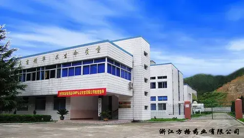
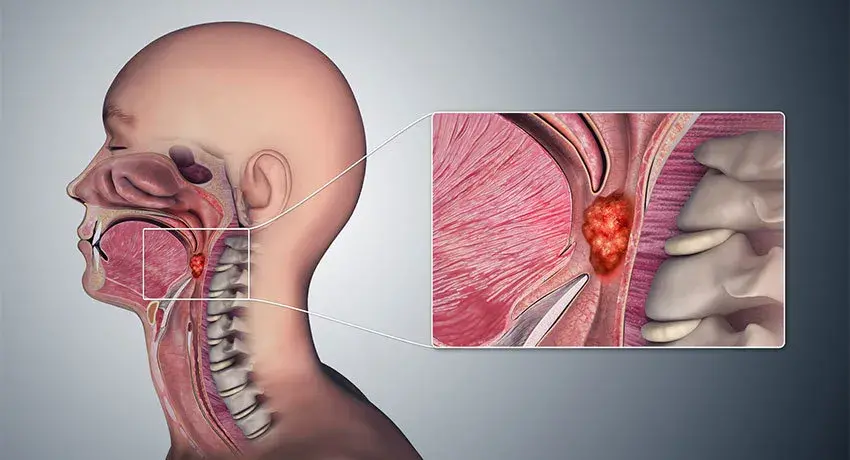
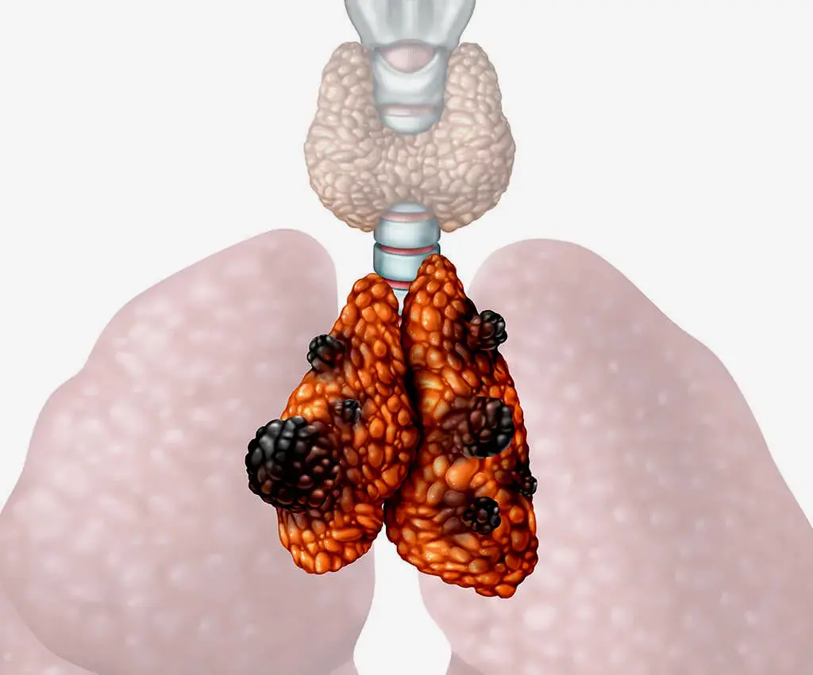

СРОЧНО ЗВОНИТЕ!
ЗВОНОК БЕСПЛАТНЫЙ
ЕФФЕКТИВНОСТЬ ЛЕЧЕНИЯ СОВМЕСТНО С ХИМИОТЕРАПИЕЙ 82% -
95%
WhatsApp, Viber, Telegram
Бизнес на лечении рака
Сейчас я хочу затронуть «наболевшую тему», связанную с клиниками,
онкоцентрами и лекарствами для лечения рака. Данная тема у всех давно на слуху. Не секрет,
что фармацевтика – это хороший бизнес, а лечение онкологии тем более. Лечение онкологии
сейчас стоит очень дорого. Тысячи и миллионы долларов. И после такого лечения никто не может
дать гарантий исцелится ли человек или нет, будет жить или нет. В практике существует много
таких случаев. Например, взять различных певцов, музыкантов, политиков, бизнесменов. На их
лечение страна и благотворительные фонды выделяют тысячи и миллионы долларов. Лечение не
дает результата, либо результат не на длительный срок.
Единственный выход из ситуации – это фунготерапия и энерго-информационная медицина, в
частности, грибы и многомерная медицина по методу Пучко Л.Г. Это спасение онкобольных людей.
Грибы помогают даже на 4 стадии с метастазами. После оздоровления ими люди живут еще очень
долго. Грибы способны ликвидировать метастазы, подавить опухоль, а энерго-информационная
медицина – разрушить ДНК раковых клеток и восстановить организм. Грибы не вызывают
привыкания, а раковые клетки не могут приспособиться к ним, поэтому и происходит исцеление.
Грибы так же выводят яды и шлаки от химиотерапии и лучевой терапии, выводят из организма
радионуклиды и продукты распада.
Как я занимаюсь оздоровлением:
- - составляю индивидуальную программу приема грибов под каждого клиента
- - устраняю глубинные причины повреждения организма
- - составляю вибрационные ряды на восстановление организма
- - работаю с аурой человека. Восстанавливаю ее целостность.
- - кроме того, вы проходите у себя дома аретотерапию.
Помните, что химиотерапия, совместно с фунготерапией и многомерной
медициной, повышает шансы на исцеление и выживание на 82%-95%! Это весомый результат!
Виды рака
На сегодняшний день существует большое количество
онкологических заболеваний. Вот их перечень:
- 1) Рак яичников
- 2) Рак яичек
- 3) Рак языка
- 4) Рак эндокринной системы
- 5) Рак щитовидной железы
- 6) Рак шишковидной железы
- 7) Рак шейки матки
- 8) Рак челюстей
- 9) Рак фатерого сосочка
- 10) Рак уха
- 11) Рак уретры
- 12) Рак трахеи
- 13) Рак тонкой кишки
- 14) Рак тимуса
- 15) Рак стопы
- 16) Рак слюнных желез
- 17) Рак слепой кишки
- 18) Рак слезных желез
- 19) Рак сигмовидной кишки
- 20) Рак сетчатки глаза
- 21) Рак сердца
- 22) Рак селезенки
- 23) Рак прямой кишки
- 24) Рак предстательной железы
- 25) Рак почки
- 26) Рак потовых желез
- 27) Рак полости рта
- 28) Рак полового члена
- 29) Рак плевры
- 30) Рак печени
- 31) Рак пазух носа
- 32) Рак нервной системы
- 33) Рак надпочечников
- 34) Рак мочеточников
- 35) Рак мочевого пузыря
- 36) Рак молочной железы
- 37) Рак миндалин
- 38) Рак матки
- 39) Рак лимфы
- 40) Рак легких
- 41) Рак крови
- 42) Рак кровеносных сосудов, вен, артерий
- 43) Рак костного мозга
- 44) Рак костей
- 45) Рак суставных хрящей
- 46) Рак кожи
- 47) Рак кишечника
- 48) Рак желчного пузыря
- 49) Рак желудка
- 50) Рак двенадцатиперстной кишки
- 51) Рак губы
- 52) Рак груди у мужчин
- 53) Рак гортани
- 54) Рак голосовых связок
- 55) Рак головного мозга
- 56) Рак глаза
- 57) Рак вульвы
- 58) Рак влагалища
- 59) Рак века
- 60) Рак бронхов
- 61) Рак аппендикса
- 62) Рак анального канала
- 63) Рак пятки
- 64) Рак поджелудочной железы
- 65) Рак носоглотки
- 66) Рак зрачка
- 67) Рак гипофиза
- 68) Лимфома Ходжкина
По строению клеток опухоли различают:
- 1) карциному - рак в эпителии,
- 2) лейкоз - развитие ракового процесса в кроветворной системе,
- 3) меланому - рак кожи,
- 4) саркому - рак в соединительной ткани,
- 5) лимфому - рак в лимфатической системе,
- 6) глиому - рак головного мозга и др.
Рак может быть ранним, местно-распространенным и
метастатическим.
- 1) Ранний рак распространяется только на слизистую оболочку, без инвазии в более глубокие слои. В большинстве случаев при раннем раке возможны органосохраняющие вмешательства, зачастую через просвет органа, без входа в брюшную полость. Данная форма не имеет клинических проявлений и выявляется случайно или при плановом обследовании. Поэтому так важен онкоскрининг.
- 2) Местно-распространенный рак прорастает из слизистой в более глубокие слои, а также зачастую дает метастазы в регионарные лимфоузлы (подлежащие удалению при стандартной онкологической операции). Метод лечения –– хирургический, заключается в частичном или полном удалении органа и регионарных лимфоузлов. Как правило, такое лечение радикально, хотя риск рецидива заболевания выше, чем при раннем раке.
- 3) Метастатический рак подразумевает наличие метастазов в отдаленные органы. В большинстве случаев данная форма неизлечима и предполагает паллиативное лечение, направленное на продление жизни. Хотя в последнее время развиваются хирургические технологии, заключающиеся в удалении первичной опухоли и отдаленных метастазов (полная циторедукция). В ряде случаев такие вмешательства позволяют радикально излечить опухоль. Особенно хорошо такой подход зарекомендовал себя при раке толстой или прямой кишки с единичными метастазами в один орган (например, в печень).
Редкие формы рака составляют считанные проценты в структуре заболеваемости
злокачественными опухолями. По сути, в этом и заключается их коварство — именно в силу
редкого возникновения на начальных этапах диагностики они могут быть расценены как иной
вид рака, что, соответственно, приводит к выбору неверной тактики лечения. Кроме того,
для некоторых из редких видов рака не выработано стандартов лечения.
Виды:
- 1) Рак стопы
- 2) Рак влагалища
- 3) Рак слюнной железы
- 4) Хордома
- 5) Хондросаркома
- 6) Слизистый рак
- 7) Медуллярный рак
- 8) Папиллярный инвазивный рак
- 9) Тубулярный рак
- 10) Аденокистозный рак
- 11) Секреторный рак
- 12) Апокринный рак
- 13) Рак с метаплазией
- 14) Липидсекретирующий рак
- 15) Воспалительный рак
- 16) Болезнь Педжета
Витамины при онкологии
Употребление витаминов при онкологии
Витаминами называют биологически активные вещества, без которых невозможна нормальная работа
организма. Многие пациенты боятся их принимать, считая, что такие вещества способны только
усилить рост опухоли. Но на самом деле это не так, поскольку витамины для человека жизненно
необходимы, ведь они поддерживают все основные функции. Какие же витамины при онкологии
можно принимать – об этом важно знать каждому пациенту, который борется с таким
заболеванием.
Чем полезны витамины
По химической структуре витамины имеют очень простое строение. Это низкомолекулярные
соединения органического типа. Для человека они необходимы как составная часть пищи.
Практически все витамины не синтезируются самим организмом, поэтому они могут поступить в
него только с пищей. Вещества содержатся в продуктах питания в очень малом количестве,
поэтому их еще называют микронутриентами.
Витамины нельзя ничем заменить. Поскольку их можно получить только с продуктами, пациенту
очень важно следить за рационом, а при недостатке их в продуктах – принимать витаминные
препараты.
Польза витаминов заключается в следующем:
- -увеличивают работоспособность;
- -повышают стойкость к различным инфекциям;
- -усиливают выносливость организма;
- -способствуют правильному обмену веществ;
- -способствуют усилению действия гормонов и ферментов;
- -нормализуют работу иммунной системы;
- -регулируют нервную деятельность.
Помогут ли витамины при онкологии
Витамины при онкологии имеют особенно важное значение. Для человека, ослабленного болезнью,
они нужны как никогда, поскольку в таком состоянии организм сложнее обеспечить всеми
питательными веществами. Витамины особенно необходимо при поражении желудочно-кишечного
тракта. Из-за этого питательные компоненты просто не усваиваются организмом.
Для таких пациентов особенно актуальны витаминные комплексы в виде таблеток или инъекций.
Внутривенное или внутримышечное введение витаминов называют витаминной стимуляцией. Именно
такой способ обеспечивает наилучшее усвоение питательных веществ. Но решение в каждом случае
принимает врач: кому-то будет достаточно коррекции рациона, другим же пациентам потребуется
дополнительный прием витаминных комплексов.
Именно поэтому ответ на вопрос, можно ли витамины при онкологии, исключительно
положительный. Эти вещества повышают защитные силы организма, активизируют восстановительные
процессы, укрепляют иммунитет, который ослаблен в результате прохождения курса лучевой или
химиотерапии. Еще они помогут уменьшить побочные эффекты от проводимого лечения.
Как и какие витамины принимать при онкологии
Витамины при онкологии принимают только по согласованию с врачом, поскольку некоторые из них
могут стимулировать рост опухоли, особенно при неправильно подобранной дозировке. Избыток
так же, как и недостаток, может спровоцировать ухудшение общего заболевания. Каждая группа
веществ имеет свою ценность для организма, ослабленного болезнью.
- Группа А. Главное свойство – физиологическая регенерация пораженных клеток. Согласно исследованиям, провитамин А даже может предотвратить развитие рака. Еще он способен облегчить течение некоторых видов рака: молочной железы, простаты и пр.
- Группа B. Их основное назначение – участие в белковом, жировом и углеводном обмене. Еще они отвечают за нормализацию нервной деятельности, улучшают внимание и память, повышают психическую активность. Из-за способности активировать клеточный рост витамин В принимают при раке с осторожностью.
- Витамин В17, или амигдалин. Это вещество с очень сильным противораковым эффектом. Оно уничтожает патологические клетки с помощью специального фермента, который вырабатывается в результате взаимодействия с ними. Также В17 очень полезен в детоксикации организма.
- Витамин Д. Способен угнетать метастатические процессы и стимулировать клеточный иммунитет. Дополнительно восстанавливает кальциевый обмен, который нарушается в результате противоопухолевого лечения.
- Аскорбиновая кислота (С). Как известно, это наиболее эффективный витамин в отношении укрепления иммунитета. Еще он защищает здоровые клетки от мутаций. Из-за подобных свойств аскорбиновую кислоту рекомендуют принимать для снижения побочных эффектов от противоопухолевого лечения. Кроме усиления иммунного ответа, кислота укрепляет сосуды головного мозга и тонизирует состояние больного в целом.
- Витамин Е, или токоферол. Это мощнейший природный антиоксидант, который борется со свободными радикалами. За счет восстановления регенерационных способностей клеток позволяет облегчить процесс реабилитации и предупредить рецидив рака.
Какие витамины противопоказаны при раке:
Рассматривая вопрос, можно ли витамины при онкологии, важно отметить, что не все подобные
вещества оказывают исключительно положительное влияние на организм. Некоторые из них могут
способствовать росту опухоли, поэтому категорически противопоказаны. К таким витаминам
относятся:
• токоферол в капсулах;
• В12 (метилкобаламин);
• тиамин;
• В9 (фолиевая кислота).
Также пациенту не рекомендован прием железосодержащих препаратов. Курильщикам необходимо
быть осторожными с витамином А, поскольку он негативно влияет на организм при раке легких.
При онкологии мочевого пузыря или простаты опасен неконтролируемый прием витаминов А, Е и
Д3.
При онкологии нужно употреблять свежие фрукты и овощи, витамины в органической форме и на
травах, из сборов трав. Например, это продукция компании «Сибирское здоровье» и «Оптисалт».
Химические витамины из аптек при онкологических заболеваниях употреблять категорически
нельзя, поскольку они усиливают размножение раковых клеток. Употреблять нужно витамины
только в органической форме.
Где выращивают наши грибы?
Место, гда должны вырасти будущие целебные грибы, должно быть особенным:
Чистым. Ведь грибы, как мощные пылесосы, забирают в себя всю грязь – радиацию, тяжёлые
металлы, удобрения. Есть даже проекты по очищению загрязнённых территорий с помощью грибов –
заражённая почва после них становится чистой.
Поэтому к чистоте места подходят тщательно: дороги должны быть далеко, чтобы почва не
использовалась ранее в сельском хозяйстве, чтобы местный климат был тёплым и главное –
влажным. Ведь грибы могут расти только в присутствии воды. Помните, что заядлые грибники
всегда ждут небольших дождей?
Почва контролируется особо – постоянные анализы на тяжёлые металлы, на радиацию. Также
строго подбирается древесина, на которой будут расти грибы – только из экологичных районов.
Работники на эти плантации приезжают только на электромопедах)
Грибы выращивать сложно – они капризные и требуют к себе внимание – температуру, влажность.
Единственное, что им не нужно (и это отличает их от растений) – это свет, в теплицах всегда
полумрак.
Я был не на всех плантациях фабрики, а только на трёх и то, добираться до них далеко – 1-2
часа по горному серпантину. А на отдалённые участки, где растёт Агарик бразильский, Трамета
разноцветная, Герициум гребенчатый и ещё 18 других видов грибов, ехать надо более 8 часов. И
я к такому подвигу пока не готов, хотя, по рассказам директора фабрики, в тех местах очень
красиво – там снимали пейзажи для фильма Аватар – летающие скалы. После фильма местные
китайцы назвали одну из гор горой Аватар и возят туда экскурсии.
Первая плантация – грибы Майтаке.
Этот гриб фабрика стала первой выращивать в Китае и сейчас технологии уже отточены до
совершенства. Кстати, Китай мировой лидер по производству съедобных и лекарственных грибов.
После того, как грибы собраны, их везут на саму фабрику, чтобы получить из них все нужные и
полезные вещества, которые и помогают нам бороться с тяжёлыми заболеваниями.
Гидроплазма Инюшина при онкологии
Гидроплазма представляет собой воду в измененном состоянии, уникальный концентрат способен
изменять свойства привычной питьевой воды. После добавления нескольких капель гидроплазмы
простая вода становится биогенной, способствующей запуску в организме процессов
детоксикации, омоложения и восстановления на клеточном уровне.
Гидроплазма представляет собой воду в измененном состоянии, уникальный концентрат способен
изменять свойства привычной питьевой воды. После добавления нескольких капель гидроплазмы
простая вода становится биогенной, способствующей запуску в организме процессов
детоксикации, омоложения и восстановления на клеточном уровне.
В состав продукта входят следующие компоненты:
Очищенная природная вода, обогащённая концентратом гидроплазмы методом биогинезации.
Действие гидроплазмы на организм человека и ее
эффективность
- - продление жизни с увеличением ее продолжительности в среднем от 20 до 30% сдерживание старения на клеточном уровне за счет нормализации обменных процессов
- - ускорение процессов восстановление клеток и тканей при болезнях разной этиологии
- - снижение в 1,5-2 раза риска возникновения новообразований и развития онкозаболеваний
- - нормализация эмоционального фона и повышение стерссоустойчивости нервной системы
- - обеспечение нормальной работы печени за счет восстановления ее клеточной структуры
- - профилактика возникновения патологий мочеполовой системы и мочекаменной болезни
- - угнетение физиологической и психологической зависимости от наркотических веществ
- - формирование устойчивости к физическим и умственным нагрузкам, негативному воздействию
- - активизация иммунитета и внутренних сил организма для борьбы с инфекциями и вирусами
- - усиление прочности соединительной и костной ткани, нормализация энергетического баланса
Чем уникальна гидроплазма:
- 1.Самостоятельно очищает все его тело, все органы и клеточную структуру.
- 2.В плазме невозможно жить паразитам и они покидают тело сами.
- 3.Регенерируют все клеточные мембраны, которых в человеке 100 000 тысяч километров – в любом органе тела, регенерирует все патологические деструкции в теле до совершенных. Живая вода «знает» какое совершенство заложено в человеке. Постепенно исчезают диагнозы - аутоиммунных, психических, «неизлечимых болезней». Уже получено огромное количество результатов.
- 4.Восстанавливает энергетику человека, входя в контакт с Солнцем и хлорофиллом растений, физическим вакуумом.
- 5.Очищает человека на тонком плане – все его тонкие тела. Постепенно исчезают все зависимости и психосоматические причины заболеваний. Улучшается память, становятся позитивными мысли и эмоции, исчезает агрессия и депрессия.
- 6.Все клетки организма начинают работать и происходит оживление всей нашей внутренней воды, всего организма
- 7.Нет противопоказаний: можно и нужно всем – от беременной мамы, деток любого возраста и взрослых любого возраста.
- 8.Включает анти энтропийные процессы. Своей много векторной многомерной структурой останавливает процессы хаоса – саморазрушения в организме.
- 9.Многое другое, что способно делать живое в живом.
Кто пьет гидроплазму, рак не является приговором
Отзыв из чата:
Доброе утро.Хочу поделиться своей историей знакомства с Водичкой.В сентябре месяца моему
папе ставят диагноз онкология желудка- от операции он отказывается,так как врачи не дают
гарантий и опухоль находится в верхней части,то удалять надо весь желудок.химию мы не
делали тоже.Я стала искать способ как ему помочь-и в очередной раз мне на помощь пришла
Светлана Кондратьева (огромная ей благодарность и поклон)С октября месяца мы начали пить
гидроплазму,а вскоре подключили и Абсотную Энергию(пили 25 капель на 30 мл. волы) и
капсулы Дигидроквертицина. Наши результаты на сегодняшний день-анализы крови и мочи
идеальные,когда врач спросил про аппетит,папа ответил :"Зверский!", а самое главное он
ведёт активный образ жизни,занялся любимым делом-разводит кроликов,единственное на что
он жалуется,что ему не хочется спать(но это же А.Э.)при этом бодрый в течение дня.В Уфе
в онко-диспансере нам дали срок 6 месяцев максимум!!!!А бывают и случаи,что за месяц
человек сгорает.Мы продолжаем пить Водичку и верить в Чудо!Именно такой и является наша
водичка!Поверьте!!
Отзыв Татьяны Розенковой
Глиома
Глиома — опухоль, входящая в гетерогенную группу и имеющая нейроэктодермальное
происхождение. Глиома — самая распространённая первичная опухоль головного мозга. Глиомы
различаются по степени злокачественности, гистологическим признакам, возрастом
манифестации, способности к инвазии и опухолевому прогрессу и др.
Вопрос о клетках-предшественниках глиом до сих пор является предметом дискуссий.
Классически считается, что астроцитомы развиваются из астроцитарного ростка, а
олигодендроглиомы из олигодендроглиального ростка. Однако ряд современных исследователей
считает, что в основе происхождения глиом лежит наличие «окон злокачественной
уязвимости» (window of neoplastic vulnerability), то есть глиомы развиваются не из
зрелых клеток глии (астроцитов и олигодендроцитов), а из медленно пролиферирующих клеток
(still-proliferating cells), в которых и происходит злокачественное перерождение. А
направление опухолевой прогрессии (астроцитома или олигодендроглиома) определяется
наличием различных генетических нарушений. Так, например, основной генетической
поломкой, определяющей астроцитарный путь развития, является повреждение в гене TP53,
для олигодендроглиом характерны утраты гетерозиготности в локусах 1p и 19q.
Также на генетическую предрасположенность к глиоме влияют мутации в генах DRD5, WDR1,
NOMO1, PDXDC1.
Общепринятой и удобной является классификация
глиальных опухолей Всемирной организации здравоохранения. В основу этой
классификации легли четыре морфологических признака: ядерная атипия, фигуры митозов,
микропролиферация эндотелия и области некрозов:
- I степень злокачественности (доброкачественная опухоль): пилоцитарная астроцитома
- II степень злокачественности (один признак злокачественности, как правило клеточная атипия): диффузная астроцитома (фибриллярная, протоплазматическая, гемистоцитарная)
- III степень злокачественности (два признака из трех, исключая некрозы): анапластическая астроцитома
- IV степень злокачественности (три или четыре признака, но обязательно наличие некроза): мультиформная глиобластома
Также глиомы можно разделить по локализации (по отношению к намету мозжечка) на две
группы: субтенториальные и супратенториальные.
Некоторые глиомы имеют важную особенность — их клетки соединены в единый «орган» сетью
микротрубок, обеспечивающих рост опухоли и ее устойчивость к терапии.
Глубинные причины повреждения организма при онкологии и методы их
устранения
Глубинные причины возникновения хронических и онкологических
заболеваний записаны в организме человека в волновой голографической форме и хранятся в
архивах памяти его «биокомпьютера» (в подсознании и на некоторых структурах сознания).
Все глубинные причины, вызывающие заболевания организма и связанные
с
полевой (волновой) формой воздействия на человека, автор условно разделила на три класса:
1) негативные внешние энергоинформационные воздействия, созданные
другим человеком (в народе их называют «порча», «сглаз» и т. д.), и воздействие негативных
тонкоматериальных сущностей, обитающих в многомерном тонкоматериальном мире независимо от
воли людей (в народе – «земные духи» и т. д.);
2) негативные внутренние энергоинформационные воздействия,
возникающие от записи в голографической форме отрицательных психофизиологических состояний
человека;
3) негативные воздействия излучений патогенных возбудителей,
находящихся в организме человека (вирусы, бактерии, грибки и т. д.). Совокупность глубинных
причин хронических заболеваний, записанных в волновой форме, образует постоянно меняющуюся
во времени волновую матрицу, которая индивидуальна и неповторима для каждого человека в
каждый момент времени. Поиск глубинных причин возникновения заболеваний и расшифровок.
Общий список глубинных причин повреждения организма (по
Пучко Л.Г.):
- - вирусы
- - бактерии
- - глистные инвазии
- - простейшие
- - грибки
- - недостаток витаминов, микро и макроэлементов
- - патология исследуемого органа
- - последствия физической травмы
- - стресс
- - вредное внутреннее экологическое воздействие
- - вредное внешнее экологическое воздействие
- - недоразвитие тонких тел
- - родовое проклятие
- - ментальная инфекция
- - астральная инфекция
- - эфирная инфекция
- - черно-магическая структура (ЧМС)
- - черно-магическая управляющая структура (ЧМУС)
- - негативные программы
- - инграммы
- - эфирные сущности
- - земные духи
- - чужие души
- - ауральные сущности
- - отрицательные мысли
- - отрицательные эмоции
- - клише навязчивого поведения
- - многомерные управляющие энергетические структуры
- - грехи (карма)
- - смещение энергетического двойника
Родовое проклятье — это сценарий, передаваемый по роду. Если пойти с точки зрения эзотерики
или даже религии, он является целенаправленным негативным воздействием на род с целью его
наказать. Или результатом собственных негативных поступков. Собственно, этот механизм описан
и в Библии: «Пошлет Господь на тебя проклятие, смятение и несчастье во всяком деле рук
твоих, какое ни станешь ты делать, доколе не будешь истреблен» (Второзаконие). Считается,
что такое проклятие сходит на нет к седьмому колену или раньше, если потомки прилагают
усилия.
Если смотреть на родовое проклятие с точки зрения
психотерапии, мы имеем травму, передающуюся внутри семейной системы в поколениях.
Задуматься о тяжелом наследстве стоит, если есть повторяющиеся сценарии как будто вне
воли самого человека:
- сходные болезни
- бесплодие по мужской или женской линии рода
- разорение
- отсутствие любовных отношений (пресловутый «венец безбрачия»)
Травма в далеком прошлом влияет на нашу жизнь сегодня. Это влияние остается неосознанным, и
именно поэтому такие сценарии называют проклятием. Мистическая неудача или роковой случай
начинает преследовать семью поколение за поколением. Например, все мужчины умирают в 40 или
умирают все первенцы.
Виды Черномагических структур:
- - порча - вредоносное магическое влияние со стороны недоброжелателей.
- - сглаз
- - проклятие
Проклятие - словесная формула, содержащая пожелание зла в адрес
кого- или чего-либо, ругательства. Крайнее, бесповоротное осуждение, знаменующее полный
разрыв отношений и отторжение.
Это особые заклинания, которые вызывают несчастье, болезнь или
наносят ущерб. Проклятия считаются одной из наиболее опасных форм магии, а ритуалы,
связанные с наложением проклятий (Magia Maleficio), можно наблюдать в самых разных культурах
по всему миру. Адепты этого направления обычно держатся от прочих практиков на стороне.
Причиной такой воздержанности является то, что проклинающий испытывает на себе последствия
проклятия и прочих магических действия злокозненной природы (в среде магов именуемой
«откат»). Также эффект противодействия (или откат) распространяется как на близких, так и
любимых людей магаоператора. Поэтому при инициации маг отрекается от родных, близких и
любимых и посвящает себя ремеслу. Также маг должен помнить, что платой за успех в магии
зачастую служит одиночество, искаженное восприятие действительности, а в довершение всего —
безумие (смертью Души при жизни Тела).
Проклятия «накладывают», в первую очередь, в качестве мести или
оказания влияния. Но также и в целях защиты, обычно, домов, сокровищ, могил и кладбищ.
Проклятие оказывает воздействие либо немедленно, или по прошествии многих лет.
Проклятие может наслать любой человек, просто выразив желание, чтобы
такому-то человеку был нанесен такой-то ущерб. Однако эффективность проклятия зависит от
состояния и положения проклинающего. Считается, что проклятия обладают бо́льшей силой — и
поэтому более опасны когда их насылают люди авторитетные, например, жрецы, жрицы или члены
королевской семьи; люди, владеющие магическим искусством, например, ведьмы, колдуны и маги;
люди, которые не могут отомстить как то иначе, например, женщины (в большинстве обществ),
бедняки, больные и находящиеся при смерти. Проклятия, произносимые на смертном одре,
обладают наибольшей силой, поскольку вся жизненная энергия проклинающего уходит с этим
проклятием.
Как и благословение, проклятие состоит в призвании
сверхъестественных сил произвести какое-либо действие, меняющее положение дел. Различие
между благодеянием и вредом создается внутренним намерением. За исключением неоязыческих
ведьм, ведьмы и колдуны в большинстве обществ на протяжении всей истории используют в
отношении других людей как благословения, так и проклятия, в ответ на плату от своих
клиентов или на приговор суда. Платон замечает в «Государстве»: «Если кто-нибудь хочет
нанести вред врагу, то за небольшую плату они — колдуны причиняют ущерб как доброму, так и
злому человеку, призвав богов служить их целям с помощью заклинаний и проклятий».
Возможно, самый распространенный метод проклинания — это проклятия с
использованием фигуры или портрета жертвы. В Древней Индии, Персии, Египте, Африке и Европе
были весьма распространены восковые фигурки, которые до сих пор продолжают использоваться.
Фигурки могут также изготавливаться из глины, дерева или набитой ватой материи (тряпичные
куклы). Восковые фигурки раскрашивают, на них делают отметки или обвешивают чем-то, что
имеет связь с жертвой прядью волос, ногтями, выделениями, одеждой, даже пылью с подошв её
обуви — затем эти фигурки растапливают, сжигают на огне, хоронят в могилах на манер
покойника.
Виды негативных программ:
- - «Ревность». Эта программа заставляет человека ревновать по поводу и без повода. Ревность к партнеру, ревность к карьерному росту и достижениям, ревность к здоровью и т.д. и т.п. Человеку, имеющему такую программу сложно удержаться в отношениях с окружающими людьми.
- - «Зависть». Эта программа может быть поставлена человеку, если ему кто-то сильно позавидовал. Так же эта НП может заставлять человека завидовать по поводу и без повода всем окружающим.
- - «Злоба». Если кто-то, имеющий сильную энергетику, сильно разозлился на человека, то у него могла возникнуть программа «Злоба». Так же эта программа может быть наведена специально, чтобы человек-жертва беспричинно злился на все и всех. Рано или поздно это испортит отношения с партнерами и окружающими людьми.
- - «Ненависть». Если кто-то сильно возненавидел человека, то на него может быть записана программа «ненависть». Так же эта программа может быть специально наведена знающими людьми, чтобы человек-жертва беспричинно ненавидел всех. Окружающим людям сложно будет находится в контакте и общаться с таким человеком.
- - «Расставание». Цель этой программы – разрушить способность к контакту с партнером, развести людей. Ее могут навести не только с целью отбить женщину или мужчину, но и наводят конкурентам по бизнесу, чтобы они расстались, и их фирма развалилась.
- - «На одиночество». Такая программа часто ставится в отместку человеку. Ее цель в конечном итоге – полная изоляция человека от окружающих его людей и близких существ.
- - «На ссоры». Эта программа вынуждает жертву ссорится со всеми без причины.
- - «На смерть». Эта программа притягивает к жертве тяжелые заболевания и смерть.
- - «На болезни». Эта программа притягивает ее обладателю различные болезни.
- - «На вранье». Человек, имеющий эту программу, постоянно врет. Кроме этого, она создает уязвимость для проникновения в ауру ауральной сущности «Лживый дух».
- - «На бессилие». Человеку - жертве не хватает энергии, сил для работы, новых начинаний. Депрессия, повышенная утомляемость и хроническая усталость, безразличие ко всему становятся его спутниками.
- - «На агрессию» провоцирует агрессивное поведение человека-жертвы. Агрессия может быть направлена как на самого себя, так и на других людей.
- - «На зависимость». Программу ставят для того, чтобы человек-жертва стал зависимым. Это высокий риск появления одной или нескольких зависимостей - алкоголизма, наркомании, игровой зависимости, табакокурения и др. Соответственно, в результате появления у человека зависимости он становится уязвим для соответствующих земных духов – дух алкоголика, дух наркомана, дух игромана и ауральных сущностей – ахримания, пиявка, люцифер и др.
- - «На искушения» постоянно провоцирует человека - жертву на различные искушения. В итоге он становится одержимым сущностями и зависимым.
- - «На геройство». Стране нужны герои. Вспомните о пионерах-героях. Обычные дети, которые жили как все, но потом совершили подвиг, стали героями и образцом для подражания. Мало кто знает, что книги о них писались по тем же принципам, по которым написаны жития Святых, только в адаптированном для атеистического общества варианте. Люди постоянно хотят и готовы совершить подвиг - примерно так действует программа «на геройство».
- - «На обжорство» делает человека неудовлетворенного желудочно. Человек постоянно ест, в перерывах между основной едой он обязательно перекусывает. В итоге – ожирение, вред физическому и эфирному телу, повышенное артериальное давление и соответствующий букет заболеваний. НП -
- - «На обиду» принуждает человека обижаться на всех и на самого себя по поводу и без повода. В результате это оказывает влияние на контакт с окружающими людьми.
- - «На перекрытие денег» ведет жертву к хроническому безденежью. Даже если удается накопить какую-то сумму, то что-то происходит, и эта сумма тут же тратится на текущие нужды.
- - «На нищету». Человеку сложно заработать денег, удержать имущество – все куда-то исчезает.
- - «На разврат» провоцирует человека на различные развратные действия.
- - «На растерянность» мешает человеку сосредоточится. Ухудшается внимательность, память и т.п.
- - «На безответственность» напрочь лишает человека ответственности со всеми вытекающими последствиями. Такой человек никогда не признает свою вину, переложив ее на любого ближнего.
- - «На споры» провоцирует человека спорить по любому поводу, доказывая с пеной у рта свою правоту.
- - «На страхи» притягивает к жертве различные страхи и фобии.
- - «На неудачи» мешает человеку в достижении целей, притягивая черную полосу в его жизнь.
- - «На травму» притягивает к жертве несчастные случаи с риском получения травмы.
- - «Подчинение определенному лицу» заставляет человека против своей воли подчиняться этому лицу. Бывает, что один супруг ставит такую программу другому, бывает начальник ставит НП подчиненному – так проще управлять.
- - «Подчинение определенным интересам» подобна НП «Подчинение определенному лицу», и вызывает у человека ненормальную лояльность к определенным интересам.
- - Зомбирование — это начальная стадии деградации психики, когда человек теряет способность к воображению, творчеству, оригинальному мышлению. Очень часто одной из основных целей зомбирования является вампиризм индивидуальный, но гораздо чаще глобальный. Человек в этом случае служит своеобразным коллектором, через который жизненная энергия забирается из других людей.
- - Робототизация приводит к еще большему разрушению структуры сознания, когда человек превращается как бы в биоробота, чье мышление содержит только четко очерченные логически упорядоченные образы-схемы, то есть как бы мысль по заказу хозяина. Такое воздействие обычно используют в тоталитарных сектах.
- - Воздействие (психическое нападение) на человека может быть случайным (непреднамеренным) и организованным (преднамеренным). Бывает, что программа ставиться другому человеку на сильных эмоциях. Использование техник всепрощения и покаяния исполнителем и жертвой помогает минимизировать или нейтрализовать действие таких программ.
Человек, на которого наведена та или иная программа, помимо своего
желания и воли следует ее алгоритму. Например, если на мужчину женщиной, которая пожелала
«отбить» его у жены, были наведены программы «На ссоры» и «Расставание», у него
бессознательно будет возникать желание ссориться, что приведет его к расставанию с женой.
Если после достижения поставленной цели программы не были сняты, то их действие будет
продолжаться. При этом, мужчина не будет удерживаться в семье, в коллективе, будет ссориться
со всеми подряд без видимых причин.
Астральная инфекция это такие же патогенные возбудители (простейшие,
грибки, вирусы, бактерии и т.д.). Но астральная инфекция отличается тем, что не имеет
физического тела. Если грибки, бактерии, вирусы можно рассматривать под микроскопом, то
астральные инфекции под микроскопом не увидите. Но при их обитании все они образуют как бы
точечные проколы в тонких телах, где они располагаются. Этот вид инфекции влияет на организм
общим отбором энергии и вызывает обострение хронических заболеваний.
Инграамма - это умственный негативный образ прошлого опыта, который
производит отрицательное эмоциональное воздействие в личной жизни.
Сущности – это живые существа из другого измерения, обладающие
сознанием. Они могут внедряться в энергетическую систему человека и жить в ней очень долго,
питаясь его энергиями. И так, повторю, большинство людей имеет сущности. Какие же сущности
встречаются? Их можно условно разделить на две категории. Первая – это сущности, созданные
самим человеком, и вторая – подселённые сущности. Сущности, созданные человеком, могут быть
сотворены им либо в текущем воплощении, либо в прошлых жизнях. Это могут быть сущности
ненависти, жестокости, гордыни, жадности, презрения, самоуничижения, обидчивости и т.д. Если
человек в прошлых воплощениях какими-то своими мыслями, эмоциями создал негативные энергии -
сущности, они могли воплотиться в этой жизни вместе с ним и присутствуют сейчас в его
энергосистеме. Другой вариант – у тех людей, которые сейчас работают над собой, проходят
интенсивное очищение и исцеление, могут проявляться сущности из прошлых жизней. Вы наверняка
читали о том, что сейчас через нас проходят энергии наших прошлых воплощений. Там ведь
разные были энергии, как позитивные, так и негативные. Позитивных мы можем не замечать, но
вот негативные создают большие проблемы. В один прекрасный день человек может проснуться с
неприятными ощущениями, даже физическими, и не подозревать (если он не обладает ясновидением
и яснознанием), что в его энергосистеме всё оплела какая-то энергия-сущность, им же самим
созданная в одном из прошлых воплощений, или же у него проявился какой-то темный канал из
прошлых жизней. Так как мы сейчас двигаемся к свету, и наша энергетика очищается и
осветляется, то наши частоты уже не резонируют с плотными низкочастотными энергиями этих
сущностей, и они приходят с одной целью – чтобы мы очистились от них. Что касается
подселённых сущностей, то там всё гораздо сложнее. К подселённым сущностям относятся все
астральные сущности, развоплощённые души, сущности из других параллелей, инопланетные
сущности и т.д. То есть они не созданы самим человеком, а пришли извне. Бывает, что человек
сам притягивает таких сущностей своими негативными мыслями и эмоциями. Если у него есть
разрывы в ауре (а людей с разрывами очень много), то при всплеске негативных эмоций сущность
притягивается к нему по принципу подобия, и ей ничего не стоит войти в поле человека через
разрывы. И она обосновывается в нём и ведёт очень сытную жизнь, питаясь энергиями человека,
влияя на его психику и усугубляя негативные черты, а также подрывая его здоровье.
Все эти глубинные причины устраняются многомерной медициной с
помощью составления вибрационных рядов.
Вибрационный ряд представляет собой индивидуальный
амплитудно-частотно-фазовый волновой излучатель, который своим излучением ликвидирует по
заданию сознания человека чужеродные вибрации, имеющиеся в организме, и тем самым исцеляет
пораженный болезнью орган. Вибрационный ряд – это сочетание геометрических, числовых,
образных, буквенных символов и знаков, соединенных в определенной последовательности и
заряженных по определенной методике.
Вибрационным рядом могут быть ликвидированы органические нарушения,
например, бляшки на сосудах, песок и камни в почках, желчном пузыре и т. д., психические
заболевания, такие как шизофрения, маниакально-депрессивный психоз и т. д.,
психосоматические заболевания, инфекционные, раковые клетки, последствия и причины
онкологических заболеваний и т. д. Вибрационный ряд действует быстро (от нескольких секунд
до нескольких минут, реже дней), что позволяет снимать острую боль и зачастую спасает жизнь
человеку.
Я работаю индивидуально. Составляю вибрационные ряды под каждого
клиента индивидуально. Обучаю клиента как это сделать самому.
Гриб Агарик Бразильский
Гриб Бразильский Агарик применяется для лечения:
- - онкологических пациентов любых стадий развития опухоли, а также пациентов, подвергшихся химиотерапии и/или лучевой терапии;
- - лиц с поражениями печени любой природы: вирусными гепатитами В, С, D, J, начальными стадиями цирроза, жировой дистрофией, гепатозами и т.п.;
- - мужчин, женщин и детей с ослабленным или нарушенным иммунитетом;
- - мужчин, женщин и детей с высокой частотой инфекционных болезней, в том числе простуды и гриппа;
- - людей с аллергией и воспалительными заболеваниями кожи;
- - лиц старше 40 лет, ощущающих снижение функции иммунной системы;
- - лиц, подвергшихся воздействию УФ облучения, электромагнитных полей и/или токсических химикатов;
- - лиц с хроническими заболеваниями, такими как диабет, хроническое воспаление и хроническая усталость
- - мужчин и женщин с высоким риском развития атеросклероза;
- - профессиональных спортсменов и любителей или любых лиц, занимающихся тяжелым трудом;
- - лиц, подвергшихся физическому или эмоциональному стрессу.
Гриб Бразильский Агарик помогает иммунной системе поддерживать
гомеостаз, чувство равновесия. Сбалансированное состояние снижает вероятность того, что
иммунная система будет атаковать свой организм, и повышает вероятность того, что болезнь или
«оккупант» будет уничтожен.
Влияние гриба агарика на кожу состоит в том, что он способствует
омоложению кожи и заживлению ран, а также предотвращает и лечит повреждение кожи
ультрафиолетом. В дополнение к этому бета-1,3-D-глюкан может впрыскиваться в определенные
типы кожных опухолей. Тем не менее, несмотря на то, что такого рода использование Агарика
доказало свою эффективность почти 20 лет назад, оно широко не применялось.
Содержащиеся в Агарике β-глюканы и другие агенты, которые ускоряют
заживление, делают его идеальным средством для избавления от сыпей, дефектов и повреждений
кожи, а также других подобных изъянов.
“ «Практически на протяжении десяти лет я страдал от атопического
дерматита по всему телу. Это было похоже на аллергическую сыпь. Я пробовал множество
средств, но ничего не помогало. Я начал пить экстракт – два грамма Агарика каждый день.
Лечение заняло примерно полгода, но по истечении этого срока моя болезнь исчезла и не
возвратилась спустя полтора года. Это убедило меня в том, что Агарик поддерживает иммунную
систему». М.И.
Некоторые продукты, содержащие бета-глюкан, разработаны для
уменьшения признаков старения. По существу, морщины – это результат повреждения коллагеновых
тканей под поверхностью кожи. β-глюкан гриба агарик может способствовать выравниванию
поверхность кожи, путем ускорения процесса обновления кожных клеток.
Проблемная медицинская практика «пропитывать» пациентов лекарствами
и волнение пациентов по этому поводу побуждает их обратить внимание на восточную медицину.
Что мы ждем от восточной медицины?
Первое, что мы ждем – отношение к болезни. В восточной медицине
считается, что каждое заболевание вызвано нарушением гомеостаза в организме.
Заболевание – это локальный результат дисбаланса между
правдой-ложью, холодным-горячим, положительным-отрицательным, духом-кровью. Поэтому,
восточная медицина акцентирует свое внимание на восстановлении гомеостаза и повышении
иммунитета.
Такое позиционирование восточной медицины весьма эффективно при
лечении физической слабости, во время восстановительного периода после болезни и хронических
или слабовыраженных заболеваний, например усталости, слабого телосложения, люмбаго
(прострел), климактерических расстройств и волнения. Считается, что во время восстановления
гомеостаза, китайские травы эффективны против хронического гепатита, хронического ревматизма
и бронхиальной астмы, неизлечимых западной медициной.
Многочисленные, хорошо сбалансированные составляющие гриба агарика
поправят утерянный баланс, успокоят напряжение и поддержат гомеостаз.
b-D-гликан, содержащийся в грибе агарике усилит иммунную функцию.
Восточная медицина также подтверждает действие съедобного гриба агарика бразильского на
улучшение гомеостаза и иммунитета.
Антродия камфорная (антродия) - царь долголетия, царь лекарств,
тайваньский лесной рубин
Камфорный гриб (антродия) растёт на внутренней поверхности
разлагающихся стволов крупных камфорных деревьев или на влажных поверхностях мертвых
камфорных деревьев.
Особый вид камфорного дерева (Cinnamomum kanehirai), на котором
произрастают эти грибы, растет только на Тайване и только на высоте 450-2000 м над уровнем
мирового океана.
Камфорный гриб является самым дорогим в мире лекарством на основе
грибов. 500 г. стоит ооколо 92 тыс. рублей.
Тритерпеноиды антродии являются одной из основных составляющих
антродии, именно они придают грибам горьковатый вкус. В Красном камфорном грибе их очень
много – около 40 %. Проведенные научные исследования подтвердили- тритерпены антродии
обладают прямым угнетающим действием на клетки рака. Именно они делают этот гриб самым
сильным противораковым грибом из известных.
Антродия содержит иммунные белки, витамины группы В, эргостерол,
аминокислоты, лектин, лигнин, вещество-стабилизатор артериального давления и микроэлементы:
кальций, фосфор, германий.
В составе гриба содержится нуклеиновая кислота. Включает аденозин
(Adenosine), рибонуклеиновые кислоты (RNA), аденин (Adenine), урацил (Uracil) и т.д.
Нуклеиновые кислоты действуют против склеивания тромбоцитов, предотвращают образование
сгустков крови, способствуют профилактике атеросклероза. Кроме того, камфорный гриб включает
фенолы, стероиды, кислоты, лактон, кумарин, ферменты и т.д.
Камфорный гриб в основном содержит ß-D-глюканы, которые активируют
макрофаги, Т-лимфоциты, повышает иммунные функции организма, чем достигается видимый
противоопухолевый результат. Бета-глюканов в грибе не много – примерно 1-2%, поэтому при
лечении рака он сочетается с другими грибами.
Antroquinonol – это производное убихинона, вещество, которое
исследовал ученый из фармацевтического факультета Национального Университета Тайваня, в
г.Тайпее – Po-Cheng Chiang со своими коллегами в 2010 году. Исследования проводились на
больных раком лёгких, молочных желёз, простаты и печени. Результаты и выводы – найдено новое
противораковое лекарство, которое вызывает остановку деления раковых клеток с последующим их
разрушением – апоптозом. Это вещество зарегистрировано в США и других странах, как
противоопухолевое.
Тритерпены Антродии работают следующим образом: – они блокируют
работу белков перед делением раковой клетки; – в результате нарушается клеточный цикл –
раковая клетка не делится (а это важный этап, так как нормальная клетка делится один раз в
10 дней, а раковая – раз в 20 минут!); – и уже после остановки клеточного цикла активируется
апоптоз – разрушение раковой клетки; – Кроме этого тритерпены снижают уровень и активность
Сосудистого эндотелиального фактора роста (VEGF), в результате чего тормозится создание
новых опухолевых сосудов; – Действие против метастазов – тормозят передвижение и внедрение в
здоровую ткань раковых клеток.
Тритерпен супероксиддисмутаза:
Активные формы кислорода (ROS: Reactive Oxygen Species), это
активные молекулы, возникающие от ультрафиолетового и радиационного излучения, а также от
последствий химических реакций, которые возникают в окружающей среде или внутри организма.
Наиболее часто встречающиеся активные формы кислорода – это ионы,
свободные радикалы и перекиси. Они могут вызывать у человека множество болезней, например,
повреждение ДНК, рак и другие опухоли.
Cупероксиддисмутаза (SOD) является основным ферментом супероксидных
радикалов, обладает высокой антиоксидантной функцией, может эффективно противостоять
развитию болезней, вызываемых активными формами кислорода, а также устраняет сами свободные
радикалы.
Лечебное действие Биологически Активные Вещества
камфорного гриба:
- – Блокировка деления раковых клеток;
- – Профилактика образования опухолей;
- – Блокировка деления раковых клеток разными путями;
- – Антиоксидант, удаление свободных радикалов;
- – Блокировка увеличения количества раковых клеток;
- – Блокада роста кровеносной системы опухоли;
- – Запуск и активация апоптоза – разрушения раковых клеток;
- – Предотвращение патологических изменений клеток;
- – Восстановление печени, усиление функции печени;
- – Предотвращение патологических изменений клеток;
- – Понижение кровяного давления, профилактика инсультов;
- – Укрепление иммунитета;
- – Замедление старения, восстановление блеска кожи;
- – Противовоспалительное действие;
- – Противоаллергенное действие;
- – Уменьшение морщин, пятен кожи;
- – Двухуровневая регулировка функции иммунитета;
- – Помогает отрегулировать уровень сахара в крови;
- – Регулировка давления крови, снижение холестерина.
По отзывам врачей в Китае, которые работают с лечебными экстрактами
грибов, камфорный гриб обладает противоопухолевыми свойствами в 10 раз сильнее!
Гриб Веселка
Весёлка – удивительный гриб. Одни люди уже хорошо знают о нём,
другие читают впервые.
Чем он так удивителен?
Своим внешним видом и, конечно свойствами.
Первыми описал его внешность голландский врач Персон в 17 веке,
назвав его «член срамной или бесстыжий». Да, он действительно похож!)
Лечебные свойства гриба весёлки:
Сильные противоопухолевые, способность заживлять трофические язвы,
применяется при женских заболеваниях – мастопатиях, миомах, эрозиях шейки матки, при экземах
и при геморрое, при гастритах, язвах желудка. Есть даже рецепты применения гриба весёлки в
смеси с глиной при радикулитах, ревматизме и при подагре. Многие принимают его по утрам для
снятия хронической усталости.
Долгое время весёлка считалась «знахарским» грибом, используемым
только в народной медицине.
Целебные свойства весёлки хорошо известны на тех территориях, где он
растёт – в деревнях Белоруси, России и в Латвии. Многие жители этих деревень живут
собирательством этого гриба и его заготовкой и места, где она произрастает, оберегают от
чужих глаз, как золотой рудник.
У бабушек, что торгуют ею на рынке, Вы узнаете, как можно лечить
соком или настойкой этого гриба те болезни, что были перечислены выше.
Хороший и сильный гриб!
Народная молва, это, конечно хорошо. Но мы сейчас живём в «эпоху
доказательной медицины». Вспомните, сколько «жареных» сюжетов нашего телевидения было в
последнее время о народных методах лечения. Но оказалось, что не только народные целители
получают знания, работая с этим грибом, леча своих больных.
Первые письменные документы о весёлке:
История такова: первые упоминания встречаются ещё у древних римлян,
но серьёзные научно-медицинские данные найдены в немецких медицинских книгах 17 века. В них
написано о враче из Берлина Каро, который успешно лечил своих онкологических больных этим
грибом.
Есть и более поздние истории. В середине ХХ века рижский агроном,
народный целитель Иосиф Гурвич, работая с Весёлкой, добивался хорошего эффекта. Результаты,
видимо, были настолько впечатляющими, что Гурвич отправлял отчёты о лечении в Академию
медицинских наук СССР и главному онкологу страны Николаю Николаевичу Блохину. Правда, ответа
на свои письма он так и не дождался.
Современные исследования грибов.
Записи Гурвича о методах лечения попали в руки рижского врача и
крупного учёного и ныне руководителя исследовательского института DrKuznecovsLab, Кузнецова
Сергея, который посвятил часть своей научной работы различным целебным свойствам этого
гриба, начиная с 1990 года.
Результаты этих работ обнадёживают – весёлка действительно
продлевает жизнь онкобольным, обладает противоопухолевыми свойствами при раках лёгких и
бронхов, молочной железы, яичников, матки, а также простаты, всего желудочно-кишечного
тракта и при различных видов сарком и достоверно снижает риски рецидива опухолей
Были проведены опыты на мышах, которым вводили клетки рака молочной
железы. Развиваясь, опухоль убивала 100% всех мышей в течение 30-45 дней. Мышкам стали
давать экстракт весёлки каждый день, чем помогли абсолютно всем грызунам дожить до 16-24
месяцев, а ведь это полный жизненный срок, без появления опухолей.
Потом учёные стали работать с другими опухолевыми моделями –
карциномой лёгких Льюиса, с саркомой 180 и с карциномой Эрлиха. Животным вводили в питьё
экстракт весёлки, постепенно увеличивая дозировку и добиваясь при этом всё лучшего
результата – увеличения продолжительности жизни и уменьшения объёма опухолей.
Это означает, что экстракт весёлки обладает способностью защищать
организм от рака и активизирует противоопухолевые механизмы.
Доктор Кузнецов, выступая от Латвийской Медицинской Академии,
представил свои отчёты на 18-м Международном конгрессе по химиотерапии в июле 1993 года.
Впоследствии были изучены свойства, тормозящие метастазирование
лёгочных раков, о чём был представлен реферат 17-м Международном конгрессе аллергологии и
клинической иммунологии в Сиднее в 2000 году.
Интересный случай применения грибов весёлки.
Известен один нашумевший случай, описанный в белорусской газете
«Народная газета» (Минск, 15 октября 1992 г.), в которой журналистка Елена Молочко
опубликовала статью «Исцеление». В статье говорилось об онкологическом больном, Владимире
Корбуте, с неоперабельным раком желудка, которого мать лечила соком этого гриба. После 2-х
лет лечения медицинский консилиум признал пациента полностью здоровым. Этот случай
заслуживает внимания.
Единственным серьёзным препятствием на пути распространения метода
лечения грибом Весёлка стало то, что он редко встречается в природе. В основном он растёт в
Белоруси и в Латвии и совсем немного в России. Гриб очень капризный и даже в тех местах, где
его встречали в прошлом году, в настоящем можно не найти.
Теперь гриб весёлку можно выращивать!
Такая ситуация сохранялась до последнего времени, пока в 2007 году,
российский селекционер не изобрёл способ выращивать этот гриб, просто из научного интереса.
Его зовут Кузнецов Александр Иванович (опять фамилия Кузнецов!) При этом был не только
отработан до мелочей, Александр Иванович получил патент № 2386239 на изобретение способа
культивирования гриба. И теперь, благодаря открытию этого метода, Весёлку можно выращивать в
достаточных количествах.
Лечебные механизмы действия:
У этого гриба есть уникальные полисахариды, которые работают в том
же ключе, что и некоторые другие целебные грибы, такие как Рейши, Шиитаке, Майтаке и
Кордицепс:
- усиление активности Натуральных киллеров и Цитотоксических
Т-лимфоцитов;
- повышение выработки иммуноглобулинов G и M;
- при противоопухолевом ответе также отмечается подавление белка
NF-kB1, активность которого возрастает у онкологических больных;
Интересная информация о Весёлке.
Гриб весёлка внешне похожа на куриное яйцо, разрезав которое, можно
увидеть студенистую массу, которая и содержит все нужные целебные вещества. Главное не
пропустить момент быстрого роста гриба, когда он за 30-120 минут вырастает до 25-30 см. Это
рекорд среди живых организмов по скорости роста.
Если гриб вырос, то пользы от него уже мало. Интересно, но даже уже
собранный гриб, если его собрать с опозданием и не законсервировать, может продолжать расти!
Весёлка лечит не только различные злокачественные и
доброкачественные опухоли, но и другие заболевания:
- Проблемы с кожей – экземы, геморрой,
- Заболевания женской половой сферы – миомы матки, мастопатии
молочных желёз
- У мужчин, кроме рака простаты, также при аденоме простаты.
- Проблемы с сосудами – варикозное расширение вен ног, геморрой,
тромбофлебиты
- Нарушения питания тканей – трофические язвы голеней
- Воспалительные заболевания желудка и кишечника – гастриты и
колиты, язвенную болезнь желудка и 12 –перстной кишки
- Обладает противовоспалительными, антистрессовыми и
ранозаживляющими свойствами
- Хроническая усталость
- И самое интересное - лечение импотенции:
Древние римляне из-за необычной формы, считали Весёлку чадом богини
плодородия Цецеры и изготавливали из него приворотные зелья для своих мужчин.
Истинный механизм этого свойства гриба стал известен в середине
прошлого века, когда учёные-фармацевтики из знаменитого Марбургского Университета. Они
обнаружили целый ряд веществ – фитостероидов, которые в организме действуют, как мужские
половые гормоны, повышая тонус. Эти вещества, абсолютно безвредные (что особенно важно при
терапии гормонозависимых опухолей простаты), хорошо работают при импотенции и показаны людям
с сердечными проблемами и с гипертонией.
Из истории: в Германии, если на кладбище вырастала Весёлка, то
считалось, что это палец трупа толкает вверх гриб и указывает на наличие у умершего
непрощённых грехов.
Слизь, которая после того, как гриб начал расти, начинает сильно
пахнет тухлятиной. Она содержит споры, которые поедаются вместе с ней привлечёнными этим
запахом мухами и, как не странно, пчёлами.
У Весёлки есть родственные грибы – Сетконоска и Мутинус собачий,
которые по своим противоопухолевым свойствам не уступают Весёлке.
Герициум гребенчатый (Ежовик)
Разговор в этой статье пойдёт о новом средстве противоопухолевой
терапии - экстракте из плодового тела гриба Герициума гребенчатого (ежовика).
Нас в первую очередь интересует практическое применение Герициума
гребенчатого в онкологической практике. Поэтому, я забегу немного вперёд и начну без теории
- сразу о том, где и как экстрактом Герициума лечат злокачественные опухоли.
После получения результатов научных исследований противоопухолевых
свойств гриба от доктора Такаси Мицуно (о которых я расскажу вам ниже), начались разработки
стандартизированных экстрактов этого гриба для работы с больными людьми.
Такой экстракт был получен разработчиками с фармацевтической фабрики
Zhejiang Fangge Pharmaceutical Co." , после чего была запущена серия клинических испытаний
на добровольцах в онкологических клиниках Китая.
Эти испытания привели к интересным результатам:
- то, что Герициум оказывал мощное воздействие на рак пищевода, рак
желудка и рак печени, было ожидаемым. Опухоли у пациентов значительно уменьшались в
размерах, а в ряде случаев раковые узлы зрительно исчезали. Было выявлено, что приём
Герициума хорошо сочетается с химией и облучением.
Но главным результатом исследований оказалось сильное действие гриба
на рак поджелудочной железы, который, как вы знаете, с трудом поддаётся лечению обычными
методиками.
Терапия рака поджелудочной железы экстрактом лекарственного гриба
Герициум гребенчатый является одной из самых перспективных в настоящее время.
Сейчас Ежовик применяется в основном в двух направлениях:
Нас интересует, конечно применение Герициума в онкологической
практике. Поскольку препарат для России совершенно новый, то я воспользовался данными,
любезно предоставленными мне Китайской Антираковой Ассоциацией, как её полноценному
участнику.
Гериций обладает мощными противораковыми свойствами за счёт
имеющихся у него Бета-глюканов и других полисахаридов. Врачи в Китае назначают Герициум как
вместе с химиотерапией и облучением, так и в виде монотерапии, когда применение стандартных
средств неприемлимо.
Герициум гребенчатый (Ежовик)в природе встречается редко – если
знать, где искать, то его можно встретить по всему Северному полушарию в Европе, Восточной
Азии и Северной Америке.
Необычный вид этого гриба вдохновил любителей этого гриба на самые
разные названия: Львиная грива, гриб обезьяны, обезьянья голова, голова медведя, голова
борова, борода сатира, борода старика, ежовый гриб, Пом-Пом (из-за сходства с помпоном на
зимней шапке).
В Японии он известен, как Ямабуситаке (Yamabushitake). «Ямабуси»,
буквально – «тот, кто спит в горах», так называют монахов-отшельников из аскетической
буддийской секты Сюгэндо. Гриб напоминает изношенную одежду монахов – suzukake. Слово «таке»
на японском означает «гриб». Его также называют Yokotake (гриб пьяниц), Usagitake (кроличий
гриб), Harisenbon (воздушная рыба).
В Китае, месте основного производства этого замечательного гриба его
называют или Шишигашира (Shishigashira) – голова льва, или Хоутоу (Houtou) – малыш обезьяны.
Здесь он культивируется и стоит довольно дорого.
Размеры гриба от 5 до 40 см, растёт он на мёртвой древесине, в
основном на пнях и упавших брёвнах лиственных деревьев – дубе, орехе, клёне, буке или
платане.
В традиционной китайской медицине гриб называется Хоутоу и
принимается в случаях: если у больного рак, гастрит, язва желудка или 12–перстной кишки, как
кровоостанавливающее при порезах и царапинах. Также гриб применяется при неврастении,
бессоннице, импотенции и для восстановления нервной системы.
Применяется для защиты печени и при бронхитах. Ещё китайцы его
используют для лечения внутренних органов, гриб стимулирует переваривание пищи, улучшает
общее самочувствие и способствует улучшению обмена веществ.
Гриб применяется не только, как лекарство, но и как кулинарное блюдо
– его вкус напоминает вкус краба или омара. Поэтому сейчас его можно найти в меню ресторанов
для гурманов.
Хотя Герициум был частью пищевого рациона в Японии и Китае в течение
многих столетий, но научное изучение его лекарственных свойств началось относительно
недавно.
Внимание учёных привлекли его противоопухолевые свойства,
используемые народными целителями Азиатского региона.
Первым исследователем его свойств стал доктор Такаси Мицуно (Тakashi
Mizuno) из из университета Сидзуока в Японии, который в "Международном журнале Лекарственные
грибы" написал статью, посвящённую противоопухолевым свойствам этого гриба. Он отметил, что:
- в Герициуме есть 5 различных полисахаридов;
- полисахариды из плодовых тел Герициума хорошо работают против рака
многих органов, в первую очередь желудка, пищевода, кожи, печени, а главное – против рака
поджелудочной железы, который очень плохо лечится официальными методами;
- эти полисахариды моделировали иммунную систему больных так, чтобы
она помогала бороться с опухолью и помогала при химиотерапии;
- в плодовом теле также были обнаружены другие противоопухолевые
вещества – фенолы (поликетоны) (Герициноны (Hercenon) А и Б) и жирные кислоты (YA-2),
которые действуют на раковые клетки напрямую, как и при химиотерапии;
Такаси Мицуно написал также об ещё одном интересном действии
Герициума – он эффективен при лечении болезни Альцгеймера. Миллионы людей на планете болеют
этим недугом – это наиболее распространённая форма приобретённого слабоумия, когда человек
теряет память, дезориентируется, часто неспособен говорить.
С развитием болезни проявляются такие симптомы как спутанность,
раздражительность и агрессивность, колебания настроения, нарушается способность говорить и
понимать сказанное (афазия), происходит потеря долговременной памяти и общее самоустранение
больного от дел по мере затухания сознания Способы лечить эту болезнь пока неизвестны и
сейчас все заканчивается смертельным исходом.
Доктор Мицуно сообщил, что вещества в Герициуме могут стимулировать
производство белка, называемого фактором роста нервов (NGF). Этот белок необходим мозгу для
развития и сохранения важных сенсорных нейронов. Проще говоря, Герициум может
восстанавливать нервную ткань головного мозга и восстанавливать работу нейронов. По этой
причине соединения в грибы могут быть полезны в лечении и профилактике болезни Альцгеймера.
Мы рассчитываем на дополнительные исследования в этой области.
Недавно ученые из Института Традиционной Китайской медицины в городе
Ханчжоу, столице провинции Чжэцзян , Китай провели ряд экспериментов, чтобы узнать, может ли
Герициум активировать Т- и В-лимфоциты иммунной системы.
Эти белые клетки крови циркулируют сосудах и уничтожают все
чужеродные организму клетки и вещества – раковые клетки, бактерии, вирусы и грибки.
В результате эксперимента учёные выяснили, что полисахариды
Герициума увеличивали скорость роста лимфоцитов в два раза и увеличивали их количество в три
раза больше от исходного.
Противоопухолевое действие Ежовика изучали наши ведущие учёные из ГУ
НИИ по изысканию новых антибиотиков им. Г.Ф Гаузе РАМН и Института органической химии им.
Н.Д. Зелинского?, когда животным прививали две опухоли - Т- лимфому EL-4 и Т-клеточный
лимфолейкоз P388, а затем вводили им водный экстракт гриба. Следили за изменением массы
тела, массы опухоли и выживаемостью мышей.
Вывод: водный экстракт гриба Герициума обладает выраженным
статистически достоверным самостоятельным противоопухолевым действием в отношении обеих
изученных опухолей. Противоопухолевое действие заключалось в торможении роста опухоли и
удлинении жизни животных. Так, на 19 сутки опыта количество выживших животных составило 70%,
против контрольной группы – 30%.
Другая группа учёных из Факультета Биоинженерии и Технологий
Университета Канвон, Южная Корея.
В данном исследовании исследовали водный и спиртовой растворы
Герициума. Исследователи выяснили, что вещества, выделенные из Ежовика активировали
макрофаги и увеличили синтез этими макрофагами синтеза окиси азота и экспрессии цитокинов
ИЛ-1 и ФНО-альфа.
Чтобы проверить эффективность воздействия гриба на опухоли, ученые
из «Kyoritsu Pharmaceutical Industry Co», Япония Пересадили лабораторным мышам саркому и
затем кормили их экстрактом из Герициума в течение 14 дней. В конце исследований опухоли
вырезали и взвесили. Результат – опухоли или остановились в росте или значительно
уменьшились.
Учёные пришли к выводу, что воздействие на опухоль происходило не
напрямую угнетая опухоль, а через активацию иммунной системы животных.
Также противоопухолевые свойства Ежовика исследуются в Украине:
известная учёная Наталья Поединок из Институт ботаники имени Н.Г. Холодного НАН Украины,
описала в своей работе «Лечебные свойства Герициума шиповатого и перспективы его
использования в биотехнологии и медицине» общие противоопухолевые свойства веществ
Герициума.
Вещества, найденные в Герициуме:
- Производные Cyathane: Erinacines, Hericenones;
- Бета-D-глюканы, Galactoxyloglucan, Glucoxylan, Mannoglucoxylan,
Ксилан (Xylan);
- Эргостерол-провитамин D2 (Ergosterol (Provitamin D2));
-Моносахара: глюкоза, галактоза, арабиноза, манноза, ксилоза,
рамноза
Данные по применению экстракта Герициума (Ежовика) предоставлены
Китайской Антираковой Ассоциацией, в которую входят все государственные онкологические
учреждения этой страны, а также и наша компания.

Кордицепс китайский
Кордицепс – это гриб, который имеет большой потенциал в
противоопухолевой терапии. Он может использоваться как вместе с химиотерапией и с
облучением, так и в качестве отдельного вида лечения при разных типах опухолей.
В грибе кордицепс найдены:
– аминокислоты – аргинин, триптофан, тирозин и др., br> – витамины
Е, К, В1, В2, В12
– полисахариды: бета-глюканы, манноза, галактоза, глюкоза
– стерины: эргостерол,
– нуклеозиды и другие элементы.
Применение Кордицепса в медицине:
– противораковое действие;
– противометастатическое действие;
– защитное действие при химиотерапии и при облучении;
– иммуномодулирующее действие;
– антиоксидант;
– противовоспалительное действие;
– противомикробное действие;
– понижающее уровень липопротеидов низкой плотности в крови;
– понижающее уровень сахара в крови;
– антистарение и увеличение продолжительности жизни;
– заболевания нервной системы
– заболевания сердца;
– заболевания почек;
– повышение потенции.
Механизмы противоопухолевого действия:
Противоопухолевых вещество у гриба кордицепса несколько, поэтому и
механизмов, которые влияют на опухоль, также открыто несколько:
– полисахарид СО-1, основной бета-глюкан Кордицепса, который по
своей структуре похож на Лентинан гриба Шиитаке, повышает активность Натуральных Киллеров на
74% у здоровых людей и на 400% у больных, например, лейкемией, удваивает их количество и по
разным данным, до 40 раз увеличивает производство Макрофагов;
– галактозамингликан CO-N, полисахарид, который оказывает прямое
разрушающее действие на опухоли – в исследованиях на мышах показал 98.7% торможения роста
саркомы 180;
– SN-C, белково-углеводный комплекс, имеющий противоопухолевую
активность не только прямую, но и опосредованную – через активацию иммунитета;
– Кордицепин, главный противоопухолевый агент кордицепса, по
строению – это 3'-deoxyadenosine и механизмы его действия таковы
– Первый механизм: так как его молекула очень похожа на обычный
аденозин (одно из веществ, из которых состоят наши ДНК), то когда раковая клетка начинает
размножаться, в ней начинает образовываться новая ДНК. В момент образования этой ДНК
кордицепин вмешивается в процесс вместо аденозина и ДНК не образуется у здоровых клеток есть
механизмы моментального ремонта, а у раковых клеток такого ремонта нет, поэтому скорость
размножения у них резко падает. Из-за нарушения создания ДНК нарушается весь клеточный цикл
раковой клетки. Этот механизм установил в 2011 году Jeong J.W. из университета Dongeui,
Южная Корея, работая с больными лейкозом.
И результат – торможение роста раковых опухолей.
– Второй механизм, который хорошо описал кореец Baik J.S. из
Университета
Dong-A, Южная Корея: восстановление апоптоза раковой клетки. Апоптоз
– это когда клетка гибнет своей собственной смертью –распадается на маленькие части, которые
«проглатывают» соседние клетки или макрофаги. У раковых клеток такого замечательного
механизма нет, поэтому они живут гораздо дольше, чем здоровые, при этом делясь с высокой
скоростью – через 20 минут, вместо нормальных 10 дней.
Если апоптоз восстановить, то раковая клетка снова начинает умирать/
Работа доктора Choi S. из Национального Университета Chungnam,
Ю.Корея, в 2011 году, по раку молочной железы, также подтвердил включение кордицепином
апоптоза в раковых клетках. Кордицепин восстанавливает апоптоз раковых клеток и, как
результат – торможение роста раковых опухолей и их уменьшение и рассасывание.
Клинические испытания:
1993 год – проводятся Национальные легкоатлетические игры Китая – 9
женщин-бегунов поставили 9 мировых рекордов. Причём в одном забеге –
на 10000 метров рекорд составил разницу в 42 секунды! При этом тренер команды рассказал
репортёрам о применении его спортсменками кордицепса.
1994 год, проводится клиническое испытание на 36 добровольцах с
раками молочных желёз и лёгких. У половины больных наблюдается уменьшение опухолей.
1998 год, Чжоу и Халперн описывают в своей книге испытания с
участием пациентов с разными раками. В течение 2-х месяцев больные принимали по 6 граммов
гриба, в конце эксперимента были зафиксировано улучшение субъективных симптомов у
большинства больных – повысился аппетит, уменьшились или исчезли боли, ушла тошнота, рвота,
увеличился вес, ушла слабость. Лейкоциты крови были на уровне 4х10 в 9 степени, а опухоли
значительно уменьшились у половины больных.
У них же описаны вторые клинические испытания на 50 добровольцах с
раком лёгких, которым давали дополнительно к химиотерапии по 6 граммов экстракта кордицепса.
Результат – в группе больных, принимающих дополнительно к
химиотерапии кордицепс, уменьшение опухолей в размерах было на 46 % больше, чем в
контрольной группе, где давали только одну химиотерапию.
Гриб Майтаке
Майтаке – сильный солдат в моей армии методики ПРОГМА. Это мощный
противораковый гриб.
Его латинское название – Grifola frondoza, или Грифола курчавая, от
имени мифологического животного – грифона, помните – в греческой мифологии эти животные
охраняли золото.
«Май» - по-японски – танец, а «таке» - гриб. «Танцующий гриб».
Почему он так назван? Сейчас трудно сказать. Версий две. Одна житейская: дикий гриб был
дорогим, уж если человек его находил, то танцевал от радости, что сможет его выгодно
продать.
Другая версия – мистическая: считалось, что перед тем, как гриб
срезать, надо выполнить ритуал – несколько движений, иначе все его лечебные свойства
пропадут.
Мне ближе первая, т.к. по поводу второй знаю наверняка – на деле она
не подтверждается и Майтаке без всяких ритуалов вырастает целебным.
Где растёт Майтаке?
В диком виде – в Японии и на востоке Китая. Но выращивается он в
множестве грибных хозяйств Юго-Восточной Азии.
Давно ли он известен?
Очень давно. В 1195 году профессор Такиши Мидано – один из ведущих
экспертов по лекарственным грибам в Японии, отметил, что о Майтаке начинают упоминать, как о
лекарстве, в архивах династии китайских императоров Хань, а это 206 год до н.э.
В те давние времена, если нашёл грибницу, считай имеешь
гарантированный доход, и такое грибной место считалось «островом сокровищ». Разумеется, что
посторонним о нём не говорилось, место скрывалось даже от родных. Владелец грибницы мог
передать тайну своему наследнику перед смертью.
В середине 80-х годов прошлого века найден способ выращивать его на
фруктовых деревьях.
За последние 30 лет количество научных публикаций о Майтаке выросло
очень значительно. С некоторыми из них Вы можете познакомиться на моём сайте.
Чем же так знаменит Майтаке?
Знаменит он своими сильными лечебными противораковыми свойствами. За
это он и был включён в ПРОГМУ.
Да, Майтаке лечит рак. А вот за счёт чего, сейчас расскажу:
В каждой главе о лекарственных грибах я говорю о Бета-глюканах и о
их противоопухолевых механизмах. У Майтаке тоже есть Бета-глюканы, и один из них, самый
сильный получил своё собственное название «Грифолан».
Механизм действия Грифолана похож на действие других грибных
Бета-глюканов, таких, как Лентинан (Шиитаке) или Крестин (Трамета разноцветная):
Он активирует «спящие» лимфоциты – Макрофаги, Натуральные Киллеры и
Цитотоксические Т-Лимфоциты.
Почему они «спят»? Есть мнение, что опухоль вырабатывает сигнальные
вещества, «усыпляющие» бдительность наших стражей. Как бы подсыпает снотворное в их чай.
А Грифолан будит наших воинов – лимфоцитов и отправляет их на войну
с опухолью.
Ещё один механизм, который есть только у Майтаке. продемонстрировали
в 1995 году доктор Митсухиро Оказаки и соисследователи: грифолан отсекает сосуды у опухоли,
как Персей змей с головы Медузы Горгоны. Грифолан заставляет макрофаги выделять Фактор
Некроза Опухоли-Альфа (ФНО-альфа). Знаете, что оно делает? Оно не даёт расти сосудам внутри
опухоли – тормозит т.н. ангиогенез. Сосуда нет > питания нет > опухоль начинает усыхать и
сокращаться. Неоценимое свойство!
Включает бомбу с часовым механизмом в раковых клетках. Как?
- Грифолан запускает апоптоз раковых клеток.
Немного непонятно, поэтому объясню: любая клетка гибнет всего двумя
путями:
1. Первый путь, когда клетка спокойно дожив до старости,
сморщивается и никого не трогая распадается на отдельные частицы, которые поглощают соседние
клетки.
Этот спокойный процесс называется активным апоптозом. Клетка свою
функцию выполнила, запустился механизм нормальной клеточной смерти и на её место встаёт
новая клетка.
2. А если клетка лопается, все её ферменты попадают на окружающие
клетки, повреждая их и вызывая воспаление – эта клеточная гибель называется некрозом.
Бета-глюканы Майтаке включают в раковой клетке механизм апоптоза.
Вы думаете это все механизмы? Нет, известен ещё один!
Грифолан блокирует опухолевый фермент глиоксалазу-1. Этот фермент
выделяется опухолью для защиты от иммунитета человека.
Помните, я говорил Вам о том, почему лимфоциты «засыпают» и
становятся неактивными? В этом действии виновной считается глиоксалаза-1.
Но если уже проводится химиотерапия или лучевая терапия?
Если вместе с лучевой и химиотерапией применять Майтаке, то
сокращается побочные эффекты - тошнота, рвота, снижение аппетита, потеря волос и снижение
количества лейкоцитов и эритроцитов. Это улучшение качества жизни пациентов при применении
лучевой и химиотерапии.
Не снижает ли Майтаке действие химии на опухоль?
Наоборот, есть исследования, доказывающие, что комбинированное
воздействие химии и Майтаке приводит к более выраженным результатам.
При каких опухолях Майтаке наиболее эффективен?
Из моей практики - опухоли лёгких, мозга, печени, желудка,
кишечника, при меланомах и лейкозах. Но лучше всего Майтаке проявляет себя при терапии рака
молочной железы, матки, яичников, простаты, мочевого пузыря и кишечника.
Что ещё интересного Вы можете добавить?
Есть у Майтаке одна особенность. Он эффективен при лечении
гормонозависимых опухолей. В этих случаях оправдано его применение в первую очередь.
P.S. Майтаке – один из семи самых сильных противоопухолевых грибов
на планете (из известных в настоящее время, конечно). Он вошёл в официальный список лекарств
5-ти стран, и экстракт из него является официальным противоопухолевым лекарством,
назначаемый врачами этих стран.
Гриб Рейши (Линчжи)
Рейши - любимое лекарство Мао ЦзеДуна
Рейши - уникальный гриб. Единственный его «недостаток» - он горький.
Это самый известный гриб в Китайской народной медицине. Самый древний и самый дорогой.
В Китае его называют «ЛинЧжи», в России – Лакированный трутовик,
биологи его назвали Блестящей Ганодермой», в Японии, да и в остальном мире он больше
известен, как Рейши.
Почему древний?
Есть такая штука в Китае, как императорские архивы. Так вот, в этих
документах Рейши уже упоминается, как применяемый в медицинской практике в течение 4 тысяч
лет. Долго и много.
Но лечились им в основном семья императора и остальная аристократия.
Из-за высокой цены гриба мало кто мог его себе позволить.
Дело в том, что в природе Рейши встречается редко. Ему нужна
высохшая слива, а таких деревьев и в Японии мало.
Гриб передавался по наследству или в качестве приданного.
И сейчас его ищут в дикой природе?
Слава Богу, нет. В 1972 году Сигеаке Мори, японский фермер, путём
15-тилетних опытов находит способ выращивать рейши искусственно.
Интересно, но с Китаем Япония своим открытием не поделилась.
Тогда правитель Китая того периода – Мао Дзэдун, находит «простой»
выход – он направляет в леса на поиски гриба Рейши огромное количество народа, люди ищут
лекарственные грибы со спорами (именно со спорами – в этом всё дело), и в скоро в руки
учёным попадает уже достаточно материала для создания своей методики выращивания.
Мао хорошо относился к Традиционной Китайской Медицине и в период
его правления появилось 5 тысяч новых препаратов!
Рейши был одним из любимых его средств – ведь широкий
терапевтический спектр гриба и его способность восстанавливать здоровье пожилых людей не зря
использовалась китайскими аристократами.
Какие вещества в Рейши лечат рак?
1. Конечно, знаменитые грибные Бета-дельта-полиглюканы.
2. И горькие ганодеровые кислоты, или тритерпены. Именно из-за этих
веществ Рейши имеет горький вкус. Кстати, горечь – отличительный признак Рейши, так Вы
можете определить его подлинность.
В 1980 году учёные из Национального Центра Рака, Япония совместно с
коллегами с кафедры агрохимии Университета Сизуока, Япония, выделили из Рейши самый сильный
противоопухолевый Бета-глюкан – GL-I-2 альфа-бета (что означает –
GanodermaLucidum-Immunomodulator).
Основной механизм действия Рейши на рак похож на механизм других
противоопухолевый грибов (Агарик бразильский, Шиитаке, Майтаке, Трамета разноцветная).
Как известно, в нашем организме постоянно идёт борьба с мутирующими
клетками – организм не даёт вновь образовавшимся атипичным клеткам объединится и образовать
плотную раковую опухоль. Лечение рака ведёт т.н. противоопухолевый иммунный надзор – три
вида клеток: Макрофаги, Натуральные Киллеры (НК-клетки) и Цитотоксические Т-лимфоциты (ЦТЛ).
Макрофаг поедает и переваривает злокачественную клетку; ЦТЛ,
обнаружив её, выбрасывает белки-полимеры «перфорины», которые проделывают в наружной
мембране злокачественной клетки отверстия, тем самым выравнивая осмотические давление внутри
клетки и снаружи, в результате чего клетка погибает, а если нет, то дополнительно
выбрасываются т.н. белки- «гранзимы», разрушающие её ядро.
Натуральный Киллер – особая клетка, одна из самых сильных
противоопухолевых, она распознаёт любые изменённые клетки, которые не распознали Макрофаги и
ЦТЛы.
У онкологических пациентов все три вида клеток находятся в
угнетённом состоянии: большинство – молодые, незрелые элементы, неспособные к активным
действиям, мало того, скорость созревания их крайне низка. Жизненный срок этих клеток мал, а
главное - их противоопухолевая активность находится на низком уровне. Возможно, что
сочетание этих факторов и приводит к разрушению противоопухолевого щита организма.
Каков механизм противоопухолевого действия Рейши?
1.Бета-глюканы Рейши ускоряют созревание этих клеток, что
способствует появлению большого количества зрелых боеспособных форм;
2. Увеличивают жизненный срок Макрофагов, ЦТЛ и НК-клеток в
несколько раз;
3. и самое главное – проводят активизацию Макрофагов, ЦТЛ и
НК-клеток, после которой они не просто становятся способными к уничтожению атипичных
злокачественных клеток, а проявляют высокую цитотоксическую активность к любым изменённым
клеткам.
Также полисахариды Рейши вызывают 10-30 кратное увеличение Фактора
Некроза Опухолей - альфа (ФНО-альфа) и интерлейкинов 1 и 6.
Клинические исследования показали, что пациенты, принимающие Рейши,
лучше переносят курсы химиотерапии и облучения. У них нет выраженного падения лейкоцитов и
иммунологических показателей.
Есть ещё доказанные противораковые механизмы действия:
(В принципе, эту часть можно пропустить, т.к. много медицинских
терминов)
А) Стимуляция синтеза макрофагами Фактора Некроза Опухолей, ФНО
-альфа в 29 раз!
Б) Тритерпены Рейши (от Т до Z) напрямую угнетают рост опухолей;
В) Бетастерины Рейши (составная часть клеточной мембраны Рейши)
также тормозят образование и рост рака;
Г) Есть ещё один, косвенный механизм – полисахарид Рейши – D6. Он
повышает синтез в костном мозге нуклеиновых кислот на 50% и увеличивает количество протеинов
в нём на 29%, что приводит к росту производства В-лимфоцитов и синтеза ими противоопухолевых
антител.
Что нам дают эти механизмы?
Наличие в Рейши этих веществ и их механизмов даёт нам шанс в борьбе
с раком. Шанс победить опухоль.
Потенциал Рейши очень высок. Он назначается даже при очень
агрессивных опухолях, таких, как, например, мелкоклеточный рак лёгкого.
На рынке есть и другие производители Рейши, чем Вы отличаетесь от
них?
Первое – само сырьё. У Рейши много подвидов и сортов. Некоторые –
сильнее работают при раке, другие – послабее. Я заказываю самый эффективный экстракт – из
так называемого Красного Рейши.
Есть ещё одно, и этого не делает никто на нашем рынке – я
дополнительно заказываю вытяжку тритерпенов – ганодеровых кислот Рейши. Это нужно для
резкого повышения противоопухолевой эффективности экстракта. Этих вещей нет у других грибов,
Рейши уникален в этом плане.
Мой Рейши выращивается не на субстрате из опилок, а на брёвнышках
сливы. В результате образуется уникальный состав из полисахаридов и тритерпенов.
Рейши подвергается обработке, в результате удаляется весь хитин,
который не усваивается в нашем кишечнике и не позволяет работать бета-глюканам.
Что реально может сделать Рейши для меня?
Я реалист и поэтому отдаю себе отчёт в том, что этот гриб многое
может, но не является некоей панацеей от рака. Поэтому у меня есть и счастливые истории и не
очень, но сейчас
Я Вам расскажу одну счастливую историю:
В 2002 году ко мне обратился пациент с бронхо-лёгочным раком справа
и 3-мя метастазами в левом лёгком. 71-летний мужчина, ещё работающий. Курящий с
подросткового возраста, два раза получал приличную дозу радиации.
Так как было поражено оба лёгких, то об операции не могло быть и
речи. Стали делать 1-й курс химиотерапии. Введён кардиотоксичныйцитостатик и в результате –
инфаркт миокарда, после чего все процедуры были отменены. Пациента выписали, так как
дальнейшее лечение было невозможно.
В этот момент он обращается ко мне. Состояние родственников было
более чем мрачное – два серьёзных заболевания вместе, каждое с достаточно плохим прогнозом.
Пациент начинает принимать схему из двух грибов вместе (чередовалась схема Рейши и Шиитаке и
Рейши и Агарик Бразильский, по 8 грамм в сутки в первый и второй месяцы с усилением дозы до
12 грамм в 3-м и последующих месяцах).
Через полгода терапии мы провели контроль- компьютерную томографию
лёгких. Результат: левое лёгкое чистое, без метастазов, опухоль справа уменьшилась на 70% от
начальных размеров. Пациент был прооперирован в ведомственной больнице – правое лёгкое
удалено.
История счастливая – ведь больной прожил после операции ещё полных 8
лет, причём при хорошем качестве жизни, а умер в 79 лет от сердечно-сосудистой
недостаточности во сне.
P.S. Рейши был, есть и будет самым известным лекарственным грибом на
планете. Количество благодарных этому грибу пациентов увеличивается каждый год.
Думаю, что этот гриб серьёзно расширит географию своего применения и
займёт почётное место в современной европейской медицине!
Гриб Санхван
Противоопухолевые механизмы гриба Санхван:
- Бета-глюканы усиливают цитотоксическую активность Натуральных
киллеров – самых главных лимфоцитов - борцов с опухолевыми клетками. Также глюканы
активируют Цитотоксические Т-лимфоциты и макрофаги, также работающих в системе
противоопухолевого иммунитета.
- гликопротеиды гриба оказывают непосредственное противоопухолевое
действие на некоторые раковые клетки через..." (подробнее в подразделе "Какими же свойствами
обладает льняной трутовик?")
До недавнего времени Санхван был почти неизвестен за пределами
Корейского полуострова. В течение нескольких сотен лет корейские врачи назначали его для
лечения рака, заболеваний желудка, кровотечений, диареи и артрита. Как говорится в старой
корейской поговорке, если найдёте желтую глыбу, растущую на тутовом дереве, то вы можете
вернуть умирающего к жизни!
Санхван или по-латыни - Phellinus linteus, феллинус означает пробку,
а линтеус – льняную ткань. Японцы называют его Месимакобу или просто Месима, китайцы – «Song
gen», корейцы «Sanghwang», а по-русски Трутовик льняной. В дикой природе гриб растёт в
основном в Корее и Китае, на мёртвых или умирающих тутовых деревьях, похож на копыто и имеет
горький вкус.
Традиционно, корейцы варили гриб в воде и принимали как чай.
Первые упоминания об этом грибе можно найти в одной интересной
легенде, в которой рассказывается, что китайский император Цинь Ши Хуан из династии Цинь,
правивший в 259 – 22 г.г. до н.э., отправил на восток, за пределы страны, 3000 ученых,
конечно же, за эликсиром вечной молодости. Когда посланники вернулись, то вручили императору
этот самый эликсир - гриб Месимакобу. А новости о научных исследованиях целебных свойств
этого гриба начали поступать в 1970-х годах, когда в корейской, японской и китайской научной
прессе появились публикации, посвященные Phellinus linteus.
Интересная сторона Санхвана – его участие в объединении научных и
коммерческих интересов Северной и Южной Кореи. Правительства этих стран, разрешили своим
ученым проводить совместные исследования его лечебных свойств, а Министерство Объединения
Южной Кореи разрешило импортировать грибы Phellinus linteus с севера.
Что содержит гриб Санхван?
Из полезных и нужных нам с вами веществ в грибе много полисахаридов
и протеогликанов. Среди них уже известные нам по исследованиям других грибов бета-глюканы и
новые вещества, одно из которых – Гисполон (Hispolon), которое ответственно за часть сильных
противоопухолевых свойств Санхвана.
Также было выделено множество соединений: протокатехуиновая кислота,
протокатехиальдегид, кофейная кислота, эллаговая кислота, гиспидин, даваллиалактон,
гиполомин В, интерфунгины А и иноскавин А. Некоторые из них интересны для нас с вами, другие
пока мало изучены.
Какими же свойствами обладает Льняной трутовик?
1. Так же, как и раньше, корейский гриб Санхван применяется при
лечении онкологических заболеваний. Учёные нашли несколько противоопухолевых механизмов,
которые запускают в нашем организме вещества из гриба:
- Бета-глюканы Санхвана усиливают цитотоксическую активность
Натуральных киллеров – самых главных лимфоцитов - борцов с опухолевыми клетками. Также
глюканы активируют Цитотоксические Т-лимфоциты и макрофаги, также работающих в системе
противоопухолевого иммунитета.
- гликопротеиды гриба оказывают непосредственное противоопухолевое
действие на некоторые раковые клетки через активацию апоптоза (нормальной клеточной смерти)
и нарушения деления опухолевых клеток. Этот механизм был исследован командой доктора Li Ge
из НИИ онкологии в г.Тэджон Южной Кореи.
Похожий механизм активации апоптоза был исследован доктором Hsieh
Ming-Ju из Онкологического научного центра города Чжанхуа на Тайване. Он выделил вещество
Гисполон, которое тормозило размножение опухолевых клеток, путём нарушения механизмов
клеточного деления.
- был открыт механизм противоопухолевого ангиогенеза – блокирования
роста новой кровеносной системы опухоли, что в итого приводит к ухудшению питания
опухолевого образования. Эти работы описаны в статье Даниеля Сливы из
научно-исследовательской лаборатории рака в Индианаполисе, США - «Феллинус льняной подавляет
рост, ангиогенез и инвазивное поведение клеток рака молочной железы».
Также Даниель изучил антиметастатический эффект гриба – вещества
Феллинуса тормозят размножение опухолевых клеток посредством нарушения механизма клеточного
деления в них. А также подавляют перемещение и проникновение раковых клеток через стенку
кровеносных сосудов и прикрепления их на новом месте.
Активное фенольное соединение Санхвана – Гисполон оказывает
тормозящее действие на проникновение опухолевых клеток в ткани и на их подвижность, что и
было описано в статье коллектива учёных под руководством доктора Huang GJ из фармфакультета
Китайского мединститута в Тайване «Hispolon подавляет метастазы клеток рака печени человека
путем торможения матриксной металлопротеиназы-2/9 и активатора урокиназы-плазминогена через
сигнальные пути PI3K / Akt и ERK»
- усиливает действие химиотерапии, при одновременном применении с
Санхваном. В статье доктора Коллинза из Бостонского университета в США «Феллинус льняной
усиливает апоптоз, вызванный Доксорубицином при раке простаты» была отмечена хорошая
совместная работа химиопрепарата и Санхвана, возможность снижения дозировки химии без
уменьшения противоопухолевых свойств. Соответственно снижалась выраженность побочных
эффектов химиопрепарата.
Также существуют данные о лечебном воздействии Феллинуса льняного. В
одном японском клиническом случае доктором Shibata Y. Из Департамента урологии медицинского
факультета Университета города Гунма в Японии, в статье «Драматическая ремиссия
гормонорезистентного рака простаты, полученная с экстрактом гриба, Phellinus linteus»
описывается выраженная положительная реакция на прием экстракта Феллинуса льняного пациентом
с раком предстательной железы и быстро распространяющимися метастазами в костных тканях.
Еще в одном, уже корейском, клиническом случае доктором Soon Woo Nam
из Католического университета Кореи в Сеуле, в статье «Спонтанная регрессия большой
гепатоцеллюлярной карциномы с метастазированием в кости» описывается спонтанное отступление
рака печени с метастазами в лобную кость у 65-летнего пациента, прошедшего лучевую терапию и
употреблявшего Феллинус льняной на протяжении 18 месяцев.
И, наконец, отмечен случай регрессии рака печени со множественными
метастазами в легких у пациента 79 лет, который принимал экстракт мицелия Феллинуса льняного
в течение месяца, причем какая-либо другая терапия не проводилась. Об этом написал доктор
Kojima H. из медицинского университета в Осаке, в статье «Случай спонтанной регрессии
гепатоцеллюлярной карциномы с множественными метастазами в лёгких».
2. Иммуномодулирующее действие.
Полисахирид-белковый комплекс Санхвана способен увеличивать
размножение В-лимфоцитов (плазматических клеток), которые отвечают за гуморальный иммунитет
человека – синтез и выпуск антител (сложных белков, тормозящих размножение бактерий и
вирусов), а также увеличивает производство различных веществ, передающих информацию от одной
иммунной клетки – другой (цитокины – интерлейкины 1 и 6, фактор некроза опухоли альфа). Об
этом можно прочитать в работе Даниэля Сливы «Применение лекарственного гриба Феллинуса
льняного в качестве альтернативного средства лечения рака».
3. Противовоспалительно действие.
У гриба Санхван есть выраженные противовоспалительные механизмы. Они
были изучены несколькими научными группами:
Доктор Yang Ly с коллегами из медицинского университета Тайбея на
Тайване, выявили, что активные вещества гриба Гисполон и Инотилон, обладают способностью
влиять на процессы воспаления через воздействие на макрофаги и описали это в своей статье
"Торможение Hispolon воспалительного апоптоза за счет снижения iNos/NO производства через
HO-1 индукции в макрофагах". Гисполон подавляет производство макрофагами липополисахарида
(LPS)-оксида азота (NO), выработку цитокинов и хемокинов (Фактор некроза опухоли-альфа) чем
снижает избыточную воспалительную реакцию.
Как один из вариантов использования противовоспалительных свойств
гриба –применение его при атопическом дерматите – экстракт из Санхвана тормозит выработку
IgE (Иммуноглобулин Е) в В-клетках, что приводит к уменьшению симптомов атопического
дерматита (снижение отёка, сухости и этитемы). При этом уровень IgG не снижается, но
снижаются уровни патогенных цитокинов (IL-4, IL-13, IL-12 и IFN-γ) и хемокинов (CCL17 и
CCL22), участвующих в развитии этого дерматита. Об этом исследовании написана хорошая статья
доктора Ji Sun Hwang "Иммуномодулирующий эффект водорастворимого экстракта, выделенного из
Phellinus linteus на экспериментальном атопическом дерматите".
4. Антиаллергическое действие.
Доктор Choi Yun Ho из Национального университета Чонбук в Южной
Корее выяснил, что вещества, выделенные из гриба Санхван, тормозят выброс гистамина тучными
клетками, регулирует продукцию иммуноглобулина Е (IgE обеспечивает иммунный ответ на
поступление в организм аллергена) и что водный экстракт из этого гриба может служить в
качестве эффективного терапевтического средства для лечения аллергических заболеваний.
Статья «Ингибирование анафилаксии-подобной реакции и активации тучных клеток с помощью
водного экстракта из плодового тела Феллинуса льняного».
5. Артрит
Спиртовые экстракты и протеогликаны из Phellinus linteus показали
выраженный противовоспалительный эффект при артрите, вызванный коллагеном и в тесте на
отечность ушей, вызванном кротоном, у мышей и, возможно, могут быть новым нестероидным
противовоспалительным средством.
6. Диабет
Первые научные данные о эффективных механизмах Санхвана при диабете
описали в своей работе Mustafa Yamac из турецкого Университета Эскишехир Османгази, кафедра
биологии факультета естественных наук, в которой сначала вызывали диабет у крыс, а потом
давали им экстракт из Санхвана. В результате уровень сахара в крови упал почти в 2 раза по
сравнению с контрольной группой. Увеличилась секреция инсулина островками Лангенгарса и
число клеток в этих островках увеличилось на 46%. Об этом он написал в статье «Влияние
выделенных полисахаридов черного гриба Phellinus linteus (Agaricomycetes) у индуцированных
стрептозотоцином крыс-диабетиков»
В процессе исследований, доктором Ли из Университера Hallum в Южной
Корее, было выделено вещество Гиспидин (Hispidin), которое блокирует действия вещества под
названием PTP-1-бета (это вещество нарушает передачу сигналов инсулина).
Этот же Гиспидин защищает панкреатические бета-клетки от повреждения
их активными радикалами.
7. Остеопороз
Интересные данные о работе Санхвана при остеопорозе описаны доктором
In-Ho Kim из Корейского НИИ пищевых продуктов статье «Защитные эффекты лекарственного гриба
из Кореи Phellinus linteus при стеопорозе In Vitro и In Vivo». В ней он делает выводы о том,
что вещества из Феллинуса уравновешивают в костях количество остеобластов и остеокластов, а
также увеличивают накопление в костной ткани минералов, в том числе кальция, магния и
фосфора, тем самым защищая от остеопороза.
8. Фиброз и цирроз печени
Действующее вещество Санхвана, Феллинулин А, значительно задерживают
развитие фиброза печени за счёт торможения и нарушения сложных процессов перерождения ткани
печени. Также Санхван защищает клетки печени от токсинов, повреждающих её.
9. Обезболивающий эффект
Активный ингредиент гриба – Гисполон тормозит выработку метаболитов
арахидоновой кислоты, тем самым тормозит развитие воспалительного отёка, снижает количество
медиаторов воспаления и повышает болевой порог.
Гриб Трамета
Эффективность экстракта из Траметы доказывает его массовое
применение в Китае и Японии не только докторами народной медицины, но и врачами, получившими
классическое образование.
При каких заболеваниях может применяться Трамета разноцветная?
Онкология (лечение злокачественных опухолей).
Трамета – старинное средство от злокачественных опухолей в
Традиционной Китайской народной медицине. Отвары из этого гриба применялись врачами ещё
сотни лет назад, но внимание современной фармацевтической промышленности Трамета
разноцветная впервые привлекла к себе только в 1965 году, когда инженер-биохимик, работающий
в компании «Kureha Chemical Industry Company», в Японии, обратил внимание на своего коллегу,
болевшего раком желудка. Коллега имел неоперабельную стадию и к тому же имел
противопоказания к химио- и радиотерапии. В течение нескольких месяцев он принимал вытяжку
из Траметы и скоро вернулся на работу выздоровевшим. Биохимик, вдохновлённый его примером,
убедил своих сотрудников начать исследования свойств этого гриба.
Позднее, в 1987 году, после проведённых клинических исследований,
учёными из «Kureha Chemical» был получен препарат PSK (“PolySaccharide Kureha”), который
получил коммерческое название «Крестин». После проведённых стандартных испытаний, в 1991
году, он был одобрен Министерством здравоохранения Японии к применению в медицинской
практике, как противоопухолевый препарат.
Успех Крестина вдохновил китайских учёных на дальнейшее изучение
свойств Траметы. Вскоре они смогли получить и выпустить препарат «PSP», или
«PolySaccharide-Peptide». В 1992 году Министерство здравоохранения Китая включает PSP в
список официально одобренных лекарств и возмещает его стоимость в программах страхования.
Экстракта из гриба Трамета доказывает его эффективность массовым
применением в Китае и Японии.
Что делает Трамета разноцветная?
Восстанавливает количество и активность лейкоцитов, ответственных за
уничтожение раковых клеток:
Натуральных киллеров (Большие зернистые лимфоциты, уничтожающие
раковые клетки путём выброса перфорина и гранзимов, в результате чего в поверхности клетки
образуются поры, через которые внутриклеточная жидкость вытекает.
Гранзимы повреждают ядро клетки, с последующей её необратимой
гибелью);
Цитотоксических Т-лимфоцитов (Механизм уничтожения опухолевых клеток
аналогичен деятельности Натуральных киллеров);
Макрофагов (Большой лимфоцит, поглощающий чужеродную клетку
целиком);
Т-хелперных клеток CD4+ (Лимфоцит- помощник, участвующий в цепочке
противоопухолевой защиты)
Нам известно, что в результате воздействия канцерогенных факторов
уменьшается количество этих лейкоцитов, а также снижается их природная активность. Именно
активность данных лимфоцитов – главное звено в противоопухолевой защите. Неактивные
защитники, даже в большом количестве, выключены из защитного процесса.
Протеоглюканы Траметы, приближаясь к поверхности лимфоцитов,
включают рецепторы на их поверхности и активируют их.
Восстанавливает нормальное количество Интерлейкина-2 и
Интерлейкина-6, а также других цитокинов;
Цитокины – вещества, передающие сигналы и информацию от одной клетки
к другой. В результате их действия запускаются механизмы распознавания и уничтожения
опухолевых клеток. Считается, что интерлейкин-2 (ИЛ-2) играет решающую роль в иммунной
защите организма против опухоли, т. к. он является
сильнодействующим стимулятором активизации Натуральных киллеров.
Увеличение синтеза альфа и гамма интерферона в 2-4 раза
Трамета эффективно стимулирует производство интерферона- α (ИФН- α)
и заметно улучшает действие ИФН- γ. Гамма-интерферон активно участвует в процессе
распознавания чужеродных клеток. Он также активирует макрофаги.
Вызывает огрубение и разрыв мембран раковых клеток, но не приводит к
подобным морфологическим изменениям и не оказывает токсического эффекта на здоровые клетки
(по данным доктора Mei Рo Гонконгского Университета Yang)
Кроме вышеперечисленных механизмов, глюкопротеиды Траметы имеют
свойство вмешиваться в сложный механизм метастазирования опухолей.
Протеоглюканы Траметы тормозят метастазирование опухолей посредством
нескольких механизмов:
- подавляют отрыв опухолевых клеток от основного узла путём
торможения роста вторичной кровеносной и лимфатической систем опухоли;
- снижают выживание опухолевых клеток в крови и лимфе и делают
невозможным их прикрепление к внутренним стенкам кровеносных и лимфатических сосудов
клеткам;
- подавляют миграцию опухолевых клеток в ткани посредством
торможения их подвижности;
Гриб Трутовик дубовый
Phellinus – по латыни означает - Пробка, а igniarius – от ignotus –
зажигание или огонь, или «Пробка для курения». Дело в том, что раньше перетёртый трутовик
использовали в составе смеси для курения – об этом пишут историки, изучающие старые архивы.
Свойства Феллинуса лечить рак были замечены не сразу. Хоть растёт он
во многих районах Земли, противоопухолевыми свойствами обладает его подвид, растущий в
Тайване.
Этот гриб применялся в Традиционной китайской медицины для лечения
рака, диабета, заболеваний печени, сосудов и сердца.
Хорошо, что в науке есть энтузиасты! Когда нет государственных денег
на исследования и учёными движет только интерес к науке! Такими исследователями были учёных
из Тайваня доктор Фрэнки Чан и его коллега корейский профессор Национального Университета
Кангвон в Корее. В 2000 году они организовали Совместный Тайско-Корейский Центр исследования
грибов Феллинус. Вместе они обратились к наиболее известным учёным мира присоединится к ним
в исследовании Феллинусов. К работе они привлекают доктора биологических наук Лео Ван
Гринсвена (Dr. Leo Van Griensven) из Университета Wageningen в Нидерландах, который
становится главным научным сотрудником коллектива. А медицинскую часть возглавил Dr. Yoke
Meng Wong из Сингапура.
Эта группа – одна из активных исследователей противоопухолевых
механизмов гриба Phellinus igniarius. Их задачей стало привлекать средства для исследований
и руководство другими учёными. Было проведено много научных работ, о которых я напишу ниже.
Первое внимание группы привлекли работы японского учёного Оцуки
(Ohtsuka), который в 1973 году впервые выявил противоопухолевые свойства этого гриба, но
механизмы действия оставались неизвестными. В этих научных работах проценты подавления
различных типов рака были очень высокими – саркома 180 – 87%, карцинома Эрлиха – 80%, что
очень много. Оцука изучил влияние веществ гриба на рак лёгких и на рак печени, а также в
последствии выделил одно из веществ – Филлигридин Джей (Phelligridin J), вещество, которое
обладает прямым повреждающим действием на различные типы человеческого рака. Это была
базовая точка отсчёта.
Потом, много позднее - в 2007 году учёный Wang Y. из Китайской
Академии медицинских наук в Пекине, также исследовал Филлигридин Джей и подтвердил его
прямое повреждающее действие на некоторые раковые клетки. (кстати, ранее – в 2005 году он
выявил Phelligridin G, который также обладает повреждающей активностью против раковых
клеток, но не такой сильный, как J).
Хорошие исследования провёл доктор Song T.Y. из Технологического
Института
Chungchou в Тайване, исследовал действие экстракта Трутовика
дубового на рак печени и выявил:
- Трутовик дубовый обладает свойством тормозить метастазирование
опухолей и не даёт им размножаться
- тормозит передвижение раковых клеток и их проникновение в здоровые
ткани
- снижает способность опухоли к созданию собственной кровеносной
системы
- и хорошо сочетается с химиотерапией – цитостатиками Оксалиплатином
и 5-ФторУрацилом
Его коллега, доктор Yang Q. из Фармацевтического Университета
Guangdong, Гуанчжоу, Китай, при изучении действия экстрактов гриба на саркому у мышей, также
выявил торможение роста опухолей на 53,1%, а также продление их жизни.
Доктора Shon и Nam в 2002 году - выявили, что экстракт гриба
тормозит рост вызванных искусственно опухолей на 69,7%, а доктор Meng Q.в 2012 году, из
больницы Традиционной
В дальнейшем была проведена не одна р китайской медицины в Nanguan,
в Китае – повышение противоопухолевого иммунитета и снижение токсичности химиотерапии.
Противоопухолевые вещества Трутовика Дубового.
Работа по выявлению веществ в Трутовике дубовом, которые дают грибу
такую противоопухолевую силу.
Такими веществами оказались полифенолы Хисполон (Hispolon) и
Стирилпирон (Styrylryrone), тритерпены и бетаглюканы гриба. Теперь о каждом из них по
порядку:
Так, в Институте Китайских Фармацевтических наук Тайваня, доктор
Huang G.J. в 2010 году выделил из гриба интересное вещество – Hispolon, фенольное
соединение, которое тормозит рост раковых клеток, не даёт им размножаться, нарушает работу
деления клетки, нарушает производство нужных для деления клетки белков, и вызывает
нормальную клеточную гибель раковой клетки - апоптоз. Также это вещество обладает
противовоспалительными и антиоксидантными свойствами.
В выводах работы- подавление подвижности и способности раковых
клеток к внедрению в здоровые ткани, подавление метастаз. Вот первый противоопухолевый
агент, действие которого наблюдал доктор Сонг.
К подобным же выводам пришёл и доктор Lu N.L. из Фармацевтического
факультета Китайского медицинского Унивеситета в Тайчжуне, Тайвань. Он изучал влияние
Хисполона на рак молочной железы и рак мочевого пузыря и написал о сильной противоопухолевой
работе этого вещества.
Chen W. из Университета Чжецзян, в г.Ханчжоу, Китай , также
исследовал Хисполон при раке желудка и выявил конкретные механизмы его работы - усиление
апоптоза и усиление повреждающей раковые клетки способности химиотерапии при снижении её
побочных свойств.
Доктор Lee I.K. из Национального Университета Chonbuk, Корея, нашел
в грибе аналог флавоноидов растений – жёлтый пигмент полифенол – Styrylpyrone, который
обладает следующими свойствами:
- прямым повреждающим действием по отношению к раковым клеткам
- антиоксидинтными
- препятствует образованию тромбов
- антивирусный
- противодиабетический
- противовоспалительный.
Но самое сильное свойство Стирилпирона – прямое повреждающее
действие на рак.
Chen L. Из Аграрного Университета Changchum Jilin, Китай, в 2011
году исследовал действие глюканов гриба на саркому и рак печени у мышей, и выявил угнетение
роста раковых клеток, продление продолжительности жизни, повышение уровней цитокинов –
Интерлейкинов 2 и 18
Yang Y. из Института Съедобных грибов в Шанхае, в 2009 году выявил
гетерополисахарид PISP1, который стимулировал размножение лимфоцитов в селезёнке мышей.
Действие бетаглюканов грибов хорошо изучено многими учёными и
описано в других статьях, но – вкратце это непрямое воздействие на рак через активацию
противоопухолевого иммунитета (лимфоциты - натуральные киллеры, макрофаги и цитотоксические
Т-лимфоциты).
Кроме этого – бетаглюканы также вызывают гибель раковой клетки через
апоптоз (нормальную гибель клетки).
Тритерпеноиды грибов – это новое слово в развитии онкологии – если
бетаглюканы грибов были открыты и изучены достаточно давно – с конца 60-х годов прошлого
века, то тритерпены – только недавно – с начала 2000 года.
Тритерпены – удивительные вещества, (кроме Феллинусов былы открыты
ещё в Рейши и в Красном камфорном грибе) способные убивать раковые клетки человека. Они
восстанавливают и активируют нормальную гибель раковых клеток (которой не происходит – ведь
раковые клетки практически бессмертны), в результате чего гибнет большая часть раковой
опухоли.
Исследованиями тритерпенов гриба занимался профеввор Wang G.J. из
Национального НИИ китайской медицины в Тайпее, Тайвань. В 2009 году он нашёл и выделил новые
грибные тритерпеноиды из Феллинуса – Ланостанолы игниарис А,Б,Ц и Д (Lanostanol igniares
A,B,C,D) которые активировали Макрофаги. Работая с этими тритерпенами, он доказал их высокую
активность против рака простаты и желудка.
Теперь стало понятно, что обладая большим количеством
противоопухолевых веществ, Феллинус дубовый стал одним из немногих очень сильных средств
Китайской народной медицины против рака. В настоящее время его применяют не только народные
целители Тайваня, Кореи и Китая, но и доктора в онкологических больницах. И всё это
благодаря работе Совместного Тайско-Корейского Центра исследования грибов Феллинус, за что
им большая благодарность.
Гриб Шиитаке, Или Императорский Гриб
Гриб, включённый в систему ПРОГМА.
Про Шиитаке слышали многие. Это самый известный лекарственный гриб,
наравне с Рейши. Во всей Азии его выращивают для еды, т.к. он очень вкусный. Его вкус можете
попробовать и Вы – он свободно продаётся в супермаркетах, в сыром или маринованном виде.
Откуда такая популярность?
У нас в России любой хороший рецепт любят объявлять «царским»,
«королевским», «кремлёвским» и т.п. Шиитаке прозвали «Императорским» за дело – во времена
династии Мин (1368-1644) его официально признают в качестве лекарства для долголетия.
Найденную грибницу охраняют, а грибы поставляют на императорский двор.
Интересно, что тогда уже знали, что есть свежие грибы бесполезно и
делали для императора большое количество отваров – вытяжек.
Почему его так назвали?
«Шии» – вид карликового каштана (Castanopsis cuspidate), а «таке»
по-японски – гриб, получается «гриб, растущий на каштане». На самом деле дерево может быть и
другим, например, ольха, клён, граб или дуб, гриб всё равно вырастет целебным.
В Китае он называется Шианг-Гу или Хоанг-Мо, в зависимости от
местности.
Раз его принимали Императоры Китая, то поэтому он так известен?
Если бы Вы знали, сколько интересных старых рецептов из трав и грибов
сегодня забыто современной медициной, оставаясь в арсенале народных целителей.
Нет, Шиитаке заметил, изучил и описал английский ботаник Маилз Джозеф
Беркли (1803-1889). Он дал ему название Lentinus edodes, что означает «Пилолистник
съедобный» и описал его лекарственные свойства.
Как он выращивается?
В отличие от всех остальных грибов, которые научились выращивать
только в конце ХХ века, в Китае Шиитаке выращивается века с ХII-го.
Представьте, брали бревно и натирали его сырыми грибами. Через год,
при удаче, появлялся первый урожай. Сейчас известно 2 метода выращивания:
1.1. На рисовой (или гречишной) шелухе или опилках, смешанных с
мицелием. Делаются плотные брикеты, на которых уже через месяц появляются свежие грибы;
Берётся брёвнышко, в котором делаются небольшие отверстия, которые
заполняются мицелием, забиваются пробкой и замазываются воском. Урожай – через год.
Понятно, что первый способ удобнее, выгоднее и дешевле, чем второй.
Тогда зачем вообще применять второй способ? Отвечу вместе с ответом на следующий вопрос:
Может быть проще купить гриб в магазине и лечиться самостоятельно?
Не получится. Дело в том, что в первом способе гриб получается
большим, вкусным и красивым, но без нужного количества полисахарида Лентинана. Эти грибы
используют только на кухне, в ресторанах и кафе.
А второй метод позволяет получить в итоге большое количество
Лентинана и других веществ для производства лекарственных экстрактов. Но гриб получается
дорогим и не таким вкусным.
Поэтому уже с самого начала все грибы делятся на пищевые и
лекарственные.
Как именно Шиитаке лечит рак?
ХIV век. Китайский врач Ру Вуи написал трактат о пользе Шиитаке при
лечении твёрдых опухолей. Эти архивные свитки содержат советы и точные рецепты по
изготовлению отваров из Шиитаке.
Это факт в 1969 году использует доктор Тетсуро Икекава из
Университета Пурдуэ, Токио (японский аналог Национального Центра Рака, США).
Что сделал Икекава?
Взял мышей и ввёл им опухолевые клетки Саркомы (злокачественная
опухоль). Опухоли стали быстро развиваться.
Затем он взял грибы Шиитаке и отварил их. А отвар давал мышам вместо
питья.
Что получилось?
Удивительный факт – 59% мышей излечивалось. У этих мышей опухоли
рассосались полностью! Ещё у 22% опухоль уменьшилась и перестала расти! Общий
противоопухолевый эффект от экстракта Шиитаке – 81% - опухоли останавливаются в росте,
уменьшаются, рассасываются и не метастазируют!
А дальше?
Выявив большую противоопухолевую активность экстракта Шиитаке,
Икекава выделил из него наиболее активный полисахарид – Бета-Дельта-Глюкан, неизвестный
ранее и называет его «Лентинан» от латинского «Lentinus».
С момента открытия Икекавы, в лабораториях и клиниках планеты
проводилось множество научных исследований и клинических испытаний. Эти научные публикации
Вы можете прочитать на моём сайте.
В Японии, Китае, Индии, Сингапуре, Вьетнаме и Южной Корее Лентинан и
другие формы экстрактов из Шиитаке приняты Министерствами Здравоохранения этих стран, как
официальные противоопухолевые препараты.
Часто полихимиотерапия в этих странах не назначается пациенту без
Лентинана, так как он значительно усиливает общий противоопухолевый эффект.
Итак, что такое Лентинан?
Он активирует противоопухолевый иммунный надзор. О надзоре я пишу в
каждой статье о лекарственных грибах, так что напишу и в этой: У нас с Вами есть своя
собственная защита от раковых клеток.
Помните, Вам говорили, что эти клетки образуются у нас постоянно, но
наш организм следит за этим и эти клетки уничтожает.
Так вот, уничтожением раковых клеток занимается противоопухолевый
иммунный надзор.
Это три основные клетки - лимфоциты: Макрофаг, Натуральный Киллер и
Цитотоксический т-лимфоцит.
Каждая из этих клеток очень сильная и у каждой есть своё собственное
оружие. Все вместе они держат оборону, не давая отдельным раковым клеткам собираться вместе,
но если в этой обороне появляется брешь – все силы нашего надзора слабеют.
Появляются различные доброкачественные опухоли – папилломы, миомы,
аденомы, мастопатия и другие малоприятные вещи. Или ещё хуже – возможно возникновение
ракового узла.
Почему так происходит?
Причин много. Плохое питание, вода, стрессы, радиация, химическое
воздействие, травмы и т.п.
Почему слабеет иммунный надзор?
Есть мнение, что в этом виновата опухоль. Клетки опухоли выделяют
вещества, тормозящие активность лимфоцитов. Они выключаются. Их может быть нормальное
количество, но они буквально спят!
Лентинан будит спящих воинов организма!
Как? Подходит к поверхности «уснувшего» лимфоцита, связывается с его
рецепторами и активирует. Всё просто. А дальше каждый начинает заниматься своей работой:
Лентинан – включать и активировать следующие лимфоциты
Макрофаг – вырабатывать сигнальные вещества
Натуральный Киллер (НК) и Цитотоксический Т-Лимфоцит (ЦТЛ) –
непосредственно убивать раковые клетки.
Сейчас расскажу. НК и ЦТЛ определяют мутировавшую клетку, как
раковую, приближаются к ней и намертво прикрепляются. Внутри ЦТЛ и НК есть «мешочки» -
капсулы. Называются они «тёмные органеллы». В них содержатся 2 вещества – перфорины и
гранзимы.
Представьте себе, когда НК или ЦТЛ «прилип» к раковой клетке, из
«тёмных органелл» выбрасывается перфорин, который попадает на поверхность раковой клетки. И
на поверхности раковой клетки появляются дыры. Не шучу.
Дело в том, что перфорин встраивается в наружную оболочку клетки,
раздвигая её в стороны и образует отверстие – «перфориновую дыру».
Через это отверстие из клетки выходит вода и соли и клетка
сморщивается. Чаще всего это приводит к её гибели. Но если клетка выживает, то следующей
атакой из Лимфоцита выбрасываются гранзимы.
Гранзимы повреждают ядро раковой клетки, что и приводит к её
окончательной гибели.
Это ещё не всё!
В 1981 году группа учёных – М. Такихара из Медицинской Школы
Университета Кобе и К.Мори из Института Исследования Грибов, Япония, написали статью о своих
исследованиях – «Противоопухолевые эффекты Вирусоподобных Частиц из Шиитаке» (Antitumor
effect of virus-like particles from Lentinus edodes (Shiitake) on Ehrlich ascites carcinoma
in mice).
В неё они давали мышам с раковыми опухолями два вида Вирусоподобных
частиц из Шиитаке: - S (сферические) и F (нитевидные).
Небольшое отступление: что вообще это такое? Вирусоподобные частицы
– ВПЧ (virus like particles – VLP) – это двухнитевидная цепочка РНК, по своему строению
напоминающая вирус. В результате иммунитет реагирует на ВПЧ как на вирусное вторжение и
запускает на полную катушку производство интерферона альфа и бета.
У всех мышей, получивших ВПЧ из Шиитаке опухоли росли намного
медленнее и выживание было 100% за 30 дней, по сравнению с 40% контрольной группы, которая
не получала ничего.
Оба учёных пришли к выводу, что причиной противоопухолевого действия
было резкое – почти в 3 раза повышения синтеза интерферона альфа и бета. Эти два интерферона
имеют сильное противоопухолевое действие, заключающееся в:
• Первое: он стимулирует (как и лентинан) и активирует Т-Лимфоциты,
Натуральные Киллеры и Макрофаги.
• И второе: у него есть прямое действие – он тормозит развитие и
размножение раковых клеток напрямую.
Что мы и наблюдали в исследованиях Мори и Такихары.
А сейчас я расскажу Вам об одном случае применения Шиитаке по
программе ПРОГМА.
В 2007 году ко мне обратилась женщина. Рассказала, что у её мужа
обнаружили рак желудка, причём рак неоперабельный, т.к. опухоль вышла за пределы желудка и
вплотную подошла к аорте.
В этой ситуации хирурги и химиотерапевты предпочли не вмешиваться,
т.к. в результате лечения больной мог погибнуть.
Мужчина сильно потерял в весе – из-за появляющихся болей во время
еды он старался меньше есть. У пациента развилась депрессия – он почти перестал общаться с
родственниками.
Трудность лечения была в том, что у пациента часто возникала рвота.
Ситуация выглядела малообещающей.
Первое, что я сделал - порекомендовал ему принимать экстракты по
системе ПРОГМА - Шиитаке и Агарик бразильский. Но не полностью всю дозировку за один раз, а
маленькими глоточками, через каждые 20 минут. В результате никакой рвоты не наблюдалось и
экстракты хорошо усваивались.
Набирать вес я посоветовал с помощью спортивного питания – оно
жидкое и содержит все нужные вещества в усвояемом виде.
Первые эффекты появились к концу второго месяца – пациент стал
принимать твёрдую пищу спокойно, исчезла рвота и главное – он больше не ощущал болей. Через
8 месяцев терапии я предложил ему сделать контрольное исследование – он сделал гастроскопию
и рентген. По результатам – опухоли в настоящее время не наблюдается.
С этого момента прошло уже 2 года. Для опухоли это не срок. Я знаю,
что возможен рецидив и периодически провожу ему профилактические курсы – от греха подальше.
Единственное, что осталось от болезни – медленное восстановление
веса. Но пациент активен, работает, от депрессии не осталось и следа.
P.S. Описанные механизмы – не единственные, в Шиитаке обнаружен ещё
противоопухолевый полисахарид KS-2, LEM, тиопролин (натуральный антиоксидант, удаляет
канцерогенные биопродукты).
P.S.S. Думаю, через 2-3 года в Шиитаке обнаружится ещё один или два
механизма, убивающие рак. А в мире увеличится количество больных раком, которым Шиитаке
помог избавиться от болезни.
Гриб Эноки
Энокитаке, гриб, известный ботаникам под именами фламмулины
бархатистой или зимнего опёнка. В 60-х годах прошлого столетия в Японии была опубликована
статистика по раковым заболеваниям в провинции Нагано. По этой статистике выходило, что
население, живущее здесь, болеет раком меньше, чем в других районах Японии.
Такой информации было достаточно для более пристального внимания
серьёзных учёных. В Нагано фермеры традиционно занимаются выращиванием и употреблением в
пищу любимого гриба Энокитаке. Взяв за остову эти два факта, уроженец Нагано, японский
учёный Тецуро Икекава(Tetsuro Ikekawa) со своими коллегами Нобуаки Уехара (Nobuaki Uehara) и
Юко Маэда (Yuko Maeda) начал в 1969 году исследования противоопухолевых свойств этого гриба.
Свою работу он описал в статье Противоопухолевая активность водных
вытяжек из съедобных грибов» в журнале «Исследования Рака»
(AntitumorActivityofAqueousExtractsofEdibleMushroomsCancerRes1969;29:734-735.
PublishedonlineMarch 1, 1969.). Дальше доктор Икекава продолжает исследовать Эноки и
публикует много статей, посвященных борьбе Фламмулины с раком.
Что нашёл доктор Икекава?
В процессе работы профессор Икекава выделил из Эноки несколько
противоопухолевых веществ. Самые известные на сегодняшний день – это бета-Dглюкан Фламмулин
(длинная молекула с большим молекулярным весом, которая имеет свою неповторимую
пространственную структуру), Профламин (PRF)– гликопротеин, комплекс белка и углевода и
гликопротеид FVE.
Какие механизмы запускают Фламмулин и Профламин?
Механизмы действия Фламмулина и Профламина многообразен:
1.Пробуждение противоопухолевых клеток ото сна - активация
специфического противоопухолевого клеточного иммунитета
2.Блокируют рост кровеноснойсистемы опухоли 3.Запускают
«самоубийство» раковых клеток – восстановление нормальной запрограммированной гибели раковой
клетки - апоптоза
Активация противоопухолевого клеточного иммунитета
У нашего с вами организма для защиты от рака есть несколько клеток.
Эти клетки при возникновении рака иногда становятся неактивными. Почему? Толком не известно,
но в некоторых исследованиях установлено, что их активность гасят вещества, которые выделяет
опухоль! Опухоль, развиваясь в человеческом организме, делает всё, чтобы защита организма не
сработала против неё!
Какие у нас с вами есть клетки-защитники от рака?
Таких клеток три: Макрофаг, Цитотоксичский Т-Лимфоцит (ЦТЛ) и
Натуральный Киллер (НК).
Макрофаг – крупный лимфоцит, «большой пожиратель», который,
столкнувшись с раковой клеткой, «ощупывает» её и распознаёт, своя она или чужая. Если это
чужак, то макрофаг сам может уничтожить его. На чужака выплёскивается «кислота», после чего
он распадается и умирает. Макрофаг также может передать срочный сигнал другим
клеткам-коллегам – ЦТЛам, о вторжении. Раковая клетка может усыпить макрофаг, и тогда он
становится вялым, неактивным и может совсем «уснуть».
Цитотоксический Т-лимфоцит– «передвижной арсенал», клетка, которая
способна уничтожить любого чужака. В её распоряжении находится высокоточное и разнообразное
оружие, которое она применяет, распознав чужеродного агента.
При приближении к опухолевой клетке ЦТЛ проверяет её поверхностные
метки – антигены и если у него возникают сомнения в доброкачественности клетки – он
уничтожает её. Для этого он прикрепляется к опухолевой клетке – входит в полный контакт, для
того, чтобы его вещества не повредили соседние, «хорошие» клетки и выбрасывает
белки-полимеры - т.н. перфорины (или цитолизины), которые быстро встраиваются в наружную
оболочку клетки и образуют большие дыры, диаметром 5-16 нм, через которые свободно проходят
вода и соли. Осмотическое давление в клетке меняется и она погибает. Но некоторые клетки
способны уцелеть от такой атаки, поэтому у ЦТЛа есть в запасе более мощное оружие –
«гранзимы»(ферменты группы сериновых эстераз). Эти вещества проникают вслед за перфоринами
вызывают подъём внутриклеточного кальция, активацию внутриклеточных эндонуклеаз и полностью
разрушают ДНКопухолевой клетки, после чего наступает её 100 %-ная гибель.
Натуральные киллеры (НК-клетки)– лимфоциты, механизм действия
котороых похож на механизм действия ЦТЛ – используются те же перфорины и гранзимы. Но, в
отличие от ЦТЛов, они использует другие механизмы узнавания злокачественных клеток. Это
клетки, обладающие интересной особенностью – им не нужно присутствие на поверхности
опухолевой клетки раковых антигенов.
Дело в том, что иногда злокачественная клетка запускает механизмы
защиты против наших защитников и сбрасывает со своей поверхности антигены, способные её
выдать Т-лимфоциту и макрофагу. Натуральный киллер определяет раковую клетку, даже если она
полностью «лысая». Снижение активности НК-клеток играет существенную роль в возникновении и
прогрессировании опухолевых заболеваний.
Существует точка зрения, что больший риск возникновения
злокачественных новообразований до 5 лет и в пожилом возрасте связан именно с низкой
функциональной активностью НК-клеток. Активность НК-клеток снижается при стрессе,
неадекватных физических нагрузках, воздействии других неблагоприятных факторов.
Угнетённое состояние этих клеток проявляется в том, что они могут
быть представлены молодыми и незрелыми формами, неспособными к активным и эффективным
действиям. Их жизненный срок обычно значительно короче, чем у нормального лимфоцита. И,
наконец, угнетённое состояние лимфоцитов характеризуется низким уровнем активности, когда в
ответ на нужный стимул клетка не отвечает и остаётся в состоянии покоя. Можно представить
характеристику всей этой армии: сонные и боязливые подростки вместо зрелых и крепких воинов.
Как гриб Эноки будит наши клетки-защитники?
Фламмулин, Профламин - это углеводы и углеводно-белковые комплексы,
полисахариды, которые находятся в стенке клетки гриба Эноки. Но эта стенка достаточно
прочная, потому что сделана из хитина – как у крабов или у раков. Этот хитин наш организм
усвоить не может, но если провести дополнительную обработку на фармацевтическом
оборудовании, иначе говоря, сделать экстракцию и отделить хитин от наших полезных веществ,
то получается легкоусвояемая форма лекарства.
Сами углеводы гриба Эноки чрезвычайно термоустойчивы и легко
переносят низкие и высокие температуры – даже часы кипячения не разрушают их молекулы. Как
только Фламмулин и Профламин Эноки всасываются в кишечнике и проникают в кровь, они
достигают поверхности клеток, отвечающих за противоопухолевую защиту: макрофагов,
цитотоксических Т-лимфоцитов и натуральных киллеров. На этой поверхности находятся
рецепторы, к которым и присоединяются b-D-глюканы Энокитаке. Интересно, но к этим рецепторам
не подходит больше ни одно вещество – только грибные глюканы. Лимфоциты, которые обычно
находятся в спокойном состоянии до самого последнего момента в войне с чужеродными клетками,
призываются к действию на ранней стадии боевых действий.
И далее:
1.Они ускоряют созревание лимфоцитов, что способствует появлению
большого количества зрелых боеспособных форм;
2. увеличивают жизненный срок Макрофагов, ЦТЛ и НК-клеток в
несколько раз;
3. и самое главное – проводят активацию Макрофагов,ЦТЛов и
натуральных киллеров - эти лимфоциты активируются в несколько раз, накапливают перфорины и
гранзимы и становятся не просто способными к уничтожению атипичных злокачественных клеток, а
проявляют высокую цитолитическую активность к любым изменённым клеткам.
Блокирование кровеносной системы опухоли
(торможение опухолевого ангиогенеза)
Совсем недавно, в 2009 году исследовательская группа под
руководством профессора Национального Университета Тайваня – Х.Чанга провела ряд
исследований по изучению действия веществ, извлечённых из Эноки, на раковые опухоли.
Результатом стали открытия, имеющие огромное значение в терапии злокачественных
новообразований.
Было выявлено вещество, блокирующее рост кровеносной системы опухоли
– комплекс белка и углевода, гликопротеид FVE (от слов FlammulinaVelutipes - Extract)
Ангиогенез опухоли – быстрое образование кровеносной системы в опухоли, по которой к опухоли
поступают питание и кислород и удаляются продукты распада. Дело в том, что опухоль не может
увеличиться в размерах более 1-2-х мм, если она не получает питательные вещества из крови.
Без кислорода крови опухолевые клетки погибают и роста опухоли не происходит.
Для организации собственного питания опухоль выделяет вещество –
сосудистый фактор роста (вазоэндотелиальный фактор роста (VEGF)), который заставляет
организм проращивать опухоль кровеносными сосудами, по которым она получает всё необходимое
питание и избавляется от продуктов своего обмена. Опухолевые сосуды не совершенны – они
тонкие, однослойные, часто состоят из клеток опухоли и поэтому быстро выходят из строя, но,
к нашему сожалению,их место занимают новые сосуды.
Вещества, выделенные профессором Чангом, вызывают резкое торможение
синтеза опухолью сосудистого фактора роста, в результате чего старые сосуды постепенно
выходят из строя, а новые уже не образуются и как следствие – происходит постепенное
прекращение питания опухоли, её «усыхание» и регресс.
Восстановление нормальной запрограммированной клеточной гибели
раковой клетки - Апоптоза
Когда клетка мутирует в раковую, в ней нарушается механизм апоптоза
– «клеточной гибели». Этот механизм необходим нормальной клетке, когда она становится уже
старой, и не может нормально функционировать, включается апоптоз и клетка буквально
сморщивается, а потом она рассасывается соседними клетками, таким образом не вызывая
воспаления вокруг себя. Если этогоне происходит, то клетка гибнет, просто лопаясь – этот
вариант называется некрозом, и тогда все окружающие клетку ткани могут быть повреждены.
Раковая клетка бессмертна – механизм апоптоза в ней не работает, поэтому, когда грибы
восстанавливают в ней апоптоз, количество погибших раковых клеток возрастает. Этот механизм
объясняет увеличение погибшей опухолевой ткани при совместном применении химиотерапии и
гриба Эноки – когда вводится цитостатик, он должен останавливать деление клеток и включать
апоптоз – гибель клеток. Но проблема в том, что апоптоз у половины опухолевых клеток не
включается, и тогда на помощь приходят глюканы гриба Эноки – они включают механизм апоптоза,
и количество погибшей опухолевой массы увеличивается на 25-30%, а это очень много.
Практическое применение экстрактов гриба Эноки
Научные исследования противоопухолевых свойств группой профессора
Тетсуро Икекава гриба Энокитаке и его дальнейшее применениев клинической практике выявили
его высокую эффективность в отношении следующих опухолей (данные опубликованы в журналах
«JapaneseJornalofcancerresearch» и«JornalofPharmacopbio-dynamics»: – при аденомах простаты и
раках простаты, - при раке почки, мочеточника и мочевого пузыря, - при аденокарциномах –
раках различных желёз, - при различных видах сарком, - при меланомах, - при лейкемии, - при
раке молочной железы, особенно – эстрагеннезависимые типы этого рака, которые практически
очень сложно лечить традиционной химиотерапией , эти исследования проводили профессора GuYH
и LeonardJ. из BastyrUniversity, USA, которые отражены в их статье
«Invitroeffectsonproliferation,
apoptosisandcolonyinhibitioninER-dependentandER-independenthumanbreastcancercellsbyselectedmushroomspecies»,
опубликованной в журнале «OncologyReports», 2006 Feb;15(2):417-23. - при опухолях
печени.Эффективность Эноки в лечении опухолей печени была исследована учёными Национального
Университета Тайваня - ChangHH, HsiehKY, YehCH, TuYP, SheuF. Это исследование отражено в
статье
«OraladministrationofanEnokimushroomproteinFVEactivatesinnateandadaptiveimmunityandinducesanti-tumoractivityagainstmurinehepatocellularcarcinoma»
от 2009 года.Department of Horticulture, National Taiwan University, Taipei, Taiwan, ROC.
Другие свойства гриба Энокитаке
- Антиоксидантная активность (Badalyan, 20003).; - Антиаллергическая
активность (Mitsuaki, 2002) ; - Действенен при повышенной свёртываемости крови (производит
фермент с фибрино – и тромболитической активностью (Псурцева, 1988) - Антимикробные свойства
и антигрибковые свойства, особенно против грибков Candida albicans(Бухало А.С., 1988);
Грибы и онкология
(рак, саркома, меланома, лейкозы и др.)
В настоящее время, несмотря на усилия мировой науки и гигантские
денежные средства, отпускаемые на онкологию, количество онкологических больных растёт. В
этих условиях, постепенно, подчиняясь закону перехода количества в качество, увеличивается
информационное поле о применении в онкологической практике веществ, выделенных из высших
грибов. В нашей стране, свойства грибов подавлять рост опухолей, изучены на достаточно
высоком уровне – недостатка в хороших учёных у нас, слава Богу, нет. Но данные, полученные в
результате исследований публикуются, максимум, в ведомственных изданиях, недоступных широкой
публике. Если Вы обратите внимание на научные публикации на нашем сайте, то увидите, в
основном, фамилии зарубежных учёных. На Западе и на Востоке многие исследования публикуются
и становятся доступными пользователям Интернета. Многие микологические журналы имеют свои
сайты, начиная с самого серьёзного (и дорогого) американского журнала «Медицинские грибы»
(«Medicinal Mushroom»).
Сегодня уже доказано, что многие высшие грибы имеют
противоопухолевые свойства. Некоторые высшие грибы более слабые, другие посильнее, третьи
обладают противораковыми свойствами настолько выраженными, что мировые фармацевтические
корпорации изготовливают из них лекарства против опухолей: например, Лентинан (Япония) из
Шиитаке, Грифолан (Япония) из Майтаке, GL-I (Китай) из Рейши, Крестин (Япония) и ПСП (Китай)
из Траметы разноцветной и другие.
Исследования в области фармацевтической микологии привело к
открытиям, которые открыли надежду онкологическим больным и врачам, работающим в этой
области. Исторические данные о лечении опухолей грибами и практика Китайской народной
медицины стали отправной точкой для применения грибных экстрактов в официальной онкологии.
Применение лекарственных грибов безопасно для человеческого организма – в них нет никаких
токсических веществ, ведь большинство из них используется в пище, они хорошо переносятся и
благодаря правильной переработке легко усваиваются в организме.
После получения эффективных результатов научная мысль была
направлена на изучение механизмов противоопухолевого действия грибных экстрактов.
Таких механизмов на сегодняшний момент выявлено несколько:
1) «Первую скрипку» играют полисахариды, открытые только в грибах -
β-глюканы (бета-глюканы). Механизм их действия многообразен, но в основном можно сказать,
что они активизируют специфический клеточный иммунитет.
Дело в том, что по невыясненным пока причинам, составляющие
противоопухолевого иммунитета - макрофаги, цитотоксические Т-лимфоциты и Натуральные киллеры
у онкологических пациентов находятся в угнетённом или неактивном состоянии. Поэтому
противоопухолевый механизм не работает.
• β-глюканы увеличивают скорость их созревания, т.к. эти клетки
могут долго находиться в незрелом состоянии, не обладая способностью хоть как-то
воздействовать на поражённую клетку.
• β-глюканы увеличивают жизненный срок, продлевая активный рабочий
период воздействия.
• β-глюканы также активируют эти клетки, т.к. даже зрелые клетки с
продолжительным периодом жизни в неактивном состоянии не борются с агрессией.
Когда Цитотоксический Т-лимфоцит или Натуральный Киллер подходит и
распознаёт опухолевую клетку, то прикрепляется к ней. Затем он выбрасывает на поверхность
мембраны чужеродной клетки белки-полимеры перфорины, которые, встраиваются в мембрану и
образуют в ней отверстия, через которые поступают вода и соли, белки задерживаются, в
результате выравнивания осмотического давления клетка может погибнуть. Если этого не
произошло, то через «перфориновые дыры» проникают гранзимы, ферменты, нарушающие нормальную
работу клетки и уже наверняка приводящие к её смерти. При этом окружающие нормальные ткани
не повреждаются.
2) Блокирование кровеносной системы опухоли
В июне 2004 года исследовательская группа под руководством
профессора Медицинского университета г.Осака Йосиуки Кимура провела ряд исследований по
изучению действия веществ, извлечённых из Агарика, на раковые опухоли. Результатом стали
открытия, имеющие огромное значение в терапии злокачественных новообразований. Были выявлены
вещества, блокирующие рост кровеносной системы опухоли – эргостерол и натриевый
пироглютамат.
Как известно, опухоль выделяет вещество – сосудистый фактор роста,
который, попадая в кровь, вызывает в организме человека следующую реакцию: организм сам
начинает образовывать для опухоли новые сосуды, по которым она получает питательные
вещества. Эти сосуды не совершенны и быстро выходят из строя, но их место занимают новые
сосуды.
Вещества, выделенные профессором Кимура, вызвают резкое торможение
синтеза опухолью сосудистого фактора роста, в результате чего старые сосуды постепенно
выходят из строя, а новые уже не образуются и как следствие – происходит постепенное
«усыхание» опухоли и её метастазов.
Интересно, что подобным механизмом воздействия на опухоль обладают
вещества гриба Майтаке, только этот механизм реализуется не через пироглютамат и эргостерол,
а через Фактор некроза опухолей (ФНО), который также тормозит выпуск опухолью сосудистого
фактора роста.
3) Проникновение внутрь опухоли.
Эргостерол и пироглютамат натрия в Бразильском агарике вызываю
инвазию (проникновение) CD8 Т-клеток (Т-киллеров) и натуральных киллеров (НК-клеток) в
центральную область опухолей, увеличивая тем самым в несколько раз противоопухолевое
действие иммунитета. Таким образом, лимфоциты начинают работать на более обширном фронте,
убивая раковые клетки в нескольких местах опухоли сразу, а не только на поверхности.
4) Стимуляция апоптоза опухоли
Смерть клетки происходит по двум разным причинам: пассивный некроз
или активный апоптоз.
Апоптоз – это запрограммированная смерть клетки, чрезвычайно
организованный биохимический процесс. После выполнения своей функции в старой клетке
запускается механизм, в результате которого клетка умирает, не повреждая соседние клетки и
не вызывая воспаления в окружающих тканях.
Пассивный некроз, вызванный химиотерапией – это неорганизованный,
хаотический процесс смерти клеток, которые в результате своей гибели выпускают опасные для
соседних клеток ферменты, вызывая воспаление здоровых смежных и отдалённых тканей.
Биохимические агенты гриба Майтаке измененяют генетический код
раковых клеток, включая те гены, которые запускают апоптоз с последующим разрушением
опухолевых клеток.
5) Действие других веществ, найденных в грибах
Кроме перечисленных выше веществ и запускаемых ими механизмов, в
грибах было найдена масса других агентов, эффективно влияющих на опухоли. Это липиды и
стерины в Бразильском агарике, тритерпены в грибе Рейши, «вирусоподобные частицы» в Шиитаке,
а также другие вещества, напрямую угнетающие рост опухоли.
С одной стороны, терапия лекарственными грибами имеет тысячелетнюю
историю, с другой – только открываются те фантастические возможности, которые могут привести
к резкому увеличению эффективности противоопухолевой терапии.
Диета и питание при онкологии
Диета и питание при лечение рака невероятно важны. Сбалансированный
и рациональный режим питания необходим независимо от того, какая стадия развития болезни у
пациента.
Диета при раке способствует улучшению общего самочувствия,
сохранению нормального веса тела, регенерации здоровых клеточных структур после применения
химиотерапии и лучевого облучения, поддержанию баланса питательных веществ и их правильному
обмену, а также препятствует появлению очагов инфекции и воспаления, истощению.
Диета при раке — правильная перемена рациона питания, благодаря чему
возможно замедление развития онкологического процесса и укрепления организма в целом.
Главными задачами изменения питания больных раком считаются:
- обеспечение хорошей работы иммунной системы;
- обезвреживание и выведение из организма продуктов распада
злокачественного образования (детоксикация);
- стимуляция прилива жизненных сил и энергии для активной борьбы с
онкологией;
- обеспечение правильного функционирования важнейших органов, в
особенности почек, печени и кишечного тракта;
- в дополнение основного лечения поступлением природных веществ,
которые могут замедлить рост новообразования.
В заграничных клиниках пациенту уделяется особое внимание, которое
включает среди прочего выбор правильной диеты, которая бы способствовала хорошему
самочувствию и повышению сопротивляемости организма. При этом врачи внимательно следят за
переменами в здоровье, и, если появляется необходимость, корректируют приемы пищи.
В Турции для лечения онкологических больных используется комплексный
подход, поэтому специалисты составляют сбалансированную программу питания при раке. Это
помогает поддерживать силы пациента, а также минимизировать побочные проявления радикальной
терапии.
Диета для больных раком:
Диета и питание при лечение рака невероятно важны. Сбалансированный
и рациональный режим питания необходим независимо от того, какая стадия развития болезни у
пациента.
Диета при раке способствует улучшению общего самочувствия,
сохранению нормального веса тела, регенерации здоровых клеточных структур после применения
химиотерапии и лучевого облучения, поддержанию баланса питательных веществ и их правильному
обмену, а также препятствует появлению очагов инфекции и воспаления, истощению.
Питание при раке составляется с применением таких полезных
продуктов:
- Считается, что желтые, оранжевые и красновато-оранжевые фрукты и
овощи содержат в своем составе каротиноиды, которые характеризуются благоприятным действием
против рака. В первую очередь это: абрикосы, цитрусы, морковка, помидоры, кабачки.
Бета-каротин, лютеин, ликопен улучшают иммунитет, оберегают клеточную структуру от
радиационного излучения.
- При поражении печени питание должно быть дробным без жирной и
тяжелой пищи, включать достаточное количество витаминов, белков, которые легко усваиваются,
микроэлементов и клетчатки.
- Брокколи, редис, цветную и брюссельскую капусту, репу, горчицу
относят к крестоцветным овощам, которые имеют индол — активный элемент, способствующий
очищению печени и нейтрализации вредных химических факторов.
- Некоторые разновидности зеленых растений богаты хлорофиллом,
поэтому включение их в питание при раке помогает против аномальных элементов и микробов. К
таким представителям относят сине-голубые и одноклеточные зеленые водоросли, зеленый горошек
и горчицу, побеги одуванчика, капусту, листья крапивы.
- Различными укрепляющими свойствами знаменит зеленый чай.
- Противоопухолевое действие и стимулирование к детоксикации
оказывают ананас, брокколи и чеснок. Они уменьшают вероятность развития
нитрозоиндуцированной онкологии.
- При раке груди рекомендуется увеличить потребление витамина D,
отрубей, цельнозерновых злаковых и их ростков, бобов, отрубей.
- Эллаговую кислоту, которая препятствует оксидации в мембранах
клеток и считается хорошим антиоксидантом, содержат: малина, виноград, клубника, земляника,
гранат, черника.
- Фрукты и овощи синего, красного или сиреневого цветов включают
антоцианиды - антиоксиданты, которые активизируют защиту организма, снижают действие влияние
свободных радикалов, вирусных агентов и канцерогенов, выводят вещества включающие продукты
химического распада и вредные элементы. К представителям этой группы относят: синюю капусту,
вишню, свеклу, разные виды винограда, ежевику, чернику.
- При онкологии поджелудочной железы нельзя есть некоторые полезные
продукты. Например, финики, бананы и виноград. Эффективное действие окажут нежирные молочные
продукты.
Ученые выяснили, что диета и питание при лечении рака, которая
содержит коричневые морские (также известна как японская ламинария) и сине-зеленые
водоросли, способствует уменьшению размера опухоли.
Хорошее действие оказывают различные свежевыжатые соки и морсы.
Питание больных раком обязательно должно включать еду, в составе
которой есть омега-3-жирные кислоты. Лучшим примером служат рыбий жир и морская рыба жирного
типа. Также важные кислоты содержатся в льняном масле и семени.
Обязательно нужно поддерживать в кишечном тракте благоприятную
микрофлору. Чтобы ее обеспечить, врачи рекомендуют включить в повседневный рацион
оптимальное количество спаржи, чеснока, помидоров, лука, проросшей пшеницы. Если нужно
вызвать слабительный эффект, то можно использовать чернослив. Черника способствует
уменьшению гнилостных процессов и брожению, а также скоплению газов.
При раке врачи также рекомендуют включить в рацион такие продукты:
- картошка, перец и фасоль;
- крыжовник, шиповник, плоды боярышника;
- яблоки, персики;
- петрушка, укроп;
- гречиха, рис коричневых сортов, овес, ячмень;
- базилик, сельдерей, шпинат;
- пастернак, чечевица, горох, кориандр;
- хрен, дыня, репа, баклажаны, редька;
- кукуруза, рис басмати, тыква;
- пшеница и ее живые ростки;
- облепиха, брусника, красная и черная смородина, рябина
черноплодная, клюква;
- мед (обладает противовоспалительным, антиоксидантным и
антиканцерогенным эффектом).
Кроме того, что есть, чтобы помочь своему организму защититься от
атак свободных радикалов:
- Томаты, морковь, абрикосы, тыква, красный перец – то есть все
оранжевое и красное. Этот цвет дают пигменты каротиноиды. В нашем теле они улавливают
свободные радикалы и становятся витамином А и его производными. Важно употреблять эти овощи
и фрукты вместе с жирами (растительным маслом или сметаной), т.к. без них каротиноиды не
усваиваются в кишечнике.
- Ежевика, малина, смородина, черника, голубика, синий виноград, то
есть темные ягоды. В них много флавоноидов. Они эффективно защищают сосуды и нейроны от
повреждений свободными радикалами и хронических болезней.
- Свекла. Она содержит несколько типов антиоксидантов: фенольные
кислоты, витамин С и каротиноиды, а также вещество бетаин, участвующее в обмене жиров.
Бетаин получил свое название в честь свеклы (beet). Кроме того, наш родной корнеплод
способствует образованию в теле закиси азота NO – соединения, которое расширяет сосуды и
снижает давление. Пейте свекольный сок, квас, и ешьте печеную свеклу!
- Зелень: шпинат, петрушка, крапива, листовая капуста кале,
брокколи, зеленый горошек. В них также много каротиноидов, но за зеленым пигментом
хлорофиллом их не видно. Все зеленые продукты богатые магнием, витаминами В1 и В9. Они, хоть
и не антиоксиданты, но все равно нам нужны.
- Скумбрия, сельдь, лосось, форель – источник
омега-3-полиненасыщенных жирных кислот и витаминов А и Д. Они усиливают антиоксидантные
возможности организма, особенно после инфаркта.
- Зеленый чай, кофе, какао. Они содержат различные полифенольные
соединения: хлорогеновые кислоты, детерпены, теафлавоны. Они останавливают
свободнорадикальные реакции в сосудах и атеросклеротических бляшках.
- Масла: подсолнечное, рапсовое, кукурузное, оливковое, даже цельное
пальмовое. Они содержат много витамина Е, а он является мощным антиоксидантом. Ешьте масла
сырыми и не нагревайте их, потому что высокая температура уничтожает антиоксидантные
свойства масел и делает их вредными. Если вы все же жарите на масле, добавьте к нему специи,
например, орегано. Там также есть антиоксиданты, которые защищают от порчи жиры при
нагревании.
- Сырые орехи и семена льна, тыквы и подсолнечника. В них вы найдете
витамин Е, а в тыквенных семечках – микроэлемент селен. Он входит в состав ферментов,
останавливающих свободнорадикальные процессы.
- Киви, цитрусовые, сладкий перец, облепиха – в них много витамина
С. Это самый известный антиоксидант. Но все хорошо в меру – когда витамина С становится
много, он может способствовать образованию камней в почках.
Злокачественные опухоли - статистика
В экономически развитых странах злокачественные опухоли занимают 2-е
место среди всех причин смерти.
В большинстве стран на 1-м по частоте заболеваний месте среди
злокачественных опухоли — рак желудка, за ним рак лёгких, рак матки и молочной железы у
женщин, рак пищевода у мужчин.
Злокачественные опухоли поражают чаще лиц старших возрастов.
«Постарение» населения, а также совершенствование методов диагностики опухоли могут привести
к кажущемуся росту показателей заболеваемости и смертности от злокачественных опухолей.
Поэтому в научной статистике используют специальные поправки (стандартизованные показатели).
Изучение статистики опухоли в глобальном масштабе выявило
значительную неравномерность распространения отдельных форм опухоли в разных странах, у
разных народов, в различных ограниченных популяциях.
Установлено, например, что рак кожи (обычно на открытых частях тела)
встречается чаще среди населения жарких стран (чрезмерное облучение ультрафиолетовыми
лучами).
Рак полости рта, рак языка, рак дёсен распространён в Индии,
Пакистане и некоторых др. странах Азии, что связывают с вредной привычкой жевать бетель.
В ряде стран Азии и Южной Америки часты заболевания: рак полового
члена, рак матки, рак шейки матки— вероятное следствие несоблюдения населением правил личной
гигиены.
Злокачественные опухоли
Шиитаке это самый известный и самый популярный гриб, который
обладает высочайшими противоопухолевыми качествами.
В XIVв. китайский врач Ву Руи (Wu Rui) обнаружил, что грибы шиитаке
проявляют значительную активность в борьбе против рака. И он лечил больных настойками и
отварами из этих грибов. Архивные свитки содержат не только советы по применению этих грибов
при злокачественных опухолях, но и точные рецепты. Эти рецепты, к сожалению, такая же
консервативная китайская официальная онкология просто не принимала к сведению достаточно
долгое время. Реабилитировали эти рекомендации, как ни странно, венгерские микробиологи - в
1981г. на Конгрессе Венгерского Общества Микробиологов венгерский ученый д-р Л. Рети (L.
Rethy) и его коллеги заявили, основываясь на результатах собственных опытов по воздействию
шиитаке на раковые клетки у животных, что применение грибов шиитаке представляют уже научный
факт.
Фундаментальные исследования в этом плане были проведены в 1969г.
д-ром Тетсуро Икекава (Tetsuro Ikekawa) в Университете Пурдуэ (Purdue) в Токио - японский
эквивалент Национального Института Рака в США. Шиитаке приготовили в виде водного экстракта
и вводили в желудок мышам с имплантированными внутримышечными опухолями под названием
Саркома- 180. Лишь за одним исключением все грибы показывали высокий уровень торможения
роста опухолей (72 - 92 %).
Мало того, последующие исследования показали удивительные факты -
число излеченных мышей составляло всегда в среднем 60 процентов от общего числа подопытных,
а уровень сдерживания роста опухолей составляло почти 81 процент! То есть у остальных
подопытных больных мышей опухоли в подавляющем большинстве переставали прогрессировать и
метастазировать! Икекава стал выделять активный компонент шиитаке - неизвестные до сих пор
полисахариды - в виде белого порошка. Применяя порошок, он обнаружил, что 6 из 9 мышей
вылечились от рака. На следующий год появилась статья, где был описан эффект "сильного
воздействия" отдельных полисахаридов, содержащихся в шиитаке, названных "лентинан".
Лентинан, применяемый в относительно малых дозах, проявляет большую противоопухолевую
активность.
Совсем небольшая доза лентинана - всего 1/2 мг на 1 кг веса -
вызвала полный регресс опухоли типа саркома 180 у 80 % мышей, а доза в 1 мг/кг полностью
остановила рост опухолей в 100 % случаев. В конечном итоге симптомы указывали скорее на
иммунологическое, а не на сходное с химиотерапевтическим или цитотоксическим, воздействие,
что в последствии подтвердилось многочисленными опытами.
С момента открытия Икекавы в журналах всех стран мира появилось
множество научных статей о лентинане. Действие этого полисахарида продолжает служить
стимулом для тех, кто пытается найти методы более безопасной терапии для борьбы со
смертельной болезнью, и не только у людей.
Так был открыт полисахарид "лентинан", который обладает
противоопухолевой активностью, во много раз превышающую все известные растительные
препараты.
Проведено много клинических исследований действия гриба шиитаке на
опухоли за границей и были получены многообещающие результаты (даже саркома Капоши поддается
лечением лентинану!). Но механизм действия шиитаке оставался тайной. Одни исследователи
считали, что шиитаке - это великолепный стимулятор иммунной системы, другие предписывали
уничтожение опухолевых клеток - "грибным фитонцидам", то есть тем летучим соединениям,
которые нашили в этих грибах. Сейчас выдвинуто третье предположение, которое объясняет очень
многое и даже объясняет причину происхождения рака
Более поздние исследования доказали, что лентинан представляет собой
полисахарид с молекулярной формулой - (С6Н10О3)n, и средним молекулярным весом -5х105 Da.
Как показал электрофорез, ультрацентрифугирование и другие химические методы
это1-3/1-D-глюкан. В настоящее время считают, что D-глюкан связывается с поверхностным слоем
лимфоцита или со специфическим сывороточным белком, который активирует макрофаги, Т-клетки,
NK-клетки и другие эффекторные клетки. Это приводит к увеличению продукции антител,
интерлейкинов (IL-1 и IL-2) и интерферона (IFN) (Т.Mizuno,1995). Таким образом,
канцеростатический эффект есть результатактивации иммунной системы хозяина.
Но это ёще не всё! Оказывается, утверждает японский профессор Токи
Мори, в любом организме клетки перерождаются и всегда присутствуют раковые клетки. Но
организм вырабатывает особый фермент - перфорин, который как собака-ищейка отслеживает этих
"выродков" и уничтожает их, внедряясь в цитоплазму больной клетки и "взрывая" ядро. В
молодом возрасте обычно перфорин вырабатывается хорошо. После 35-40 лет намечается сбой в
выработке перфорина - он "сползает". Когда он практически перестает вырабатываться -
онкологические клетки начинают усиленно делиться, не опасаясь агрессии.
Так вот, полисахарид "лентинан" влияет именно на выработку перфорина
- он увеличивает его в несколько раз. То есть дает мощный толчок организму! То есть, шиитаке
не сам уничтожает раковые клетки, а только возвращает к жизни "агентов 007".
А из этого следует один очень важный вывод, который теоретически
обосновали западные ученые, и практически доказывает наш Консультационный Центр Фунготерапии
- прием водной или спиртовой настоки шиитаке раз в год будет всегда поддерживать выработку
перфорина на должном уровне и это не даст возможности "расплодиться" раковым клеткам! Сейчас
технологами нашего Центра разработан препарат "Шиитаке", который работает именно на этом
уровне - профилактически, повышая уровень вырабатываемого перфорина и этим самым
гарантирует, что перерожденные клетки будут уничтожены в самом начале.
При проведении клинических испытаний выявлено, что значительно
снижаются побочные эффекты от облучения и химиотерапии у больных, которые параллельно
принимали шиитаке.
Проведено много клинических исследований действия гриба шиитаке на
опухоли за границей и были получены многообещающие результаты (даже саркома Капоши поддается
лечением лентинану!). Но механизм действия шиитаке оставался тайной. Одни исследователи
считали, что шиитаке - это великолепный стимулятор иммунной системы, другие предписывали
уничтожение опухолевых клеток - "грибным фитонцидам", то есть тем летучим соединениям,
которые нашили в этих грибах. Сейчас выдвинуто третье предположение, которое объясняет очень
многое и даже объясняет причину происхождения рака
Более поздние исследования доказали, что лентинан представляет собой
полисахарид с молекулярной формулой - (С6Н10О3)n, и средним молекулярным весом -5х105 Da.
Как показал электрофорез, ультрацентрифугирование и другие химические методы
это1-3/1-D-глюкан. В настоящее время считают, что D-глюкан связывается с поверхностным слоем
лимфоцита или со специфическим сывороточным белком, который активирует макрофаги, Т-клетки,
NK-клетки и другие эффекторные клетки. Это приводит к увеличению продукции антител,
интерлейкинов (IL-1 и IL-2) и интерферона (IFN) (Т.Mizuno,1995). Таким образом,
канцеростатический эффект есть результатактивации иммунной системы хозяина.
Но это ёще не всё! Оказывается, утверждает японский профессор Токи
Мори, в любом организме клетки перерождаются и всегда присутствуют раковые клетки. Но
организм вырабатывает особый фермент - перфорин, который как собака-ищейка отслеживает этих
"выродков" и уничтожает их, внедряясь в цитоплазму больной клетки и "взрывая" ядро. В
молодом возрасте обычно перфорин вырабатывается хорошо. После 35-40 лет намечается сбой в
выработке перфорина - он "сползает". Когда он практически перестает вырабатываться -
онкологические клетки начинают усиленно делиться, не опасаясь агрессии.
Так вот, полисахарид "лентинан" влияет именно на выработку перфорина
- он увеличивает его в несколько раз. То есть дает мощный толчок организму! То есть, шиитаке
не сам уничтожает раковые клетки, а только возвращает к жизни "агентов 007".
А из этого следует один очень важный вывод, который теоретически
обосновали западные ученые, и практически доказывает наш Консультационный Центр Фунготерапии
- прием водной или спиртовой настоки шиитаке раз в год будет всегда поддерживать выработку
перфорина на должном уровне и это не даст возможности "расплодиться" раковым клеткам! Сейчас
технологами нашего Центра разработан препарат "Шиитаке", который работает именно на этом
уровне - профилактически, повышая уровень вырабатываемого перфорина и этим самым
гарантирует, что перерожденные клетки будут уничтожены в самом начале.
При проведении клинических испытаний выявлено, что значительно
снижаются побочные эффекты от облучения и химиотерапии у больных, которые параллельно
принимали шиитаке.
В настоящее время изучаются и другие биологически активные вещества,
выделенные из шиитаке. Это полисахарид KS-2 (лечебное, противоопухолевое средство),
гликопротеид LEM (противоопухолевое средство, используется также при лечении гепатита В ),
лигниновый комплекс, состоящий из белка, углеводов и лигнина ЕР3 (новое иммунноактивное
соединение), тиопролин (натуральный антиоксидант, удаляет канцерогенные биопродукты),
витамин О3, лентемин (противовирусный белок), лентинацин и деоксилентинацин (ингибирует
агглютинацию тромбоцитов) и т.д.
Как выжить при раке и полноценно жить дальше?
Вытяжки из некоторых грибов останавливают рост опухоли,
восстанавливают антираковую защиту организма и продлевают жизнь!
Вы наверняка слышали о народных средствах для лечения рака. Но врачи
говорят, что самолечение опасно. И это действительно так.
Но что делать, если традиционная медицина не помогает?
Химиотерапия, облучение и т.п. Что, если это не работает?
Разочарование заставляет искать "чудесные" рецепты. А в результате - ничего не меняется. И
это в лучшем случае. А ведь часто бывает наоборот - даже хуже. И тогда болезнь продолжает
развиваться и возникают новые проблемы.
Как победить смертельную болезнь?
Это сейчас лекарственные грибы вошли в практику врачей-онкологов
Японии и Китая. А тогда, в 70-е о них мало что было известно. Только истории о народных
целителях, излечивающих рак грибами и данные исследователей.
Два исследования:
- в японской провинции Нагано, где в пищу традиционно употребляется
местный гриб Эноки;
- и в бразильском районе Сан-Паоло – там едят гриб Агарик
Бразильский.
В этих районах уровень заболевания раком ниже, чем в других
регионах, а долгожителей, наоборот – больше.
Исследованиями было доказано, что эти грибы являются мощным
средством профилактики онкологии и средством для долголетия.
С этими данными к изучению противоопухолевых свойств грибов
приступили японские учёные Тетсуро Икекава, Гора Чихара и Масаси Мицуно. Они вводили вытяжки
из различных грибов мышам с опухолями.
Первым начал исследования противоопухолевых свойств грибов японский
профессор Тетсуро Икекава из Университета Purdue с коллегами из Национального Центра
исследования рака в Токио.
В 1969 году они выделили из гриба Шиитаке вещество и вводил его
мышам, заражённым раком. В разных опытах рост опухоли останавливался в 72-92% случаев, а при
повышении дозировки у 70% мышей опухоли рассосались.
Вещество из Шиитаке оказалось полисахаридом — бетаглюканом и
получило название Лентинан (от латинского названия Шиитаке — Lentinus). С момента открытия
Икекавы в научных журналах всего мира появилось множество научных статей о Лентинане и
противоопухолевых свойствах Шиитаке.
Хороший эксперимент провели учёные в Университете Gunma в Японии -
они проверяли тормозящий эффект различных грибов на раковые клетки мочевого пузыря. Мышкам
подсадили клетки рака, после чего разным группам давали экстракты разных грибов — шиитаке,
майтаке и устричного гриба.
Спустя восемь недель: в группе мышей, которая не получала ничего,
заболели раком мочевого пузыря все животные. В группе, получающих майтаке — заболели раком
46.7 процентов ; в группе с шиитаке — заболели раком 52.9 процента; и в группе с устричным
грибом — заболели раком 65 процентов. Это очень важный результат – он показал высокий
защитный эффект грибов.
Ещё одно интересное исследование – можно ли убрать метастазы рака
экстрактами гриба?
—Три группы мышей с раком печени и с его метастазами там же – одной
не давали никакого лечения, второй давали 20%-ный экстракт майтаке, а третьей – 40%-ный
экстракт майтаке. Через месяц были подсчитаны метастазы в печени:
— в первой группе у всех мышей были метастазы в печени;
— во второй группе метастазы были сокращены на 81,3%;
— и в третьей группе метастазы были сокращены на 91,2%.
Теперь о самом интересном – что же происходит у людей, больных
раком?
В 2007 году завершились клинические испытания экстрактов
лекарственных грибов в 4-х больницах Китая:
Больница при Чжэцзянском медицинском университете;
Народная больница провинции Чжэцзян;
Онкологическая больница провинции Чжэцзян
Главная больница Военно-воздушных сил Народно-освободительной армии
Китая
180 человек с различными злокачественными опухолями, все прошли
полную диагностику, за неделю до испытаний прекратили приём всех лекарств, кроме
химиотерапии и облучения. В контрольной группе больные получали только стандартную химию и
облучение. Исследования проводились в течение 3-х месяцев.
Учитывались:
- Уровень болей, тошнота, рвота, сон, аппетит, настроение;
- Уровень гемоглобина, лейкоцитов, тромбоцитов;
- Состояние и функции печени и почек;
- Показатели иммунитета;
- И главное – размеры опухолей и метастазов.
Второе исследование было проведено в: Онкологическом отделении
Центра исследований онкологии провинции Фуцзянь; Онкологической больнице провинции Фуцзянь;
Терапевтическом отделении Больницы №8 г. Фучжоу провинции Фуцзянь.
Больных здесь уже больше – 350 человек. Среди них 35 человек
страдают раком желудка, 30 – первичным раком печени, 45 - бронхогенным раком, 55 – раком
пищевода, 30 – носоглоточной карциномой, 20 – раком молочной железы, 25 – раком шейки матки,
15 – раком яичника, 17 – раком мочевого пузыря, 21 – лейкемией, 15 – злокачественной
лимфомой, 4 – раком предстательной железы, 38 – прочими видами онкологии.
Давайте сравним: обычная химиотерапия в среднем эффективна на 40%,
добавление экстрактов грибов увеличивает эффект до 82-95%.
Из исследований стало понятно, что получает больной, которому
назначены экстракты лекарственных грибов:
Самое главное – остановку опухолевого роста, активацию
противоопухолевых механизмов организма и продление своей жизни даже при поздних стадиях;
Воздействие на рак даже при угнетённом иммунитете - у пациента
включаются не только иммунный противоопухолевый механизм, но и блокируется рост кровеносной
системы опухоли, восстанавливается клеточная гибель (апоптоз) раковых клеток, а также
несколько других механизмов;
Смягчение или полное снятие мучительных симптомов отравления при
проведении химиотерапии и в этот момент грибы назначаются всегда, так как:
-грибы усиливают противоопухолевое действие химиотерапии, и
опухолевых клеток гибнет намного больше - до 30%, чем просто химия без грибов;
-химия легче переносится - меньше или совсем не тошноты, рвоты,
депрессии, и меньше выпадают волосы, что важно для пациента;
-быстро восстанавливается повреждённая печень, слизистая оболочка
кишечника, уходит анемия и повышается уровень лейкоцитов и тромбоцитов;
-и самое главное - включаются те противоопухолевые механизмы, ради
который мы и принимаем грибы;
Приём грибов до или во время облучения опухоли приводит к более
эффективному воздействию на рак. Связано это с тем, что основа действия облучения на рак в
том, что раковая клетка более чувствительна к радиации, чем здоровая, и разница эта в
чувствительности небольшая всего в 2 раза; а бета-глюканы грибов увеличивают эту разницу до
4 раз, и поэтому раковых клеток гибнет больше, а здоровая ткань не так поражается лучевой
болезнью;
Больной получает прогнозируемое лечение из-за большого наработанного
практического опыта, изученной теории и большого количества информации – по лекарственным
грибам выпускается огромное количество книг и статей, постоянно проводятся международные
конференции и симпозиумы;
Лечение при всей своей эффективности безопасно, так как грибы не
содержат ядов, токсинов, психотропных, галлюциногенных веществ, а большинство из них –
съедобно;
Хорошо продуманные методы выращивания и последующей очистки грибов
дали возможность получить высокоэффективные препараты для лечения рака;
При приёме грибов используются металлизированные пакетики, а не
желатиновые капсулы, что даёт возможность избежать гастрита – воспаления слизистой оболочки
желудка;
Правильная концентрация грибных бетаглюканов, правильная дозировка в
правильной упаковке – изученные и отработанные пункты методики лечения ПРОГМА;
Так как количество лекарственных грибов большое, то есть возможность
подобрать комбинацию лечения для большинства видов рака;
Экстракты лекарственных грибов хорошо сочетаются с другими
лекарствами и травами – несочетаемых комбинаций пока не обнаружено;
Часто снижается уровень болей – уменьшение объёма опухолей снижает
давление этих опухолей на окружающие ткани, кроме того, грибы могут повышать болевой порог;
Крайне редкие побочные явления – небольшое снижение давления, иногда
аллергия в виде сыпи и более частый стул, быстро проходят в начале лечения и больше не
беспокоят пациентов;
Большой практический опыт применения – в настоящее время вытяжки из
лекарственных грибов применяют, как лекарства, в 12 онкологических клиниках Китая;
Построено и запущено особо чистое фармацевтическое производство по
стандарту GMP. Это даёт возможность получать отличные противоопухолевые препараты;
Производство расположено в чистой чайной провинции Китая Чжецзян.
Здесь нет крупных городов, зато есть горы и горный воздух, а грибы выращиваются по
современным технологиям из первосортного сырья;
Для выращивания отбираются те сорта грибов, которые имеют высокие
противоопухолевые свойства. Они выращиваются на тех деревьях, на которых они растут в дикой
природе. Это даёт идеальные условия для получения отличного фармацевтического сырья;
Больной получает осознанное и обоснованное лечение, так как были
проведены все положенные клинические испытания - все три положенные фазы исследования в
условиях онкологических клиник;
Что интересно, грибы - это единственные препараты из всей огромной
китайской народной медицины, которые были введены в группу противоопухолевых лекарств за
последнее время;
Грибы обладают очищающим действием на ткани организма – они выводят
те недоокисленные продукты, которые в народе называются «шлаками»;
Больной принимает экстракты грибов без опаски. Грибы применяются
очень долго, судя по архивам – более 2,5 тысячи лет. Такая долгая история их применения
выявила много полезных свойств и не одного вредного;
Методика проста – экстракт растворяется в половине стакана воды.
В результате всех этих проведённых исследований и клинических
испытаний были получены ответы – как именно грибы борются с раковыми опухолями:
В грибах есть вещества – углеводы, точнее - полисахариды. Называются
они Бета-Дельта-Глюканы, или просто бета-глюканы.
Эта молекула есть у некоторых лекарственных противоопухолевых
грибов. Поэтому этот противоопухолевый механизм у них общий. А именно:
Грибные Бета-глюканы будят наш противоопухолевый иммунитет,
«расталкивают» его и отправляют на битву с раковой опухолью. Как? Они активируют три клетки
противоопухолевой защиты – макрофаг, ЦТЛ (Цитотоксический Т-Лимфоцит) и Натуральный киллер.
Дело в том, что у пациентов с онкологией этих клеток может быть даже
в избытке, но они не активны, можно сказать – выключены. Почему? Считается, что это связано
с защитой опухоли – она выделяет вещества, выключающие эти клетки.
Итак, бета-глюканы включают противоопухолевый механизм, активируют
макрофаги, ЦТЛы и Натуральные киллеры и те начинают свою основную работу – уничтожение
раковых клеток.
Как Натуральные Киллеры и Цитотоксические Т-Лимфоциты уничтожают
опухоль?
В НК и ЦТЛ есть вещества, называются они: перфорины и гранзимы.
Когда НК подходит к раковой клетке и узнаёт её, он прилипает к ней и
выбрасывает свои перфорины, которые образуют в оболочке опухолевой клетки отверстия. Через
эти дыры выходит вода и соли – на этом этапе часто происходит гибель раковой клетки. Но если
действия перфоринов недостаточно, то в бой идут гранзимы, которые разрушают ядро
злокачественной клетки, что с гарантией приводит к её гибели.
Какие ещё механизмы подавления роста злокачественных опухолей учёные
обнаружили у грибов?
У каждого гриба есть свой собственный и неповторимый
противоопухолевый механизм. Какой?
У гриба Агарик Бразильский есть механизм, отсекающий от опухоли
кровеносные сосуды, как Персей отсекал волосы-змеи у Медузы Горгоны. У него найдены
пироглютаматы натрия, которые блокируют рост кровеносных сосудов опухоли.
Дело в том, что опухоль не может вырасти более 1 мм, если к ней не
подходит кровеносный сосуд. Для того, чтобы ей хорошо питаться, она выделяет вещество –
сосудистый фактор роста, с помощью которого буквально заставляет организм проращивать её
кровеносными сосудами. Получается, что организм сам кормит своего ракового паразита.
Но сосуды эти несовершенны и постепенно выходят из строя, а им на
смену вырастают новые.
Агарик блокирует выделение опухолью этих веществ, опухоль не
получает новых сосудов и постепенно усыхает.
У Майтаке один механизм действия схож с механизмом у Агарика, только
действующие вещества разные: у Майтаке это ФНО-? (Фактор Некроза Опухоли – альфа);
Грибы также могут включать бомбу с часовым механизмом в самой
раковой клетке. К примеру, у Майтаке ещё один механизм связан с раком простаты. Глюканы
Майтаке вызывают запуск самопроизвольной гибели (апоптоза) клеток рака простаты. Ни у какого
другого лекарства такого механизма нет;
У грибов есть прямое цитотоксическое действие на опухолевые клетки.
Например, у Рейши есть горькие ганодеровые кислоты или тритерпены, которые напрямую угнетают
опухоль;
Шиитаке запускает синтез противоопухолевых интерферонов из-за
наличия в нём «вирусоподобных частиц»;
А как быть с метастазами? Грибные глюканы блокируют
метастазирование! Известно, что у грибов есть замечательный и уникальный механизм – их
вещества блокируют процесс метастазирования, т.е. момент отрыва метастаза от основной
опухоли, не даёт выжить ему в крови и лимфе и не даёт прикрепиться на новом месте.
Это то, что на сегодняшний день учёные выяснили за 40 лет
исследований.
Таким образом, уже с 1995 года в официальной медицине Китая есть
метод, который применяют наряду с хирургией, облучением и химиотерапией. Этот метод -
применение лекарственных грибов по методике ПРОГМА.
Как заваривать настой
Чтобы приготовить реально работающий настой необходимо выполнить 5
действия:
1) Приготовить щелочную воду с pH более 9.5.
2) Сбор трав залить водой температурой не более 85 градусов по
Цельсию. Кипятком заливать нельзя, кипятить тоже. Дать настояться в течение не менее 1 часа.
Более – лучше. Самое оптимальное - приготовить настой с вечера. Для настаивания лучше
использовать термос.
3) После ночи настаивания в термосе залить содержимое 1 пакетика
грибного сбора витаминным травяным настоем температурой 50-60 градусов по Цельсию. Дать
постоять 15-20 минут и выпить за 1-2 часа после еды. И так 3 раза в день 3 разных гриба. При
онкологии с метастазами 4 раза в день 4 гриба.
4) Не забыть добавить в настой грибов и трав 5 капель Цитросепта.
5) По возможности добавить в настой 1 каплю Гидроплазмы Инюшина.
6) Не забыть в течение данных 15-20 минут перед употреблением
зарядить настой с помощью составления вибрационных рядов многомерной медицины (биолокации),
мантрой, молитвой, формулой, рунами, корректором функционального состояния, либо
нейтрализатором Гамма 7.
Как лекарственные грибы могут помочь больному онкологией?
1. Повышение противоопухолевого иммунитета (активация иммунных
клеток)
2. При облучении – снятие клинических проявлений лучевой болезни,
быстрое заживление тканей, и усиление противоопухолевого эффекта радиации.
3. При химиотерапии – лучшая переносимость химии, нет тошноты,
рвоты, постхимической депрессии;
быстрее восстанавливается фломула крови, намного более сильный
противоопухолевых эффект, увеличивается выживаемость больных.
4. При операции – лучше и быстрее восстанавливается организм,
снижается риск метастазирования
И ГЛАВНОЕ – основная помощь - включение всех противоопухолевых
механизмов для уничтожения рака
Как усилить настой из грибов?
Настой из грибов можно усилить на энергетическом уровне. Нужно
записать информацию на воду – настой из грибов и трав. Вода – носитель информации. На воду
можно «записать» любую информацию. Большинство людей воспринимают воду как нечто совершенно
обычное, банальное или даже заурядное. Конечно, каждому знакома фраза «Вода – основа жизни»,
которая является не просто фразой, а монументальным фактом, который не требует
подтверждений.
Но едва ли мы осознанно сопоставляем воду и жизнь или же пытаемся
провести между ними чёткую параллель, дабы подтвердить или доказать значимость и важность
воды в нашей жизни. Подобное неутешительное статистическое обстоятельство наглядно
демонстрирует то, как мы недооцениваем простые на первый взгляд вещи, имеющие в
действительности фантастический потенциал и обладающие поистине невероятными свойствами.
Именно такой «вещью» и является вода. Она так тесно связана с нашим
существованием, что мы даже не ощущаем, насколько от неё зависим. Как результат, мы не
воспринимаем воду как нечто серьёзное. А зря, ведь вода не только способна поддерживать нашу
жизнь, но и может помочь нам в достижении важнейших жизненных целей и в претворении наших
самых заветных желаний.
Но для того, чтобы извлечь из воды максимальную пользу, необходимо
осознать её истинную силу и чётко понимать, как именно можно использовать её себе во благо.
Настой грибов и трав можно усилить - зарядить с помощью:
- многомерной медицины (составление вибрационного ряда),
- мантрой
- молитвой
- нейтрализатором «Гамма 7»
- рунической формулой
- формулой биологического центрирования «Живая вода»
- корректором функционального состояния (КФС)
Выбрать способ нужно маятником с помощью следующей диаграммы:
1) Вибрационный ряд следующей формулировки:
«Божественный ряд на 100-кратное усиление действия настоя грибов и
трав, заваренного в 9 часов 15 минут по Москве, мной, Сергеем Пестовым, от рака печени, с
излучением первоэлемента воды, действующего по принципу не навреди себе и окружающим живым
существам».
2) Мантра.
Взять в руки чашу с настоем. Использовать прозрачную емкость. Левая
рука снизу, правая сверху. И напеть следующую мантру 108 раз.
Текст мантры:
Цанлэг~Ринчэн~Сэрсан~Ня~ан~мэд
Чойдаг~Ончэн~Манла~Шагжа~тув
Жачэн~монгам~енсу~зогба~ей
Дэвар~Шэшба~жадла~чагцал~ло
Дадята~Ум~в~эханзэ~в~эханзэ
Маха~в~эханзэ~в~эханзэ
Раза~самуд~гад~э~суха
Жэгдэн~дэнби~зову~Цэвэгмэд
Дуй~мин~чива~малуй~жом~зод~жин
Гон~мэд~дунал
Журва~намжи~жав
Санжаа~Цэвэгмэд~ла~чагцал~лоо
Ум~ама~рани~зэван~диеи~суха
3) Молитва.
Взять в руки чашу с настоем. Использовать прозрачную емкость. Левая
рука снизу, правая сверху. И напеть следующую молитву 3 раза.
Текст молитвы:
«Господи Боже мой, да будет дар Твой святый и святая Твоя вода во
оставление грехов моих в просвещении ума моего, в укрепление душевных и телесных сил моих,
во здравие души и тела моего, в покорение страстей и немощей моих по беспредельному
милосердию Твоему молитвами Пречистыя Твоея Матере и всех святых Твоих. Аминь».
4) Формула рун «Исцеление» (поставить прозрачный стакан на формулу и
хлопнуть над стаканом с настоем грибов и трав.
5) Формула «Живая вода» биологического центрирования (поставить
прозрачный стакан на формулу и хлопнуть над стаканом с настоем грибов и трав.
6) Нейтрализатор «Гамма 7» (поставить прозрачный стакан
нейтрализатор на 20 минут и выпить по истечении времени)
7) Корректор функционального состояния - КФС (поставить прозрачный
стакан на КФС на 20 минут и выпить по истечении времени)

Как цигун борется с раком
Поперечные связи в тканях тела и свободные радикалы – причина рака..
Это происходит, когда между большими молекулами возникают своего рода “мостики”, вызывающие
потерю эластичности артерий, морщины и разрушение структуры ДНК. Во время занятий цигун мы
создаем внутри наших тел гармоничный поток, тем самым избавляясь от “мусора” и препятствуя
возникновению нежелательных межмолекулярных связей. Это объясняет, почему занимающиеся цигун
имеют гладкую кожу и эластичные артерии. Схематично этот процесс показан на рис. 12.2 и
12.3.
Свободные радикалы представляют собой химически активные молекулы
или фрагменты молекул. Они необходимы и для нормальных метаболических реакций в системе
защиты, взаимодействуя с враждебными микроорганизмами и убивая их. Но если свободные
радикалы выходят из-под контроля, они не только ускоряют процесс старения своей
разрушительной деятельностью (за счет излучения высоких энергий), но и могут вызвать
серьезные повреждения. Например, если свободные радикалы взаимодействуют с ДНК и разрушают
ее, происходят необратимые мутации, по мнению многих экспертов, являющиеся главной причиной
рака. Если свободные радикалы попадают в мозг и там взаимодействуют с кислородом, они
вызывают повреждение мозга. Поэтому тело человека производит энзимы для контроля за
свободными радикалами, и такой контроль возможен благодаря эффективной системе обратной
связи. Если в системе обратной связи имеются неполадки, то" свободные могут выйти из-под
контроля, вызывая ускоренное старение или еще более серьезные проблемы.
Как уже было сказано в четвертой главе, цигун усиливает системы
обратной связи в организме, помогая организму производить нужное количество энзимов для
контроля над свободными радикалами. Даже если некоторые свободные радикалы попадут не по
назначению, поток ци может их нейтрализовать. Дело в том, что энергетический поток содержит
элементарные частицы, способные вступать в реакцию со свободными радикалами и таким образом
сводить на нет их губительную радиацию. На данный момент это только теория, но хотелось бы
верить, что вскоре она получит экспериментальное подтверждение. Если правы те эксперты,
которые считают главной причиной рака мутацию ДНК, то моя теория может объяснить, почему
многие онкологические больные излечиваются в результате занятий цигун.
Кандида вызывает рак
Candida – это род дрожжевых одноклеточных грибов, живущих в
организме человека и животных. Они являются частью нормальной микрофлоры организма и, как
правило, не приносят вреда, но при значительном увеличении количества могут стать причиной
заболевания.
Наиболее распространенным и клинически значимым из всех грибов рода
кандида является вид Candida albicans (хотя все виды кандиды обитают практически всюду). В
организме человека они образуют значительные колонии (т.е. накопление грибов, не достигшее
критического количества, способного вызвать болезнь), имеющие белый цвет и круглую форму.
Candida albicans могут обосноваться на коже или слизистых оболочках – во рту, влагалище,
желудочно-кишечном тракте и пр., никак не выдавая свое присутствие. Так, по данным
наблюдений, у трети-половины здоровых людей кандиды присутствуют на слизистых оболочках
желудка, кишечника и рта. У каждой 3-5 из ста женщин Candida albicans обнаруживается на
слизистых половых органов. Это совсем не означает, что у названых лиц кандидоз – не
исключено, что имеет место колонизация грибком кожи и слизистых. Толчком для развития ряда
заболеваний, вызываемых кандидой (например, таких, как бактериальный вагиноз или молочница,
пневмония у новорожденных, воспаление мочеиспускательного канала, различные гнойные
заболевания, стоматит, системный кандидоз), могут послужить следующие факторы:
сбой работы иммунной системы или угнетение ее функции;
болезнетворные факторы, возникающие при ослаблении организма;
повреждение наружных покровов;
побочные действия лекарств;
сахарный диабет и пр.
онкология, рак
Кандидоз может протекать в одной из двух форм:
поверхностной, вызывающей поражение кожи и слизистых оболочек;
глубокой, с возможным поражением нескольких систем организма,
внутренних органов, проникновением грибка в кровь.
У лиц с дефицитом иммунитета возможно развитие обеих форм инфекции.
В организме с нормально функционирующей иммунной системой наблюдается только поверхностный
кандидоз.
Кандидоз может диагностироваться посредством ряда лабораторных
методов:
микроскопическим выявлением грибка в исследуемой пробе;
обнаружением в сыворотке крови антител к возбудителю инфекции
(т.е. серологическими методами)
выявлением специфических фрагментов ДНК агента инфекции
посредством метода ПЦР.
Данное исследование проводится с применением метода полимеразной
цепной реакции (ПЦР) с наблюдением за процессом в режиме реального времени.
Исследование соскоба клеток эпителия урогенитального (мочеполового)
тракта на наличие специфических фрагментов ДНК Candida albicans предназначено для
подтверждения инфекции в случаях явных признаков урогенитального кандидоза.
Исследование соскоба клеток эпителия ротоглотки и слюны на наличие
специфических фрагментов ДНК Candida albicans применяется:
для выявления инфекции в случаях присутствия явных признаков
поражения кожи (также обследуются новорожденные дети);
для наблюдения за состоянием пациента во время приема
антибиотиков.
Исследование соскоба клеток эпителия кожи на наличие специфических
фрагментов ДНК Candida albicans применяется:
для выявления инфекции в случаях присутствия явных признаков
поражения кожи (также обследуются новорожденные дети);
для наблюдения за состоянием пациента во время приема
антибиотиков.
Исследование спермы на наличие специфических фрагментов ДНК Candida
albicans применяется для подтверждения инфекции в случаях присутствия явных признаков
кандидозного баланита (воспаления головки полового члена) и баланопостита (мужской
молочницы).
Исследование мочи на наличие специфических фрагментов ДНК Candida
albicans применяется для подтверждения инфекции в случаях явных симптомов кандидоза в
мочевыделительной системе.
Аналитические показатели теста:
исследуемый участок – специфический фрагмент ДНК кандиды;
специфичность анализа – 100%;
чувствительность метода – 100 копий ДНК Candida albicans в
исследуемой пробе.
Карцинома
Карцинома представляет собой злокачественное образование, которое
образуется в ткани эпителия.
Карцинома разрастается неконтролируемым образом, и распространяется
на соседние ткани
посредством метастаз, также она дает подобные метастазы в различные
органы, расположенные как
поблизости, так и вдали от ткани, где она первоначально
образовалась.
Причины и факторы риска:
Причины карциномы в совокупности обозначаются словом канцерогенез, а
отдельные факторы как
внешнего (средового) характера, так и эндогенного (внутреннего)
носят название «канцерогенов».
В наши дни разработан целый ряд теорий, посредством которых
специалисты объясняют начало
канцерогенеза.
• Физико-химическая, в рамках этого подхода предполагается, что
наибольшее значение в развитии
рака играют физические факторы (а именно ультрафиолет, ионизирующее
излучение, воздействие на
организм слишком высоких температур, механические повреждение) и
химические факторы (а именно
хлорэтиламины, афлотоксины, нитрозосоединения, эпоксиды, пестициды,
а также продукты, которые
организм продуцирует сам).
• Дисонтогенетическая теория заключается в том, что в размножении
клеток возникает сбой, когда
человек находится на эмбриональном этапе развития, после этого сбоя
в организме человека
остается некоторое весьма значительное количество клеток
недифференцированного вида, они
существуют в неактивной форме, далее если в течение жизни человека
возникают факторы стрессового
характера, такие клетки активизируются и начинают размножаться.
• Иммунологическая теория полагает, что карциномы возникают
вследствие сбоя в иммунитете,
вследствие которого существующая в организме защитная система
прекращает идентифицировать как
агентов, имеющих чужеродное происхождение, так и собственные клетки,
в которых возник дефект.
• Вирусно-генетическая теория предполагает, что канцерогенез
запускается при попадании в
организм вирусов различного типа, в том числе это ВИЧ, герпес и
папиллома, в результате в прежде
здоровых клетках генетический аппарат начинает функционировать иным
образом и происходит их
перерождение в злокачественные.
• Наконец, полиэтиологическая теория предполагает, что все
вышеназванные факторы играют роль и
действуют в комбинации.
В результате проявления вышеперечисленных факторов, защита против
рака, которая имеется у
организма, ослабевает, генетический аппарат повреждается на ядерном
уровне, растет количество
атипичных клеток, имеющих признаки злокачественности, а нормальные
ткани деградируют.
Формы заболевания:
Типы карциномы выделяются с учетом вида клеток, в которых
разворачивается злокачественный
процесс. Среди типов карциномы можно назвать следующие:
• плоскоклеточная (основу для нее составляет эпителий, который может
быть ороговевающим или
неороговевающим);
• аденокарцинома (ее база – железистые структуры).
Также выделяют различные типы карциномы по такому основанию, как
степень дифференциации, в этом
случае выделяют следующие варианты (далее перечисление идет в
порядке увеличения
злокачественности и, соответственно, опасности):
• высокодифференцированный рак (его клетки в значительной степени
напоминают те, из которых они
произошли);
• среднедифференцированный;
• малодифференцированный (это два промежуточных варианта);
• Наконец, самая опасная карционома, прогноз в этом случае наименее
благоприятный –
недифференцированный тип, в такой ситуации онкоклетки почти не
дифференцированы, в результате
врачи не могут определить, какой конкретно рак лежал в основе, в
этом случае заболевание также
прогрессирует с наибольшей скоростью.
Степени:
Степень опасности и, соответственно, прогноз для карциномы,
устанавливается путем комплексного
изучения характеристик самого очага (опухоли), лимфатических узлов,
вовлеченных в болезнь и
качества метастазов.
Выделяют следующие стадии карциномы с учетом состояния опухоли:
• Т0, в этом случае злокачественное образование находится
исключительно в пределах самого
эпителия и расположенные поблизости ткани не затронуты.
• Т1-4 – различные стадии карциномы, когда она вышла за пределы
эпителия, в котором изначально
возникла, первая – наименее выраженная, а четвертая – наиболее.
Степень вовлеченности лимфоузлов и количество образованных метастаз
также оценивают с помощью
специальных индексов.
Симптомы:
Существуют две основные группы симптомов карциномы. Первая группа
связана с общим воздействием
рака на организм, так как от его возникновения тело человека
испытывает интоксикацию. Вторая
группа – местные симптомы карциномы, то есть такие, которые связаны
с ущербом, который опухоль
наносит органу, который она непосредственно затрагивает.
Количество местных симптомов очень велико и оно определяется тем,
каковы именно причины
карциномы в данном случае.
К общим симптомам относят:
• отсутствие аппетита и, соответственно, снижение веса;
• изменение вкусового восприятия;
• низкий тонус, общая слабость и сонливость, неспособность
выдерживать любые нагрузки;
• продолжительная субфебрильная температура;
• обильная потливость.
Лейкоз (лейкемия)
Лейкоз (лейкемия) – злокачественное заболевание системы крови, для
которого бластные клетки выступают в качестве субстрата опухоли. Характеризуется поражением
морфологически незрелыми клетками костного мозга. Бластные структуры вытесняют нормальный
гемопоэз с последующей инфильтрацией мягких тканей и внутренних органов. Пик заболеваемости
приходится на детский возраст – с 2 до 5 лет и часто встречается у пожилых людей (60-70
лет).
Прогрессирует лейкоз незаметно. На начальных стадиях заболевание
диагностируется случайно – при сдаче анализа крови по другому поводу. В самом начале может
присутствовать ухудшение самочувствия и головные боли.
Со стороны крови на начальных этапах прогрессирования лейкоза
отмечается повышение уровня лейкоцитов (от 20 до 50 тыс./1 мм3). Также имеет место
увеличение числа миелоцитов и метамиелоцитов. Могут встречаться единичные миелобласты и
промиелоциты.
Лейкоз сопровождается следующими симптомами:
• системными – частые инфекции, субфебрилитет, снижение масс тела;
• физиологическими – потеря аппетита, постоянная усталость.
При лейкозе присутствуют такие проявления, как мышечная слабость,
суставные боли, покраснения и пятна на коже, ночная потливость и чрезмерная кровоточивость.
Печень и селезенка увеличиваются в размерах. Также отмечается увеличение лимфатических
узлов.
Длительность первой (бессимптомной) стадии заболевания – 3-18
месяцев. Пациенты обращаются к врачу чаще на второй стадии лейкоза, когда появляется одышка
при физической активности, шум в ушах и головокружение. На третьей стадии отмечается
кахексия и анемия. В этот период происходит поражение кожного покрова, на котором появляются
узелки. Симптомы рака крови связаны с общей интоксикацией организма, метаплазией внутренних
органов и с развитием анемии.
Рак крови развивается преимущественно на фоне ионизирующей радиации.
Среди иных экзогенных факторов следует выделить:
• эндокринные факторы (в качестве лейкомогенов выступают эстрогены);
• ослабление иммунной защиты организма в период внутриутробного
развития или в процессе жизнедеятельности;
• ионизирующее излучение (лучевая терапия, рентген и пр.);
• медикаментозные препараты (например, цитостатики);
• вирусы (Эпштейна-Барр);
• химикаты (бензол).
Одной мутации клеточных структур недостаточно. Для развития лейкоза
в организме должны быть созданы определенные условия – повторное повреждение мутировавшей
ГСК, ослабление иммунитета.
Лимфома Ходжкина
Лимфома Ходжкина (синонимы: лимфогрануломатоз, болезнь Ходжкина) —
это опухолевое заболевание лимфатической системы. Патология составляет примерно 1% всех
онкологических заболеваний, ежегодно регистрируемых в мире. Лимфогрануломатоз может
проявиться в любом возрасте, однако отмечается два пика заболевания: первый приходится на
возраст 20-29 лет, второй на 60 лет и старше.
Лимфогранулематоз — это заболевание, которое, как уже говорилось,
поражает лимфатическую систему человека. Онколог может полностью подтвердить диагноз, если в
новообразованиях будут присутствовать так называемые гигантские клетки
Березовского-Штернберга-Рида, которые “сообщают” врачу об аномалии в нормальном
функционировании тканей.
Болезнь Ходжкина — злокачественная опухоль, но рак это или нет? С
медицинской точки зрения, данное новообразование не входит в группу раковых патологий, так
как системность поражения не соответствует и терапия болезни достаточно простая. Мужчины
подвержены развитию патологии больше, чем женщины. Опухолевые клетки
Березовского-Штернберга-Рида могут обнаружить только специалисты в результате обследования
пациента после сдачи биохимического анализа крови. Именно поэтому настолько важно обратиться
в хороший медицинский центр.
Причины развития лимфомы до конца еще не выявлены. Установлено, что
пациенты с иммунодефицитными состояниями гораздо чаще подвергаются заболеванию. В 40-60%
случаев болезни Ходжкина у людей обнаруживается вирус Эпштейна-Барра. Основываясь на данном
факте, рассматривается определенная роль вируса в развитии лимфомы.
Лимфомы — это не наследственное заболевание, заражение от человека к
человеку не возможно. Также редко причиной лимфомы могут быть врожденные генетические
дефекты. Этиология достоверно не понятна, но в медицине есть данные о повышенной
заболеваемости среди жителей определенных регионов, что дает возможность сделать выводы о
влиянии вирусов и внешних факторов на частоту заболеваемости среди населения.
Среди предрасполагающих факторов медики выделили следующие:
1. Наследственность (если у кого-то из родственников были
диагностированы патологии лимфоидной ткани, то велика вероятность развития данной
патологии).
2. Иммунодефицит с рождения или приобретенный в течение жизни.
3. Аутоиммунные патологии, например, красная волчанка.
Отмечается тесная связь инфекционного мононуклеоза с развитием
болезни Ходжкина. Тем не менее, эта патология развивается не у всех людей, у которых
присутствует вирус в крови. Согласно проводимым исследованиям изолированное воздействие
этого фактора определяет вероятность развития патологии только лишь в 0,1%. При этом вирус
Эпштейна-Барра по статистике выявляется у 90 процентов населения планеты. В группу риска
входят также люди с разного рода иммунодефицитными состояниями, например те, у кого
диагностирована ВИЧ-инфекция.
Симптомы патологии проявляются по-разному: заболевание начинает свое
развитие в лимфоузлах, а дальнейший болезненный процесс может переходить практически на все
органы, зачастую сопровождаясь различно выраженными интоксикационными проявлениями. Картину
лимфогранулематоза определяет локализация опухоли, поражение того или иного органа.
Первый признак патологии — увеличение лимфоузлов. В 60-75% случаев
онкопроцесс начинается в шейно-надключичных лимфоузлах, чаще поражается правая сторона.
Обычно увеличение лимфоузлов не приводит к ухудшению самочувствия и человек не замечает
никаких изменений. В 15-20% случаев изначально поражаются лимфоузлы средостения. Это может
быть случайно обнаружено при рентгенологическом обследовании или когда увеличение лимфоузлов
становится значительным. Во втором случае больные обращаются в лечебное учреждение с
жалобами на кашель, одышку, отечность и синюшность лица, иногда — боли за грудиной.
В единичных случаях лимфогранулематоз начинается с поражения
парааортальных лимфоузлов, у больного могут появиться боли в спине, усиливающиеся ночью. У
5-10% больных лимфогранулематоз начинается с лихорадки, похудания, ночных потов, а кожный
зуд встречается у 20-25% больных. При дальнейшем развитии лимфогранулематоза возможно
поражение всех лимфоидных и остальных систем, органов организма. Наиболее часто кроме
лимфатических узлов лимфома Ходжкина поражает кости и легочную ткань. Вовлечение в процесс
легких клинически может никак не проявляться, а вот при повреждении костей появляются боли.
Наряду с локальной симптоматикой пациента серьезно мучают общие проявления (симптомы группы
B):
1. Лихорадочное состояние (высокая температура тела), которое не
проходит более 7 дней.
2. Сильнейшее отделение пота в период ночного сна.
3. Не контролируемая потеря массы тела (более 10 процентов потери
веса в течение полугода).
Симптомы «B» характеризуют наиболее серьезное протекание патологии и
дают возможность определить надобность назначения интенсивного лечения. Среди прочей
симптоматологии характерными для данного заболевания можно выделить:
1. Состояние слабости, нет желания принимать какую-либо пищу, полный
упадок сил.
2. Кожные покровы сильно чешутся.
3. Кашель, болевой синдром в грудной клетке, человеку трудно дышать.
4. Болевой синдром в области брюшины, расстройство пищеварительной
системы.
5. Асцит.
6. Болевой синдром в костной ткани.
7. Увеличение лимфатических узлов.
В ряде случаев первые симптомы опасной патологии в течение долгого
срока проявляются постоянным ощущением вялости и быстрой усталостью. Проблемы с дыханием
развиваются, когда идет увеличение лимфоузлов внутри грудины. По мере разрастания узлов и
продолжения поражения организма они начинают давить на трахею, провоцируют развитие кашля и
прочих проблем с дыхательной системой. Эти симптомы становятся более ярко выраженными, когда
человек лежит. Иногда человек может ощущать болевой синдром за грудой клеткой.
Важно понимать: как только развились первые симптомы лимфомы
Ходжкина (желательно до того, как увеличились лимфатические узлы и пошло поражение
внутренних органов), нужно посетить хороший медицинский центр, где врач проведет комплексную
диагностику и подберет эффективный метод лечения.
В гематологии выделяют локальную форму лимфогранулематоза. Во время
изолированного патологического процесса идет поражение одной группы лимфатических узлов.
Также различают генерализованную форму с недоброкачественной пролиферацией в следующих
внутренних органах и системах:
1. Легкие.
2. Желудок.
3. Печень.
4. Селезенка.
5. Кожные покровы.
По месту локализации выделяется следующие виды патологии:
1. Легочная.
2. Костная.
3. Кожная.
4. Медиастинальная
5. Абдоминальная.
6. Нервная.
7. Желудочно-кишечная болезни Ходжкина.
В зависимости от скорости развития заболевания лимфогранулематоз
может протекать остро (несколько месяцев от начала развития патологического процесса до
терминальной стадии). Также может наблюдаться и хроническое протекание болезни (затяжное,
длительное с периодичностью циклов обострений и затихания патологии). На основании
морфологического метода исследования образования и количественного соотношения разного рода
клеточных элементов в медицине выделяют 4 гистологические формы болезни Ходжкина:
1. Лимфоидная или лимфогистиоцитарная.
2. Нодулярно-склеротическая или нодулярный склероз.
3. Смешанно-клеточная.
4. Лимфоидное истощение.
Определить наличие серьезного заболевания и классифицировать
патологию могут только квалифицированные специалисты.
В основу клинической классификации болезни Ходжкина положен критерий
распространенности злокачественного процесса. В соответствии с ним развитие
лимфогранулематоза проходит четыре стадии:
1. Локальная стадия (первая): поражается одна группа лимфатических
узлов (I) или один экстралимфатический орган (IE).
2. Регионарная стадия (вторая): поражаются 2 или более группы
лимфоузлов, которые располагаются с одной стороны диафрагмы (II) либо один
экстралимфатический орган и его регионарные лимфатические узлы (IIE).
3. Генерализованная стадия (третья): пораженные лимфатические узлы,
которые располагаются с обеих сторон диафрагмы (III). Дополнительно может быть затронут один
экстралимфатический орган (IIIE), селезенка (IIIS) либо они вместе (IIIE + IIIS).
4. Диссеминированная стадия (четвертая): затронуты один или
несколько экстралимфатических органов (легкие, плевра, костный мозг, печень, почки,
желудочно-кишечный тракт и другие) с одновременным поражением лимфатических узлов или без
него.
Для обозначения присутствия или отсутствия общей симптоматики
болезни Ходжкина в течение полугода (лихорадочное состояние, ночное обильное потоотделение,
потеря веса) к цифре, которая обозначает стадию заболевания, добавляются буквы А или В
соответственно.
Медуллобластома
Медуллобластома - (англ.) рус. задней черепной ямки) —
злокачественная опухоль, которая развивается из эмбриональных клеток. Первичный узел
новообразования располагается в задней черепной ямке (англ.)рус. в области средней линии
мозжечка. Преимущественно медуллобластомы встречаются у детей и составляют у них около 20 %
всех первичных опухолей центральной нервной системы.
Медуллобластомы — одни из немногих опухолей центральной нервной
системы, которые метастазируют. Особенностью метастазирования данных новообразований
является распространение опухолевых клеток по путям оттока спинномозговой жидкости в мягкую
оболочку головного и спинного мозга и эпендиму желудочков мозга.
Клинические симптомы заболевания включают проявления гидроцефалии и
повышения внутричерепного давления, а также непосредственного поражения срединных отделов
мозжечка
Лечение данной патологии должно быть комплексным. Хирургическое
удаление дополняется лучевой и химиотерапией
Пятилетняя выживаемость колеблется от 35 % (в группе высокого риска)
до 75 % (в группе низкого риска). Наихудший прогноз заболевания — у больных с рецидивом
опухоли после операции
Медуллобластомы составляют около 20 % всех первичных опухолей
центральной нервной системы у детей. В США ежегодно на 1 миллион белого населения выявляют 2
новых случая медуллобластом, на 1 миллион чернокожего — 1 случай. Преимущественно данный тип
новообразований встречается у детей. У взрослых они чрезвычайно редки — ежегодно 5—6 новых
случаев на 10 миллионов[13][14][15]. В структуре заболеваемости определяются 2 пика — от 3-х
до 4-х и от 8-и до 9-и лет. В Дании в 1960—1984 годах соотношение мальчиков и девочек среди
больных медуллобластомами составило 2 к 1.
Макроскопически медуллобластомы представляют собой мягкий узел
серовато-розового цвета, который чётко отграничен от окружающей ткани. Микроскопически
опухоль состоит из густо расположенных недифференцированных клеток, которые образуют
своеобразные структуры в виде правильных или беспорядочных рядов, которые сравнивают с
«грядами» и «колоннами».
Для гистологического строения медуллобластом характерны структуры в
виде «розеток», образованных кольцевидно расположенными опухолевыми клетками, отростки
которых сходятся в центре розетки. Опухолевые клетки обладают повышенной митотической
активностью. Наряду с гиперхромными округлыми ядрами в клетках медуллобластом также
встречаются овальные и вытянуто-овальные, удлинённые, а также более крупные светлые ядра с
чётким ядрышком.
Строма опухоли содержит небольшое количество мелких, тонкостенных
сосудов. Очаги некроза и кисты для медуллобластом не типичны. Рост новообразования
инфильтративный с прорастанием прилежащей ткани и мягкой оболочки мозга
Метастазируют медуллобластомы главным образом по путям оттока
спинномозговой жидкости в мягкую оболочку головного и спинного мозга и эпендиму желудочов
мозга. В области метастазирования макроскопически определяют плоские, сливающиеся между
собой белесоватые узелки, которые переходят в диффузные разрастания. Крайне редко
медуллобластомы метастазируют за пределы центральной нервной системы
Меланома
Меланома – злокачественная опухоль, происходящая из содержащих
пигмент меланин клеток (меланоцитов). Такие клетки преимущественно локализуются в коже, но
имеются и в других тканях, например – в сосудистой оболочке глаза (хориоидеи).
Меланома кожи – одна из наиболее частых злокачественных
новообразований. Считается, что риск ее возникновения возрастает при частом, длительном и
интенсивном воздействии ультрафиолетового излучения (представленного прежде всего в
солнечном свете), при большом количестве родинок, определенном типе кожи (риск оказывается
выше у белокожих), наличии наследственной предрасположенности (меланома у близких
родственников). Кроме того, развитие опухоли может быть спровоцировано различными
(термическими, химическими, лучевыми) ожогами, механическими травмами и т.д. К группе
высокого риска относят также и лиц, у которых ранее уже была диагностирована меланомы кожи.
Меланома является одной из наиболее агрессивных опухолей,
характеризуется быстрым инвазивным ростом (прорастанием в окружающие ткани) и ранним
распространением по лимфатическим и кровеносным путям с разрастанием ткани на отдалении – в
легких, головном мозгу, печени, костях и т.д. (т.е. образованием отдаленных метастазов).
Меланома обычно выявляется в зрелом возрасте, у женщин чаще, чем у
мужчин.
В зависимости от количества пигмента в клетках опухоли она может
иметь различный цвет (пигментная меланома кожи), в некоторых случаях меланома является
беспигментной.
Примерно в 2/3 случаев меланома кожи возникает из родимых пятен
(родинок) – врожденных или приобретенных кожных образований, поэтому совершенно оправданным
является самостоятельное наблюдение за состоянием кожного покрова. При этом основное
внимание необходимо обращать на появление новых родинок, увеличение в размерах существующих,
изменение их цвета или формы, шелушение, зуд, кровоточивость, болезненность родинок,
изъязвления и т.д. Особенно актуально это для людей с большим количеством родинок на коже,
когда обнаружение новых и (или) изменение уже имеющихся составляет серьезную проблему.
Первые признаки меланомы кожи разнообразны. Как уже говорилось
ранее, они могут сводиться к изменениям существующих на теле родимых пятен (родинок), а
также появлению новых образований. Симптомы меланомы кожи при этом не являются
высокоспецифичными, как и другие признаки меланомы – изменение цвета родинок, появление
новых родинок и т.д. Чаще меланома бывает темного или даже черного цвета, но иногда
встречаются светлые или вообще обычного цвета формы. Следует иметь в виду, что количество
пигментных образований на коже как правило велико, с течением времени они подвергаются
изменениям и это лишь в небольшом количестве случаев свидетельствует в пользу развития
меланомы. К примеру, родинка, ставшая болезненной, далеко не всегда является очагом развития
опухоли. Нередки ситуации, когда развитие меланомы протекает без каких-либо симптомов, а
первичную опухоль не удается обнаружить вовсе.
При определении стадии меланомы определяющее значение имеют
несколько факторов, среди которых характер местного распространения, признаки поражения
регионарных лимфатических узлов и, наконец, наличие отдаленных метастазов.
В наиболее ранние сроки обнаружения процесс не выходит за пределы
кожи, позднее наблюдается прорастание в подлежащие ткани (клетчатку, мышцы), затем –
метастазирование в близлежащие лимфатические узлы и органы и ткани на отдалении.
Что такое метод ПРОГМА?
ПРОГМА – это аббревиатура: ПРотиво Опухолевая Грибная МетодикА.
Как и любая методика, она должна включать в себя несколько важных
положений. Вот они:
1. Грибы используются только в виде вытяжек-экстрактов
С 1998 года по 2002 год я работал только с мелкомолотыми грибами –
грибной мукой. Я давал её
своим пациентам и они самостоятельно готовили из неё спиртовые
настойки. Концентрация
полисахаридов получалась очень маленькая – около 4%, и лечебный
эффект был соответственно
небольшой.
Но в 2002 году мне попалась статья S.P.Wasser «Medicinal mushrooms
as a source of antitumor and
immunomodulating polysaccharides»(«Лекарственные грибы как источник
противоопухолевых и
иммуномодулирующих полисахаридов» - она есть на сайте), где он писал
о необходимости делать из
грибов полноценные вытяжки. Нужно полностью удалять весь хитин –
нерастворимое в воде вещество и
не усваиваемое(!) в нашем кишечнике (помните панцирь у краба – он
сделан из хитина). А оставлять
только нужные для лечения полисахариды.
Возможно это только в условиях фармацевтического производства. Мои
друзья – китайские врачи
посоветовали мне серьёзное производство в провинции Чжецзянь –
крупную государственную
фармацевтическую фабрику, производящую лекарственные средства из
грибов.
И когда я стал получать из Китая настоящие грибные экстракты, вот
тогда то и пошли те
результаты, которые и описываются в специальной литературе по
лечению рака грибами – раковые
опухоли у пациентов стали рассасываться!
2. В схему всегда включено 2 гриба
Добавление в терапевтическую схему ещё одного гриба усиливает общее
противоопухолевое действие.
Из специальной литературы известно, что у каждого гриба есть как
минимум 2 противоопухолевых
механизма и если к одному грибу добавить ещё один, то количество
противоопухолевых механизмов
увеличивается вдвое.
И это хорошо – чем больше механизмов – больше эффект – быстрее
рассасывается опухоль!
3. Важный пункт – один и тот же гриб даётся не более 8 недель!
Практика показывает, что если давать только один гриб всё время, то
примерно на 3-й месяц
лечения наступает привыкание к действию гриба. Правильно поступать
так – через 8 недель гриб
обязательно меняется на другой.
4. Большая дозировка – от 8 до 12 грамм в сутки.
Помог случай. В 2002 году, ведя пациентку с раком молочной железы, я
никак не мог остановить
рост опухоли. Появились метастазы в подмышке. Дозировка, по
сегодняшним меркам, была небольшой –
4 грамма в сутки.
Так вот, моя пациентка, видя, что болезнь наступает, не стала
бросать лечение, а самостоятельно
увеличила дозу экстракта в 2 раза.
Эффект был поразительный: на 3-й месяц подмышечные лимфоузлы уже не
прощупывались, а через 6
месяцев опухоль не просматривалась на УЗИ.
Мои коллеги из Онкоцентра Чжецзяна подтвердили эти цифры, сказав,
что в среднем онкологическому
пациенту в сутки даётся от 8 до 12 грамм экстракта.
К сожалению, лечение по методике ПРОГМА не гарантирует абсолютное
излечение от рака любой стадии
любому пациенту. Как и химиотерапия, как и облучение - кого
излечивает совсем, кому-то уменьшит,
а кому-то полностью остановит рост. Но у меня есть статистика:
Эффективность - больные условно делятся на 4 группы:
Группа А – Стабилизация опухолевого роста: в 54,85 – 56,07% случаев
удаётся достигнуть
торможения роста опухоли. В этом случае опухоль больше не растёт.
Пациенты годами живут с этими
образованиями в нормальном жизненном ритме;
Группа В – Частичная ремиссия: 18,21-19,14% - группа пациентов,
когда опухоль достоверно
уменьшается, а метастазы, если они есть, также уменьшаются или
рассасываются;
Группа С – Полная ремиссия: около 8,28-21,43% больных – опухоль
рассасывается* и не определяется
физикальными методами исследования – УЗИ (ультразвуковое
исследование), КТ (рентгенологическая
компьютерная томография) и МРТ (магнитно-резонансная томография);
Группа D: Остальные 4,3-17,7% слабо реагируют на лечение грибами.
В этом случае, как Вы заметили, я написал - не излечение, а
рассасывание опухоли. Зная коварный
характер этого заболевания, я всё равно назначаю каждое полугодие
месячный профилактический курс
– на всякий случай, чтобы не произошёл рецидив.
Важно понимать, что методика ПРОГМА не отменяет необходимости
продолжать традиционное лечение.
Почему я не говорю, что методика ПРОГМА поможет всем?
Или - почему ни один курс лечения от рака не даёт гарантии? Потому
что учёные до сих пор не
могут точно сказать - каков механизм перерождения клетки в
злокачественную.
Мало знаний. Если бы у грибов был только один механизм - иммунный,
то его было бы недостаточно.
Хорошо, что у грибов их несколько. Но даже этих нескольких
механизмов бывает мало для того,
чтобы победить рак.
Что показала практика лечения?
В этом вопросе впереди всех – Китай.
В этой стране очень уважительно относятся к грибам: Китай по производству грибов оставил
далеко
позади все остальные страны, включая США.
Таким образом уже в некоторых онкологических клиниках Китая врачи назначают экстракты грибов
параллельно другому лечению.
Китайские грибы, как фармацевтическое сырьё закупают все страны региона, а также США и
Австралия, так как его грибная продукция (как и китайский чай) самая качественная и чистая.
Годами отлаженная технология выращивания и переработки грибов не даёт возможности
конкурировать
другим странам с Китаем, пока это бесполезно.
Таким образом, грибной препарат, произведённый в Японии, США или Корее, в 90% случаев сделан
из
фармацевтического сырья Китая.
Терапия, разработанная на Востоке, с этой минуты доступна и вам!
Можно ли применять грибы вместе с химиотерапией?
Необходимо. Сейчас прямо доказано, что одновременный приём экстрактов из грибов и
химиотерапии
приводит к достоверному увеличению продолжительности жизни пациента более, чем в 2,2 раза.
Грибы и химиотерапия не противоречат друг другу, наоборот, они дополняют друг друга. Когда
мы
вводим химиопрепарат, то он останавливает деление в клетке и это должно привести к клеточной
гибели – должен включаться механизм самоубийства раковой клетки – апоптоза. Но часто такого
не
происходит, так как апоптоз выключен. Глюканы восстанавливают апоптоз и раковые клетки
начинают
гибнуть от химии, часто больше на 30%, чем без грибов!
Мало того, грибы оказывают защитное действие на организм: при химии не повреждается
слизистая
кишечника и ткань печени, быстро восстанавливаются функции печени и формула крови.
Химиотерапия переносится значительно легче – нет мучительных рвоты, тошноты, поноса,
депрессии
после химии. При клинических испытаниях в онкоклиниках Китая выяснилось, что чем раньше
начинается приём грибов при химии, тем эффект выше!
Обратите внимание: более ранний приём экстрактов грибов увеличивает шанс успешного
проведения
химиотерапии!
Можно ли применять грибы вместе с облучением?
Как и в случае с химиотерапией – необходимо. Грибы делают клетки опухоли более
чувствительными к
воздействию радиации и защищают здоровые ткани от лучевой болезни. В результате значительно
меньше осложнений: отёк тканей вокруг облученного участка держится в 2 раза меньше.
Обратите внимание: приём экстрактов грибов увеличивает противоопухолевое действие облучения!
Можно ли применять грибы, если планируется операция?
При заблаговременном приёме грибов операция чаще проходит без осложнений - нагноений и
несращения швов, а самое главное – снижается возможный риск послеоперационного рецидива и
метастазирования.
Обратите внимание: приём экстрактов грибов увеличивает шансы на успешное проведение
операции!
Как определить сроки начала лечения и соблюсти правильный порядок приёма грибов при
проведении
лечения химией, облучением и при операции? Позвоните мне сейчас по телефону +7(495) 509-6374
и
проконсультируйтесь в срочном порядке!
Любой ли рак поддаётся лечению?
Не любой, конечно. Рак имеет множество форм, это могут быть разные стадии процесса, разные
размеры раковых узлов, сочетания с другими заболеваниями – каждый раз приходиться думать над
терапевтической схемой.
Эффективность лечения зависит не от стадии. Ведь деление на стадии достаточно условно – это
может быть большая одиночная опухоль или маленький узел, но с отдалённым метастазом –
лечение
будет совершенно разным.
Главное здесь – чувствительность организма и опухоли к противоопухолевым механизмам грибов.
И
если к химиотерапии бывает невосприимчивость, то к иммунотерапии грибными полисахаридами
чувствительны большинство опухолей. И на вопрос пациента «…а лечится ли конкретно эта моя
опухоль?», можно дать ответ – да, чувствительны все опухоли, но узнать точный ответ можно
только
в процессе терапии. Проще позвонить врачу и выяснить, как лечиться конкретный вид рака.
Любой ли гриб лечит любой рак?
Многие люди обращаются ко мне с вопросом: можно ли купить только один Агарик бразильский или
Шиитаке, т.к. именно о нём они прочли в книге, в рекламе, посоветовал знакомый врач или
просто
знакомый.
Купить-то можно, но вы знаете, что при разных опухолях применяются разные грибы? Подобрать
правильную комбинацию и дозировку без врача сложно.
Почему об этой методике никто ничего не слышал?
Часто задают такой вопрос. Здесь надо уточнить – не слышал у нас в стране. Скажем так – эти
методики хорошо известны в России узкому кругу специалистов. Например: на Кафедре Микологии
и
Альгологии Биофака МГУ им. Михаила Васильевича Ломоносова или в НИИ по изысканию новых
антибиотиков РАМН им. Георгия Францевича Гаузе. Там лекарственное действие этих грибов
изучено
на очень хорошем уровне – это, всё-таки, наша научная элита. Но материалы этих исследований
публикуются, максимум, в ведомственных институтских журналах, в иностранной или специальной
литературе.
И не смотря на перспективность этих знаний, денег нет даже на публикации в широкой прессе.
В нашей стране медицина не имеет пока средств на фундаментальные исследования, а врачи в
обычных
учреждениях (не НИИ) не следят за последними разработками в области онкологии.
Другое дело – отношение государства, врачей и общества к лекарственным грибам в тех же
Японии и
Китае. Экстракт Агарика производит в Японии 250(!) компаний. Фанатизм японцев по отношению к
своему здоровью доходит до того, что Кока-кола в 2002 году выпускает напиток с Агариком –
разве
у нас такое возможно?
Посмотрим на фамилии авторов статей по изучению свойств лекарственных грибов – Вы увидите в
основном японцев и китайцев.
Уточните: грибы – это только поддержка организма, а не
лечение?
Это в корне неверно. Поддержка, конечно, основательная. Но я занимаюсь именно лечением
злокачественных опухолей.
Хорошо, что грибы лечат рак, понятно. А как быть с
метастазами?
Метастазы – это те же опухоли, которые оторвались от основного узла и прикрепились на новом
месте. Поэтому грибы воздействуют на метастазы так же, как и на основную опухоль.
Есть ли к грибам привыкание?
Нет, том смысле, что к грибам привыкают как к наркотикам или снотворным – нет, конечно, нет.
Идёт приём экстрактов грибов – идёт терапия, бросаешь – нет лечения, но так называемого
«синдрома отмены», когда все результаты уходят и больному становится хуже, чем до начала
лечения
- нет.
А вот привыкание организма к действию грибов действительно есть. Это означает, что если
постоянно принимать один и тот же гриб, то действие его постепенно сойдёт на нет. Поэтому
схемы
постоянно должны меняться – больше 8 недель один и тот же гриб, как правило не принимается.
Можно ли самостоятельно сделать настойку из грибов?
Можно, но бесполезно. Дело в том, что грибы для еды делают на рисовой шелухе, перемешивая её
с
мицелием. Урожай получается быстро – через 1 месяц, грибы очень вкусные, но и лечебные
свойства
у грибов для кулинарии отсутствуют.
Для лекарственных нужд гриб выращивают иначе: берут дерево, на котором гриб растёт в природе
(например, каштан для шиитаке или слива для рейши и т.п.) и заполняют специально проделанные
отверстия мицелием. Гриб начинает расти через 8-12 месяцев, но за это время он осваивает из
дерева вещества, которые соединятся с собственными веществами гриба – эти образованные
комплексы
и нужны для лечения.
Настойку из грибов, купленных в магазине делать бесполезно – в грибах, выращенных для еды
нет
нужных лечебных веществ.
Зачем делать вытяжку-экстракт?
Интересный вопрос. Ведь раньше не было никаких фармацевтических производств и лабораторий.
Дело
в том, что гриб содержит много полисахарида – хитина (хитин есть, например у крабов, из него
сделан наружный скелет краба). Это компонент клеточной стенки грибов. За счёт него гриб
твёрдо
стоит на своей ножке, это своеобразный каркас гриба. Хитин не усваивается в кишечнике
человека –
это из-за него принято говорить, что грибы – тяжёлая пища.
Нужные нам бета-глюканы находятся внутри клеточной стенки из хитина, как в клетке, поэтому
надо
глюкан из этой клетки вытянуть. Нужно разорвать крепкий комплекс хитин-глюкан и освободить
глюкан из капкана.
Но как раньше врачи выходили из положения – ведь никаких фармацевтических фабрик у них не
было?!
В старые времена китайские и японские врачеватели делали отвар из грибов. Нагревание
частично
разрушает хитин и глюканы выходят в раствор, немного, конечно, около 4%, но это уже кое-что.
Сейчас, в условиях фармацевтического производства на классном оборудовании можно делать
высококонцентрированный экстракт – до 35-40%, это очень много.
Такой экстракт легко усвояем в организме человека, быстро всасывается в кишечнике и
поступает в
кровь.
Есть ли побочные действия и насколько эти грибы токсичны?
Грибные экстракты – очень сильные по своей природе вещества. Иногда отмечается снижение
артериального давления, на 10-15 мм.рт.ст., об этом нужно помнить и если давление
понизилось,
выпить чашку чая или кофе.
Редко бывают аллергии, в виде крапивницы, но быстро проходящие.
Чего в них точно нет, так это - ядов, галлюциногенов, психотропных веществ, радионуклидов и
посторонней бактериальной флоры. Все партии проверяются в обязательном порядке Сан-Эпид
надзором
РФ, на что выдаются соответствующие документы.
Одно яблоко в день снижает риск заболевания раком на 20%
Дэвид Дербишир
Исследователи утверждают, что, увеличив ежедневный рацион на одно
яблоко или на один апельсин, можно резко сократить риск преждевременной смерти от рака или
сердечных болезней.
Ученые Кембриджского университета сообщили, что "скромное
увеличение" количества употребляемых фруктов и овощей резко укрепляет здоровье. Эти
результаты были подтверждены для всех возрастных групп, вне зависимости от уровня кровяного
давления, как для курящих, так и для некурящих.
Открытие сделано в ходе продолжающихся европейских исследований,
направленных на выявление связей между заболеваемостью раком и качеством питания. Работа
ведется в десяти странах, в ней принимают участие свыше полмиллиона человек.
Профессор Кембриджского университета Кей-Ти Хоу, один из
руководителей программы, сказал: "Увеличение количества потребляемых фруктов и овощей всего
на одну - две порции в день может быть связано с резким укреплением здоровья".
В исследованиях приняли участие 30 000 жителей Норфолка, мужчин и
женщин в возрасте от 49 до 79 лет. Чтобы определить, как много фруктов и овощей они едят,
ученые измеряли уровень содержания в крови витамина С.
Уровень смертности от сердечных заболеваний и рака среди лиц с
низким уровнем содержания витамина С был выше.
50 дополнительных граммов фруктов или овощей снижают риск
преждевременной смерти от любых заболеваний на 15%.
В целом риск смерти от рака можно снизить на 20%, а от сердечных
заболеваний на 50%.
"В целом 50 лишних граммов фруктов и овощей в день снижают риск
смерти от любых болезней приблизительно на 15%, - сказал профессор Хоу.
Недавно организации Cancer Research UK и Tesco начали специальную
кампанию. Они призывают есть по пять порций овощей и фруктов в день.
Одна порция это одно яблоко или один апельсин, один банан или
небольшая миска малины или клубники, или же два половника овощей, таких, как брокколи или
шпинат.
Ученые сказали, что смесь веществ, содержащихся в брокколи и
придающих этому овощу характерный вкус, убивает бактерию, которая вызывает рак желудка и
язву.
Команда ученых Университета Джона Хопкинса в Балтиморе и Французский
национальный научно-исследовательский центр собираются выяснить, могут ли люди
самостоятельно - с помощью овощей - справляться с геликобактериозной инфекцией.
Раковые опухоли, онкологические заболевания
Новообразования, бластомы, избыточные патологические разрастания
тканей, состоящие из качественно изменившихся, утративших дифференцировку клеток организма.
Клетки опухоли продолжают размножаться и после прекращения действия вызвавших опухоли
факторов. Опухоли — это «плюс размножение клеток, минус их дифференцировка». Свойства
опухолевых клеток передаются их потомству. Истинные опухоли увеличиваются за счёт
размножения собственных клеток, в отличие от различных припухлостей («ложных» опухолей),
возникающих при травме, воспалении или расстройстве кровообращения. К истинной опухоли
относят также лейкозы. Изучением опухоли занимается онкология.
Опухоли известны не только у человека и животных различных классов,
но и у растений. Опухоли растений могут отличаться от опухоли животных по своей
биологической сущности. Лучше всего изучены опухоли человека и некоторых домашних и
лабораторных животных (мышей, крыс, хомячков, собак). С клинических и морфологических точек
зрения различают доброкачественные и злокачественные опухоли. Доброкачественные опухоли
растут, раздвигая (а иногда и сжимая) окружающие ткани; злокачественные опухоли прорастают в
окружающие ткани и разрушают их, при этом обычно повреждаются кровеносные и лимфатические
сосуды, опухолевые клетки попадают в ток крови или лимфы, разносятся по организму и могут
осесть в различных органах и тканях, образуя метастазы. Доброкачественные опухоли не
метастазируют, но могут представить опасность в связи со своей локализацией (например,
сдавление ткани мозга- аденома гипофиза).
Наличие или отсутствие метастазов, а также масштабы и темпы
метастазирования зависят от иммунобиологического состояния организма.Возникновение опухоли
начинается с появления в ткани небольшой группы клеток с тенденцией к безграничному делению.
В развитии опухоли различают стадии неравномерной гиперплазии (увеличение числа клеток),
очаговых разрастаний, доброкачественные опухоли и злокачественные опухоли. Стадии,
непосредственно предшествующие злокачественной опухоли (очаговые разрастания или
доброкачественные опухоли), называются предраком. Каждый рак имеет свой предрак; это
подтверждено многими наблюдениями в клинике и экспериментами на животных. Стадийность
развития опухоли и возможность дальнейшего усиления её злокачественности отражены в понятии
прогрессии опухоли. В ходе прогрессии повышается независимость опухоли от систем организма,
контролирующих в норме процессы деления клеток (нарастает автономность опухоли).
Опухоли состоят из паренхимы, т. е. собственно ткани, и стромы,
образующейся из окружающей соединительной ткани. В названии опухоли отражается их тканевое
происхождение: окончание «-ома» (греч. oma) присоединяется к названию ткани.
Например, опухоли из хряща называют хондромой, из мышечной ткани-
миомой и т.д. Некоторые опухоли имеют особые названия. Так, злокачественные опухоли из
соединительной ткани называется саркомой (от греч. sarx, родительный падеж sarkos- мясо),
поскольку на разрезе её ткань напоминает рыбье мясо.
Злокачественную эпителиому называют карциномой (от греч. karkinos-
рак). Во многих странах термин «рак» относят ко всем злокачественным опухоли, независимо от
их тканевого происхождения. Некоторые опухоли именуют по органу, из которого они происходят,
или по части органа, например инсулома- опухоли из ткани островков поджелудочной железы.
Виды опухолей:
- метахронные опухоли;
- многоочаговые опухоли;
- множественные опухоли;
- первичные множественные опухоли;
- опухоли подростков;
- семейные опухоли;
- синхронные опухоли;
- опухоли у детей младшего возраста.
Очищение лимфатической системы при онкологии
С лимфатической системой связано множество мифов: консультанты по
похудению рекламируют лимфодренажный массаж, косметологи советуют очищать лимфу, чтобы
избавиться от отечности лица и целлюлита, а недобросовестные медики утверждают, что чистая
лимфа — залог надежного иммунитета, и предлагают лечить ее очищением даже онкологические
заболевания.
В этой статье мы ответим на вопросы о том, что же такое
лимфатическая система, каковы ее функции и может ли «очищение» лимфы избавить от проблем со
здоровьем.
Лимфатическая система выполняет следующие функции:
1. Поддерживает уровень жидкости в нашем теле: как мы уже сказали,
она собирает жидкость, которая просачивается из клеток и тканей по всему телу и возвращает
ее в кровоток.
2. Забирает жиры и некоторые другие вещества, всосавшиеся из
пищеварительного тракта. Лимфа транспортирует их в кровоток.
3. Защищает организм от инфекций. Лимфатическая система — важнейшая
часть иммунитета, потому что лимфоциты и другие иммунные клетки, которые обнаруживают и
уничтожают бактерии, вирусы, паразитов и грибки, вырабатываются в органах — частях
лимфатической системы.
4. Транспортирует и удаляет продукты жизнедеятельности и аномальные
клетки.
Лимфоциты (от лимфа и греч. κύτος — «вместилище», здесь — «клетка»)
— клетки иммунной системы, представляющие собой разновидность лейкоцитов группы
агранулоцитов. Лимфоциты — главные клетки иммунной системы, обеспечивают гуморальный
иммунитет (выработку антител), клеточный иммунитет (контактное взаимодействие с
клетками-жертвами), а также регулируют деятельность клеток других типов. В организме
взрослого человека 25—40% всех лейкоцитов крови составляют лимфоциты (500—1500 клеток в 1
мкл), у детей доля этих клеток равна 50 %.
По морфологическим признакам выделяют два типа лимфоцитов: большие
гранулярные лимфоциты (чаще всего ими являются NK-клетки или, значительно реже, это активно
делящиеся клетки лимфоидного ряда — лимфобласты и иммунобласты) и малые лимфоциты (T- и
B-клетки).
По функциональным признакам различают три типа лимфоцитов: B-клетки,
T-клетки, NK-клетки.
B-лимфоциты или B-клетки распознают чужеродные структуры (антигены),
вырабатывая при этом специфические антитела (белковые молекулы, направленные против
конкретных чужеродных структур).
Т-лимфоциты или Т-клетки включают в себя Т-цитотоксические
лимфоциты, Т-хелперы, Т-регуляторы. Т-цитотоксические лимфоциты выполняют киллерные функции,
Т-хелперы активируют и направляют иммунный ответ, а Т-регуляторы тормозят излишний иммунный
ответ.
NK-лимфоциты способны уничтожать клетки, признаваемые организмом
генетически-чужеродными или потерявшие отличительные признаки "своего" (без учета антигенной
специфичности).
Содержание Т-лимфоцитов в крови составляет 65—80 % от общего числа
лимфоцитов, В-лимфоцитов — 8—20 %, NK-лимфоцитов — 5—20 %.
Лимфоциты борются с раковыми клетками.
Пить щелочную воду
Щелочная вода стимулирует обменные процессы в организме,
способствует его очищению, может использоваться для решения проблемы ожирения. Она является
неплохим мочегонным средством, благодаря чему показана при цистите и камнях в почках.
Восстанавливает микроповреждения печени, восстанавливает ее фильтрирующие функции. Щелочная
вода способствует очищению крови и лимфы, выводит яды, шлаки и токсины из организма.
Щелочная вода благоприятно воздействует и на иммунную систему
человека. При повышенной кислотности работа защитных функций подавляется. Организму
приходится забирать минералы из важных систем и органов, что приводит к повышению
восприимчивости к вирусам. Ионизированная вода препятствует проникновению бактерий, способна
снимать воспаления, усиливает воздействие применяемых медикаментов. Пить такую жидкость
следует при острых респираторных вирусных инфекциях и гриппе, в качестве профилактического
средства во время путешествий или командировок.
В кислой среде новообразования, в т.ч. злокачественные, развиваются
активнее. Этот процесс можно замедлить за счет употребления питья с повышенным pH.
Нормальный уровень pH в организме – от 7 до 14. 7-8 – слабощелочная. 9-14 – сильно щелочная.
При онкологических заболеваниях настой из грибов и трав лучше
готовить на щелочной воде.
Способы приготовления щелочной воды в домашних условиях:
1) Гидрокарбонат натрия
В домашних условиях повысить щелочную среду в воде можно путем
добавления в него обычной пищевой соды (гидрокарбоната натрия). Она имеет уровень pH = 9.
Для подщелачивания 1 литра воды в нее необходимо добавить по половине чайной ложки соды и
соли. При желании можно положить сахар. Несколько раз встряхните раствор до полного
растворения ингредиентов. Напиток готов, можно употреблять.
2) Капли pH
Для еще более простого и быстрого получения щелочной воды используют
так называемые капли pH (содержат высококонцентрированные щелочные минералы), которые без
труда можно приобрести в аптеке. Внимательно изучите инструкцию на упаковке продукта, чтобы
определиться, какое точное число капель потребуется на выбранный объем жидкости. После того
как вы внесли рекомендуемое количество капель, встряхните бутылку несколько раз или
перемешайте.
3) Лимон
Также получить щелочную воду в домашних условиях можно, просто
добавив в нее лимон. Сами по себе лимоны кислые, но они являются анионными. Напиток не
только приятен на вкус, но и способен ощелачивать организм. На стандартный кувшин воды
необходимо использовать целый лимон, предварительно нарезанный на 8 долек. Используемую
емкость накройте крышкой, дайте содержимому настояться при комнатной температуре в течение
8–12 часов. Перелейте полученный напиток в кувшин для более удобного использования.
4) Фильтр обратного осмоса
Для подщелачивания воды также применяют такие механизмы, как фильтры
обратного осмоса со встроенными модулями-минерализаторами. Их используют как в качестве
высокоэффективного фильтра для воды, так и источника для получения щелочной воды. Принцип
работы данного фильтра состоит в использовании осмотического давления и специальных
фильтрующих мембран, через которые могут проходить только водород и кислород. Вода очищается
от всех видов загрязнений и примесей, проходя через совокупность нескольких мембран. А
угольный фильтр, установленный в данном механизме, способствует удалению посторонних
запахов.
Из минерализатора в очищенную воду поступают соли щелочных
минералов, поднимая рН до нужного уровня.
5) Древесная зола
Как еще можно получить щелочную воду при минимальных затратах?
Например, использовать обычную золу. Для производства данной жидкости необходимо провести
следующие манипуляции. Изначально надо наполнить золой мешочек, изготовленный из
натурального материала (рекомендуется использовать золу березы или бука), облить его
кипятком и промыть холодной водой. Подготовленный обработанный мешочек погрузить в жидкость
для настаивания на 12 часов.
6) Талая вода
Биологические организмы придают жидкости внутри себя структуру,
аналогичную той, которой обладает растаявший лед. Поэтому талая вода, содержащая уже
структурированные элементы, отлично подходит для употребления в пищевых целях. В процессе
затвердевания жидкости соли и иные примеси вытесняются. Незамерзшая вода в середине тары
после размораживания приближается по составу к дистиллированной воде (pH = 7). Далее можно
использовать pH-капли для ее дальнейшего ощелачивания.
7) Скорлупа яиц
Для получения жидкости с высоким показателем pH используют и
скорлупу яиц. Для этого яичную оболочку 2-3 сваренных предварительно яиц тщательно
промывают, если они не подвергались термической обработке — кипятят. Далее измельчают,
заливают водой и настаивают около 12 часов. Как известно, скорлупа состоит на 99 % из
карбоната кальция, поэтому такая щелочная вода еще и укрепляет кости человека.
8) Купить в магазине готовую щелочную воду.
Побочные эффекты и совместимость грибов
Употреблять экстракты грибов можно смело. У них отсутствуют побочные
эффекты. Они совместимы с любыми продуктами питания. Единственное – в некоторых случаях
возможны аллергические реакции на некоторые компоненты, входящие в состав грибов. Можно ли
использовать грибы совместно с химиотерапией, облучением и операцией? Не можно, а нужно!
Выживаемость совместно с данными процедурами увеличивает шансы на 82%! А с применением
энерго-информационной медицины – на 95%! Не теряйте время. Обращайтесь ко мне за помощью!
Почему большие цены на грибы?
Большие цены на грибы объясняются тем, что используется 100%-ный
экстракт грибов, 100%-ная вытяжка. Если вы находите в интернете, на досках объявлений, в
магазинах, низкие цены на грибы – это молотый измельченный порошок грибов. Концентрация
полисахаридов и экстракта там очень мала. Не более - 10-20%. К сожалению, такие порошки
вылечить рак и оказать оздоровительное воздействие на организм не могут. Это пустая трата
времени. Вы можете упустить время лечения, накинувшись на дешевый продукт, который никакого
результата не принесет. А при онкологии каждая минута на счету. Нужна срочная помощь. Так
же, хочу отметить, что здесь не присутствует коммерческая составляющая. Грибы стоят дорого,
потому, что это 100%-ный экстракт. На его получение уходит очень большое количество грибов.
Поэтому не бойтесь, не тяните время, покупайте грибы, которые находятся у меня на сайте.
Причины рака и симптомы
На сегодняшний день существует множество причин рака. Вот основные
из них. Список не является исчерпывающим.
- Неправильное питание
- Ожирение, малоподвижный образ жизни
- Курение, употребление наркотиков, алкоголя
- Воздействие радиации
- Промышленные выбросы
- Электро-магнитные излучения
- Интоксикация организма – яды, шлаки, токсины
- Колонии грибов, грибы
- Энергетические поражения сущностями низшего порядка
- Негативные энергетические программы
- Черно-магические структуры: порча сглаз, проклятия
- Наследственность, родовые проклятия
- Вирусы
- Глубинные причины повреждения организма: кармические долги, грехи
- Депрессия
- Ослабление иммунитета
Типичной характеристикой рака является то, что на ранних стадиях он
обычно не вызывает никаких симптомов или вызывает лишь незначительные симптомы. Однако
различные предупреждающие знаки могут указывать на опухолевое заболевание, хотя рак не
всегда нужно скрывать за ними. Однако, если симптомы сохраняются в течение более длительного
периода времени, следует проконсультироваться с врачом. В качестве возможных симптомов рака
можно выделить:
- Постоянный кашель, сопровождающийся кровянистой мокротой и
охриплостью
- Изменения кожи
- Кровь в стуле
- Постоянные проблемы с пищеварением, желудком, кишечником или
глотанием
- Шишки, которые можно почувствовать под кожей, женской грудью или
мужскими яичками.
- Необъяснимая боль
- Бледность и анемия
- Хроническая усталость и плохая работоспособность
- Постоянная боль при мочеиспускании
- Язвы или язвы, которые не заживают
- Стойкая потеря аппетита
- Похудание, которое невозможно объяснить
Локальные симптомы:
- Изменение родинок (увеличение, изменение ее цвета, формы, а также
изъязвление и кровоточивость могут быть признаками меланомы);
- Незаживающие язвочки полости рта и языка (если ранка в полости рта
не заживает более 3-х недель, то это серьезный повод обратиться к лору, стоматологу или
специалисту по опухолям головы и шеи);
- Хриплый голос и постоянный кашель (при сохранении охриплости или
длительного кашля в течение 3-х недель, нужна консультация врача).
- Кровь в мокроте (независимо от количества или оттенка крови в
мокроте, наличие данного симптома является веским поводом визита к специалисту);
- Проблемы с глотанием или нарушение пищеварения (затруднение при
проглатывании твердой или жидкой пищи может указывать на рак пищевода, гортани, глотки и
окружающих их органов, а стойкая изжога, чувство дискомфорта или боли в животе, склонность к
запорам или наоборот, постоянный понос, - могут свидетельствовать о наличии опухолей
желудочно-кишечного тракта);
- Кровь в стуле (в более чем 80% случаев появление крови в стуле
связано с наличием доброкачественного заболевания, такого как геморрой или анальная трещина,
но также данный симптом одним из первых вынуждает пациентов с раком кишечника обратиться за
помощью к врачу);
- Кровянистые выделения из влагалища (мажущие или обильные выделения
между менструациями, кровотечение после полового акта или в период менопаузы являются
показаниями для обращения к гинекологу);
- Нарушения мочеиспускания (частое или затрудненное мочеиспускание,
боли при мочеиспускании могут указывать на опухоль простаты или мочевого пузыря);
- Кровь в моче (обнаружение крови в моче является показанием к
проведению УЗИ органов малого таза, в том числе почек и мочевого пузыря);
- Уплотнения и образования (некоторые опухоли легко прощупываются,
например, в молочной железе, яичке, лимфатических узлах, мягких тканях).
Проблемы современной онкологии
Современное лечение опухолей в официальной медицине имеет серьёзные
побочные действия на организм. Эффективные противоопухолевые механизмы этого лечения
сочетаются с разрушительным действием на здоровые органы и ткани человека"
На сегодняшний момент существуют 3 основных метода воздействия на
опухоли: – хирургический – химиотерапия – облучение
Методы проверенные, старые и действенные. Но есть проблема, о
которой учёные думают уже давно – у этих методов есть существенные недостатки. Какие?
1. Хирургический:
Основной метод. Его плюсы- он чаще всего радикален.
Если опухоль одиночная, и удалена своевременно – это зачастую
приводит к полному выздоровлению.
Минусы: Часто орган удаляется полностью или частично, с нарушением
его функций.
Операция спасает жизнь человеку, но например, при опухолях головы,
особенно лица, операция приводит к обезображиванию и к глубоким психологическим проблемам.
2. Химиотерапия.
Плюсы этого метода – терапия быстрая, действует через кровь,
поэтому, в идеале, должна убивать все раковые клетки в организме.
Минусы – практически все противоопухолевые препараты токсичны
настолько, что их действие на организм бывает более губительным, чем отравление от продуктов
распада опухоли.
Короче говоря, бываеют случаи, когда неизвестно, что губит пациента,
опухоль или химиотерапия.
Кроме того, действие химии приводит к большому количеству побочных
эффектов:
на сердце, печень, кишечник, сосуды, нервы
Если опухоль чувствительна к химиотерапии – то лечение идёт хорошо,
если развивается невосприимчивость – тупик терапии
3. Облучение
Опухоль буквально выжигается.
Плюсы: Быстрый эффект, если опухоль чувствительна к радиации,
наступает выздоровление или длительная ремиссия
Минусы: Местная лучевая болезнь, снижение иммунитета,
труднозаживаемые участки тканей, в ряде случаев – невозможность точного облечения
опухолевого участка, повреждения здоровых тканей, возможен толчок к новым опухолям
Производство экстрактов из грибов
Интересно, а как получают такой полезный продукт?
Я покажу вам всю цепочку – как делаются экстракты из лекарственных
грибов.
Изначально подбирается место выращивания. Оно должно сочетать
устойчивую среднесуточную температуру – около 24-28°С и высокую влажность – около 70%. В
Китае такой климат есть в провинции Чжецзян:
Интересно, Вы знали, почему грибы растут именно после дождя? Потому
что гриб может усвоить питательные вещества только в водном растворе!
Все самые лучшие места производства грибов находятся близко к
побережью океанов и морей. Устойчивые ветра – муссоны, обеспечивают в этих местах эти два
условия. Ещё есть требования – чистая экологически территория и чистое небо. Да-да, над
местом выращивания грибов не должны летать самолёты, т.к. выхлопы, образующиеся при сгорании
авиационного топлива токсичны и могут накапливаться в грибах. Поэтому близость
Восточно-Китайского моря даёт для производства необходимые влагу и температуру.
Когда место найдено, готовится мицелий грибов:
Чтобы выбрать сорт гриба, который впоследствии покажет высокий
противоопухолевый эффект, в «Чжецзян Фанги Фармасьютикл» провели более 1628 экспериментов
(для всех грибов, конечно) и выбрали самые мощные по воздействию.
Далее – подготавливаются деревья, на которых будут расти грибы. При
этом необходимо для каждого гриба выбрать именно то дерево, на котором он растёт в природе,
например, гриб Рейши – на сливе, а Шиитаке выращивают на каштане и т.д.

Рубятся деревья в период «спячки» - после листопада и до
сокодвижения, когда концентрация полисахаридов в древесине наивысшая. Дерево должно быть
чистым, без плесени и других загрязнений.
В дереве сверлятся отверстия, в них вводится мицелий гриба,
забивается пробкой и замазывается воском. Всё, на 8-12 месяцев бревно оставляется в покое.
Далее брёвна укладывают и дают мицелию прорасти, на это уходит
примерно от 8 до 12 месяцев.
Это открытый способ выращивания лекарственного гриба Шиитаке.

Эти же грибы зимой выращиваются закрытым способом – в помещении.
Выращенные грибы собирают.
Собранные грибы высушивают в специальных печах так, чтобы
температурный режим не повредил сырьё для будущего лекарства
Далее высушенные грибы надо рассортировать
Выращенный в таких условиях гриб передаётся фармацевтической
фабрике.

Здесь, на фармоборудовании из грибов убирают весь хитин и оставляют
полисахариды, пироглютаматы, тритерпены, жирные кислоты и т.п.:
Потом из жидкого экстракта удаляется вода – и получается
мелкодисперсный порошок:
Далее этот порошок упаковывается:
И стерилизуется ультразвуком :
Всё. Полученный экстракт привозится и передаётся Вам!
Как видите, процесс приготовления экстракта немного отличается от
старинного метода, когда грибы просто долго варились в воде несколько часов на маленьком
огне.
Рак анального канала
Что такое рак анального канала - это редкий вид рака, который в
основном встречается у женщин. Опухоль возникает в анальном канале (конец прямой кишки
непосредственно перед наружной мышцей сфинктера, через которую выходит кал) или на уровне
области ануса. Клетки тканей могут развиваться аномально, что и приводит к предраковым
заболеваниям, которые перерастают в рак, если их не лечить.
Самая распространенная форма — плоскоклеточный рак: поражает клетки
кожи на поверхности. Встречается также аденокарцинома — опухоль находится в железах канала.
Есть и более редкие формы, например меланома.
Большинство анальных раков развиваются после заражения ВПЧ. Это
вирус папилломы человека, который может вызывать различные виды злокачественных опухолей
половых органов. Если организму не удается побороть инфекцию, вирус может осесть в клетках
или в области анального канала и вызвать предраковые поражения, перерастающие в рак, если их
не лечить.
Люди с вирусом ВИЧ или с иммунодефицитом подвергаются большему риску
развития злокачественной опухоли анального канала. Увеличение риска также связано с историей
некоторых других видов рака или их предшественников — дисплазия, рак шейки матки, рак
влагалища или вульвы. Курение также является фактором риска.
Лучшее, что вы можете для себя сделать, — проконсультироваться с
нашим специалистом-проктологом при появлении следующих симптомов:
• боль (не обязательно сильная) во время дефекации или постоянная
боль, которая не уменьшается при дефекации;
• кровь в стуле или ненормальное изменение стула;
• зуд;
• аномальные выделения;
• нарушение функции кишечника: запор, диарея или перемежающиеся
запор-диарея;
• шишка в анальной области или чувство тяжести;
• опухшие железы в этой области или в области паха.
Такие симптомы часто ошибочно связывают с геморроем, поэтому важно
как можно скорее обратиться к врачу.
Рак аппендикса
Рак аппендикса представляет собой медленно растущую опухоль, которая
редко достигает размеров свыше 2 см и почти никогда не прорастает в серозную оболочку
отростка. Рак аппендикса очень сложно выявить на ранних стадиях, поэтому его часто
определяют уже на 3-4 стадии, когда есть метастазы в регионарные лимфоузлы и печень, а также
наблюдается окклюзия отростка. Гораздо реже встречается рак аппендикса, при котором опухоль
растет быстро, в короткие сроки прорастает в серозную оболочку и дает метастазы в органы
малого таза.
Рак аппендикса чаще всего обнаруживают при хирургическом удалении
этого отростка.
Рак аппендикса на ранних стадиях проходит без определения или
ощущения каких-либо признаков.
При начальных стадиях онкологического заболевания принято выделять
такие признаки:
• ощущение дискомфорта в нижней правой зоне брюшной полости;
• приумножение размеров живота, а также появление грыжи;
• плохая проходимость кишечника;
• наличие острых и хронических болевых ощущений в зоне живота;
• образование объемных новообразований в области таза у
представительниц женской половины человечества.
Следует добавить, что на поздних стадиях такого неприятного
заболевания могут добавляться такие симптомы:
• приступы астматического характера, которые представлены одышкой и
затруднением дыхания
• наличие резких болевых ощущений в зоне шеи и лица,
характеризирующееся появлением багровых пятен
• возможно уплотнение в брюшной полости
• разные осложнения при функционировании сердца
Яркими причинами, которые выражали бы наличие болезни, пока не
определены. Cуществуют определенные факторы, по которым несложно понять, что что-то не так с
организмом:
• патологии функционирования энтерохромаффинных клеток – случается
из-за повышенного продуцирования серотонина
• васкулит – процесс воспаления сосудов
• попадание инфекций в человеческий организм, что приводит к
нарушению функционирования ЖКТ
• разные нарушения избытков шлаков, кишечника и токсинов в организме
Рак бронхов
Рак бронхов – это новообразование, которое является злокачественным.
Оно появляется изначально в железистой ткани, эпителии. Обычно данное заболевание
диагностируют у старшего поколения, которое уже перешло предел в 50 лет. Новообразования
злокачественного характера возникают у людей, которые курят (80%). Их отмечают в тех отделах
бронхиального дерева, которые находятся сверху. Именно здесь вентиляция лучше. Канцерогены,
содержащиеся в воздухе, могут спровоцировать трансформацию клеток и появление первых
симптомов рака бронхов.
Когда речь идет о гистологической классификации, то различают такие
виды онкологии бронхов:
• мелкоклеточный рак. Обычно он возникает у тех людей, которые
курят. Данное заболевание особо агрессивное, распространяется быстрыми темпами и сложно
лечится. Из всех видов рака бронхов мелкоклеточный диагностируют в 12% ситуаций;
• плоскоклеточный рак бронхов. Данный вид могут отметить в 80%
случаев. Риск появления такой болезни определяют у курильщиков;
• аденокарционома. Чаще всего встречают данный вид у людей, которые
не курят, в основном это женщины. Такие опухоли более мелкие и могут развиваться в тех
частях легкого, которые являются периферическими;
• крупноклеточный рак бронхов. Он содержит недифференцированные
клетки крупных размеров.
Выделяют высокодифференцированные, низкодифференцированные опухоли,
все зависит от того, насколько были утрачены свойства нормального новообразования. Второй
вариант отличается большей агрессивностью.
При подборе лечения рака бронхов важно учитывать то, где расположены
очаги опухоли. Этот показатель провоцирует разделение рака на:
• центральный. Новообразование при таком заболевании расположено в
бронхах 1-3 порядка;
• периферический. Здесь опухоль расположена в бронхах, которые
являются более мелкими.
Могут быть разные стадии рака бронхов, все зависит от
распространения опухоли. Но здесь есть своя классификация TNM, которая является
общепринятой. Каждая буква имеет свое обозначение:
• T – первичный очаг, его размеры, также определяется, насколько рак
пророс в ткани, которые находятся по соседству;
• N – поражаются лимфоузлы, регионарные узлы;
• M – есть метастазы, которые являются отдаленными.
Эти показатели способствуют определению стадии рака бронха.
Из-за того, что внутри нормальной клетки происходят изменения, она
становится опухолевой. Не получается стопроцентно сказать, по какой причине возникают
дефекты на генетическом уровне, провоцирующие трансформацию бронхов. Однако есть факторы,
увеличивающие риск заболеть раком бронхов.
Обычно бронхопульмональный рак возникает, если у человека имеется
такая вредная привычка, как курение. Вероятность присутствия заболевания зависит от таких
моментов, как марка сигарет, возраст, когда началось курение, количество сигарет,
выкуриваемых за день, стаж курильщика. Но опасность представляет не только активное курение.
Опасно также быть пассивным курильщиком. В случае постоянного пребывания с курящими людьми,
повышается риск болезни в несколько раз.
Еще к факторам риска появления плоскоклеточного рака бронхов следует
отнести следующие моменты:
• вредности в силу профессии – сотрудники заводов, где производят
стекловолокно, стекло, цемент. Со временем могут возникать симптомы рака бронхов;
• контакт с асбестом, определенными видами летучих веществ,
реактивами, которые относят к химическому типу;
• в воздух попал радон. Это радиоактивный газ, после распада урана
поступающий в воздух из почвы.
Признаки рака бронхов на ранней стадии могут вовсе отсутствовать.
Диагностировать и увидеть новообразование можно случайно во время флюорографии. Специалисты
онкологического общества в Америке предлагают тем людям, у которых большой стаж курения,
регулярно проходить компьютерную томографию. С помощью периодических исследований можно
вовремя определить наличие рака бронхов. Подобного рода исследования называют скринингом.
Также отмечают следующие симптомы рака бронхов:
• упорный кашель хронического характера;
• наличие мокроты с кровянистыми выделениями;
• есть одышка во время движения. Этот признак рака бронхов должен
насторожить человека;
• болевые ощущения, которые отмечаются внутри грудной клетки.
Часто встречается ситуация, когда есть симптомы рака бронхов, но не
получается распознать заболевание. Клиническая картина может напоминать плеврит, пневмонию,
которая вяло протекает и др. Следует быть внимательным по отношению к собственному здоровью.
При наличии признаков рака бронхов, которые беспокоят человека довольно долгое время,
следует сразу же идти к специалисту, чтобы вас обследовали и назначили лечение.
Рак века верхнего и нижнего
Рак способен поражать абсолютно любые части человеческого тела.
Избежать неприятных последствий можно. Но крайне важно вовремя диагностировать заболевание и
назначить наиболее оптимальный метод лечения.
Человеческий глаз подобно прочим органам также страдает от
онкологических заболеваний, при этом чаще всего такое заболевание локализуется в верхнем
веке или нижнем веке. Раки данного типа весьма интенсивно растут на самих веках, но вот
метастазы они давать не склонны.
Рак нижнего или верхнего века глаза может возникнуть вследствие
целого ряда факторов. Среди них язвы на веках, которые существуют уже в течение длительного
времени, блефариты, если они носят хронический характер, также к развитию данного
заболевания ведут пигментные невусы либо ксеродерма. Помимо этого слишком длительное
пребывание под открытым солнцем может привести к возникновению злокачественной опухоли.
Также раки нижнего и верхнего века с ощутимо большей вероятностью развиваются у пожилых
пациентов, чем более зрелый человек, тем риск увеличивается.
Опухоли нижнего и верхнего века могут вырастать в различных тканях.
Они могут иметь эпителиальное происхождение, их основа может быть расположена в мягких
тканях, также они способны развиться из невусов.
Весьма распространенным видом данного заболевания является
базалиома. В 80% случаев новообразование на верхнем и нижнем веке принимает форму именно
базалиомы. В большинстве ситуаций от нее страдают люди, которые уже пересекли отметку в 50
лет.
Новообразования данного типа чаще всего возникают в глазу в зоне его
наружного узла. На верхнем и нижнем веке они появляются не столь часто, а во внутреннем углу
– еще реже. При этом на нижнем веке рак растет сравнительно медленно
Новообразование имеет форму узелка, вокруг которого формируется
валик.
Опухоль века при отсутствии лечения способна прорасти в ткани,
которые располагаются вокруг нее, при этом анатомические структуры, которые находятся
поблизости, через определенное время разрушается. Если течение болезни тяжелое, а она сама
запущена, не исключена деструкция глазного яблока и орбиты глаза, а также находящихся в носу
придаточных пазух.
Базальноклеточный рак нижнего века также способен давать лимфогенные
метастазы. Однако согласно статистике метастазирование в расположенные далеко ткани и органы
встречается весьма нечасто.
Особый в этом отношении случай раков нижнего века глаза –
метатипический и плоскоклеточный. Их отличительные признаки в том, что они дают довольно
интенсивные метастазы.
В частности, плоскоклеточные новообразования в первое время
представляют собой эритему небольшой плоскости очагового вида. Далее в этом месте
формируется уплотнение и возникает язва, которая имеет плотные края. Метастазы могут
переноситься в другие области тела как через кровь, так и с лимфой.
Гистологические новообразования по своему гистологическому строению
рассматриваются как средний случай между плоскоклеточными опухолями и базальноклеточным
раком нижнего века. При этом гистологическая разновидность склонна давать весьма быстрый
рост и метастазирует на сравнительно ранней стадии.
В целом выделяют четыре формы рака нижнего и верхнего века, а именно
узловую, разрушающую, поверхностно-склеротическую и язвенную.
Рак влагалища
Рак влагалища — самый редкий тип генитального рака у женщин. Его
доля в общем количестве злокачественных новообразований женской половой сферы не превышает
2%. Такой тип рака — «привилегия» пожилых: средний возраст пациенток на момент постановки
диагноза — 60 лет.cancercentersofia.ru
Первичный рак вагины возникает реже, чем метастазы других раков
(матки, мочевого пузыря, прямой кишки и.т.д).
Чаще вагинальный рак происходит из эпителиальных клеток, выстилающих
внутреннюю поверхность влагалища, реже — из его стенки (саркома), железистых клеток
(аденокарцинома) или клеток, содержащих пигмент (меланома).
При раке вагины симптомы появляются не сразу: на ранних стадиях
развития заболевания пациентку ничего не беспокоит.
В более позднем периоде появляются:
- кровотечения из половых путей после секса;
- болезненные ощущения при сексуальном контакте;
- водянистые выделения с неприятным запахом;
- тазовые боли;
- затруднения мочеиспускания.
При прогрессировании рака и появлении отдаленных метастазов
присоединяются неспецифические симптомы поражения легких, мочевого пузыря, печени, почек.
К однозначно выявленным причинам рака влагалища, подтвержденным
многочисленными исследованиями, причисляют:
Наличие дисплазии влагалищного эпителия (вагинальной
интраэпителиальной дисплазии). При таком состоянии во влагалищном эпителии обнаруживаются
клетки с измененной структурой, которые с течением времени часто перерождаются в раковые
очаги.
Фактор возраста. Подавляющее большинство пациенток с раком вагины
старше 55 лет: это заболевание склонно манифестировать в период постменопаузы.
Терапия диэтильбэстролом во внутриутробном периоде. Пациентки, чьи
матери во время беременности ими получали этот препарат, во взрослом возрасте намного чаще
имели рак вульвы по сравнению с контрольной группой. В 50-е годы ХХ века этот препарат
назначали беременным с целью профилактики выкидыша.
К группе риска возникновения рака вагины, помимо вышеперечисленных,
относятся:
- курящие;
- женщины, имеющие в течение жизни большое количество сексуальных
-партнеров;
- ВИЧ-инфицированные;
- женщины, рано начавшие половую жизнь.
Рак вульвы
Рак вульвы – это образование злокачественных клеток, поражающих
наружную часть половых органов женщины. Для всех женщин риск развития рака вульвы имеет
потенциальную опасность, хотя заболевание очень редкое. В любом случае важно знать, как
распознать признаки. При появлении характерных симптомов необходимо в кратчайшие сроки
обратиться к врачу. Если заболевание выявлено на ранних стадиях, то лечение может иметь
благоприятный исход, разумеется, в зависимости от тяжести ситуации.
Длительное время заболевание может протекать бессимптомно. При
появлении первых признаков рака, как правило, уже можно говорить о продолжающемся процессе.
Симптомы опухоли наружных женских половых органов:
• сильный зуд и жжение в области половых органов;
• боль во время полового акта и дискомфорт в нижней части живота;
• новообразования на вульве;
• изменение цвета определенных областей вульвы;
• родинка на вульве, которая со временем меняет цвет и форму;
• нехарактерные зловонные выделения, в том числе кровяные;
• увеличение паховых лимфатических узлов;
• язвы и долго не заживающие кожные поражения вульвы.
На запущенной стадии, когда опухоль уже поражает близлежащие органы,
могут возникнуть проблемы с опорожнением мочевого пузыря и кишечника. Запущенные формы рака
характеризуются быстрой усталостью, истощением и сильными болями в костях.
Ученые все еще затрудняются назвать точную причину возникновения
опухоли. Однако они указывают на факторы, которые способствуют или увеличивают риск развития
этого заболевания у женщин разного возраста. Опухоль чаще всего появляется на фоне
дистрофических процессов. Если раньше рак вульвы считался прерогативой женщин
менопаузального и постменопаузального периодов, то сегодня его все чаще диагностируют в
репродуктивном возрасте.
Факторы риска, провоцирующие развитие рака вульвы:
• вирус папилломы человека;
• вирус иммунодефицита;
• истончение кожи вульвы и постоянный зуд;
• нарушения жирового и углеводного обмена;
• возрастная инволюция кожи и слизистой оболочки;
• возрастное снижение иммунного напряжения;
• ухудшение барьерной функции эпителиального покрова вульвы;
• предраковые состояния вульвы.
Поведенческие факторы:
• возраст от 60 лет и старше;
• курение и пристрастие к алкоголю.
Современная и актуальная стратегия – это профилактика инфекций,
передающихся половым путем. К ним относятся: герпес, вирус папилломы и генитальные
бородавки, которые изменяют клетки половых органов, а затем приводят к патологическим
процессам в них.
Рак глаза
Рак глаза представляет собой рост злокачественных клеток в тканях
глаза. У взрослых большинство раковых образований глаза являются вторичными опухолями,
которые распространяются к глазу из других частей тела (чаще из груди, а также иногда из
легких, почек и простаты). Это распространение раковых образований происходит через кровь
или лимфатическую систему.
Среди первичных опухолей глаза различают ретинобластому и меланому.
Ретинобластома является наиболее обычной формой первичного рака глаза у детей (чаще у детей
в возрасте до пяти лет). Злокачественная меланома глаза наиболее часто встречается у
взрослых (в среднем от 60 до 65 лет). Большинство первичных раковых образований глаза
затрагивают только один глаз, однако ретинобластома затрагивает оба глаза приблизительно в
третьей части случаев.
На ранних стадиях симптомы у всех форм рака глаза отсутствуют,
однако растущая опухоль может вызывать все более сильную боль и ухудшение зрения. Раковые
образования, которые возникают в глазу, могут распространяться (метастазировать) за пределы
глаза к зрительному нерву, мозгу или остальной части тела, так что необходимы ранняя
постановка диагноза и лечение.
В качестве признаков рака глаз можно выделить:
- Размытие видения
- Вспышки или пятен в поле зрения. Этот признак также встречается
при катаракте
- Ухудшение периферического зрения
- Боль в глазах и вокруг них. Это происходит главным образом за счет
давления, оказываемого опухолью на глаз. Боль – редкий признак для рака глаз, она может
появиться при распространении опухоли за пределы глаза.
- Выпучивание глаза. Наблюдается у детей с ретинобластомой.
- Изменение внешнего вида пострадавшего глаза
- Для внутриглазной меланомы характерна безболезненная но полная
потеря зрения. Также должна насторожить диспластическая родинка или невус рядом с глазом.
Некоторые признаки могут быть выявлены при фотографировании со
вспышкой. Наличие любого из этих признаков не означает наличия рака, но при обнаружении этих
признаков следует незамедлительно посетить окулиста.
Рак мозга
Рак мозга – злокачественное новообразование, локализуется внутри
черепа и развивающиеся на фоне аномального деления клеток. В процессе могут принимать
участие черепные нервы, кровеносные сосуды, лимфатическая ткань, и др. Тип опухоли
определяется клеточными структурами, которые ее формируют.
Клинические проявления злокачественной опухоли зависят от области
расположения патологического процесса. Симптоматика рака мозга обусловлена степенью
поражения ткани головного мозга.
Очаговые симптомы проявления опухоли головного мозга:
- снижение чувствительности и эпилептические припадки;
- частичная потеря памяти, параличи и парезы;
- зрительные дисфункции, приводящие к трудностям распознавания
текста и предметов;
- ухудшение слуховых возможностей, устной и письменной речи;
- головокружения, скачки артериального давления и пульса, быстрая
утомляемость;
- гормональные расстройства и нарушение координации движений;
- нарушение со стороны интеллекта и эмоциональной сферы.
В запущенных случаях у больного возникают слуховые и зрительные
галлюцинации. Со стороны общемозговой симптоматики следует выделить головные боли, не
зависящую от приема пищи рвоту и выраженные головокружения.
Злокачественная опухоль развивается на фоне следующих факторов:
• генетическая предрасположенность;
• частые стрессовые ситуации;
• постоянное переутомление;
• вирусная этиология;
• черепно-мозговые травмы;
• высокое внутричерепное давление;
• дисфункции кровеносной системы;
• неблагоприятные условия труда (химические вещества, радиация).
Отличие доброкачественной опухоли от злокачественной заключается в
том, что патогенные клетки останавливают свой рост, не метастазируя. Гистология подобных
опухолевых тел является серьезной угрозой для больного, т. к. локализуется в сером веществе,
сдавливая жизненно важные центры.
Рак голосовых связок
Рак голосовых связок – это наиболее опасная опухоль злокачественного
характера, поражающая ткани связок и влияющая на их работоспособность. Имеет особую степень
опасности, потому что опухоль менее других агрессивна в своем распространении и поведении.
До последней стадии не влияет на другие органа и ткани. Процесс развития происходит крайне
медленно и на ранних стадиях рак голосовых связок симптомов не имеет и абсолютно не влияет
на качество жизни больного. При этом запущенные формы заболевания грозят пациенту потерей
возможности говорить, глотать пищу и вероятностью летального исхода.
Определение вида рака голосовых связок необходимо для выявления
перспектив оперативного вмешательства и эффективности иных методов лечения.
По видам клеток, которые образуют опухоль, рак голосовых связок
бывает:
• веретеноклеточный – относится к категории саркомоподобных
опухолей, так как быстро развивается и ведет себя агрессивно;
• плоскоклеточный рак голосовых связок бывает: ороговевающим –
протекает медленно, не выделяет метастаз, не агрессивен, неороговевающим – быстро растет,
поражает лимфоузлы и соседние ткани;
• недифференцированный – наиболее опасная форма, так как крайне
агрессивна и практически не поддается лечению.
Также выделяют такие виды онкологии голосовых связок как карцинома,
папиллома, хондрома и гемангиома.
Рак голосовых связок – это довольно редко встречающееся заболевание.
У мужчин оно встречается чаще, а пожилые больше подвержены его появлению, чем молодежь.
Факторы, вызывающие развитие онкологии голосовых связок:
• загрязненный воздух, чаще за счет жизни в большом городе;
• сильное перенапряжение связок регулярной природы;
• табакокурение и чрезмерное употребление алкоголя;
• наследственность;
• чрезмерное употребление очень горячей или острой пищи;
• перенесенные ожоги термического или химического характера;
• регулярный контакт с тяжелыми металлами, радиоактивным веществами,
асбестом или мышьяком.
Некоторые заболевания слизистой оболочки приводят к появлению рака
голосовых связок:
• вирус папилломы человека;
• дефект развития тканей слизистой;
• хронические воспаления в горле, например, ларингит;
• сильное воспаление;
• инфекционные болезни, например, туберкулез или сифилис;
• патологии слизистой различной природы;
• изменение структуры верхнего слоя связок, например, ороговение или
разрушение.
Для подбора оптимальной терапии необходимо правильно определить
стадию недуга:
• 1 – характеризуется отсутствием каких-либо признаков, выглядит как
мелкая язвочка и не растет;
• 2 – характеризуется начальным ростом и проникновением в соседние
ткани, за счет чего скорость голосовых тканей замедляется, а голос получает осиплость и
хрипоту;
• рак голосовых связок 3 стадии – опухоль захватывает всю гортань,
голосовые связки перестают быть подвижными;
• рак голосовых связок 4 степени – человек не способен произнести ни
звука, происходит миграция в близлежащие органы: щитовидную железу, грудина, сонная артерия
и спинномозговой канал.
На начальных стадиях заболевание никак себя не проявляет, разве что
небольшая сухость в горле и легкое жжение. Далее с развитием болезни появляется осиплость,
хрипота и тяжесть произношения звуков. Симптомы рака голосовых связок у женщин более ярко
выражены, чем симптомы рака голосовых связок у мужчин.
На второй стадии симптомы рака голосовых связок следующие: сухой
кашель без простуды, болевые ощущения во время глотания и при движении связок, ком в горле,
потеря веса, слабое дыхание.
Признаки рака голосовых связок на 3 стадии – запах изо рта
неприятной гнили, сильное увеличение лимфоузлов и каналов лимфотока, кровь при отхаркивании,
постоянная ноющая боль в горле, усиливающаяся в ночное время.
Как проявляется рак голосовых связок 4 степени – постоянная и
быстрая утомляемость, общая слабость, высокая температура и другие признаки интоксикации
организма.
Симптомы рака голосовых связок у мужчин, имеющих никотиновую
зависимость или регулярно употребляющих крепкий алкоголь, появляются гораздо раньше и имеют
более выраженный характер.
Рак гортани
Рак гортани - злокачественная опухоль верхних дыхательных путей.
Из общего числа больных раком он составляет от 1 до 6% наблюдений.
Обращаемость на 100 000 населения ежегодно составляет 12 - 14 человек. Заметной тенденции к
увеличению числа заболевших в последние годы не отмечено.
Этиология неизвестна. Благоприятствующими развитию опухоли факторами
являются возраст (рак гортани встречается преимущественно в возрасте от 40 до 70 лет), пол
(мужчины болеют во много раз чаще женщин), алкогольная или табачная интоксикация.
Хронический ларингит, доброкачественные опухоли, лейкоплакии, перенапряжение голоса - все
это может составлять определенный этап в развитии рака гортани.
По гистологическому строению злокачественные опухоли гортани чаще
всего относятся к плоскоклеточному раку. Значительно реже здесь встречаются
базальноклеточный или цилиндроклеточный рак, аденокарцинома и другие формы. Различают форму
бугристую (экзофитную), инфильтративную (эндофитную), язвенную.
Очень редко в гортани находят соединительнотканные опухоли: саркомы,
фибросаркомы, лимфосаркомы, ретикулосаркомы, хондросаркомы.
Соответственно анатомическому делению гортани различают опухоли
вестибулярного, срединного или подскладочного отделов, а также различные их комбинации.
Субъективные симптомы.
При раке голосовой складки или передней комиссуры ранним симптомом
является дисфония. При медленном развитии опухоли этот симптом долгое время может оставаться
единственным. Рак морганиева желудочка в раннем периоде нередко протекает бессимптомно и
лишь при распространении на ложную голосовую складку или в субхордальное пространство
возникает хрипота и.затрудненное дыхание. Последнее вначале может быть преходящим, но в
дальнейшем даже стать причиной трахеотомии.
Рак вестибулярного отдела распространяется в основном кверху к
гортаноглотке, поэтому ранним симптомом здесь является нарушение глотания. Больные жалуются
на неловкость при глотании, чувство инородного тела в глотке, парестезии, боль с иррадиацией
в ухо на соответствующей стороне.
Объективные симптомы. При наружном осмотре в начальном периоде
никаких нарушений конфигурации шеи нет. Хорошо определяется крепитация гортани, однако при
распространении опухоли на задние отделы крепитация исчезает (симптом Мура).
При опухолях вестибулярного и подскладочного отдела, а также
гортаноглотки довольно рано появляются регионарные метастазы. При локализации рака в
срединном отделе регионарные метастазы бывают редко, да и то в поздних стадиях. Значительно
больше информации дает эндоларингеальный осмотр (непрямая или прямая ларингоскопия). При
этом можно выявить характер опухоли, установить локализацию.
В последние годы для выявления начальных проявлений рака
(микрокарцинома) используются микроларингоскопия, осмотр с помощью фиброскопа. Эндофитный
рак голосовой или желудочковых складок, морганиева желудочка или субхордального пространства
быстро ограничивает движение соответствующего черпаловидного хряща. Это один из основных
признаков рака. Нарушение подвижности надгортанника наблюдается при распространении опухоли
кпереди, к преднадгортанному пространству.
Рентгенография и томография гортани дают возможность установить
расположение опухоли и ее распространение.
Клинические формы рака гортани определяются соответственно
локализации.
Рак надгортанника развивается медленно. Имеет тенденцию к
прорастанию вперед к преднадгортанному пространству и за подъязычную кость, на корень языка
или спускается книзу - на переднюю комиссуру. При распространении опухоли на
черпало-надгортанную складку возникает дисфагия. Регионарные метастазы возникают довольно
рано и часто.
Рак морганиева желудочка и ложной голосовой складки длительное время
не нарушает фонацию, последняя появляется лишь при переходе процесса на голосовую складку
или при нарушении подвижности черпаловидного хряща. Распространение опухоли кверху может
привести к нарушению глотания. Процесс имеет тенденцию распространяться вперед через
щитовидный хрящ, назад - в межчерпаловидное пространство, кверху - через стенку гортани - в
грушевидный синус.
Рак голосовой складки, как правило, ограниченный, медленно
распространяется вперед, назад, вверх или под складку. В морфологическом отношении опухоль
отличается высокой дифференциацией. Характеризуется дисфонией; почти не дает регионарных
метастазов; долгое время находится в пределах складки.
Рак субхордального отдела встречается относительно редко.
Проявляется медленно нарастающей одышкой. Довольно часто поражаются регионарные
лимфатические узлы надключичной области. Характерным является увеличение преларин-геальных
лимфатических узлов в области перстне-щитовидной мембраны.
Частота выздоровления обратно пропорциональна стадии заболевания,
поэтому диагноз необходимо установить как можно раньше.
Больной, предъявляющий жалобы на перемежающуюся хрипоту, парестезии
в глотке, легкое нарушение глотания или дыхания, должен быть подвергнут обследованию со
стороны глотки и гортани. Осмотр не должен ограничиваться непрямой ларингоскопией. В
необходимых случаях труднодоступные зоны нужно осмотреть с помощью оптического бронхоскопа,
а также прибегнуть к рентгенологическому исследованию.
Диагноз всегда должен быть подтвержден биопсией, особенно если речь
идет о хирургическом вмешательстве. При очевидности клинической картины и отрицательном
результате биопсии последнюю следует повторить. Для установления правильного диагноза иногда
приходится прибегать к тиреотомии и проведению экспресс-биопсии.
Согласно отечественной классификации рака гортани (Сборник
инструкций Министерства здравоохранения, различают 4 стадии:
I стадия: опухоль занимает лишь часть одного отдела гортани не
проникает глубже подслизистого слоя, не нарушает подвижности голосовых складок и
черпаловидных хрящей. Метастазы клинически отсутствуют.
II стадия: опухоль занимает целиком один отдел гортани, не проникает
глубже подслизистого слоя, не нарушает подвижности гортани, метастазы не определяются.
III стадия: а) опухоль занимает один отдел гортани или
распространяется на соседний, ограничивает подвижность гортани; б) опухоль занимает
несколько отделов гортани, нарушает ее подвижность; определяются смещаемые, не спаянные с
окружающими тканями регионарные метастазы.
IV стадия: а) опухоль занимает большую часть гортани и инфильтрирует
подлежащие ткани, в том числе хрящ (раковый перихондрит); б) опухоль прорастает в соседние
ткани и органы; в) неподвижные метастазы в регионарных лимфоузлах; г) отдаленные метастазы
при наличии первичной опухоли любого размера.
Согласно международной классификации по системе TNM первичная
опухоль Т в зависимости от распространения в гортани в пределах одного или нескольких
отделов обозначается как T1, Т2, Т3, а при распространении за пределы гортани – Т4.
Регионарные лимфатические узлы: N0 - узлы не прощупываются, N1 - односторонние подвижные
узлы, N2 - односторонние несмещаемые или двусторонние подвижные узлы, N3 - двусторонние
несмещаемые узлы; М - отдаленные метастазы.
Международной классификацией предусмотрено 4 стадии: I стадия -
T1N0; II стадия - T1N1 или T2N0; III стадия - T1N2, или T2N2, или T3N0, или T3N1, или T3N2,
или T4N0, или T4N1, или T4N2; IV стадия - N3 или М, независимо от состояния первичной
опухоли. Классификация применима лишь к первичным, ранее не лечившимся больным.
Лечение может быть различным в зависимости от локализации опухоли,
ее распространения и наличия или отсутствия регионарных метастазов.

Рак груди у мужчин
Онкология настолько непредсказуема, что даже специалисты не всегда
готовы найти ответы на многие вопросы людей. Удивительно то, что некоторые виды рака
проявляются у тех, кто менее подвержен этой патологии. О чем идет речь? Давайте разберемся
более подробно.
Бывает ли рак груди у мужчин? Этим вопросом нередко задается сильная
половина человечества. Мужская онкология груди встречается повсеместно, хоть и реже женской.
Рак груди у мужчин – это злокачественное новообразование,
развивающееся на фоне генетической предрасположенности, гормонального дисбаланса,
неправильного образа жизни.
Благодаря современным методикам лечения, мужская онкология груди
сегодня успешно лечится. Однако для этого необходимо вовремя обращаться к врачу и проходить
комплексное обследование организма.
Может ли быть рак груди у мужчин прогрессирующим и переходящим к
развитию метастазов – вопрос, который требует отдельного рассмотрения. Врачи отвечают, что
развитие болезни в мужском организме аналогично прогрессированию опухоли в женском
организме. По признакам происхождения и структуре рак молочных желез у мужчин разделяется на
следующие виды:
• инфильтративная протоковая карцинома. Этот вид опухоли возникает в
80% случаев. В процессе развития патологии происходит разрастание раковых клеток в жировой
клетчатке, что приводит к формированию метастазов;
• неинвазивный тип протокового рака. Рост опухоли начинается с
клеток выводных протоков молочной железы. Этот рак груди у мужчин считается наиболее
безопасным. Метастазирование в этом случае случается редко, а вероятность рецидива после
выздоровления сводится к минимальной отметке;
• дольковый инфильтративный рак. Рост опухоли начинается в дольках
молочной железы, а затем переходит на жировую клетчатку. По мере прогрессирования
злокачественное новообразование метастазирует в соседние лимфатические узлы, позвоночник или
легкие;
• рак Педжета. Тип рака груди у мужчин, начинающий свой рост в
выводных протоках железы. По мере развития патология переходит на ареолу груди и близлежащий
кожный покров;
• отечно-инфильтративный рак. В процессе развития патологии у
пациента отекают и деформируются молочные железы. При этом виде онкологии у мужчины
происходит втяжение кожи на груди, потеря упругости и формы желез.
Определить тип рака груди у мужчин помогут современные
диагностические процедуры. В нашей клинике осуществляется полное обследование мужского
организма.
На ранних этапах развития симптомы рака груди у мужчин могут
проявляться слабо. Чаще всего представители сильного пола воспринимают их банальное
перенапряжение или растяжение.
Может ли быть рак груди у мужчин, если появилось уплотнение возле
соска – один из самых популярных вопросов. Не всегда появившиеся новообразования
свидетельствуют об онкологии. Бить тревогу необходимо, когда появляются следующие признаки
рака груди у мужчин:
• втяжение соска;
• появление припухлости в районе ареолы;
• отечность в области грудной клетки;
• появление лимонной корки;
• шелушение соска.
На более поздних стадиях пациент может обнаружить увеличение
подмышечных и надключичных лимфатических узлов, намокающих язвочек с гнойным изъявлением.
Рак двенадцатиперстной кишки
Рак двенадцатиперстной кишки (ДПК) – онкологическое новообразование, которое локализуется в
начальном отделе толстого кишечника. У молодых людей обнаруживается достаточно редко.
Развивается преимущественно из-за метастазирования рака кишечника и желудка. Первичные
новообразования выявляются крайне редко и встречаются реже, чем в 1% случаев.
Онкологические новообразования в области ДПК развиваются на фоне следующих факторов:
• хронические заболевания (дуоденит, язвенные проявления, болезнь Крона);
• диффузный полипоз (доброкачественная опухоль, для которой характерно появление полипов);
• низкокачественное питание (преобладание в рационе продуктов, содержащих жиры животного
происхождения, недостаток клетчатки);
• злоупотребление алкогольными напитками и курением (этанол и табачные смолы негативно
воздействуют на пищеварительную систему);
• снижение защитных функций организма (при ослаблении иммунитета организм утрачивает способность
защищаться от раковых клеток).
Среди причин рака ДПК также следует выделить вирусные инфекции, сахарный диабет, а также
хронический панкреатит. Значение также имеет наследственный фактор.
Поставить диагноз на начальной стадии прогрессирования заболевания сложно. На начальных стадиях
развития злокачественного процесс в области двенадцатиперстной кишки дискомфорт отсутствует.
Узел только начинает разрастаться, затрагивая ближайшие отделы внутреннего органа. Заболевание
диагностируется случайным образом при прохождении медосмотра.
Симптомы рака двенадцатиперстной кишки появляются с увеличением онкологического узла и
выражаются в следующем:
• малокровие;
• снижение массы тела;
• уменьшение или полное отсутствие аппетита;
• ухудшение работоспособности и чрезмерная усталость.
Из-за увеличения опухоли в размерах отмечается сужение дуоденальных протоков, что сопровождается
проникновением желчной жидкости в систему пищеварения. Это сопровождается тупой болью справа в
подложечной области. Также не исключено развитие желтухи.
Постепенно в поджелудочной железе развивается воспалительный процесс, что сопровождается болью в
желудке, тошнотой и рвотными позывами. Также присутствует метеоризм и чрезмерное
газообразование. Имеет место отрыжка кислым содержимым.
Рак губы
Рак губы - злокачественное новообразование, происходящее из клеток
покровного эпителия красной каймы губ.
К причинам возникновения рака губы относятся:
• воздействие солнечного света;
• частое воздействие высокой температуры;
• частые механические травмы;
• курение (особенно трубки), жевание табака;
• химические канцерогены: соединения мышьяка, ртути, висмута,
антрацит, жидкие смолы, продукты перегонки нефти;
• алкоголь;
• вирусные инфекции;
• хронические воспалительные процессы;
К облигатным предраковым состояниям относят очаговые дискератозы и
папилломы, которые проявляются гиперкератозом и лейкоплакией. Значительной склонностью к
злокачественному перерождению обладают эритроплакии, диффузные дискератозы, кератоакантомы.
Факультативными предраковыми состояниями являются хейлит,
хронические язвы, трещины губы и эрозивные формы плоского лишая.
Клинически рак губы делят на 3 формы:
• папиллярная
• бородавчатая (на почве диффузного продуктивного дискератоза)
• язвенная и язвенно-инфильтративная (развивается из эритроплакии) —
наиболее злокачественная форма
Рак губы всегда возникает на фоне другого заболевания губы и никогда
— из здоровой ткани. Иногда рак возникает из лейкоплакии или трещины, иногда — из папилломы
или бородавчатой формы дискератоза.
Вначале появляется небольшое уплотнение, выступающее над
поверхностью губы. В центре новообразования возникает эрозия или язва с зернистой
поверхностью и валикообразным краем. Образование имеет нечёткие границы и постепенно
увеличивается в размерах. Опухоль покрыта плёнкой, удаление которой является болезненным.
Под плёнкой видны бугристые разрастания.
Опухоль постепенно растёт, разрушая окружающие ткани и значительно
инфильтрируясь. К новообразованию присоединяется вторичная инфекция. Инфильтрат
распространяется на щёку, подбородок, нижнюю челюсть. Регионарные лимфоузлы вначале плотные,
безболезненные и подвижные.
По мере роста метастазов лимфоузлы увеличиваются в размерах,
прорастают соседние ткани и теряют подвижность. В запущенных стадиях метастазы превращаются
в большие распадающиеся инфильтраты.
Постепенно нарушается питание, присоединяется распад тканей,
развивается кахексия.
Прогноз рака нижней губы зависит от стадии заболевания, возраста
больного, степени дифференцировки клеток рака, чувствительности опухоли к лучевому
воздействию. Полное излечение при раке губы I—II стадий достигает 97-100 %, на III стадии и
ограниченных рецидивах- до 67-80 %. При IV стадии и распространенных рецидивах прогноз
заметно хуже- 55 %.
Рак желудка
Рак желудка - злокачественная опухоль, растущая из слизистой
(внутренней) оболочки желудка.
Рак желудка - одна из наиболее часто встречающихся злокачественных
опухолей человека. По статистике заболеваемости рак желудка занимает первое место во многих
странах, в частности, в скандинавских странах, в Японии, в Украине, в России и других
странах СНГ. Вместе с тем, в США в последние двадцать лет произошло заметное снижение
заболеваемости раком желудка. Аналогичная тенденция отмечена во Франции, Англии, Испании,
Израиле и др. Многие специалисты считают, что это произошло благодаря улучшению условий
хранения продовольствия с широким использованием холодильных установок, что позволило
уменьшить потребность в консервантах. В этих странах снизилось потребление соли, соленых и
копченых продуктов, повысилось употребление молочных продуктов, экологически чистых, свежих
овощей и фруктов.
Высокая заболеваемость раком желудка в выше приведенных странах, за
исключением Японии, по мнению многих авторов, обусловлена употреблением в пищу продуктов,
содержащих нитриты. Из нитритов путем преобразования в желудке образуются нитрозамины.
Прямое локальное действие нитрозаминов, как полагается, является одной из наиболее важных
причин возникновения как рака желудка, так и рака пищевода. Высокая заболеваемость раком
желудка в Японии, как предполагают, связана с потреблением больших количеств копченой рыбы
(содержащей полициклические углеводы), а не благодаря высокому содержанию нитрозаминов в
продуктах.
В настоящее время рак желудка стал выявляться чаще в молодом
возрасте, в возрастных группах 40-50 лет. Наибольшую группу среди рака желудка составляют
аденокарциномы и недифференцированные раки. Раки возникают, как правило, на фоне хронических
воспалительных заболеваниях желудка.
В настоящее время доказано, что в абсолютно здоровом желудке рак
практически не возникает. Ему предшествует, так называемое, предраковое состояние: изменение
свойств клеток, выстилающих желудок. Чаще всего такое происходит при хроническом гастрите с
пониженной кислотностью, язвах и полипах в желудке. В среднем от предрака до рака проходит
от 10 до 20 лет.
К предраковым состояниям относят хронический атрофический гастрит,
хроническую язву желудка, аденоматозные полипы. К предраковым изменениям слизистой оболочки
желудка относят кишечную метаплазию и тяжелую дисплазию. Вместе с тем, некоторые авторы
считают, что рак желудка может развиться и de novo, без предшествующих диспластических и
метапластических изменений.
На начальной стадии рака в желудке появляется небольшая опухоль
размером меньше 2 см. Постепенно она увеличивается, растет вглубь (прорастает все слои
стенки желудка) и вширь (расползается по поверхности желудка).
Рак желудка отличается склонностью к раннему появлению большого
числа метастазов: некоторые раковые клетки отделяются от исходной опухоли и (например,
вместе с током крови и лимфы) распространяются по организму, образуя новые опухолевые узлы
(метастазы). При раке желудка метастазы чаще всего поражают лимфатические узлы и печень. В
некоторых случаях могут поражаться яичники, жировая клетчатка, легкие, кожа, кости и др.
Вопрос о гистогенезе рака желудка спорен. Существует несколько
гипотез об источниках возникновения различных гистологических типов рака желудка. Например,
профессор В.В.Серов полагает, что рак желудка возникает из единого источника - камбиальных
элементов, или клеток предшественников в очагах дисплазии и вне их. Некоторые европейские
авторы предполагают, что аденокарцинома желудка возникает из кишечного эпителия, а
недифференцированные раки - из желудочного. Зав. кафедрой ДонГМУ профессор И.В.Василенко
считает, что источником возникновения аденокарцином являются пролиферирующие клетки
покровно-ямочного эпителия слизистой оболочки желудка, а из эпителия шеек желез возникают
недифференцированные раки.
Локализация:
Чаще всего рак в желудке возникает в пилорическом отделе, затем на
малой кривизне, в кардиальном отделе, на большой кривизне, реже - на передней и задней
стенке, очень редко - в области дна.
Макроскопические формы
Чаще всего рак желудка имеет язвенную форму с бугристыми
приподнятыми или плоскими краями, иногда в сочетании с инфильтрирующим ростом -
язвенно-инфильтративный рак, на втором месте стоит диффузный рак (форма инфильтрата) (с
ограниченным или тотальным поражением желудка). Значительно реже в желудке бывает рак в виде
узла (бляшковидный, полипозный, грибовидный).
Гистологические типы:
Самым частым гистологическим типом рака желудка является
аденокарцинома. Из недифференцированных раков встречаются солидный, скиррозный рак, а также
перстневидноклеточный рак. В кардиальном отделе желудка могут развиваться плоскоклеточный
ороговевающий и неороговевающий раки.
Опухоль желудка может нарушать пищеварение. Располагаясь поблизости
от кишечника, она будет мешать прохождению пищи в кишечник. Располагаясь вблизи пищевода,
будет препятствовать попаданию пищи в желудок. В результате человек начинает резко худеть.
Прорастая стенку желудка, опухоль переходит на другие органы:
толстую кишку и поджелудочную железу. Появляются метастазы в печени, легких, головном мозге
и костях. В итоге нарушается работа всех поврежденных органов, что в конечном итоге приводит
к смерти.
Метастазирование рака желудка осуществляется - лимфогенным,
гематогенным и имплантационным (контактным) путем. Особое значение имеют лимфогенные
метастазы в регионарные лимфатические узлы, расположенные вдоль малой и большой кривизны
желудка, а также в лимфоузлы большого и малого сальника. Они появляются первыми и определяют
объем и характер оперативного вмешательства. К отдаленным лимфогенным метастазам относятся
метастазы в лимфоузлы ворот печени (перипортальные), парапанкреатические и парааортальные. К
важнейших по локализации, имеющей диагностическое значение, относят ретроградные лимфогенные
метастазы:
- "вирховские метастазы" - в надключичные лимфоузлы (чаще в левые);
- "крукенбергский рак яичников" - в оба яичника;
- "шницлеровские метастазы" - в лимфоузлы параректальной клетчатки.
Кроме того, возможны лимфогенные метастазы в плевру, легкие,
брюшину.
Гематогенные метастазы в виде множественных узлов обнаруживаются в
печени, в легких, поджелудочной железе, костях, почках и надпочечниках.
Имплантационные метастазы проявляются в виде множественных различной
величины опухолевых узлов в париетальной и висцеральной брюшине, которые сопровождаются
фибринозно-геморрагическим экссудатом.
Клиническая картина заболевания.
Опухоль малых размеров чаще всего существует бессимптомно. Лишь в
некоторых случаях у больных может отмечаться изменение пищевых пристрастий: например, они
чувствуют отвращение к мясу, рыбе и т.д.
По мере роста опухоли появляются новые симптомы:
- ощущение тяжести в животе после еды, тошнота и рвота;
- нарушение стула (поносы, запоры);
- боли в верхней половине живота, опоясывающие боли, отдающие в
спину (при распространении опухоли в поджелудочную железу);
- увеличение размеров в живота, накопление жидкости в брюшной
полости (асцит);
- похудание;
- при разрушении опухолью сосудов возможно развитие
желудочно-кишечного кровотечения.
Осложнения
К частым осложнениям рака желудка следует отнести:
- истощение (кахексия), которое обусловлено нарушением питания и
интоксикацией;
- хроническое малокровие, связанное с голоданием (нарушено усвоение
пищи), мелкими частыми кровопотерями, нарушением выработки антианемического фактора (фактор
Кастля), опухолевой интоксикацией, метастазами в костный мозг (нарушение гемопоэза);
- общее острое малокровие, которое может возникнуть в результате
разъедания крупных сосудов и служить причиной смерти;
- перфорация опухолевой язвы желудка и развитие перитонита;
- флегмону желудка в результате инфицирования;
- развитие желудочной и кишечной непроходимости, возникающей при
прорастаниии и сдавлении просвета привратника и кишки (чаще ободочной);
- развитие механической желтухи, портальной гипертензии, асцита в
результате прорастания опухолью головки поджелудочной железы, желчных протоков, воротной
вены или сдавления их метастазами в лимфоузлы ворот печени.
Рак кишечника
Рак толстого кишечника - злокачественная опухоль, которая растет из
слизистой оболочки, выстилающей стенки толстого кишечника.
Рак кишечника чаще всего встречается в пожилом возрасте. Причем с
каждым годом таких больных становится все больше и больше, особенно в развитых странах с
высоким уровнем жизни.
Рак толстой кишки имеет тенденцию к учащению, смертность от него
увеличивается. Из различных отделов толстой кишки рак чаще встречается в прямой кишке, реже
- в сигмовидной, слепой, печеночном и селезеночном углах поперечной ободочной кишки.
Предраковые состояния:
- аденомы;
- ворсинчатая опухоль;
- полипы, полипоз кишечника;
- хронический язвенный колит;
- хронические свищи прямой кишки.
Возникновению рака толстой кишки способствуют:
1) характер питания - преобладание в рационе мясных, жирных и мучных
блюд, недостаточное содержание продуктов растительного происхождения;
2) нарушение стула (запоры);
3) заболевания толстой кишки: колиты и полипы (риск развития рака
начинает увеличиваться через 7 лет от начала заболевания и каждые последующие 10 лет
возрастает на 10 %, достигая через 25 лет 30 %).
4) наследственная предрасположенность;
5) пожилой возраст.
Макроскопические чаще всего встречаются язвенная,
язвенно-инфильтративная формы, но могут быть раки в форме узла (полипозный и
крупнобугристый).
Гистологические типы рака.
Самой распространенной является аденокарцинома (до 80%). Могут
встречаться также перстневидноклеточный рак, а в области анального отверстия -
плоскоклеточный ороговевающий и неороговевающий раки.
Метастазирование: в параректальные лимфоузлы и лимфоузлы малого
таза, затем в брыжеечные лимфоузлы, а у женщин - в оба яичника. Гематогенном рак кишки может
метастазировать в печень, легкие.
При избыточном содержании животных жиров и белков в пище в кишечнике
образуются вещества, способствующие развитию опухоли (канцерогены). При запорах время
воздействия этих веществ на стенки толстого кишечника значительно увеличивается, что может
привести к перерождению нормальных клеток в раковые.
Злокачественная опухоль также может возникать и на фоне длительно
текущих воспалительных заболеваний в кишечнике (при колитах), а также трансформироваться из
полипов (доброкачественных выростов на слизистой оболочке кишечника).
Атипичные клетки начинают размножаться, опухоль постепенно
увеличивается в размерах и заполняет собой просвет кишки, в результате развивается
непроходимость кишечника. Если опухоль прорастает стенку кишечника, она может разрушить его
сосуды кишечника, и стать причиной кишечного кровотечения.
На поздних этапах болезни опухоль распространяется за пределы кишки:
прорастает стенку кишечника и внедряется в окружающие органы; вместе с током лимфы попадает
в лимфатические узлы и поражает их; вместе с током крови заносится в удаленные органы
(печень, легкие, кости и головной мозг) и образует новые опухоли там.
Из других осложнений рака кишечника можно выделить:
- перфорация кишки с развитием перитонита, парапроктита (в
зависимости от локализации опухоли);
- формирование свищей (кишечно-мочепузырный, кишечно-влагалищный).
На ранних стадиях рака толстой кишки обычно больной чувствует себя
не хуже, чем обычно. Лишь когда опухоль достигает больших размеров, может появиться целый
букет неприятных симптомов:
- боли в животе (длительные, тупые, ноющие);
- запоры;
- вздутие и урчание в животе;
- появление крови в кале;
- плохой аппетит,
- бледность;
- слабость и разбитость;
- повышение температуры;
- потеря веса.
Любую опухоль легче лечить, пока она имеет небольшие размеры. Именно
поэтому очень важно проходить профилактическое обследование у врача-гастроэнтеролога,
которое включает исследование кала на скрытую кровь. После 40 лет профилактические осмотры у
врача необходимо проходить каждые три года, а сдавать анализ кала на скрытую кровь ежегодно.
В некоторых случаях после осмотра врач назначит проведение следующих
процедур:
1) Ирригоскопия - рентген кишечника с предварительным его
наполнением контрастным веществом при помощи клизмы;
2) Ректороманоскопия - осмотр части кишечника (до 30 см) при помощи
специального аппарата (ректороманоскопа), вводимого в задний проход;
3) Колоноскопия - исследование аналогично ректороманоскопии, только
осматривается большая часть кишечника (до одного метра).
Во время ректороманоскопии или колоноскопии врач может провести
биопсию взятие маленького кусочка кишки для подробного исследования под микроскопом.
Эта процедура практически безболезненна. Выполнение биопсии особенно
необходимо тем пациентам, у которых есть полипы кишечника.
Для профилактики рака толстой кишки необходимо включать в рацион
больше овощей и фруктов, бороться с запорам, своевременно лечить воспалительные заболевания
толстой кишки (колиты). Очень важно вовремя удалять полипы толстой кишки, не дать развиться
рака кишечника.
Лечебные грибы:
Шиитаке, рейши, майтаке, агарик бразильский, Герициум гребенчатый:
применяются при лечении:
- злокачественных опухолях (саркома, меланома, лейкоз и другие
онкологические заболевания);
- доброкачественных опухолях (полипы, кисты, аденомы и др.)
Рак желчного пузыря
Рак желчного пузыря - это онкологическое заболевание, происходящее
из желчного пузыря. Встречается сравнительно редко: болезнь поражает не более пяти человек
из ста тысяч. Женщины подвержены ему в 1,5 раза больше, чем мужчины.
К факторам риска заболевания относят избыточный вес и женский пол.
• Наличие желчекаменной болезни, которая повышает риск рака желчного
пузыря, поэтому его удаление, является превентивной мерой.
• В большинстве случаев рак желчного пузыря обнаруживается в ходе
операций по удалению желчных камней.
В большинстве случаев при раке желчного пузыря симптомы не слишком
отличаются от проявлений других болезней этого органа:
• высокая температура (с лихорадкой);
• тошнота и рвота;
• желтуха;
• вздутие живота;
• боль в верхней части живота;
• опухолевые образования в районе живота.
Начало болезни медленное и вялотекущее. Нередко болезнь на начальной
стадии путают с холелитиазом (ЖКБ). Одним из важных показателей являются различные боли.
Обычно это тупая ноющая боль: она практически не прекращается. Причиной ее возникновения
является прорастание опухоли в периневральные лимфатические пути. У людей пожилого возраста
симптомом рака желчного пузыря является тупая боль в правом подреберии, которая нередко
сопровождается повышением температуры до 37,0*С.
Вместе с болью появляются и другие симптомы характерные для
подозрения на наличие рака: ухудшается аппетит, снижается вес, происходит развитие
диспепсических явлений. Желтуха появляется примерно в половине случаев.
Одним из наиболее ярких симптомов рака желчного пузыря является
бугристая плотная опухоль, которая прощупывается в районе правого подреберья. Зачастую
печень также увеличена, в ней могут прощупываться узелки — метастазы. Рак желчного пузыря на
поздних стадиях характеризуется анемией и асцитом (скопление жидкости в брюшной полости).
Диагностика:
• УЗИ органов брюшной полости и забрюшинного пространства.
• Компьютерная томография (КТ) – использование рентгеновского
излучения.
• Магнитно-резонансная томография (МРТ) - мощное электромагнитное
поле (поэтому этот метод у некоторых пациентов противопоказан).
• Холангиография – метод рентгенологического исследования желчных
протоков путем прямого введения контрастного вещества в желчные пути.
• Пункционная биопсия под контролем УЗИ и/или РТВ визуализации.
Рак костей
Рак кости - первичная или вторичная (метастатическая)
злокачественная опухоль, поражающая скелетную систему организма. Первичные злокачественные
опухоли костей представлены саркомами, т.е. опухолями соединительнотканного происхождения;
они возникают непосредственно в костях или суставах. Метастатические раковые опухоли
развиваются из злокачественных клеток, образовавшихся в других пораженных раком органах и
тканях и попавших в кости или суставы, как правило, гематогенным путем (через кровь).
Виды и частота сарком:
Саркомы развиваются из подвергшихся злокачественному перерождению
клеток соединительной ткани, формирующей скелет. К таким опухолям относятся остеосаркомы,
возникающие из костных клеток, хондросаркомы - из хрящевых клеток, злокачественные
фиброгистиоцитомы и фибросаркомы - из клеток волокнистой соединительной ткани, а также
лимфомы и саркома Юинга костномозгового происхождения. Эти саркомы состоят из клеток
атипичной веретенообразной формы с высокой скоростью клеточного деления.
Cаркомы различаются по характеру вырабатываемого ими продукта;
например, остеосаркома продуцирует саркоматозную, или неминерализованную, кость. Самыми
частыми первичными злокачественными опухолями костей являются именно остеосаркомы. Их
частота составляет примерно 1:500 000, и в США ежегодно регистрируется 450-500 случаев
заболевания.
Эти опухоли встречаются у мужчин несколько чаще, чем у женщин, а
средний возраст больных составляет 18 лет для мужчин и 17 лет для женщин.
Симптомы и диагноз остеосаркомы:
Классические признаки и симптомы остеосаркомы определяются тем, что
это медленно растущая опухоль. Будучи безболезненной при пальпации, она вызывает по ночам
тупую боль и дискомфорт. Скрытое, неощутимое начало заболевания часто препятствует ранней
диагностике. Диагноз можно установить при рентгенологическом исследовании, которое
обнаруживает структурные изменения кости ближе к ее концу (в метафизе), а часто и
саркоматозную костную ткань в самой опухоли. Радиоизотопное сканирование скелета, при
котором оценивается поглощение костью введенного радиоактивного вещества, выявляет в таких
случаях активный процесс костеобразования.
При компьютерной томографии видны утолщенный участок наружного
(коркового) слоя кости и массы мягкой ткани за пределами кости. Для того чтобы оценить
степень разрастания опухоли, прибегают к артериографии - рентгенологическому исследованию
сосудов с применением красителей. Поскольку остеосаркомы через кровоток в конце концов дают
метастазы в легкие, проводят также рентгенографию грудной клетки.
Окончательный диагноз устанавливают с помощью открытой или
тонкоигольной биопсии: микроскопическое исследование взятой ткани обнаруживает саркоматозные
веретенообразные клетки, продуцирующие неминерализованную кость. Лечение должно исходить из
того факта, что не менее чем у 83% больных к моменту установления диагноза уже имеются
вторичные опухоли, или метастазы, в других частях тела. И наоборот, боли в костях и
патологические переломы могут быть следствием метастазирования в кости других опухолей.
Поэтому системные поиски опухоли не менее важны, чем выявление местного процесса.
Метастатические поражения костей часто поддаются действию лучевой
терапии. В большинстве онкологических центров после радикальной местной операции проводят
химиотерапию для разрушения микрометастазов, распространившихся через кровь.
Полное удаление местной опухоли достигается путем ампутации
конечности выше места поражения или (при использовании более современных методов) путем
обширной резекции пораженного опухолью участка кости с сохранением конечности. Последнее
возможно только в тех случаях, когда костную опухоль обнаруживают еще до того, как она
распространилась на нервы и кровеносные сосуды конечности.
Современные средства химиотерапии, резекция легких по поводу
метастазов и полное удаление местной опухоли позволяют увеличить число больных, проживших по
крайней мере 5 лет после установления диагноза. С 1974 по 1983 этот показатель в крупных
онкологических центрах вырос с 17% до 85%.
Кроме того, современные подходы к лечению позволяют большому числу
больных избежать ампутации.
Рак костного мозга
Костный мозг считается особым органом в организме человека,
отвечающий за создание новых кровяных клеток, которые замещают уже погибшие клетки. Факторы
внутренней среды могут оказывать влияние на эти клетки, в результате чего они могут
развиваться в разных направлениях.
Специалисты считают, что рак костного мозга является некорректным
названием для заболевания. Однако именно этот термин описывает все заболевания, которые
характеризуются ростом злокачественной опухоли в клетках костного мозга.
Среди этих заболеваний выделяют:
• меланому. Меланомой называют злокачественную опухоль, которая
начинает свой рост в плазматических клетках;
• лейкозы. Данное заболевание, а именно новообразования,
появляющиеся в кроветворной системе, являются наиболее распространенными злокачественными
проблемами костного мозга;
• лимфомы. Лимфомы возникают в лимфатической ткани и представляют
собой злокачественные новообразования. Лимфомы сначала поражают лимфоузлы, но в редких
случаях они могут начать проявлять себя сразу в тканях костного мозга. Обычно костный мозг
злокачественная опухоль начинает поражать только в начале четвертой стадии заболевания.
Наиболее частой причиной онкологии костного мозга является мутация в
стволовых клетках. На самом деле, мутации в человеческом организме происходят регулярно, но
есть специальные механизмы, которые могут исправить ошибки или же убить мутировавшие клетки.
Когда у человека начинает развиваться онкология, в частности рак
костного мозга, эти механизмы перестают работать, так как клетки мутируют в большом
количестве, в результате чего организм перестает воспринимать их как чужеродные. В конечном
итоге раковые клетки вытесняют здоровые, не тронутые мутацией клетки. Для развития рака
необходимы мутации в уже мутировавших ранее клетках или же сбои в иммунной системе организма
человека, так как из-за этого могут возникнуть различные патологии.
Кто может заболеть раком костного мозга?
Групп риска тех, кто может заболеть онкологией костного мозга,
довольно немало. Это лица, чьи ближайшие родственники страдали от одной из форм рака
костного мозга. Также люди, у которых обнаружен иммунодефицит.
У некоторых людей обнаруживают заболевания, которые называют
располагающими к онкологии костного мозга, среди них моноклональная гаммапатия, а также
мононуклеоз. Пациенты, которые принимают лекарственную терапию, направленную на борьбу с
опухолью, тоже рискуют заболеть раком костного мозга.
Если у человека миелома, то он будет ощущать боль в костях. Чаще
всего такие боли проявляются не в одном месте. Они мигрируют. Также боль обычно ощущается во
время передвижения. С течением времени боль будет становиться все сильнее, в конечном итоге
она может стать невыносимый. Есть вероятность, что больной останется обездвиженным.
Также одним из признаков миеломы считается расплавление костной
ткани, то есть в организме человека будет сильно превышен уровень кальция, человек будет
постоянно чувствовать тошноту, сознание будет нарушаться. В самых тяжелых случаях больной
может впасть в кому.
Поражение почек, нарушение зрения и частые кровотечения тоже
являются признаками появления в организме человека онкологии костного мозга, а именно,
миеломы.
При миеломе повреждаются корешки спинномозговых нервов, в результате
чего у человека могут неметь конечности и происходить параличи.
Симптомы лейкоза проявляются не так выражено. При лейкозе опухолевые
клетки начинают вытеснять здоровые ростки кровотечения, в результате человек начинает
страдать от анемии, постоянных кровотечений и иммунодефицита. Если у человека развивается
нейролейкемия, то он ощущает постоянные головные боли, тошноту, рвоту.
Рак кожи
Рак кожи (РК) – злокачественные новообразования из эпителиальных
клеток. Речь идет о самой распространенной онкологической проблеме в мире, на которую
приходится около 50% всех случаев рака. Возможными проявлениями злокачественного
новообразования являются родимые пятна, увеличивающиеся родинки и незаживающие ранки.
Рак кожи имеет следующие первичные симптомы, которые проявляются
визуально:
• новообразование увеличивается в размерах и становится
несимметричным;
• опухоль меняет форму, напоминая бляшку или узелок;
• образование уплотняется и приобретает фиолетовый, желтоватый или
красноватый оттенок.
С течением времени появляется покалывание и зуд. В самом центре
возникает кровоточащая или влажная язва, которая может затягиваться коричневой корочкой. При
этом наблюдается кровоточивость и разрастание.
Основной предрасполагающий фактор развития рака кожи – длительное
воздействие солнечных лучей ультрафиолетового спектра. Причиной также является радиоактивное
излучение и длительное термическое воздействие. Также рак кожи может вызвать
профессиональная вредность при контакте с сажей, дегтем, смолами и мышьяком.
Причины развития рака кожи:
• Экзогенные: химические агенты, радиация, загар, рубцы, хронические
физические травмы.
• Воспаление кожного покрова с явлениями пролиферации: хронические
язвы, фурункулы, карбункулы и свищи.
• Наследственные заболевания кожного покрова: кератозы, ксеродерма и
пр.
Также специалисты предполагают, что рак кожи может иметь
дисэмбриогенетическое происхождение. Это обусловлено частым возникновением опухолей по
линиям схождения лицевых эмбриональных складок.
Рак вен, кровеносных сосудов, артерий
На протяжении жизни в организме взрослого здорового человека новые
кровеносные сосуды и капилляры обычно не образуются. Но после ушиба, пореза, инсульта,
ранения и любого другого разрушительного воздействия необходимо восстановить кровоснабжение
поврежденных тканей. Вот тогда в организме и «запускается» естественный процесс формирования
новых сосудов, называемый ангиогенезом. Во время ангиогенеза эндотелиальные клетки, из
которых состоят внутренние стенки сосудов, начинают интенсивно размножаться, и
образовавшиеся новые каппиляры прорастают в поврежденные ткани. В организме женщины
кровеносные сосуды образуются еще и во время месячного репродуктивного цикла и при
беременности.
Американский хирург Джуда Фолкман более 30 лет назад впервые
высказал гипотезу о том, что если каким-либо способом прекратить рост сосудов, питающих
опухоль, то ее дальнейшее развитие и метастазирование прекратятся
Хотя post factum многое представляется само собой разумеющимся, но
прошло немало лет, прежде чем медики догадались, что для интенсивного размножения опухолевых
клеток нужны кислород и питательные вещества, поэтому быстрорастущая злокачественная опухоль
требует крови больше, чем, скажем, липома, доброкачественная опухоль из жировой ткани. А
значит, по мере развития раковая опухоль должна прорастать новыми кровеносными сосудами.
В 1971 году появилась статья американского хирурга Джуды Фолкмана, в
которой впервые было высказано предположение, что рост опухолей, превышающих в диаметре
несколько миллиметров, возможен только в случае формирования и прорастания в них мелких
капилляров. В 1982 году американские ученые Ваупель, Каллиновски и Окуниефф показали, что во
всех злокачественных опухолях действительно идет интенсивное новообразование сосудов. Верно
и обратное – если образование новых сосудов прекращается, то дальнейший рост опухоли
становится невозможен.
Открытие Фолкмана послужило началом целой череды научных достижений,
в результате которых на свет явилась стройная теория ангиогенеза. Согласно ей, образование
сосудов в раковой опухоли, так же как и в любой поврежденной ткани, протекает в несколько
стадий. Что же побуждает организм образовывать новые капилляры?
Фактор роста эндотелия сосудов (ФРЭС) синтезируется в растущей
раковой опухоли. На поверхности эндотелиальных клеток, выстилающих кровеносные сосуды, ФРЭС
взаимодействует с рецепторами. Сигнал с рецептора с помощью цепи биохимических реакций
передается внутрь клетки на клеточное ядро, активируя гены, отвечающие за выработку белков –
стимуляторов роста новых сосудов
Оказывается, некоторые ткани организма, да и сами быстрорастущие
опухолевые клетки, вырабатывают белковые молекулы, стимулирующие прорастание кровеносных
капилляров. Такие молекулы называют факторами роста. Самый важный из них – фактор роста
эндотелия сосудов (ФРЭС), более известный под английским названием «vascular endothelial
growth factor (VEGF)», – выделил в 1989 году французский медик Наполеон Феррара. Сегодня
специалистам известна структура гена, отвечающего за синтез этого вещества, а концентрация
ФРЭС в опухоли служит диагностическим показателем скорости ее роста (злокачественности). За
прошедшие с тех пор почти два десятка лет ученые открыли множество (около 20) сигнальных
молекул, стимулирующих образование новых сосудов.
Молекулы факторов роста, в том числе и ФРЭС, связываются на
поверхности эндотелиальных клеток, составляющих внутреннюю оболочку сосудов, со специальными
белковыми структурами – рецепторами. Рецепторы проявляются под влиянием веществ, которые
вырабатывает злокачественная опухоль. На нормальных клетках эндотелия в здоровом организме
таких рецепторов нет. Как только молекула ФРЭС связалась с рецептором, инициируется целый
каскад биохимических событий: клетки эндотелия начинают интенсивно делиться и «запускают»
синтез ферментов – металлопротеаз, которые расщепляют обволакивающий эндотелий внеклеточный
матрикс и оболочку сосудов. В образовавшиеся «дырки» эндотелиальные клетки выходят наружу и
мигрируют по направлению к опухоли.
Активированные ФРЭС эндотелиальные клетки производят специальные
ферменты – металлопротеиназы, расщепляющие матрикс оболочки сосуда, «сделанный» из белков и
полисахаридов. В результате эндотелиальные клетки получают возможность мигрировать и
делиться
Ферменты – металлопротеазы, переваривающие белки, как бы
«расплавляют» ткани перед прорастающими сосудами, помогая им продвигаться к цели. Как только
кровеносный капилляр окончательно сформировался, активность протеаз падает и ткань вокруг
нового сосуда снова «затвердевает». Особенность металлопротеаз состоит в том, что в их
активном центре находится атом цинка. Этим опухолевые ферменты отличаются от большинства
других природных ферментов, расщепляющих белки, например желудочного пепсина или трипсина
поджелудочной железы. Таким образом, ФРЭС и другие факторы роста, взаимодействуя с
рецепторами, стимулируют не только рост, но и формирование и продвижение капилляров в глубь
опухоли.
Факторы роста совершенно необходимы здоровому организму для
восстановления кровотока при различных повреждениях, но их избыток может стать роковым для
онкологического больного. Повышение синтеза ФРЭС стимулирует метастазирование опухолей – под
воздействием этого вещества раковые клетки выходят в кровяное русло и распространяются по
всему организму. С другой стороны, ФРЭС играет и положительную роль – прорастающие в опухоли
сосуды формируют в ней своеобразный мягкий скелет, который удерживает клетки на месте, не
давая им метастазировать.
Кстати, при недостатке кислорода выработка ФРЭС и других факторов
роста усиливается – ведь организму нужно скомпенсировать гипоксию увеличением кровотока.
Отсюда можно сделать вывод об увеличении риска онкологических заболеваний при снижении
концентрации кислорода в воздухе из-за уничтожения зеленых насаждений, загрязнения
окружающей среды и т.д. Также доказано, что молекулы, вырабатывающиеся в организме человека
при стрессе, одновременно стимулируют синтез ФРЭС. Этот факт наводит на мысли о пагубной
роли нервного напряжения в возникновении раковых опухолей.
Рак крови
Лейкоз (лейкемия, рак крови) — клональное злокачественное
(неопластическое) заболевание кроветворной системы. К лейкозам относится обширная группа
таких заболеваний, различных по своей этиологии. При лейкозах злокачественный клон
происходит из незрелых гемопоэтических клеток костного мозга.
При лейкозе опухолевая ткань первоначально разрастается в месте
локализации костного мозга и постепенно замещает нормальные ростки кроветворения. В
результате этого процесса у больных лейкозом закономерно развиваются различные варианты
цитопений — анемия, тромбоцитопения, лимфоцитопения, гранулоцитопения, что приводит к
повышенной кровоточивости, кровоизлияниям, подавлению иммунитета с присоединением
инфекционных осложнений.
Симптомы лейкоза (лейкемии)
Метастазирование при лейкозе сопровождается появлением лейкозных
инфильтратов в различных органах — печени, селезенке, лимфатических узлах и др. В органах
могут развиваться изменения, обусловленные обтурацией сосудов опухолевыми клетками —
инфаркты, язвенно-некротические осложнения.
Основные клинические признаки острых лейкозов:
• большое количество бластных клеток и их преимущество (более 30 %,
чаще 60-90 %);
• лейкемический провал — исчезновение промежуточных форм клеток на
фоне большого количества бластов;
• одновременное наличие абазофилии и анэозинофилии;
• быстропрогрессирующая анемия.
Основные клинические признаки хронических лейкозов (признаки те же,
но с точностью наоборот):
• небольшое количество бластных клеток или их отсутствие (менее 30
%, чаще 1-2 %);
• отсутствие «лейкимического провала», то есть наличие промежуточных
форм клеток(промиелоциты и миелоциты);
• базофильно-эозинофильная ассоциация, то есть одновременное наличие
базофилии и эозинофилии;
• медленнопрогрессирующая анемия с увеличением скорости своего
развития в период своего обострения.
Диагностика:
В диагностике лейкозов большое значение имеет морфологическое
исследование. Основными методами прижизненной морфологической диагностики являются
исследования мазков периферической крови и биоптатов костного мозга, которые получают при
трепанации гребешка подвздошной кости или пункции грудины, а также других органов.
Рак легких
Рак лёгких - группа злокачественных опухолей легкого, возникших из
клеток, выстилающих бронхи или легкие.
Характерен быстрый рост и раннее метастазирование (образованием
удаленных опухолевых узлов).
Виды опухолей:
- метахронные опухоли (metachronous tumors)
- многоочаговые опухоли (multicentric neoplasms)
- множественные опухоли (multiple tumors)
- первичные множественные опухоли (multiple primary tumors)
- опухоли подростков (adolescent tumors)
- семейные опухоли (family [hereditary] tumors)
- синхронные опухоли (synchronous tumors)
- опухоли у детей младшего возраста (tumors in infancy)
Рак миндалин
Рак миндалин — это опухоль злокачественного характера, которая
формируется из слизистой оболочки корня языка, гланд или нёба. Миндалины состоят из
лимфоидной ткани, образуют в ротоглотке специальное кольцо. Гланды оказывают защитную
функцию — оберегают дыхательные пути от болезнетворных бактерий. Заболевание также имеет
название «рак гланд».
Онкология миндалин встречается редко, несколько чаще регистрируются
случаи заболевания у мужчин, нежели у женщин. Преимущественно развитие болезни в возрасте от
50 до 75 лет.
Рак миндалин легко поддается диагностике, относится к
новообразованиям, которые можно обнаружить при пальпации и визуальном осмотре ротоглотки у
специалиста. Опухоль формируется из лимфоидной ткани, как правило не имеет четких границ,
отмечается агрессивный рост и быстрое распространение. В преимущественном количестве
клинических случаев рак миндалин поражает лишь одну часть парного органа, развитие рака на
обеих частях происходит крайне редко.
Опасность болезни кроется в бессимптомном течении на ранних этапах
развития. Недомогание и першение больные склонны списывать на простуду и не обращаться в
медицинский центр. Как правило, обнаружить развитие опухоли возможно лишь при пальпации и по
результатам рентгенографии.
Признаки рака миндалин:
• Сухость во рту, трудности с глотанием.
• Легкое недомогание, возникновение боли за ухом и в височной доле
на стороне пораженной миндалины.
• Наличие сгустков крови в слюне, иногда с вкраплениями гноя.
• Чувство кома в горле.
• Проблемы с жеванием при приеме пищи.
• Возникновение неприятного запаха.
• Проблемы с дыханием.
• Неврологическое расстройство тройничного нерва.
• Болезненность при употреблении кислых продуктов.
• Развитие ран или мелких язв на поверхности миндалины
(обнаруживается на приеме у отоларинголога при использовании специальных инструментов).
• Шум в ушах.
• Беспричинная усталость, головные боли, чувство тошноты и позывы к
рвоте.
Онкология миндалин на любой стадии сопровождается общей слабостью в
теле, повышенным потоотделением и высокой температурой тела. При возникновении данных
симптомов следует немедленно обратиться в медицинский центр и пройти комплексное
обследование у специалистов. Вовремя определенное заболевание и эффективное лечение
обеспечивают высокие шансы на выздоровление.
В медицине определяют три основные формы рака миндалин:
• Язвенная. Для данной формы рака характерно образование язвенных
ран на гланде. Дефекты ткани провоцируют боль, ощущение першения и неприятный запах изо рта.
• Инфильтративная. Наблюдается отечность миндалины, разрастание в
размерах, ощущение кома в горле.
• Папилломатозная. Опухоль имеет вид папилломы, разрастается над
поверхностью миндалины.
Наиболее распространенной формой рака миндалины является язвенная, с
формированием дефекта тканей на поверхности.
Стадии рака миндалин:
• Первая стадия. Для начальной стадии рака характерно практически
бессимптомное течение. Объем злокачественного новообразования не превышает 2 сантиметров,
лимфоузлы в процесс не вовлечены. Обнаружить заболевание возможно при пальпации или
рентгенографическом обследовании.
• Вторая стадия. Опухоль занимает около 4 сантиметров. Возникает
боль в горле, затрудняется глотание, жевание и речь. Вторая стадия классифицируется
вовлечением лимфатических узлов, они становятся болезненными и объемными.
• Третья стадия. Объем злокачественного новообразования занимает
более 4 см, процесс сопровождается следующими симптомами: сильная боль, возникновение
сгустков крови и гноя в слюне, повышение температуры тела и усиленное потоотделение.
Новообразование распространяется за пределы миндалин, поражаются лимфатические узлы с обеих
сторон. При диагностике обнаруживается большое количество ран и язв на миндалине.
• Четвертая стадия. Масштаб опухоли превышает границы миндалины,
наблюдается распространение опухолевого процесса на ротоглотку и кость черепа. Лимфатические
узлы достигают критических масштабов, отмечается сильная болезненность головы и шеи. Процесс
сопровождается вышеописанными симптомами, к ним присоединяется боль и кровоточивость десен,
головокружение, тошнота и позывы к рвоте.
Повлиять на формирование рака миндалины могут:
- Курение.
- Излишнее употребление алкоголя.
- Труд, который связан с канцерогенными веществами.
- ВПЧ.
- Патологии костного мозга.
- Ранее перенесенные онкологические заболевания.
- Регулярные механические повреждения слизистой оболочки полости
рта.
- Генные аномалии.
Рак матки
Рак тела матки (РТМ) – злокачественное образование, поражающее
репродуктивную половую сферу. Развивается в мышечной оболочке матки или тканях слизистой из
клеток эндометрия. Преимущественно процесс роста раковых клеток происходит в области дна
матки, но также может затронуть перешеек и всю полость органа.
Ранняя диагностика онкологического заболевания обусловлена ранними
проявлениями – кровянистыми межменструальными выделениями или в менопаузальный период.
Вторым выраженным признаком являются лейкорея (обильные жидкие бели). Для ранних стадий
прогрессирования раковой опухоли не характерны болезненные ощущения. Боли появляются, когда
новообразование достигает больших размеров и сдавливает соседние органы или прорастает в их
ткани.
Симптомами развития рака матки могут быть:
• общее недомогание;
• запоры (при поражении кишечника);
• боли при дефекации и мочеиспускании;
• быстрая потеря веса;
• болезненный половой акт.
При разрастании опухоли на более поздних стадиях начинается
поражение маточных серозных оболочек. Происходит сдавливание нервных сплетений, что вызывает
постоянные или схваткообразные боли в области живота, поясницы или крестца. Очень важно
женщине следить за здоровьем в период менопаузы. Любые нарушения менструального цикла,
выделения с кровью или открытые кровотечения могут быть симптомами развития онкологии.
Злокачественное образование считается достаточно серьезной
патологией, но до сих пор достоверно не установлено, что влияет на его появление. Причины
находятся в прямой зависимости от гормонального дисбаланса в организме женщины. В результате
воздействия провоцирующих факторов происходит перерождение клеток в атипические.
Предрасполагающие факторы:
- гиперэстрогения (повышение уровня эстрогенов);
- эндокринные обменные нарушения;
- ожирение;
- наследственный фактор;
- фоновые заболевания;
- прием некоторых гормональных препаратов;
- возрастные изменения.
В зоне риска находятся женщины с сахарным диабетом, с аденомой коры
надпочечников. Болезни печени, облучение органов малого таза, бесплодие – все это может
стать предпосылкой для развития рака матки.
Рак лимфы
Лимфомы на протяжении длительного времени могут протекать без
симптомов или с несущественными проявлениями.
Обратить внимание рекомендуется на ряд тревожных признаков:
• беспричинное и резкое снижение массы тела;
• нахождение показателей крови ниже нормы (тромбоциты, лейкоциты,
эритроциты);
• увеличение злокачественного образования в размерах;
• увеличение лимфатических узлов;
• асцит (скопление жидкости в области живота);
• плевральный выпот (появление жидкости в легких).
Рак лимфатической системы носит иммунный характер. Большинство
пациентов имеют такие сопутствующие заболевания, как ВИЧ и наследственное нарушение защитных
функций организма.
Развивается лимфома также у лиц, которые принимают препараты,
подавляющие иммунитет и после трансплантации костного мозга. Многократно возрастают риски
заболеть у инфицированных вирусом Эпштейна-Барра. Более других заболеванию подвержены
близнецы, имеющие наследственную предрасположенность.
Функциональное влияние на развитие злокачественной лимфомы оказывают
постоянные контакты с ядовитыми веществами, химикатами, источниками ионизирующего излучения
и канцерогенными веществами.
Рак мочеточников
Рак почечной лоханки и мочеточника – развитие опухоли первичного и
метастатического характера выводного протока. Лоханка является частью почки, точнее, ее
внутренней полостью. В нее поступает моча, после чего она выводится по мочеточнику. Опухоли
образуются на внутренней поверхности органов из клеток слизистой оболочки. По виду они
напоминают папилломы. В большей степени диагностируется у мужчин. Рак мочеточника у женщин
встречается в 40% случаев заболевания. В общем плане уротелиальные опухоли верхних мочевых
путей встречаются редко – около 5% от всех злокачественных образований почек.
Факторы риска при развитии рака мочеточников
Уротелий по своей природе чувствителен к влиянию канцерогенных
веществ. В моче они присутствуют постоянно, что усугубляется образом жизни и вредными
привычками. Курение – один из основных факторов. Оно способствует образованию в организме
активных химических соединений канцерогенного характера. Степень влияния определяется
количеством выкуриваемых сигарет в день и стажем курения, что повышает вероятность развития
переходно-клеточной карциномы в три раза. Диагностируется рак почки и мочеточника у мужчин в
возрасте от 40 до 70 лет. Основная причина обращения к врачу – появление крови в моче.
Факторы риска развития недуга могут быть следующие:
• работа на вредных химических производствах;
• бактериальные воспаления хронического типа;
• мочекаменная болезнь в анамнезе;
• прием химпрепаратов.
Классификация заболевания и стадии рака мочеточника
От момента возникновения рак мочеточников проходит четыре стадии. На
первой стадии (Т1) начинается образование опухоли. Она поражает слизистую и подслизистую
ткани. На этом этапе она находится локально без прорастания. При прогрессировании
заболевания на второй стадии (Т2) происходит активизация канцерогенных клеток. Начинается
прорастание в мышечный слой. На третьей стадии (Т3) онкология мочеточника поражает жировую
клетчатку. На четвертой стадии (Т4) клетки опухоли прорастают в соседние органы. Особенность
состоит в том, что даже на последней стадии с метастазами в лимфатических узлах
распространенность заболевания остается местного типа. Все четыре стадии рака мочеточника
классифицированы по TNM.
Клинические симптомы заболевания
Рак мочеточников развивается незаметно до начала проблем с
мочеиспусканием. Просвет выводного протока составляет всего 12 мм. Когда опухоль начинает
разрастаться, он блокируется. В результате в лоханке накапливается моча, лоханка
увеличивается в размерах (гидронефроз). Болевого синдрома на этом этапе не возникает до
момента вспышки инфекции. Классическая клиника: мутная моча, боль в поясничном отделе и
высокая температура. Это все характерно для пиелонефрита. Рак мочеточника симптомы проявляет
в виде постоянной боли на четвертой стадии, когда уже есть прорастание в другие органы.
Кровь в моче, снижение веса, почечные колики – типичные признаки. Рак мочеточника у женщин
симптомы на ранней стадии не проявляет. Только профилактическое обследование может выявить
изменения.

Рак мочевого пузыря
Рак мочевого пузыря (РМП) – онкологическое заболевание,
развивающееся из клеток слизистой оболочки полого мышечного органа мочевыделительной
системы. Чаще всего раковая опухоль диагностируется у мужчин в возрасте 70-73 лет, женщины
болеют в два раза реже. Патология опасна метастазированием во внутренние органы (почки,
печень, легкие и головной мозг).
Основной причиной рака мочевого пузыря является накопление
канцерогенных химических веществ в слизистой оболочке внутреннего органа, например,
бензидиновых красителей.
В зоне риска находятся:
• люди, злоупотребляющие вредными привычками;
• работники предприятий, изготавливающих пластмассу и резину;
• художники и маляры, которые работают с токсичными красками;
• лица с наследственной предрасположенностью.
Практически все вредные вещества, в том числе и никотин, выводятся
из организма через мочевыделительную систему. При длительных перерывах между опорожнением
мочевого пузыря наблюдается скопление канцерогенов. Злокачественные процессы также могут
быть спровоцированы воспалительными процессами.
Основное клиническое проявление РМП – безболезненная гематурия.
Кровь окрашивает мочу в розовый цвет или же присутствует в ней в виде сгустков, затрудняющий
отток. На первичных стадиях прогрессирования ракового заболевания гематурия может быть
единичной. И повторяется спустя длительные промежутки времени. К врачу следует обратиться
даже при незначительных выделениях крови.
На более поздних стадиях рак мочевого пузыря проявляется:
• частыми и затрудненными процессами мочеиспускания;
• ощущением неполного опорожнения мочевого пузыря;
• болями и жжением в крестце, паху и в нижней части живота;
• мочеполовой инфекцией и почечной недостаточностью.
Если своевременно не принять никаких мер, тогда наблюдается
значительное ухудшение здоровья. При отсутствии лечения наступает летальный исход.
Рак молочной железы
Эта статья в основном посвящена лечению рака молочной железы.
Я привожу здесь некоторые статистические данные, но упор делается
именно на лечение.
Молочная железа - орган, вырабатывающий молоко для новорождённых
детей.
Но не только. Это важный символ материнства, женственности и
сексуальной привлекательности.
Именно поэтому рак молочной железы - очень серьёзное заболевание
организма.
Правильная профилактика, ранняя диагностика и лечение этой болезни -
вот необходимый комплекс для борьбы с ним.
Признаки рака молочной железы:
1. Плотный узел при осмотре. Железы могут также стать
нессиметричными, может изменится положение сосков или сосок может быть втянут. Изменяется
цвет кожи, появляется т.н. "апельсиновая корка";
2. Растёт онкомаркер СА 15-3. В норме от 0 до 22 МЕ/мл, а всё, что
выше 30 - относится к патологии;
3. Признаки опухоли на рентгене (маммография) и УЗИ (ультразвуковое
исследование);
4. Данные биопсии;
5. Данные HER-2 теста
Большая часть раков молочной железы - гормонозависимые. Если
посмотреть статистику, то эта зависимость просматривается в большинстве случаев. Посмотрите
на риски развития рака молочной железы:
- менструация началась до 13 лет;
- климакс развился поздно - после 55 лет;
- поздняя первая беременность - после 25 лет;
- аборт до первых родов;
- хронические нарушения менструального цикла;
- поздняя половая жизнь или её отсутствие в течение нескольких лет.
Почему я об этом пишу?
Дело в том, что при гормонозависимых раках молочных желёз всегда был
эффективен экстракт Майтаке. Его свойства нормализовывать выработку половых гормонов
опосредовано влияют на рост опухоли.
Рассматривая метод ПРОГМА-терапии, на практике эффективными
оказались не только Майтаке, но и остальные грибные экстракты: в первую очередь Шиитаке,
потом Трамета разноцветная, Рейши и Агарик бразильский.
Все эти грибы одинаково применяются мною в практике.
Расскажу один случай.
Пациентка, 44 года, рак правой молочной железы, стадия 3а, с плотным
узлом в подмышке, при осмотре – сосок немного втянут, опухоль спаяна с кожей, при пальпации
не смещается, около 3 см в диаметре. По данным гистологии – железистый рак. От операции и
химии пациентка отказалась. Я начал лечение с 2-х экстрактов: Майтаке и Шиитаке, по 4 г
каждого ежедневно, итого - 8 грамм/сутки.
В течение первого и второго месяцев внешних признаков положительной
динамики почти не было. Только к концу 3-го месяца опухоль стала уменьшаться.
Я всегда предупреждаю моих пациентов, о том, что лечение не
моментальное, но не всегда хватает выдержки и терпения. И всегда есть естественное желание
усилить и подтолкнуть терапию опухоли.
И в начале 4-го месяца лечения моя пациентка стала самостоятельно
(без консультации со мной) принимать раствор из двух минеральных кислот – соляной и серной.
Для «закисления организма и соответственно - опухоли».
Маленькое отступление: вообще, вопрос о кислотно- щелочном
равновесии в организме – очень сложен! На разных уровнях: клеточном, межклеточном, органном,
тканевом –pH (показатель водорода) может быть разным! Далее, кислота или щёлочь, попадая в
наш организм и соединяясь с разными веществами – образуют новые составы и оказывают
непредсказуемое действие, просчитать которое заранее нельзя.
Опухоль может иметь и щелочнуюи кислую среды – как её измерить?
Поэтому самостоятельно решать вопросы «ощелачивания» или «закисления» опухоли просто опасно
для жизни! Что в дальнейшем и показала практика.
На 5-м приёме «кислотной смеси» молочная железа моей пациентки
увеличилась в размерах, отекла, кожа стала багровой, появились сильные боли. Вот такие
последствия «закисления». Из этой ситуации мы выходили полтора месяца, когда всё постепенно
нормализовалось.
Результат: узел всё ещё прощупывается, но как маленькая горошина –
не более 0,5 см. метастазов в подмышечные лимфоузлы нет. Ситуация стабильная. Сейчас эта моя
больная принимает поддерживающий курс уже более 4х лет (с 2005 года).
Что ещё интересного применяется в лечении рака молочной железы?
Нужно использовать мазь с грибным экстрактом. Берётся свиное
нутряное сало, как мазевая основа (или топлёное сливочное масло) и смешивается с порошком
экстракта гриба в пропорции 7:1.
Получившуюся мазь нужно наносить толстым слоем на кожу над опухолью,
не массируя.
Гриб для мази можно использовать любой – Шиитаке, Майтаке, Рейши,
Агарик и Трамету.
P.S. По статистике, в Японии рак молочной железы встречается в 6 раз
реже, чем в США.
Не в последнюю очередь это объясняется отсутствием в пищевом рационе
американок съедобных грибов Шиитаке и Майтаке, которые в огромном количестве применяются в
рецептах японской кухни. Их использование в будущем, не только для лечения рака молочной
железы, но и для его профилактики предопределено уже многими странами.
Если у Вас появились вопросы по лекарственным грибам или Вы хотите
получить полную консультацию по интересующем Вас вопросам - звоните мне по телефонам
(495) 506-66-52 или 509-63-74,
я на связи ежедневно, с 10 утра до 19 часов вечера.
Онкология: рак молочной железы.
Рак молочной железы - злокачественная опухоль, которая возникает при
раковом перерождении нормальных клеток молочной железы.
Рак молочной железы занимает первое место среди всех злокачественных
новообразований у женщин.
Возникает в любом возрасте, но чаще в возрасте от 45 до 65 лет.
Изредка встречается у мужчин. Имеются единичные описания у детей.
В большинстве случаев рак молочной железы возникает на фоне
предраковых изменений.
Предраковые изменения
Прежде всего это дисплазия молочных желез и папилломы протоков.
Дисплазия молочных желез включает комплекс процессов, характеризующихся, по формулировке
ВОЗ, широким спектром пролиферативных и регрессивных изменений ткани молочной железы с
ненормальным соотношением эпителиального и соединительнотканного компонентов. Основную
группу дисплазий составляют непролиферативная и пролиферативная форма фиброзно-кистозной
болезни.
Из биологических особенностей рака молочной железы необходимо
отметить, что он часто, но не стопроцентно, зависит от эстрогенов и реже - от прогестерона.
Гормональная зависимость обусловлена присутствием на мембране клеток
эпителия, выстилающего протоки молочной железы, рецепторов для эстрогена и прогестерона. При
данных опухолях во многих развитых странах обязательно определяют с помощью биохимических
или иммунологических методов чувствительность опухолей к данным гормонам. Удаление яичников
или лечение препаратами, блокирующими рецепторы к эстрогенам, например, тамоксифеном,
устраняет влияние эстрогенов и вызывает регресс эстроген-зависимых опухолей молочной железы.
Но этот регресс - временный. Родственники (матери, сестры, дочери) женщин, заболевших раком
молочной железы в пременопаузном периоде, имеют повышенный риск возникновения рака молочной
железы (в пять раз выше, чем в общей популяции). Развитие рака в одной из молочных желез
является фактором риска возникновения рака в противоположной (по статистике риск повышается
приблизительно в 10 раз по сравнению с общей заболеваемостью раком молочной железы).
Механизм развития опухоли.
Атипичная клетка начинает усиленно размножаться, а раковая опухоль,
соответственно, начинает расти. Без лечения она быстро увеличивается в размерах, прорастает
в кожу, мышцы и (или) грудную стенку. Через лимфатические сосуды раковые клетки попадают в
ближайшие лимфоузлы. С током крови они разносятся по всему организму, давая рост новым
опухолям - метастазам. Чаще всего рак молочной железы метастазирует в легкие, печень, кости,
головной мозг. Поражение этих органов, а также распад опухоли и приводит к смерти.
Существует множество классификаций рака молочных желез. В настоящее
время выделяют две основные формы, основанные не на гистогенетическом принципе, а на
гистологическом строении:
- неинфильтрирующий (неинвазивный) рак (внутрипротоковый и
внутридольковый);
- инфильтрирующий (инвазивный) рак.
Как показывает практика такое деление является важным, поскольку
имеет определенное прогностическое значение. Инфильтрирующие (инвазивные) раки имеют худший
прогноз в клинике.
Макроскопически рак молочной железы может быть в виде:
- узла;
- инфильтрата.
Кроме того, выделяют особую форму рак соска и соскового поля
(болезнь Педжета молочной железы).
Для узловатого рака характерно наличие узла диаметром от 0,5 до
нескольких сантиметров. В одних случаях узел плотный, беловато-розоватый, с отходящими от
него прослойками соединительной ткани, проникающими в окружающую жировую клетчатку.
В других - он мягкий, сочный на разрезе с участками ослизнения и
некроза. Диффузный рак инфильтрирует молочную железу на большом протяжении и определить его
границы практически невозможно.
При расположении опухоли ближе к поверхности, возможно ее
прорастание с распадом опухоли и формированием раковой язвы. В некоторых случаях опухоль
распространяется по поверхности молочной железы и вся железа становится покрытой плотным
панцирем - это "панцирный рак".
Метастазирование
Лимфогенные метастазы появляются в регионарных лимфатических узлах:
передних грудных, подмышечных, под- и надключичных, окологрудинных. Гематогенные метастазы
обнаруживаются чаще в костях, легких, печени, почках. К особенностям метастазирования
следует отнести тот факт, что при раке молочной железы нередко встречаются также так
называемые латентные, или дремлющие метастазы, которые могут развиться через 7-10 лет
(описано и через двадцать лет) после радикального удаления первичной опухоли.
Рак груди, как и все другие онкологические заболевания, желательно
выявить как можно раньше, пока еще есть шанс на полное излечение.
Женщина, заботящаяся о своем здоровье, должна регулярно заниматься
самообследованием своих молочных желез: осматривать их и прощупывать. Только в этом случае,
она сможет вовремя заметить появившееся уплотнение в молочной железе - основной и зачастую
единственный признак рака груди. Чаще всего уплотнение безболезненно, его размер и
консистенция не меняются в течении менструального цикла.
Также во время самообследования следует обращать внимание на:
• форму соска;
• появление "ямочек" на коже, при подъеме рук над головой;
• изменение формы груди;
• изменение структуры молочной железы на ощупь;
• постоянные неприятные ощущения в одной из молочных желез;
• появление кровянистого отделяемого из соска;
• увеличение подмышечных лимфатических узлов под мышкой с
соответствующей
стороны.
При малейшем подозрении на болезнь, срочно обращайтесь к
врачу-маммологу..
Если в результате осмотра молочных желез окажется, что ваши
подозрения не беспочвенны, вам назначат дополнительные исследования: рентгеновское -
маммографию и УЗИ молочных желез. В случае необходимости сделают биопсию молочной железы.
Если диагноз подтвердится, дальше здоровьем пациентки займется врач-онколог.
Рак печени
Опухоли печени разделяют на доброкачественные и злокачественные.
Среди доброкачественных наибольшее клиническое значение имеют
аденомы, гемангиомы и тератомы. Аденомы могут развиваться из печеночных клеток (гепатома или
гепатоцеллюлярная аденома) и из желчных протоков (холангиома, или холангиоцеллюлярная
аденома).
Гепатомы встречаются преимущественно у детей, могут достигать
больших размеров. Холангиомы встречаются значительно реже гепатом и представлены двумя
макроскопическими формами — солидной (плотной) и кистозной. Аденомы, достигшие достаточно
большой величины, проявляются умеренными тупыми болями, чувством тяжести в правом
подреберье. В области печени пальпируется опухоль тугоэластической или плотной консистенции,
иногда плотнобугристая, смещающаяся при дыхании вместе с печенью. Гемангиома имеет гладкую
или мелкобугристую поверхность, иногда бывает подвижна.
Характерными симптомами гемангиомы являются уменьшение в размерах
опухоли при ее сдавлении и «шум волчка» при аускультации.
Опухоль печени отличается медленным ростом, однако опасна своими
осложнениями, из которых наибольшее значение имеют кровотечение при спонтанном разрыве
опухоли и печеночная недостаточность.
Тератома встречается редко. Она содержит дериваты разных зародышевых
листков (кожа, хрящ, ткань мозга и др.), нередко сочетается с пороками развития других
органов пищеварения, легких, кожи. Является случайной находкой при рентгенологическом или
ультразвуковом исследовании брюшной полости. Лечение доброкачественных опухолей оперативное,
заключается в их удалении (вылущивании или иссечении). Прогноз в большинстве случаев
благоприятный.
Среди злокачественных опухолей наибольшее значение (1-2% от всех
злокачественных новообразований) имеет первичный рак печени (гепато- и холангиоцеллюлярный).
Гепатоцеллюлярный рак нередко развивается на фоне хронического гепатита (отмечена роль
вируса гепатита В) и особенно (предположительно у 4% больных) цирроза печени.
Холангиоцеллюлярный рак связывают с описторхозом и клонорхозом; он обычно встречается в
эндемических очагах рака печени (Тюменская область и Дальний Восток).
Первичный рак печени характеризуется узловым или диффузным ростом.
Клиническая картина складывается из общих и мечестных симптомов. К первым относятся
повышенная утомляемость, прогрессирующая слабость, анорексия, извращение вкусовых ощущений,
похудание вплоть до кахексии. У ряда больных наблюдаются рвота, лихорадка, тахикардия,
нередко выраженная анемия. Местные симптомы: давление и чувство тяжести, тупые боли в правом
подреберье и эпигастральной области, увеличение печени. В поздних стадиях появляются желтуха
и асцит.
Диагноз ставят на основании клинической картины, данных физикального
исследования. При узловом росте пальпаторно определяется твердый и бугристый край печени,
при диффузном росте или глубоком расположении опухоли может отмечаться лишь увеличение или
повышенная плотность органа. Большое значение, особенно на ранних стадиях, имеют результаты
ультразвукового исследования печени, компьютерной томографии, а также выявление в сыворотке
крови альфа-фетопротеина.
В печень часто метастазируют опухоли других локализаций
(желудочно-кишечного тракта, молочной железы, легких, почек, предстательной железы и др.).
Характер злокачественного поражения печени (первичное или метастатическое) устанавливают при
морфологическом исследовании материала патологического очага, полученного при лапароскопии.
Лечение оперативное — резекция органа.
При неоперабельных опухолях применяют паллиативные вмешательства:
криодеструкцию опухоли, регионарное или системное введение химиопрепаратов
Народная медицина Индии, Тибета, Египта, Китая рекомендует больным
раком употреблять в пищу побольше таких овощей, как морковь, лук, чеснок, редька, хрен,
красный перец, красная листовая капуста, петрушка, свекла, салат, сельдерей, щавель, шпинат
и т. п., т. е. овощей богатых витамином А.
Рак надпочечников
Рак надпочечника – редкое заболевание, которое развивается в области
небольших желез треугольной формы (надпочечников) или в обеих, расположенных над почками.
Эти железы вырабатывают гормоны, посылающие сигналы практически всем органам и тканям в
организме.
В большинстве случаев злокачественные опухоли надпочечников не дают
никаких признаков, или их проявление носит неспецифический характер. Первичные «звоночки»
могут быть связаны с результатом чрезмерного увеличения опухоли, которая начинает давить на
близлежащие внутренние органы.
Основные симптомы опухоли надпочечников, указывающие на развитие
патологии:
• боль в спине или внизу живота;
• потеря аппетита;
• лихорадка;
• повышенное кровяное давление;
• высокий уровень сахара в крови;
• беспричинное увеличение веса;
• нерегулярные месячные;
• депрессивное состояние;
• частое мочеиспускание;
• мышечные спазмы.
Признаки влияния андрогенов или эстрогенов легче обнаружить у детей,
чем у взрослых, потому что физические изменения становятся более активными и заметными в
период полового созревания.
Некоторые признаки опухоли надпочечников у детей могут проявляться:
• избыточным ростом волос на лобке, подмышками и на лице;
• увеличением пениса или клитора;
• ростом груди у мальчиков;
• отклонениями в половом созревании у девочек.
На данный момент, ученые не знают, что на самом деле вызывает рак
надпочечников. По статистике около 85% опухолей надпочечников происходят по неизвестным
причинам. Около 15% этих опухолей вызваны генетическими заболеваниями.
Некоторые факторы вызывают более высокий риск развития рака
надпочечников:
• генетическая предрасположенность;
• различные виды травм, которые могут быть связаны с хирургическим
вмешательством;
• ассоциированные и спорадические наследственные синдромы;
• хронические заболевания эндокринной системы;
• аномалии и патологии надпочечников врожденного характера;
• артериальная гипертензия.
Развитие опухоли надпочечников также может спровоцировать образ
жизни человека:
• чрезмерное возбуждение нервной системы;
• состояние депрессии или стресса;
• употребление канцерогенов;
• курение и злоупотребление алкоголем;
• возрастные особенности;
• среда проживания.
Довольно трудно окончательно определить причины рака надпочечников,
поэтому этиология заболевания часто остается неизвестной.
Рак пазух носа
Рак полости носа — это новообразование злокачественного характера,
которое поражает пазухи носа (верхнечелюстная, клиновидная и лобная). Изнутри полость носа и
придаточные пазухи выстланы плоским слоем — слизистой оболочкой, на которой может появиться
патология. Опухоль поражает эпителий и формируется из эпителиальной ткани, отличается
быстрым и агрессивным ростом. Помимо эпителиального происхождения опухоли рак носовой
полости может формироваться из соединительной ткани (саркома) и являться пигментным
новообразованием (меланома). В зависимости от строения и анатомии опухоли новообразование
может иметь серый, красный или белый оттенок.
Злокачественное новообразование полости носа на последних стадиях
склонно к регионарному метастазированию и может быстро расположить свои посевы в организме.
Гематогенные метастазы при онкологическом поражении пазух носа не встречаются.
Рак пазух носа составляет около 2% от общего числа онкологических
заболеваний. Болезнь чаще поражает особей мужского пола. Пик риска развития рака придаточных
пазух носа припадает на 50-55 лет.
Опасность заболевания состоит в тяжелой диагностике, ее сложно
заподозрить по внешним признакам. На ранних этапах развития рака носа и околоносовых пазух
не возникает ярких симптомов, исходя из которых можно было бы точно заподозрить патологию.
Ранняя симптоматика проявляется заложенностью носа и затрудненным дыханием, что легко
спутать с сезонными респираторными заболеваниями.
Типы рака пазух носа:
• Плоскоклеточный неороговевающий рак носовой полости.
• Плоскоклеточный ороговевающий рак придаточных пазух носа.
• Мукоэпидермоидный рак.
• Переходноклеточный рак носовой полости.
• Недифференцированный рак.
• Аденокистозный рак придаточных пазух носа.
• Аденокарцинома.
Симптомы рака пазух носа:
Симптоматика болезни зависит от места локализации опухоли, структуры
и стадии развития. На первичном этапе не возникает ярких причин заподозрить онкологию.
Пациенты с хроническим ринитом склонны списывать симптомы на обострение болезни, потому
выявление рака на ранней стадии происходит нечасто.
Основными признаками развития рака полости носа являются:
• Заложенность носа, можно утратить ощущение запахов.
• Затрудненное дыхание.
• Не только дышать становится тяжело, но и жевать, глотать.
• Возникновение гнойных сгустков в выделениях из носа.
• Кровотечения из носа (совсем не из-за слабых сосудов).
• Воспаление среднего уха.
• Шум в ушах (иногда одновременный звук в обоих) из-за сдавления.
• Болевые ощущения в зоне придаточных пазух.
• Сильная головная боль, сонное состояние, чувство онемения и боли в
области лица.
Развитие злокачественного новообразования в зоне гайморовых пазух
провоцирует появление многих признаков. Ощущается дискомфорт в лобной части и ушной зоне,
шее и шейных отделах. Может сопровождаться сильной зубной болью, расшатыванием и потерей
единиц. Воспалительные процессы, расшатывание зубов, кровеносные течения и слезотечение
важно не спутать с другими грозными заболеваниями, представляющими собой настоящую
опасность. Наряду с опухолями они могут протекать без осложнений и не требовать такого
специального подхода.
На поздних стадиях развития рака носовой полости происходит
распространение опухолевого процесса на челюсть, что провоцирует затруднение с открыванием
рта и пережевыванием пищи. Новообразования пазух носа с распространением на челюсти приводит
к асимметрии лица и заметным (иногда односторонним) дефектам.
Пределы опухолевого процесса расширяются: сложные поражения глаз
встречаются при локализации опухоли в околоносовых пазухах, происходит ухудшение зрительной
функции. Отечность век при распространении процесса становится причиной экзофтальма,
смещением глаз и резким снижением зрения.
Причины появления рака полости носа:
• Длительный стаж курения, увеличение выкуриваемых сигарет в день;
курение повышает риск развития рака полости носа и придаточных пазух наряду с опухолями
легких и грудными патологиями.
• Злоупотребление алкоголем и спиртными напитками, плохое питание и
другие вредные привычки.
• Хронический ринит, синусит, гайморит, сфеноидит.
• Контакт (постоянный или периодический, близкий или отдаленный) с
канцерогенными веществами: условия труда на заводах, сфера автотехники, производство и
работа в деревообрабатывающей сфере, вдыхание древесной пыли, мучной пыли, клея,
растворителя, работа с производством обуви; к другим менее значительным факторам риска
относятся: контакт с клеем, формальдегидом, растворителями, которые используются в
производстве мебели.
• Проживание в местах с неблагоприятной экологией.
• Вирус папилломы человека, инфекции.
Особенно опасным является такой фактор, как контакт с канцерогенными
веществами. Условия труда, связанные с вдыханием паров никеля, формальдегида, кожевенной
пыли усиленно провоцируют развитие рака носа и околоносовых пазух. Носовая полость — часть
дыхательных путей, через которые при нормальной работе с воздухом в легкие попадают
различные опасные вещества.
Рак ногтей
Меланома ногтя – это злокачественная опухоль, характеризующаяся
быстрым ростом и размножением. Появление рака ногтя похоже на посттравматический синяк. При
этом самым частым местом появления считается большой палец руки.
Меланома ногтя начальной стадии практически незаметна. Внешне сложно
выявить злокачественную опухоль, при этом ногтевая пластина приобретает темно-коричневый и
темно-синий цвет. Меланома под ногтем бывает и бесцветной по причине небольшого количества
меланина. Рак ногтей разрушает ноготь медленно. Меланома ногтя не оставляет возможности
оправляться. Вовремя выявленная меланома под ногтем позволяет с большей эффективностью
назначить лечение. Меланома ногтя на большом пальце ноги появляется чаще из-за наличия
слабой точки. Меланома ногтя руки сопровождается изменением внешнего вида пальцев.
Меланома под ногтем чаще встречается в пожилом возрасте. Истинные
причины возникновения рака ногтя до сих пор не выявлены. Факторы, влияющие на появление
меланомы ногтя:
• наличие родинок и бородавок;
• дефекты кожи пальцев с рождения;
• развитие опухолей в других органах и тканях;
• пролеченный грибок или инфекция вирусного характера;
• регулярное травмирование места развития меланомы ногтя;
• поздняя обработка травм антисептиками;
• ожоги от ультрафиолета;
• недостаток меланина;
• наследственность.
Среди вероятных причин развития рака ногтя является нарушение
принципа здорового образа жизни – недосып, отсутствие физической активности, неправильное
питание. Все это способствует снижению иммунитета, что допускает развитие меланомы ногтя.
В подборе адекватной терапии рака под ногтем является определение
его типа. По формам рака ногтя выделяют следующие виды:
• поверхностная – развивается в горизонтальном положении;
• узловая – характеризуется глубоким проникновением и быстрым
распространением;
• лентиго – отличается от горизонтальной неравномерностью
окрашивания;
• ахроматическая – характеризуется темным оттенком меланомы ногтя;
• акролентигинозная – первично появляется на поверхности и
постепенно проникает вглубь, поражая, в том числе губы, ладони и пальцы. Выделяют три типа в
зависимости от места расположения: ногтевая матрица, пластина, эпидермис.
Меланома ногтя стадии развития имеет следующие:
• меланому ногтя начальной стадии практически невозможно
диагностировать из-за отсутствия любых проявлений и дискомфорта;
• 2 стадия характеризуется появлением узелков и проникновением
вглубь, а также изменением цвета;
• 3 стадия протекает поражением лимфатических узлов и разрушением
ногтя;
• 4 стадия протекает поражением других жизненно важных внутренних
органов и сильными болями.
Для каждой стадии меланомы ногтя характерны свои признаки и
особенности.
Симптомы меланомы:
• расслоение ногтевой пластины и появление уплотнения в виде
бугорка;
• изменение цвета ногтевой пластины без видимых причин;
• появление продольной полосы в центре ногтя;
• гнойные выделения на поздних стадиях болезни;
• пульсирующая боль в пораженном месте сначала при надавливании,
потом постоянная;
• отслоение ногтя.
При наличии нескольких симптомов специалист справедливо ставит
диагноз меланома ногтя на ноге или руке.
Рак нервной системы
Опухоли ЦНС можно отнести к категории заболеваний, очные причины
возникновения которых врачам установить пока не удалось. Они представляют собой группу
новообразований, развивающихся в головном и спинном мозге, в оболочках мозга, в сосудах.
Причины, которые инициируют рак нервной системы, довольно разнообразные. Причем не последнюю
роль в развитии патологии играет возраст. Проблемы с обменом веществ медики считают одной из
наиболее частых причин. Онкологи пришли к выводу, что спровоцировать опухолевую
трансформацию могут:
• токсичные химические вещества (ртуть и пр.);
• некоторые вирусы;
• радиоактивное излучение;
• наследственность.
Виды
Специалисты выделяют два вида опухолей ЦНС:
• первичные опухоли нервной системы образуются в тканях
непосредственно мозга и в тканях близлежащих зон. В большинстве случаев врачи, говоря о
первичных опухолях, подразумевают глиомы, представляющие собой целое семейство
новообразований, развивающихся из мутировавших клеток. Глиомы, диагностируемые в 80%
случаев, образуются из вспомогательных клеток мозга (глий), а не из основных – нервных.
Развиваться образования этого типа могут мгновенно или постепенно;
• опухоли нервной системы вторичные или метастатические развиваются
из клеток, занесенных кровотоком от пораженных раком органов, находящихся за пределами ЦНС.
Спинной мозг может также быть поражен опухолями, развившимися из соседних тканей и органов
(мягкие ткани, череп, позвоночник и т.д.). Статистика указывает, что вторичный рак нервной
системы диагностируется в 3 раза чаще, чем первичный.
Чаще всего диагностируется злокачественная опухоль нервной системы,
называемая глиобластома. Доброкачественные опухоли чаще всего диагностируются такие:
• менингиомы;
• невриномы или шванномы (новообразования оболочек нервов).
Статистические данные по онкологии нервной системы
Согласно статистическим данным, первичный злокачественный рак
нервной системы в общем количестве онкологических заболеваний составляет 1,5%. Вероятность
заболеть раком ЦНС увеличивается с возрастом. Данные статистики говорят о том, что:
• люди с белой кожей болеют чаще представителей других рас;
• у мужчин заболевание диагностируется в полтора раза чаще, чем у
женщин;
• метастатический рак нервной системы развивается у 10-30% больных
со злокачественным раком других органов;
• метастатический рак головного мозга возникает чаще у пациентов с
раком почек, меланомой кожи, раком молочных желез или легкого.
Метастатические опухоли нервной системы диагностируются чаще, чем
первичный рак.
Группы риска по возникновению рака ЦНС
Развиться рак нервной системы с большей вероятностью может у людей,
входящих в группы риска. В группы риска по возникновению заболевания входят:
• жители мегаполисов с плохой экологией и грязным воздухом;
• алкоголики, заядлые курильщики, наркоманы;
• любители жирной и вредной для организма пищи;
• лица с плохой наследственностью;
• люди, пережившие сильное нервное потрясение;
• лица, получившие высокую дозу облучения;
• люди старше 65 лет;
• специалисты, по роду деятельности связанные с канцерогенными
веществами.
Фактов, доказывающих, что рак нервной системы может возникнуть из-за
пользования мобильной связью, до сих пор не обнаружено.
Вызвать или ускорить рак нервной системы могут:
• гормональный дисбаланс;
• вирусные инфекции;
• травмы позвоночно-спинномозговые или черепно-мозговые.
У детей спровоцировать рак нервной системы могут врожденный
иммунодефицит и синдром Луи-Бара.
Симптомы развития онкологии нервной системы
Опухоли нервной системы могут проявляться на различных стадиях. Чаще
всего проявляется рак нервной системы, симптомы которого зависят от множества факторов,
сильной головной болью, возникающей без видимых причин. Основными симптомами развития
заболевания являются:
• судорожные приступы;
• психические нарушения;
• нарушения функций черепных нервов (слух, зрение, обоняние и пр.);
• нарушения чувствительности;
• проблемы с функционированием рук или ног;
• непроизвольные дефекации и мочеиспускание;
• боли в ногах, руках или спине.
Диагностировать рак нервной системы, симптомы которого возникают при
травмах ЦНС и других заболеваниях, по симптомам в таких случаях сложно.
Специалисты разделяют симптомы рака ЦНС на следующие категории:
• общемозговые (головная боль, тошнота, рвота, рассеянность
забывчивость, заторможенность, приступы эпилепсии);
• очаговые (снижение чувствительности или двигательной функции в
виде парезов или параличей, нарушения мышечного тонуса, ухудшения слуха и зрения, тазовые
расстройства);
• по соседству (корешковый синдром);
• отдаленные.
Когда следует обратиться к врачу
Успешность лечения опухоли нервной системы напрямую зависит от того,
как скоро пациент обратился к врачу. О том, что в организме может развиваться рак нервной
системы, признаки говорят следующие:
• повышенная утомляемость и слабость;
• потеря веса, часто беспричинная и резкая;
• температура до 37 градусов на ранних стадиях, переходящая в
лихорадку;
• непереносимость богатых белками продуктов;
• боли в лимфоузлах после приема алкоголя;
• побледнение или пожелтение кожи.
При проявлении перечисленных признаков следует срочно обратиться к
квалифицированному онкологу для проведения обследования и лечения.
Рак полости рта
Рак полости рта - злокачественное новообразование, поражающее губы
(обычно нижнюю губу), внутренние поверхности полости рта, а также заднюю стенку глотки,
миндалины и слюнные железы. Оно чаще встречается у мужчин, чем у женщин, и обычно поражает
людей старше 40 лет. Основным фактором риска является курение в сочетании со
злоупотреблением спиртных напитков.
При несвоевременном обнаружении рака полости рта может потребоваться
хирургическое вмешательство, а также прохождение курса лучевой и химиотерапии. Он также
может привести к смерти, причем пятилетняя выживаемость при таком заболевании составляет
около 50%.* Одна из причин невысокого уровня выживаемости - частое отсутствие ранней
диагностики при появлении первых симптомов, поэтому ранняя диагностика рака полости рта -
залог его успешного лечения.
Полость рта (или просто рот) состоит из:
• губ;
• щек;
• зубов;
• языка;
• десен;
• свода полости рта;
• дна полости рта.
Рак может развиваться в любой части полости рта. Прогрессирующий рак
полости рта может поражать соседние ткани, мышцы и кости. На высоких стадиях рак может
распространяться в лимфоузлы в области шеи.
Факторы риска прогрессирующего рака полости рта
К факторам риска прогрессирующего рака полости рта относятся:
• курение сигарет или другой табачной продукции;
• жевание табака;
• Употребление алкогольных напитков.
• старение; рак полости рта обычно развивается у людей в возрасте от
65 до 74 лет;
• мужской пол; рак полости рта развивается у мужчин в два раза чаще,
чем у женщин;
Симптомы прогрессирующего рака полости рта
У вас может наблюдаться любой из следующих симптомов:
• непроходящая боль в области губ, рта, или же и того, и другого;
• уплотнение на губах, шее или во рту, которое не исчезает;
• белые или красные пятна на деснах, языке или щеках;
• непроходящее кровотечение, боль или онемение во рту;
• непроходящая боль в горле;
• ощущение, как будто что-то застряло в горле;
• проблемы с пережевыванием пищи или глотанием;
• боль во время пережевывания пищи или при глотании;
• отек, из-за которого зубные протезы плохо сидят или вызывают
дискомфорт;
• изменение голоса;
• боль в ушах;
• неспособность открыть рот.
• Незаживающая кровоточащая язва на губе, десне или слизистой
оболочке полости рта
• Уплотнение или вздутие с внутренней стороны щеки, ощутимое языком
• Потеря чувствительности или онемение в любой части полости рта
• Белые или красные пятна на губах, языке или слизистой оболочке
полости рта
• Трудности при пережевывании или глотании пищи
• Болевые ощущения или беспричинная боль в полости рта; чувство, что
что-то застряло в горле без видимой причины
• Отек челюсти со смещением протезов
• Изменение голоса
Рак плевры
Рак плевры (другое название – мезотелиома или эндотелиома плевры) –
злокачественное новообразование серозных оболочек. На онкопатологию приходится не более 1%
всех злокачественных заболеваний дыхательной системы. Наиболее подвержены возникновению
онкопроцесса мужчины, связанные с асбестовой промышленностью.
При нарастающих жалобах на дискомфорт в грудной клетке, одышку при
физической нагрузке (а потом и в покое), необъяснимой потере веса не теряйте время –
обратитесь к опытному врачу-онкологу.
Симптоматика эндотелиомы схожа как с доброкачественными (плеврит),
так и злокачественными (рак легких или трахеи) заболеваниями дыхательной системы, в связи с
чем диагностика бывает затруднена. Значительное количество случаев выявления онкопроцесса
приходится на его терминальные (поздние) стадии.
Основные жалобы больных с мезотелиомой плевры:
• общая слабость, быстрая утомляемость;
• повышение температуры до 37,5 ºC, в дальнейшем приобретающее
характер озноба.
• потливость, преимущественно в ночное время;
• беспричинная потеря веса.
Быстрый рост новообразования приводит к возникновению дополнительных
симптомов и признаков:
• острая колющая боль в грудной клетке справа или слева;
• сухой удушающий кашель;
• мокрота с прожилками крови;
• одышка, связанная со скоплением плеврального выпота;
• ломота в костях скелета и суставах;
• синдром Горнера – сосудистая и офтальмологическая патология,
вызванные поражением нервной системы;
• деформация грудной клетки за счет выпота.
Метастазирование в близлежащие лимфоузлы и органы отмечаются уже на
последних стадиях онкопроцесса. На последних стадиях эндотелиомы метастазы появляются в
регионарных лимфоузлах, отдаленных органах. Состояние характеризуется учащенным
сердцебиением, нарушением глотания, осиплостью голоса. В плевральной полости скапливается
жидкость, отличающаяся кровянистым или серозным (содержит белок и некоторые клеточные
элементы) характером.
Главный фактор риска возникновения рака плевры легкого – длительный
контакт (вредное производство) с минеральными волокнами асбеста. Являясь крайне агрессивным
канцерогеном, асбест сохраняется в тканях организма в неизменном виде в течение десятилетий.
Волокна постепенно перерождаются, образуя на поверхности париетальной или висцеральной
плевры злокачественные узелки (бляшки).
Существуют и другие причины, провоцирующие появление онкопатологии
плевры:
• длительный контакт с различными химическими соединениями –
минералами, кислотами и прочими канцерогенами;
• отягощенная наследственность;
• злоупотребление алкоголем;
• большой стаж табакокурения;
• радиотерапия, применяемая для лечения иных злокачественных
процессов.
Рак потовых желез
Сирингокарцинома (аденокистозный рак потовых желез, гидрокарцинома)
– злокачественная опухоль потовых желез. Встречается крайне редко. Отличается достаточно
благоприятным течением с преимущественным медленным местнодеструирующим ростом. Метастазы
обычно появляются спустя 3-5 лет после возникновения неоплазии. В литературе встречаются
отдельные описания случаев быстрого роста и метастазирования. Происхождение окончательно не
установлено. Одни исследователи предполагают, что опухоль потовых желез развивается из
апокринных желез, другие – что из эккринных. Убедительные аргументы в пользу какого-либо
варианта пока отсутствуют.
Рак потовых желез — первичная злокачественная опухоль, которая
относится к заболеваниям придатков кожи. Это — редкая патология, частота встречаемости у
мужчин и женщин одинакова и составляет не более 10% из всех карцином кожи. Рак развивается
из апокринных или эккринных потовых желез, а также протоков. Клиническая картина рака
потовых желез мало отличается от таковой других злокачественных опухолей придатков кожи и
базалиомы. Диагноз установить трудно, и возможно только после получения результатов
гистологического исследования. Рак потовых желез близок по строению к опухолям слюнных и
молочных желез. Он сходен также по строению с метастазами рака поджелудочной железы,
предстательной железы, яичников и других железистых органов. Поэтому рак потовых желез можно
с уверенностью диагностировать только при условии исключения метастазов этих опухолей .
Метастазы наблюдаются довольно редко. Они охватывают регионарные лимфатические узлы и очень
редко внутренние органы, вульву, кости и легкие Считается, что рак потовых желез резистентен
к химиолучевой терапии. Наиболее эффективно хирургическое иссечение.
Как правило, страдают люди пожилого возраста. Опухоль потовых желез
одинаково часто выявляется у мужчин и у женщин. Обычно поражает лицо, волосистую часть
головы и верхние конечности. Реже обнаруживается в области груди, спины или живота.
Представляет собой одиночный округлый розоватый узел или бляшку, возвышающиеся над
поверхностью кожи. Границы опухоли потовых желез нечеткие. Размер неоплазии может колебаться
от 1 до 8 см. Микроскопически состоит из криброзных, тубулярных и солидных структур с
преобладанием тубулярного и криброзного компонентов.
Нередко патогномоничные гистологические признаки отсутствуют, по
своему строению опухоль потовых желез может напоминать любую другую железистую неоплазию, в
том числе – метастатическое поражение кожи при раке яичников, раке простаты, раке
поджелудочной железы и других железистых органов. Из-за полиморфизма диагностика и
дифференциальная диагностика данной опухоли потовых желез могут быть затруднительными.
Постановка окончательного диагноза в ряде случаев возможна только после исключения первичных
онкологических поражений других органов. Лечение хирургическое. На ранних стадиях прогноз
относительно благоприятный. Отмечается склонность к рецидивированию. При возникновении
метастазов возможен неблагоприятный исход.
Рак почки
На ранних стадиях заболевание рака почки протекает бессимптомно. В
этих случаях новообразование почки выявляют как случайную находку при ультразвуковом или
компьютерном исследовании по поводу других заболеваний. В связи с эти классическая триада
симптомов, описываемая у больных раком почки (боль в поясничной области, кровь в моче и
пальпируемая опухоль), в настоящее время встречается редко.
Первым и наиболее частым симптомом рака почки отмечается кровь в
моче. Кровь может появляться периодически или постоянно, при массивном кровотечении возможно
формирование сгустков крови в моче. Боли в пояснице и животе возникают при прорастании или
сдавлении растущей опухолью окружающих структур, а также при почечной колике, обусловленной
обтурацией мочеточников сгустками крови.
Острая боль может быть следствием кровоизлияния в опухоль почки или
ее разрыва с формированием забрюшинной гематомы. Прощупываемая опухоль – третий местный
симптом рака почки, бывает положительным у каждого шестого на момент установления диагноза.
На поздних стадиях заболевания рака почки появляются отеки ног,
варикоцеле (расширение вен семенного канатика), расширение подкожных вен живота, тромбоз
глубоких вен нижних конечностей, потеря аппетита, похудание, слабость.
Диагностика рака почки.
При появлении крови в моче необходима срочная консультация уролога,
который должен начначить обследовние (анализы крови и мочи, ультразвуковое исследование
мочеполовых органов).
Одним из первых методов обследования, которое выполняется по поводу
макрогематурии, является ультразвуковое исследование (УЗИ) почек. Часто опухоль почки
обнаруживают при этом исследовании, выполняемом по поводу другого заболевания.
Недостатком УЗИ является зависимость результатов от квалификации
врача, недостаточно хорошая визуализация у больных с избыточной массой тела. Затруднения
возникают при выявлении опухолей малых размаров (менее 3 см). При подозрении на
новообразование почки необходимо продолжить обследование.
Экскреторная урография (рентгенологическое исследование с введение
контрастного вещества внутривено) традиционно применялась для диагностики опухолей почек и
оценки их функции.
В настоящее время ценность этого исследования снизилось в связи с
появлением компьютерных и магниторезонансных томографов, которые позволяют выявлять опухоль
почки любого размера, определять ее распространенность и функцию пораженной и здоровой
почки.
Рак полового члена
Рак полового члена – онкологическое заболевание, которое связано с
развитием злокачественного новообразования в эректильной (пещеристой) ткани.
Распространенность болезни в России невелика – всего 0,2%. Обратиться к врачу рекомендуется
при любых изменениях кожного покрова и формы пениса.
Наиболее распространенными признаками рака полового члена являются
изменения, которые влияют на кожу, покрывающую пенис: обесцвечивание, утолщение или комки.
Симптомы рака пениса:
• выделения, иногда неприятный запах;
• необъяснимая боль в крайней плоти;
• воспаленные участки, красноватые высыпания, шишки со струпьями или
опухоли необычного цвета;
• опухшие лимфатические узлы в паху (паховая аденопатия).
Эти симптомы могут проявляться и при других расстройствах, не
связанных с раком, но необходимо обратиться к врачу, т. к. рак на ранней стадии также
начинается с этих признаков.
Если своевременное лечение отсутствует, то рак прогрессирует и
включает всю поверхность головки и/или крайней плоти. Затем атипичные клетки
распространяются на более глубокие части полового члена и другие области тела.
Симптомы прогрессирующего рака полового члена на 3 и 4 стадии:
• опухоль внешне похожа на цветную капусту;
• ощущается чрезмерная усталость;
• присутствует боль в области живота;
• отмечается дискомфорт в костях;
• имеет место беспричинная потеря веса.
Измененный участок имеет вид язвочки, эрозии, узелка, бляшки или
бородавки. Патологический очаг постепенно увеличивается в размерах, уплотняется и приводит к
фимозу. Появляется характерный зуд, боли при мочеиспускании. Из препуциального мешка
выделяется зловонный секрет.
Рак полового члена встречается редко. Его точная причина неизвестна.
Однако некоторые факторы риска включают в себя:
• несоблюдение личной гигиены;
• генитальные бородавки или вирус папилломы человека (ВПЧ);
• табакокурение;
• травмы полового члена.
Специалисты считают, что рак полового члена может развиться на фоне
ксеротического облитерирующего баланита, остроконечных кондилом и лейкоплакии.
Рак сердца
Рак сердца - редкое онкологическое заболевание, поражающее сердечную
область. Данный вид рака имеет различные формы.
Если у человека обнаруживают злокачественные опухоли, то это может
быть рак сердца, который встречается в виде нескольких проявлений:
• первичная саркома – бывает различного гистологического строения и
часто обнаруживается в правых камерах сердца. В группу риска могут входить люди в возрасте
30–50 лет;
• первичная мезотелиома и первичная лимфома встречаются редко;
• метастатические опухоли – вторичное проявление, которое
обнаруживается ранее в 20–25 лет в отличие от первых опухолей сердца. Такими опухолями могут
быть рак молочной железы, рак легких, метастазы меланомы, ангиомисаркомы сердца.
Болезнь рак сердца может сопровождаться новообразованиями
злокачественного или доброкачественного характера. Вторые обычно называются миксомы
(своеобразные опухоли из соединительных мышц), которые могут быть следствием генетического
дефекта, атеросклероза, тромбопроцесса, травматических операций в области сердца.
Злокачественными образованиями являются саркомы и карциномы, природа
появления которых неизвестна.
В медицинской практике встречаются первичные и вторичные опухоли – и
те, и другие представляют опасность для человека, могут провоцировать рак сердца, симптомы
которого не так легко и выявить. Первичные опухоли быстро поражают большинство слоев сердца,
сам клапанный аппарат, что грозит закупоркой отверстий, которые соединяют камеры сердца.
Весь этот процесс сопровождается еще и прорастанием и сдавливанием коронарных сосудов, а
также дальнейшим ростом образования во все структуры органа. Первичные опухоли проявляются в
виде рабромиосаркомы, фибромиосаркомы, первичной саркомы и ангиосаркомы.
Вторичные опухоли обычно распространяются в виде опухолевых эмболов
из лимфатических узлов или первичных опухолей. Первым образом поражается перикард, потом
миокард.
Так или иначе, но злокачественные опухоли развиваются стремительно,
даже так, что больные не успевают пожаловаться врачу на симптомы. Если сердце поражает
саркома, то наблюдаются жалобы венозного сбоя: одышка, тошнота, боли в животе справа, отеки,
запоры, слабость, головокружение. Причем жалобы могут исчезать или появляться при
определенном положении тела.
Рак прямой кишки
За последние 20 лет заболеваемость раком прямой кишки увеличилась в
несколько раз. Причем, чем цивилизованнее страна, чем больше в ней больных. Лидируют в
списке США, Канада, Израиль и Австралия, зато Индия, Китай, страны Латинской Америки и
Средней Азии находятся в конце списка заболеваемости рак прямой кишки. Исключение составляет
только Япония, там онкологические заболевания встречается чрезвычайно редко.
Рак прямой кишки - настоящий бич пожилых людей: подавляющее
большинство больных давно перешагнуло пятидесятилетний рубеж. Сегодня в мире ежегодно
регистрируется 510 000 новых случаев рака толстой кишки, из которых рак прямой кишки
составляет не меньше 30-40%. В структуре онкологической заболеваемости всего населения в
2002 году рак прямой кишки составил 4,8%.
Рак прямой кишки- злокачественная опухоль, поражающая прямую кишку.
Опухоль может прорастать стенку кишки или выступать в ее просвет.
ГИСТОЛОГИЧЕСКАЯ КЛАССИФИКАЦИЯ ОПУХОЛЕЙ ПРЯМОЙ КИШКИ:
• Аденокарцинома – 90–95% всех злокачественных опухолей.
• Слизистая аденокарцинома.
• Перстневидно-клеточная карцинома.
• Плоскоклеточная карцинома.
• Железисто-плоскоклеточная карцинома.
• Недифференцированная карцинома.
• Неклассифицируемая карцинома.
До сих пор ученые не разобрались, что же является истинной причиной
рака прямой кишки. Однако факторы риска, которые при плохом раскладе могут привести к
болезни, они все же выделили:
1. Особенности питания. Если в пище слишком много мяса и животных
жиров, мало растительной клетчатки, то есть вероятность, что со временем человек может
серьезно заболеть. Высококалорийные и легкоусвояемые продукты приводят замедлению
продвижения по кишечнику его содержимого. Из-за этого вещества, вызывающие опухоль, которые
могут входить в состав пищи или вырабатываться бактериями кишечника, слишком долго
воздействуют на стенку прямой кишки. Известно, что среди вегетарианцев рак прямой кишки
практически не встречается.
2. Работа с асбестом.
3. Длительно существующие воспалительные заболевания и полипы в
прямой кишке.
4. Папилломовирусная инфекция и анальный секс. Ученые обратили
внимание, что у пассивных гомосексуалистов, инфицированных вирусом, шансы заболеть раком
прямой кишки очень высоки.
Рак прямой кишки распространяется не очень быстро. Сначала опухоль
долго растет по окружности кишки вверх и вниз. Считается, что для того, чтобы опухоль
полностью "обхватила" прямую кишку потребуется 1,5 -2 года. В последующем опухоль прорастает
стенку кишки, клетчатку и кости таза, соседние органы. Метастазы распространяются по крови и
лимфе. Для рака прямой кишки характерны метастазы в печени, легких и в близлежащие
лимфатические узлы.
Как и многие другие онкологические заболевания, рак прямой кишки в
5-15% всех случаев выявляют случайно на приеме у врача.
Признаки, по которым человек может заподозрить у себя рак прямой
кишки:
• выделения слизи, крови и гноя из заднего прохода;
• нарушение стула (чередование поносов и запоров);
• неприятные ощущения и боли в прямой кишке;
• боли при дефекации, ложные позывы на дефекацию.
Впрочем, даже появление этих симптомов, не всегда говорит о раке.
Возможно у вас просто геморрой или проктит (воспалении прямой кишки).
Диагностикой рака прямой кишки занимается врач-проктолог.
ДИАГНОСТИЧЕСКИЕ МЕРОПРИЯТИЯ (АЛГОРИТМ):
• общий анализ крови, общий анализ мочи;
• биохимический анализ крови (общий белок, мочевина, билирубин,
глюкоза, раково-эмбриональный антиген);
• группа крови и резус-фактор;
• ЭКГ;
• коагулограмма (по показаниям);
• пальцевое исследование прямой кишки;
• ректороманоскопия с биопсией опухоли;
• ирригоскопия;
• рентгенологическое исследование легких;
• ультразвуковое исследование печени, забрюшинного пространства,
таза;
• трансректальное ультразвуковое исследование малого таза;
• компьютерная томография органов брюшной полости, забрюшинного
пространства, малого таза в случаях сомнения относительно резектабельности опухоли;
• другие исследования (колоноскопия, гастроскопия, лапароскопия и
т.д.) и консультации специалистов (гинеколог, уролог и др.) по показаниям.
Это значит, что заподозрив, что у пациента рак, врач в первую
очередь проведет пальцевое исследование прямой кишки. Этот простой метод позволяет выявить
опухоль, расположенную на расстоянии до 15 см от анального отверстия и даже немного выше.
Также врач даст направление на анализ кала для выявления в нем
скрытой крови.
Для подтверждения диагноза обязательно назначают ректороманоскопию:
осмотр прямой кишки через ректоскоп - специальную полую металлическую трубку, к которой
подведен источник света. В ходе ректороманоскопии можно сделать биопсию - отщипнуть
небольшой кусочек опухоли для подробного исследования под микроскопом (гистологическое
исследование). Только гистологическое исследование позволяет понять, какая опухоль перед
нами: доброкачественная или злокачественная.
В качестве дополнительных методов диагностики врач может назначить
УЗИ с датчиком, который вводится в прямую кишку, ирригоскопию, колоноскопию, компьютерную
томографию или рентгеновское исследование.
Наблюдение пациентов в период лечения рака прямой кишки.
Режим наблюдения:
• первый год – 1 раз в 3 мес.;
• второй год – 1 раз в 6 мес.;
• в последующем, пожизненно – 1 раз в год.
Объем обследования
• физикальное;
• лабораторное (по показаниям);
• раково-эмбриональный антиген;
• ректороманоскопия;
• ирригоскопия (по показаниям);
• рентгенологическое исследование легких;
• ультразвуковое исследование брюшной полости, забрюшинного
пространства, малого таза;
• колоноскопия (по показаниям);
• другие методы исследования (компьютерная томография, лапароскопия,
экскреторная урография и т.д.) и консультации специалистов (гинеколог, уролог и др.) по
показаниям.
Рак селезенки
Рак селезенки – очаговое разрастание морфологически измененной
опухолевой ткани в паренхиме селезенки. Масса новообразования может варьироваться от 20 г до
5 кг. Первичный рак селезенки является одним из самых редких онкологических заболеваний.
Точная причина озлокачествления тканей селезенки не установлена.
Считается, что заболевание чаще всего возникает вследствие воспалительного процесса в
селезенке, травм живота, наличия доброкачественной опухоли в селезенке, а также рака в
других органах.
Злокачественные опухоли развиваются в результате мутаций, которые
возникают в клетках. Эти мутации затрагивают гены, регулирующие клеточное размножение,
апоптоз (запрограммированную клеточную гибель), восстановление поврежденной ДНК. Почему
такие мутации произошли в каждом конкретном случае — сказать сложно.
Некоторые условия повышают вероятность развития рака — их называют
факторами риска. Если говорить о самой распространенной разновидности рака селезенки —
лимфоме, то факторы риска будут следующими:
• Возраст. С годами в клетках тела человека накапливаются мутации и
повышается вероятность развития различных типов рака.
• Пол. Мужчины болеют чаще.
• Семейный анамнез: если лимфома была диагностирована у близких
родственников.
• Нарушения со стороны иммунной системы: ослабленный иммунитет,
аутоиммунные заболевания.
• Воздействие на организм некоторых вредных веществ.
• В ходе некоторых исследований была обнаружена связь между
хроническим гепатитом C и B-клеточной неходжкинской лимфомой.
«Рак селезенки» — не совсем правильный термин. Строго говоря, раком
называют такие опухоли, которые происходят из эпителиальной ткани. В селезенке же
злокачественные новообразования развиваются из других типов тканей. Классификации их
менялись со временем и различаются у разных авторов. В настоящее время врачи часто
руководствуются классификацией L. Morgenstern, разработанной в 1985 году.
Симптомы рака селезенки:
Диагностировать рак селезенки по симптомам очень сложно. Проявления
заболевания неспецифичны, они могут встречаться при многих патологиях, в том числе при
других типах рака. При лимфомах у 25% больных вообще нет жалоб, и опухоль диагностируется
случайно.
Основные симптомы:
• боль в животе, обычно в его верхней части слева;
• слабость, повышенная утомляемость;
• потеря веса без видимой причины;
• повышение температуры тела;
• потливость по ночам;
• увеличение подкожных лимфоузлов: в подмышечной и паховой областях,
на шее;
• повышенная кровоточивость, которая проявляется в виде синяков на
коже;
• снижение аппетита;
• частые инфекции.
Первичные опухоли селезенки — очень редкое явление. Чаще всего она
вовлекается в процесс вторично. Метастазы в селезенку из солидных (плотных) опухолей, таких
как рак молочной железы, желудка, кишечника или легких, являются еще большей редкостью. В
научной литературе описано совсем немного таких случаев.
Рак пятки
Рак пятки представляет собой злокачественное поражение костей,
вследствие малигнизации тканей. В большинстве случаев, развитие заболевания связано с
травматическим повреждением пятки. Первичное поражение наблюдается, когда непосредственно
костные ткани данной области подвергаются трансформации под воздействием провоцирующего
фактора.
Что касается вторичного генеза рака, то формирование
злокачественного очага обусловлено распространением раковых клеток по кровеносным,
лимфатическим сосудам из опухоли иной локализации.
Причины, провоцирующие перерождение клеток данного участка, до конца
не выяснены. Однако выделяют некоторые провоцирующие факторы, например, лучевую терапию,
проходящую через стопу, пятку, голеностопный сустав. Также, предшествующая раку
травматизация, особенно патологический перелом, значительно повышает риск изменения клеток.
Иногда озлокачествление наблюдается на фоне остеомиелита или
хронического артрита
В большинстве случаев заболевание на начальной стадии не проявляется
какими-либо клиническими признаками. По мере увеличения злокачественной опухоли, пациента
начинают беспокоить болевые ощущения, усиливающиеся при движении. В покое болевой синдром не
наблюдается.
В дальнейшем к болезненным ощущениям добавляется отечность
окружающих тканей. Вследствие этого увеличивается объем пятки. Также, увеличению
способствует разрастание опухолевого новообразования.
Пациент осознанно ограничивает двигательную активность, чтобы
уменьшить боль. Онкологический процесс, распространяясь на окружающие ткани, приводит к
отечности, нарушению функциональной способности голеностопного сустава. Болевые ощущения
усиливаются в ночное время. Применяемая фиксация сустава не приносит облегчения.
При прощупывании опухолевое образование спаянно с соседними тканями,
что обеспечивает его неподвижность. Очертания опухоли не удается установить, так как она не
имеет четких границ, как бы «расплывается» по пяточной области. На ощупь злокачественный
очаг плотный, флюктуация не наблюдается, болевые ощущения при прощупывании не увеличиваются.
Кожные покровы над онкообразованием изменяют окраску, приобретая
красный оттенок. Также повышается местная температура, поэтому кожа становится горячей на
ощупь.
При прогрессировании злокачественного заболевания происходит атрофия
мышц, утрачивается функциональность рядом расположенных суставов, появляется контрактура.
Пациенты занимают вынужденное положение, которое обеспечивает им небольшое снижение
интенсивности болевого синдрома.
В случае присоединения инфекционных агентов развивается
воспалительный процесс с нарастанием интоксикационного синдрома с повышением общей
температуры, слабостью, снижением массы тела. Также стоит отметить, что рак пятки способен
очень быстро и агрессивно метастазировать.
Рак предстательной железы
Рак предстательной железы (РПЖ) относится к числу достаточно
распространенных онкологических заболеваний среди мужчин среднего и пожилого возраста. В
России, как и во всем мире, ежегодно регистрируется огромное количество новых случаев,
именно поэтому уделяется огромное внимание диагностике и лечению этой болезни.
Ранние стадии развития рака простаты у мужчин протекают с
отсутствием каких-либо симптомов. Это происходит из-за того, что на данном этапе раковые
клетки чаще всего локализуются в периферических отделах внутреннего органа.
Обструктивные симптомы:
• прерывистость и ослабление струи мочи;
• частое мочеиспускание;
• стрессовое недержание мочи;
• неконтролируемые подтекания мочи;
• чувство неполного опорожнения мочевого пузыря.
Симптомы на фоне отдаленных метастазов:
• отек нижних конечностей;
• компрессия спинного мозга;
• боль в пояснице и костях;
• мочекровие;
• кахексия;
• анемия.
Появление некоторых симптомов связано с местным прогрессированием
новообразования. В сперме и моче может появляться примесь крови, заметная невооруженным
взглядом. Пациента начинают беспокоить сильные боли в надлобковой части и промежности. Как
правило, происходит нарушение половых функций.
Как и для большинства злокачественных опухолей, причины развития РПЖ
до сих пор точно не определены. Но существуют некоторые отрицательные факторы, под влиянием
которых происходит значительное увеличение риска для развития опухоли.
• плохая экологическая обстановка;
• пища с большим содержанием животных жиров;
• расовая принадлежность;
• наследственная предрасположенность.
На основании результатов исследований установлена связь между
кальцием и молочными продуктами, имеющими способность увеличивать содержание жиров. Есть
версия, что превышение кальция в крови подавляет выработку активного витамина D, который
предотвращает развитие раковых клеток.
В списке факторов риска не последнее место занимает рацион.
Стимулирует рост злокачественных образований простаты излишнее суточное потребление калорий
(переедание). В организме вырабатывается количество энергии, превышающее норму, что повышает
риск развития рака простаты и способствует его трансформации в агрессивную форму.
Рак сетчатки глаза
Рак сетчатки глаза (или ретинобластома) из всех злокачественных
опухолей глаз встречается чаще. Однако сама по себе это достаточно редкая болезнь. Чаще
проявляется у малышей до пятилетнего возраста, бывает наследственной (40 %) или
спорадической.
Рак глаза проявляется в нескольких формах:
• унилатеральная;
• билатеральная;
• трилатеральная.
Унилатеральная форма – опухоль затронула один глаз, встречается в 75
% случаев. Билатеральная форма поражает оба глаза. В этом случае причина может быть в генах.
1/4 таких заболеваний является переданными по наследству. Болезнь передается также от
родителей, которые никогда не сталкивались с раком глаза. Данная форма недуга бывает
диагностирована на первом году жизни.
Трилатеральная форма рака глаза. Возникает у ребенка, который имеет
наследственную ретинобластому. Недуг встречается довольно редко – заболевают около 5 % из
всех пациентов, которым поставлен диагноз "билатеральная ретинобластома". Это заболевание
проявляется как внутричерепная нейробластическая опухоль (появляется из недифференцированных
нервных клеток).
Опухоль появляется, если возникают 2 генетические мутации в
клетках-предшественниках сетчатки, в так называемых ретинобластах. Природа возникновения
рака глаза имеет две первопричины:
• Мутации возникли непосредственно в клетках глаза как спонтанные
изменения. Речь идет о спорадической ретинобластоме, которая не была передана наследственным
путем. Опухоли спорадического характера возникает у 60 % из всех заболевших детей;
• Другая причина онкологии глаза – наличие изменений в зародышевых
клетках. Это наследственная форма заболевания у детей, она бывает в 40 % случаев.
Каждый год из 18 тысяч малышей, которые появились на свет, один
ребенок болен ретинобластомой глаза. Если смотреть на общую статистику онкозаболеваний, то
рак глаза – довольно редкое явление среди прочих видов онкологических недугов.
Информационные сведения, собранные работниками Детского Ракового Регистра (Германия),
свидетельствуют, что он проявляется в 2 % случаев из всех онкозаболеваний у детей и
подростков.
Здесь характерны определенные возрастные категории. 80 % случаев
этого рака обнаруживается у малышей до четырех лет. Ребята старше шестилетнего возраста
болеют ретинобластомой глаза в исключительных случаях. Груднички и малыши ясельного возраста
подвержены недугу более чаще, чем другие. Поэтому можно считать, что рак глаза у
новорожденного – частое явление, но с тем расчетом, что речь идет о сравнении с другими
онкозаболеваниями глаза, а не со всеми раковыми болезнями в целом.
При онкологии глаза могут проявляться следующие симптомы:
• непрозрачное белое пятно на зрачке (лейкокория), иначе это белое
свечение зрачка при определенном виде освещения (такая симптоматика обычно обнаруживается
первоочередно);
• косоглазие;
• снижение остроты зрения (поражается сетчатка);
• когда один глаз начинает видеть хуже, чем другой;
• дискомфорт, болевые ощущения в глазной области;
• отечность глаза, покраснение (эритема конъюнктивы).
Поначалу заболевание признаков практически не имеет. Недомогания
появляются при разрастании опухоли или вследствие ее дислокации в другие области глаза.
Перечисленные симптомы не всегда указывают на то, что в глазах развивается именно
злокачественный процесс. Такие проявления бывают также и неопасными, но чтобы убедиться
точно, следует посетить специалиста.
Рак стопы
Онкология стопы – это поражение тканей нижних конечностей
злокачественным новообразованием. Чаще всего патология развивается в костных структурах, что
называют остеосаркомой. Реже фиксируют злокачественное перерождение клеток хрящевой и
жировой ткани, а также рак кожи стопы. Чем раньше пациент заметит симптомы заболевания и
обратится к врачу, тем более благоприятен прогноз лечения.
Данный вид онкологии имеет свои специфические особенности. Поэтому
затягивать с диагностикой не стоит. Важно вовремя определить заболевание и начать терапию.
Специалистами выбирается наиболее оптимальный метод лечения, учитывая не только степень
развития заболевания, но и индивидуальные особенности организма пациента. Некоторые виды
терапии могут быть полностью исключены. Но это не повлияет на итоговый результат.
Причины развития злокачественного процесса до сих пор точно не
установлены. Травмы, ушибы, переломы и воспаления сами по себе не вызывают роста
злокачественных новообразований. Однако онкологи выделяют ряд факторов, способствующих
развитию рака стопы ног:
• генетическая предрасположенность пациента к онкологическим
процессам;
• повышенные нагрузки, частые травмы и повреждения тканей;
• лучевая и химиотерапия, проводимая ранее по поводу другого
онкологического заболевания;
• хронический остеомиелит;
• врожденные и приобретенные деформации костей, скелетные аномалии;
• длительное прямое воздействие ультрафиолетовых лучей на кожу ног.
При совокупности нескольких перечисленных факторов, риск развития
онкологии стопы возрастает.
Симптомы рака стопы могут длительное время не проявляться.
Клиническая картина заболевания нередко схожа с признаками миалгии, миозита, ревматоидного
артрита и других заболеваний. Дифференцировать симптомы рака кости стопы может только
опытный врач-онколог.
К характерным признакам патологии относят:
• болезненность и дискомфорт в области подошвы, пальцев, зоны
подъема и голени стопы;
• отеки, припухлости, увеличение объема мягких тканей;
• деформации пальцев, формирование выпуклостей, твердых костных
наростов;
• симптомы общей опухолевой интоксикации – слабость, головные боли,
потеря аппетита, повышение температуры тела до субфебрильных и фебрильных значений.
Признаки рака стопы на подошве могут отличаться в зависимости от
формы и стадии заболевания. Выделяют такие типы онкологии стопы.
• Остеосаркома – это злокачественная опухоль, поражающая костные
ткани. Для этого типа онкологии характерно раннее метастазирование и бурное течение. Первыми
поражаются длинные трубчатые кости. Остеосаркомой чаще страдают пациенты, в возрасте до 50
лет. Характерный симптом рака кости стопы – сильные боли, не снимающиеся приемом
анальгетиков.
• Хондросаркома – это опухоль скелета, при которой злокачественной
трансформации подвергается хрящевая ткань. Клиническая картина при хондросаркоме выражена
слабо, что осложняет диагностику патологии. В большинстве случаев болезнь поражает пациентов
среднего и пожилого возраста.
• Саркома Юинга – это агрессивная форма рака костей стопы,
поражающая преимущественно подростков и детей. Опухоль очень быстро растет и метастазирует.
Характерная особенность этой формы онкологии – поражение окружающих мягких тканей. У
пациента развивается сильный отек, гипертермия, покраснение кожи.
• Рак кожи стопы – это редкая форма меланомы, при которой поражаются
зоны, непосредственно соприкасающиеся с землей и подошвой обуви. Основной причиной патологии
становится сильное трение кожи подошвы. К заболеванию особенно склонны пожилые люди.
Все формы онкологии стопы протекают в несколько стадий. На ранних
этапах почти все эти патологии успешно поддаются лечению.
Рак слюнных желез
Рак слюнных желез — онкологическое поражение больших и малых слюнных
желез. Заболевание довольно редкое, количество зарегистрированных случаев составляет не
более 2% от числа всех онкологических болезней человеческого организма.
Новообразования слюнных желез часто имеют доброкачественный
характер. Опухоли злокачественного характера регистрируются в 45% случаев болезни. Онкология
желез в одинаковом количестве поражает особей мужского и женского пола, преимущественно
пациентов старше среднего возраста. Согласно статистике, количество больных в возрасте 25-30
лет составляет всего 3%.
Новообразование слюнных желез отличается медленным ростом, главным
признаком является отек щеки и онемение. Локализация опухоли в околоушной железе встречается
в 79-82%. Примерно в 9% диагностируется рак малой слюнной железы и в 5% — новообразование
подчелюстной железы. Наиболее редким местом развития опухоли является подъязычная железа.
Виды и стадии рака слюнных желез
В зависимости от места локализации опухоли определяются такие виды
рака слюнных желез:
• Рак околоушной слюнной железы.
• Рак подчелюстной слюнной железы.
• Опухоль подъязычных желез.
• Раковый процесс на малых слюнных железах.
Согласно гистологической структуре опухоли бывают таких типов:
• Ацинозно-клеточная карцинома. Новообразование злокачественного
характера, имеет быстрый и агрессивный рост. Наблюдается высокий риск метастазирования.
• Аденокистозный рак. Опухоль поддается терапии, но особо склонна к
рецидиву.
• Аденокарцинома. Распространена в старшей возрастной категории,
редко диагностируется у детей.
• Саркома. При раке слюнных желез встречается крайне редко и
составляет лишь 2% от всего числа случаев развития патологии.
• Плоскоклеточный рак. Новообразование злокачественного характера,
преимущественно локализуется в больших слюнных железах.
• Мукоэпидермоидная опухоль. Преимущественно встречается у женщин
среднего возраста, поражает околоушные слюнные железы. В большом количестве случаев опухоль
имеет доброкачественный характер.
Рак слюнных желез имеет 4 стадии развития:
• При начальной стадии наблюдается опухоль диаметром до 2
сантиметров. Онкологический процесс не распространяется за пределы железы.
• Вторая стадия рака характеризуется опухолью диаметром до 3,5-4
сантиметров. Новообразование не выходит за границы пораженного органа.
• При третьей стадии рака слюнной железы происходит распространение
опухолевого процесса за пределы органа, диаметр опухоли превышает 4 см.
• Четвертая (а) стадия характеризуется прорастанием опухоли в
лицевой нерв и окружающие ткани.
• Четвертая (в) стадия рака опасна прорастанием опухоли в черепную
кость и высокой вероятностью сдавливания сонной артерии.
На первой стадии рака слюнной железы метастазирование не
наблюдается. В зависимости от стадии заболевания метастазы могут достигать размера от 2 до 6
сантиметров.
Причины развития рака слюнной железы:
• Проживание в местах с неблагоприятной экологической обстановкой
(повышенный уровень радиации).
• Перенесенные воспалительные заболевания слюнных желез.
• Длительный стаж курения.
• Условия труда (работа на деревообрабатывающих комбинатах,
автотехническая сфера, вдыхание паров химических веществ).
• Вирус Эпштейна-Барр.
• Перенесенный ранее эпидемический паротит.
• Неправильное питание (употребления фаст-фуда, продукты питания с
высоким уровнем запрещенных химических добавок).
Рак слюнных желез — один из немногих видов болезни, который не имеет
генетической предрасположенности. Патология развивается преимущественно в среднем и
преклонном возрасте, исходя из чего после 45 лет риск заболеть раком слюнных желез
увеличивается.
Симптомы развития рака слюнных желез
Рак слюнных желез имеет практически бессимптомное течение, что
становится причиной диагностики заболевания на поздних стадиях.
Признаки развития рака слюнной железы:
• Возникновение боли в околоушной области.
• Развитие опухоли, которую можно определить при пальпации.
• Паралич лицевых мышц, затруднение мимики.
• Проблемы с жеванием, речью.
• Воспалительный процесс, который влечет за собой потерю остроты
слуха.
Рак слюнных желез склонен к метастазированию с током крови,
отмечаются множественные очаги поражения в отдаленных органах. Наиболее часто метастазы
поражают легкие. Патология сопровождается резким развитием одышки, возникновением сгустков
крови в слюне при кашле. Общим симптомом для всех видов и типов рака слюнной железы является
повышенная утомляемость, слабость в теле, повышение температуры.
Рак слепой кишки
Рак слепой кишки — онкологическое заболевание, при котором
злокачественная опухоль поражает начальный отдел Толстой кишки. По статистике, около 20-40%
от всех опухолей в кишке приходится именно на слепую, проекция которой находится в правой
подвздошной ямке. Чаще всего болезнь диагностируется у лиц среднего и пожилого возраста.
Под действием неблагоприятных факторов происходит мутация в генах
определенных клеток, в результате чего они трансформируются в раковую и начинают
бесконтрольно делиться. Образовавшаяся опухоль постепенно увеличивается в размерах, разрушая
сосуды, прорастая в соседние структуры. Существует несколько версий патологической
трансформации клетки, куда относятся: генетическая предрасположенность, воспалительные
заболевания кишечника, воздействие лучевой терапии и др. Также имеется целый ряд
неблагоприятных факторов, сочетание которых может привести к патологии: лишний вес,
нерациональное питание, вредные привычки и т.п.
У каждого второго пациента, у которого диагностируется рак слепой
кишки, первые симптомы связаны с нарушением процесса пищеварения: запорами, сменяемыми
диареей, нередки болезненные позывы, вздутие живота. Также для злокачественной опухоли
слепой кишки характерны ноющие боли в животе, появляющиеся даже на ранних стадиях болезни;
они возникают у восьми человек из десяти. Боль, поначалу неясной локализации, со временем
ощущается в нижнем правом сегменте живота. При прорастании опухолью кровеносных сосудов
возникает кровотечение, о чем может свидетельствовать появление кала темного цвета, по виду
напоминающего деготь. Поэтому часто развивается анемия. Порой она является первым симптомом
этого заболевания. Я рекомендую всем при анемии не ясного генеза выполнять колоноскопию.
На поздних стадиях вследствие интоксикации появляется тошнота,
потеря аппетита, повышается температура. Человек быстро теряет вес без видимых причин, кожа
может приобретать нездоровый цвет. При распространении метастазов по организму
присоединяются симптомы, характерные для конкретного пораженного органа: метастазирование в
кости сопровождается болью, патологическими переломами, метастазы в легких вызывают кашель,
затруднение дыхания и т.д.
Рак слезных желез
Аденокарцинома – смешанное эпителиальное новообразование, имеющее
несколько морфологических вариантов с идентичным клиническим течением. Практически
равномерно распределяется в разных возрастных группах. Характеризуется более быстрым ростом
по сравнению с доброкачественными опухолями слезной железы. Обычно пациенты обращаются к
офтальмологу через несколько месяцев или через 1-2 года после появления симптомов. Первым
проявлением болезни часто становятся боли неврологического характера в области лба,
обусловленные воздействием новообразования на ветви тройничного нерва.
Среди всех злокачественных опухолей человека первичные
злокачественные опухо¬ли орбиты не превышают 0,1%, в то же время в группе всех первичных
опухолей ча¬стота их достигает 20-28%. Они практически равномерно распределяются во всех
возрастных группах. Мужчины и женщины страдают одинаково часто. Злокачествен¬ные опухоли
орбиты, как и доброкачественные, полиморфны по своему гистогене¬зу, степень их
злокачественности вариабельна. Более часто встречаются саркомы и раки. Общим в клинической
картине для злокачественных опухолей орбиты явля¬ются рано возникающая диплопия, отек век,
первоначально транзиторный, появля-ющийся по утрам, а затем переходящий в стационарный.
Типичен для этих опухолей постоянный болевой синдром, экзофтальм возникает рано и нарастает
достаточно быстро (в течение нескольких недель или месяцев). Сдавление сосудисто-нервного
пучка растущей опухолью, деформация глаза и большой экзофтальм ограничивают защитную функцию
век – у этих больных быстро нарастают дистрофические из¬менения в роговице, заканчивающиеся
полным ее расплавлением. Рак в орбите в по¬давляющем большинстве случаев развивается в
слезной железе, реже он представлен гетеротопическим раком или эмбриональной инфантильной
карциномой.
Рак слезной железы в два раза чаще развиваются у женщин в любом
возрасте, ха¬рактеризуется инвазивным ростом уже на самых ранних этапах своего развития.
Опухоль отличается значительной клеточной вариабельностью, растет быстро. Анамнез
заболевания обычно не превышает 2 лет, чаще больные отмечают уско¬ренное нарастание всех
симптомов в течение нескольких месяцев (до 6 месяцев). Нередко первым симптомом
развивающегося рака является боль, дискомфорт, сле¬зотечение. Рано появляется неравномерное
опущение верхнего века. Верхняя пере¬ходная складка становится мельче. Экзофтальм со
смещением глаза книзу и кнутри, иногда только книзу. В результате механической деформации
глаза опухолью разви¬вается миопический астигматизм. Пальпируемая опухоль бугристая,
практически не смещаема по отношению к подлежащим тканям. Движения глаза ограничены в
сторону локализации опухоли, репозиция резко затруднена. Диагноз устанавливают только при
гистологическом исследовании. Предположительный диагноз возможен на основании анализа
результатов инструментального исследования. При рентгено-графии орбиты на фоне увеличенной в
размерах орбиты выявляются участки кост¬ной деструкции чаще в верхне-наружной, верхней и
наружной стенках орбиты. Ком¬пьютерная томография иллюстрирует протяженность опухоли,
неравномерность ее краев, прорастание опухолью прилежащих экстраокулярных мышц и
неравномер¬ность контуров костной стенки орбиты или ее полное разрушение. Ультразвуковое
исследование демонстрирует лишь наличие тени опухоли и ее плотность. Радиосцинтиграфия
орбиты при аденокарциноме характеризуется увеличением коэффи¬циента асимметрии,
свойственного злокачественным опухолям. Показательна дис¬танционная термография, особенно с
сахарной нагрузкой. Помогает в уточненной диагностике дооперационная тонкоигольная
аспирационная биопсия.
Типичный признаком этой опухоли слезной железы является рано
возникающий и быстро усиливающийся экзофтальм. Глаз смещается кнутри и книзу, его движения
ограничиваются. Развивается астигматизм, отмечается повышение внутриглазного давления. В
области глазного дна появляется складчатость. Отмечаются явления застойного диска. В
верхненаружном углу глазницы определяется быстро растущее образование. Опухоль слезной
железы прорастает близлежащие ткани, распространяется вглубь орбиты, внедряется в полость
черепа, дает метастазы в регионарные лимфоузлы и отдаленные органы.
Лечение – экзентерация глазницы или органосохраняющие операции в
сочетании с послеоперационной лучевой терапией. При прорастании костей глазницы
хирургическое вмешательство неэффективно. Прогноз неблагоприятный из-за высокой склонности к
рецидивированию и отдаленному метастазированию. Опухоль слезных желез обычно дает метастазы
в спинной мозг и в легкие. Временной период между появлением первичной опухоли и
возникновением отдаленных метастазов может составлять от 1-2 до 20 лет. Большинству
пациентов не удается преодолеть пятилетний порог выживаемости.
Цилиндрома (аденокистозный рак) – злокачественная опухоль слезных
желез аденоматозно-альвеолярного строения. Клинические проявления аналогичны симптомам
аденокарциномы. Отмечается менее агрессивный местный рост, более выраженная склонность к
гематогенному метастазированию, возможность продолжительного существования метастазов и
медленное увеличение размера вторичных опухолей. Чаще всего поражается спинной мозг, второе
место по распространенности занимают метастазы в легкие. Тактика лечения аденокистозной
опухоли слезной железы – как при аденокарциноме. Прогноз в большинстве случаев
неблагоприятный. Около 50% больных погибают в течение 3-5 лет после постановки диагноза.
Причиной летального исхода становятся отдаленные метастазы или прорастание новообразования в
полость черепа.
Рак сигмовидной кишки
Сигмовидная кишка – это отдел ободочной кишки, переходящий в прямую.
Новообразования злокачественного характера в данном отделе называют раком сигмовидной кишки.
Образование злокачественных опухолей вызывает интоксикация стенок кишечника из-за застоев
каловых масс, которые образуются под воздействием неправильного питания, некачественных
продуктов и нездорового образа жизни. Онкология сигмовидной кишки считается самой
труднодиагностируемой по причине толщины стенок кишечника, не пропускающих признаки течения
рака.
Причины возникновения патологии:
Рак сигмовидной кишки может быть вызван огромным количеством
факторов, среди которых даже малейшие имеют значение:
• наследственная предрасположенность;
• хронические заболевания толстой кишки, например, всевозможные
колиты;
• расположенность к формированию полипов в отделах кишечника, хотя
большинство докторов характеризуют данное состояние как предраковое;
• естественное старение человека вызывает возрастные болезни,
например, атонию;
• избыточный вес и ожирение, появившиеся из-за сахарного диабета;
• малоподвижный образ жизни снижает перистальтику кишечника;
• нарушение правил здорового питания;
• интоксикация организма алкоголем, табаком, канцерогенами и прочее.
Симптомы и признаки:
Начальные признаки рака сигмовидной кишки практически отсутствуют, а
первые симптомы имеют смазанный характер.
Симптомы рака сигмовидной кишки первичного проявления:
• повышенный метеоризм;
• отрыжка с сопутствующим неприятным запахом изо рта,
• урчание в животе;
• болевые ощущения во время дефекации;
• наличие в каловых массах кровяных, слизистых и гнойных сгустков,
свидетельствующих о движениях полипов;
• частая смена характера стула – запор, понос;
• схваткообразные или тупые боли в подвздошной области.
Более поздние стадии развития онкологии сигмовидной кишки
характеризуются такими признаками:
• повышенная утомляемость и слабость;
• признаки интоксикации – тошнота, рвота, повышенная температура
тела, мигрени, головокружения, головные боли, отсутствие аппетита;
• желтуха;
• характерная землисто-серая кожа;
• анемия;
• асцит – это скопление лишней жидкости в брюшной полости;
• резкое снижение веса;
• увеличение печени;
• увеличение объемов живота за счет скопления каловых масс.
Симптомы рака сигмовидной кишки проявляются только на поздних
стадиях заболевания, по этой причине этот вид опухолей плохо поддается лечению.
Стадии и классификация
Рак сигмовидной кишки стадиями не отличается от других
онкозаболеваний:
• I – опухолевый нарост не выходит за пределы слизистой оболочки
тканей,
• II – имеет два типа: тип А предполагает распространение по длине
кишечника, тип В характеризуется ростом внутрь стенок кишки,
• III – делится на тип А и тип В: первый занимает практически весь
просвет кишечника и не образует метастазы, для второго характерны метастазы в регионарных
лимфоузлах,
• IV – характеризуется активным ростом метастаз и поражением
соседних органов.
Заключительные стадии рака сигмовидной кишки лечению не поддается,
пациентам лишь помогают снизить интенсивность болей.
Для рака сигмовидной кишки с метастазами характерны следующие
способы роста метастазов:
• лимфогенный – распространение идет по лимфатическим сосудам;
• гематогенный – распространяется по кровеносным сосудам;
• имплантационный – распространение получает только после выхода
опухоли за пределы пораженного органа.
Для рака сигмовидной кишки стадия роста метастазов определяется как
третья, при этом тип А совсем не образует метастазы. Кишечные новообразования могут иметь
доброкачественный и злокачественный вид. Злокачественный тип опухоли протекает двумя видами
– внутри стенки кишечника или по его длине. При этом симптомы рака сигмовидной кишки
симптомы одинаковые.
Рак тонкой кишки
Около 90% всего пищеварительного тракта приходится на тонкую кишку.
Общая ее протяженность у взрослого человека составляет от 4,5 до 6 метров. Делится она на
три основных отдела:
• двенадцатиперстную кишку. Отходя от самого желудка, она огибает
поджелудочную железу. Является самой короткой частью;
• тощая кишка;
• подвздошная кишка.
Рак тонкого кишечника образуется в представленной локации. Но
заметим, что он встречается гораздо реже, чем в области пищевода, желудка и подвздошной,
толстой кишке. Этому есть свои причины:
• содержимое тонкого кишечника имеется жидкую консистенцию, которая
очень быстро движется;
• эта жидкость не раздражает слизистую кишки;
• из-за большой скорости канцерогены, которые попадают в эту область
вместе с едой, не успевают навредить;
• в этой локации крайне мало вредных бактерий;
• здесь имеется много лимфоидной защитной ткани;
• в тонкой кишке преобладает щелочная pH и фермент
бензпиренгидроксилаза.
И все же рак тонкого кишечника возможен.
Классификация рака тонкой кишки
• Аденокарцинома. Именно эта разновидность опухолей и является раком
тонкого кишечника. Развивается в слизистых оболочках, а точнее в железистых клетках.
Встречается в двенадцатиперстной и тощей кишке.
• Саркома. Это злокачественная опухоль развивается из самой
соединительной ткани. Чаще всего диагностируются опухоли лейомиосаркомы, зарождающиеся в
стенке кишки из гладких мышц. Встречаются и гастроинтестинальные стромальные опухоли,
которые происходят из клеток Кахаля.
• Карциноидные опухоли.
• Лимфомы. Этот вид рака тонкого кишечника чаще классифицируется как
неходжкинские лимфомы.
Причины возникновения заболевания
Причин рака тонкого кишечника может быть несколько. Но самыми
распространенными из них являются:
• плохой рацион питания. Чаще всего это проявляется в частом
употреблении жирной пищи. Преобладание такой еды над продуктами, содержащими клетчатку,
приводит к постепенному развитию рака тонкого кишечника;
• болезнь Крона. Она представляет собой хроническое воспалительное
заболевание, которое развивается в локации кишечника. Риск появления онкологии тонкого
кишечника повышается в шесть раз;
• целиакия. При этом заболевании человеческий организм не переносит
клейковину, то есть тот белок, который в больших количествах содержится в злаковых
продуктах. Заболевание это характеризуется повреждением ворсинистого слоя тонкой кишки. Люди
с таким диагнозом имеют риск развития онкологии тонкого кишечника;
• аденоматозный полипоз (семейный). Это наследственное заболевание.
Обуславливается наличием большого количества полипов (от сотни до тысячи) в толстом
кишечнике. Заметим, что такой диагноз может послужить причиной развития не только рака
тонкой кишки, но и онкологии желудка, щитовидной и поджелудочной железы, печени,
двенадцатиперстной кишки.
Симптомы и признаки рака тонкого кишечника
Удивительно то, что при раке тонкого кишечника практически нет
никаких симптомов. Практика показывает, что это заболевание в данной локации диагностируется
случайно. Некоторые специалисты выделяют определенные проявления и симптомы рака тонкого
кишечника, но они слабо выражены. К врачу следует обратиться, если:
• на протяжении длительного времени в стуле присутствует кровь;
• стул стал темным или черным, как деготь;
• длительное время болит живот;
• имеются частые и длительные диареи;
• на протяжении долгого времени наблюдается сильная тошнота и рвота;
• заметная необъяснимая потеря веса (особенно резкая).
На ранних стадиях отмечаются такие симптомы рака тонкого кишечника,
как:
• постоянная изжога;
• частая отрыжка;
• отсутствие аппетита или его снижение;
• болезненные ощущения в верхней части живота.
Все это является проявлением и симптомами рака тонкого кишечника. Но
не всегда диагноз подтверждается, так как все эти признаки могут быть сигналами о наличии
иного недуга. Чтобы точно определить рак тонкой кишки, необходимо пройти тщательное
обследование в специализированной клинике.
Рак костей и суставных хрящей
Рак костей и суставных хрящей – злокачественная опухоль,
развивающаяся из клеток костной ткани и суставных хрящей. Первичный рак костей встречается
довольно редко. Чаще всего заболевание развивается в качестве вторичного процесса вследствие
метастазирования опухолей других органов. Заболеванию подвержены преимущественно пожив\лые
люди в возрасте до 30 лет.
Точные причины озлокачествления костной ткани не известны.
Определены лишь факторы, повышающие риск. К ним относят:
• быстрый рост в период полового созревания;
• курение в молодом возрасте;
• раннее проведенная лучевая терапия;
• наследственность.
Вторичный рак костей развивается при поздней диагностике
первоначально онкологического заболевания.
Виды:
• хондросаркома – опухоль, образующаяся из хрящевой ткани. Чаще
всего располагается в ребрах, костях плечевого пояса, проксимальных отделах костей ног;
• остеосаркома – опухоль кости, развивающаяся из костной ткани.
Склонная к быстрому прогрессированию и развитию метастазов;
• множественная миелома является самым часто встречающимся типом
рака костей. Развивается из клеток костного мозга (миелоцитов);
• саркома Юинга в основном поражает дистальные отделы длинных
трубчатых костей ног, реже – область костей плечевого пояса, ребер, таза, позвоночника.
Зачастую диагностируется у подростков. Опухоль отличается чрезвычайной агрессивностью;
• фибросаркома со злокачественным течением поражает конечности,
встречается крайне редко.
Главный симптом заболевания – постепенно нарастающая боль, которая
не проходит после отдыха или в ночное время. Чаще всего происходит поражение верхней части
костей рук, ног, преимущественно длинных костей. Многие больные принимают эту боль за
воспаление сустава (артрит) или боли роста у детей и подростков.
Также к проявлениям рака костей относят:
• отек пораженного участка;
• покраснение или воспаление;
• появление шишки или нароста на кости;
• внезапные переломы костей вследствие нарушения структуры;
• повышение температуры тела;
• потеря веса;
• потливость, особенно в ночное время.
Стадии:
• при 1 стадии происходит поражение одной кости без затрагивания ее
внешней оболочки;
• при второй стадии одновременно поражаются несколько оболочек
кости, однако опухоль при этом не выходит за границы кости;
• третья стадия характеризуется выходом за пределы кости началом
разноса злокачественных клеток в другие органы и системы;
• при 4 стадии рака костей формируются сильные метастазы в соседние
органы, вызывая тем самым вторичный очаг опухоли. Для данной стадии характерен
неблагоприятный исход.
Рак уретры
Рак уретры — злокачественное заболевание, поражающее ткани
мочеиспускательного канала. Он встречается в 1-2% случаев злокачественного поражения
мочевыводящих путей. Чаще наблюдается у женщин в постменопаузальном периоде, но также
встречается и у мужчин.
По протяженности у женщин уретра составляет 4 см, у мужчин – 20 см.
В зависимости от того, в каком отделе уретры появилась опухоль, рак может быть
плоскоклеточным, переходно-клеточным, в а редких случаях – проявить себя в виде
аденокарциномы или меланомы. Тактика лечения подбирается в каждом конкретном случае
индивидуально.
Факторы риска
• Рак мочевого пузыря в анамнезе.
• Хронические воспаления мочеполовой системы.
• Венерические заболевания.
• Уретрит.
• Заболевания, передающиеся половым путем.
• Дивертикулы мочевого пузыря.
• Вирус папилломы человека (ВПЧ).
• Регулярная травматизация уретры.
• Возраст старше 60 лет.
Стадии рака уретры:
• 1 стадия: небольшие образования на слизистой оболочке уретры,
которые еще не успели прорасти в мочеиспускательный канал. Обнаружение рака на этом этапе
существенно увеличивает шансы на положительный исход лечения.
• 2 стадия: опухоль прорастает в мочеиспускальный канал.
Своевременное и адекватное лечение рака на этой стадии позволяет максимально возможно
сохранить орган и избежать рецидива.
• 3 стадия: раковые клетки метастазируют в соседние органы,
происходит поражение паховых лимфоузлов. Помимо хирургического вмешательства может быть
назначена жимиотерапия.
• 4 стадия: метастазы и опухоли распространяются, появляясь в разных
частях тела. Для лечение рака почки на этой стадии может быть привлечена команда онкологов и
врачи других специальностей, в зависимости от того, какие органы поражены.
Симптомы рака уретры:
В подавляющем большинстве случаев на начальных стадиях рак уретры
никак себя не проявляет. В ежедневной практике урологов отмечены ситуации, когда опухоль
была обнаружена во время планового осмотра. Именно поэтому очень важно регулярно, хотя бы
раз в год, проходить профилактическую диагностику.
В некоторых ситуациях на второй стадии развития болезни отмечалось
жжение при мочеиспускании, боль во время сексуального контакта, эректильная дисфункция у
мужчин. Дальнейшее прогрессирование заболевания характеризуется видимыми образованиями на
уретре, кровотечением, выраженной болью при мочеиспускании, полной задержкой мочеиспускания
у мужчин и недержанием мочи у женщин. Также наблюдается увеличение лимфатических узлов в
паху.
У мужчин может наблюдаться отек мошонки и полового члена, у женщин в
случае опухолевого тромбоза лимфатических путей часто отмечается отек нижней части тела. При
прорастании опухоли во влагалище усиливаются боли внизу живота и может появиться влагалищное
кровотечение. В большинстве случаев опухоль легко определяется при пальпации. При отсутствии
своевременного лечения рак уретры метастазирует в другие органы, поражая их. Поэтому к
перечисленным симптомам могут добавиться боль в пояснице, кашель, общее недомогание и потеря
сил.
Рак трахеи
Рак трахеи – онкологическое заболевание, объединяющее группу
злокачественных опухолей, прорастающих из слизистой оболочки. Вторичные новообразования
развиваются на фоне метастазирования с других органов (щитовидной железы, гортани,
лимфатических узлов, бронхов или легких). Летальный исход возникает из-за асфиксии или в
результате местной инвазии.
Симптомы рака трахеи возникают, когда опухоль достигает определенных
размеров:
• приступообразный кашель (трахеит, бронхит);
• выделение небольшого количества густой мокроты;
• наличие кровянистых прожилок в отделяемой слизи;
• одышка, которая возникает сначала после физической нагрузки, а
затем и в состоянии покоя;
• изменение голоса (осиплость или полное исчезновение).
На присутствие опухоли в области трахеи могут также указывать такие
симптомы, как боли в горле, дискомфорт в области грудины, болезненность при глотании, свист
при дыхании, снижение аппетита и повышение температуры тела без видимых на то причин.
Проявляться онкологический процесс может частыми фарингитами и ангинами, изменениями в
анализах крови и увеличением лимфатических узлов в области шеи и под челюстью.
Как и при других злокачественных опухолях, истинные причины развития
рака трахеи до конца не изучены. Но благодаря проведенным исследованиям удалось определить
основные факторы риска, которые предрасполагают к развитию заболевания:
• возраст от 40 до 60 лет;
• облучение и радиотерапия;
• инфицирование ВПЧ (вирусом папилломы человека);
• вредные привычки – курение, жевательный табак;
• производственная вредность – асбест, никель, древесная пыль.
Рак уха
Рак уха — это злокачественная опухоль, которая характеризуется
поражением наружного и среднего уха. Науке неизвестны неопластические процессы, источником
которых стали бы клетки внутреннего отделения слухового анализатора.
Несмотря на низкий уровень заболеваемости (в России — менее 2% всех
онкологий), актуальность этой проблемы не дает покоя и практикующим врачам, и ученым. Это
связано с особенностями эпидемиологии некоторых видов рака уха, анатомическим расположением
слухового анализатора, трудностями в лечении. У представительниц женского пола и у мужчин
заболевание встречается примерно с одинаковой частотой. Одна из разновидностей рака среднего
уха — саркома — типична для детей в возрасте до 10 лет. Молодые девушки и подростки болеют
крайне редко, абсолютное большинство пациентов — пожилые люди.
По локализации различают рак внешнего и среднего уха, по типу роста
— экзофитной и язвенной формы.
Согласно данным цитологии, рак уха может быть следующих
морфологических разновидностей:
• • спиноцеллюлярная эпителиома (плоскоклеточный);
• • базалиома (из базального слоя эпидермиса);
• • саркома (из соединительной ткани);
• • меланома (из пигментных клеток).
Чтобы иметь унифицированное представление о распространенности
процесса, применяют классификацию TNM. T — размер нароста (обозначается индексом от 0 до 4),
N — присутствие ближних метастазов, M — отдаленное метастазирование. Обычно рак уха
метастазирует в шейные лимфатические узлы.
Динамика рака уха существенно не отличается от таковой при других
онкологических заболеваниях. На ранних стадиях его протекание бессимптомное, без характерных
внешних изменений.
В самом начале на ухе (на коже хрящевой части или мочке уха)
появляется небольшое пятно или бугорок, похожий на бородавку. Это первые видимые
предвестники неприятностей, начальные проявления, которые часто остаются незамеченными. Со
временем они трансформируются в небольшую шишку или язву. Как правило, она не болит, не
выражается чувством жжения, зуда или другими ощущениями. Часто обнаружение первичной
симптоматики происходит случайно на профилактическом осмотре, или же больной самостоятельно
нащупывает пальцем изменения. Женщины могут обратить внимание на нарост из-за косметического
дефекта.
К поздним жалобам больного относятся:
• • слабость;
• • повышенная температура тела;
• • учащенные пульс и дыхание;
• • потливость;
• • болевой синдром;
• • ухудшение слуха;
• • слизисто-гнойные выделения (появляются при язвенной форме или
при распаде опухоли).
Несмотря на то, что рак уха долго развивается незаметно, при
появлении явных признаков скорость его течения увеличивается, патология быстро
прогрессирует.
Причины рака уха:
Этиология рака уха до сих пор остается загадкой — ученые не могут
определить причины его возникновения. Теория о том, что он образуется под воздействием
онкологических вирусов — патогенных возбудителей, вызывающих мутации ДНК, — подтверждена
лишь частично.
Исследователям удалось выделить ряд неблагоприятных факторов,
влияние которых способствует появлению рака уха.
Основные из них:
• • хронические заболевания — экзема, отиты, посттравматические
рубцы;
• • отягощенная наследственность (по наследству передается
предрасположенность к онкопатологии, а не ген, отвечающий за ее развитие);
• • полипы;
• • воспалительные заболевания соединительной ткани;
• • контакт с канцерогенами на производстве и в быту — тяжелые
металлы, ароматические амины, кислоты, щелочи, частицы дыма;
• • ионизирующее излучение.
Рак уха не заразен. Во всяком случае, медицине неизвестны эпизоды
его передачи окружающим воздушно-капельным или другим путем. Человек, ухаживающий за
больным, не может заразиться и заболеть.
Немалую роль играет и психосоматика — на пациентов негативно влияет
просмотр видеоматериалов и фотографий с изображением раковых новообразований.
Стадии рака уха:
В зависимости от распространенности процесса рак уха может быть
четырех стадий — 1, 2, 3, 4. Первая характеризуется наличием язвы или опухоли менее 5 мм в
диаметре. На раннем сроке рак уха проявляется как зона воспаления слабой степени
выраженности или как доброкачественное образование. На второй поражение переходит на хрящ,
провоцирует его разрушение. На третьей рак распространяется на регионарные лимфоузлы.
Четвертая и последняя отличается метастазами в отдаленные группы лимфатических узлов.
Некоторые доктора используют в практике стадию 0 — патология отсутствует.
Рак тимуса
Рак тимуса, или тимома гистологического типа С – это редкая
злокачественная опухоль средостения, которая развивается из эпителиальных клеток вилочковой
железы. Чувствительные и специфичные для рака тимуса методы диагностики включают томографию
высокого разрешения, селективную ангиографию и радиоизотопное сканирование. Оптимальным
объемом хирургического лечения является тимэктомия, а в качестве дополнительных
терапевтических средств применяются облучение, химио- и таргетная терапия. При лечении у
опытных онкологов и торакальных хирургов 5-летняя выживаемость при этом типе рака достигает
68%.
Симптомы рака вилочковой железы неспецифичны и, как правило,
указывают исключительно на наличие объемного новообразования в средостении. Миастения,
патогномоничная для патологий тимуса, может развиваться и при раке, и при доброкачественных
изменениях железы. Онкологическую настороженность вызывают такие признаки: Боль за грудиной,
ощущение тяжести в грудной клетке Длительный сухой кашель, резистентный к лечению Одышка при
минимальной физической нагрузке Слабость мышц верхней половины туловища; сложности при
жевании и глотании; дыхательные нарушения (миастения) Отечность лица, рук и верхней половины
туловища; синюшный цвет кожи лица; расширение подкожных вен лица, шеи и груди (синдром
верхней полой вены) Небольшие опухоли с низкой степенью злокачественности, как правило,
выявляются случайно, во время рентгенологического обследования по поводу других заболеваний
органов грудной клетки.
Учитывая редкость злокачественных опухолей тимуса, вопросами их
диагностики и лечения занимаются специализированные международные организации –
Международная организация по изучению тимом (ITMIG), Европейская ассоциация торакальных
хирургов (EACTS), Японская ассоциация исследований тимуса (JART) и другие. Ряд ученых
считают деление новообразований тимуса на доброкачественные и злокачественные условным и не
всегда зависящим от результатов гистологического исследования. Так, независимо от
гистологического строения, считаются злокачественными тимомы, которые выходят за пределы
своей капсулы и прорастают в органы грудной клетки. В то же время новообразования с
гистологическими признаками атипии считаются доброкачественными при отсутствии
инфильтративного роста и / или метастазирования. Расширенная диагностика рака тимуса
включает: МРТ или КТ органов грудной клетки с контрастированием для оценки локализации
опухоли, выявления инвазии в соседние органы и поражения лимфатических узлов. Альтернативные
методики визуализации органов переднего средостения включают рентгенографию,
медиастинографию и радиоизотопное сканирование с галлием. УЗИ надключичных областей для
оценки состояния лимфатических узлов и жировой клетчатки. Обследования, для оценки общего
состояния пациента: клинический анализ крови, биохимический анализ крови с оценкой функции
почек и печени, коагулограмма, ЭКГ, консультации узких специалистов.
По возможности проводится предоперационное иммуногистохимическое
исследование для определения подтипа новообразования и индивидуального планирования терапии.
Патогистологи оценивают экспрессию белка р53 и bcl2, пролиферативную активность (индекс
Ki-67), а также морфологическую структуру опухоли (плоскоклеточная, базалоидная,
мукоэпидермоидная, светлоклеточная и другие).

Рак шейки матки
Рак матки среди злокачественных опухолей женских половых органов
занимает второе место. Различают рак шейки и рак тела матки.
Рак шейки матки встречается чаще, чем рак тела матки.
Рак шейки матки - бич всех современных женщин - злокачественная
опухоль, которая по данным медицинской статистики среди всех онкологических заболеваний,
возникающих у представительниц прекрасного пола, занимает четвертое место (после рака
желудка, рака кожи и рака молочных желез).
Ежегодно эту опухоль выявляют более чем у 600 тысяч пациенток. Хотя
обычно рак шейки матки возникает в возрасте 40-60 лет, но, к сожалению, в последнее время он
сильно помолодел.
Как и при других онкологических заболеваниях, факторами риска
появления рака шейки матки являются пожилой возраст, воздействие радиации и химических
канцерогенов.
Кроме того, ученые доказали, что между раком шейки матки и такими
вирусными инфекциями, как генитальный герпес и папилломавирус, существует прямая связь.
Например, вирус папилломы человека (Human papilloma virus - HPV) выявляется у 95% больных
раком. А у женщин, инфицированных обоими вирусами, шанс заполучить рак шейки матки
увеличивается в 2-3 раза по сравнению со здоровыми.
Таким образом, получается, что рак шейки матки имеет тенденцию
передаваться половым путём, причем для этих зловредных вирусов даже презерватив не преграда.
Чаще всего опухоль возникает у женщин, которые:
- рано (до 16 лет) начали вести половую жизнь;
- перенесли раннюю беременность и ранние первые роды (до 16 лет);
- ведут беспорядочную половую жизнь;
- сделали много абортов;
- страдают воспалительными и венерическими заболеваниями;
- длительное время принимают гормональные контрацептивы;
- страдают нарушением иммунитета.
В группе рака шейки матки выделяют:- преинвазивный рак (carcinoma in
situ);- инвазивный рак.
По топографии рак различают:
- рак влагалищной порции шейки матки;
- рак цервикального канала.
Рак влагалищной порции шейки матки растет экзофитно, в полость
влагалища, рано изъязвляется. Реже рак растет в стенку шейки и окружающие ее ткани.
Рак цервикального канала, как правило, растет эндофитно, прорастает
шейку, окружающую клетчатку и врастает в стенку мочевого пузыря и прямой кишки.
По гистологическому строению чаще всего встречается плоскоклеточный
рак (95%), реже - железистый рак.
Метастазы при раке шейки матки возникают рано - лимфогенным путем в
лимфоузлы малого таза, затем в паховые и забрюшинные. Гематогенные метастазы наблюдаются
преимущественно в печени и легких.
Рак тела матки наблюдается чаще у женщин старше 50 лет. В развитии
рака тела матки большое значение придают нарушению гормонального баланса (содержанию
эстрогенов), что обусловливает гиперпластические изменения эпителия слизистой оболочки матки
и служит основой для злокачественного роста.
Обычно опухоль возникает на фоне предраковых состояний, к которым
относят: эндоцервикозы, хронические эндоцервициты, лейкоплакия с явлениями атипии клеток,
аденоматоз (атипическая железистая гиперплазия), дисплазия тяжелой формы, полипы эндометрия,
эрозию, плоские кондилломы на шейке матки, рубцовые изменения после родов и абортов, а также
изменения свойств клеток шейки матки, возникшие в результате длительно текущих
воспалительных процессов. В среднем трансформация из предрака в раковую опухоль занимает от
2-х до 15-ти лет.
Последующий переход из начальной стадии рака в конечную длится 1-2
года.
Макроскопически рак тела матки растет чаще всего в виде узла,
имеющего вид цветной капусты или полипа на широком основании (экзофитный рост). В опухоли
часто наблюдается некроз, распад и изъязвление. Иногда рак тела матки может расти в виде
инфильтрата (эндофитный рост).
По гистологическому строению рак тела матки, как правило, имеет
строение аденокарциномы. Очень редко встречается недифференцированный рак.
Осложнения рака матки:
- кровотечение;
- влагалищно-мочепузырные и/или влагалищно-прямокишечные свищи;
- гнойный параметрит
Женщина вряд ли сможет догадаться о развившемся раке шейки матки на
начальных стадиях болезни. Обычно все протекает бессимптомно. Чаще всего раннюю стадию рака
случайно выявляет гинеколог на плановом осмотре пациентки.
Однако женщина должна насторожиться, если у нее появились беловатые
с небольшой примесью крови выделения из влагалища. Чем крупнее опухоль и чем дольше она
существует, тем больше вероятность, что возникнут кровянистые выделения из влагалища после
полового акта, поднятия тяжестей, натуживания, спринцевания. Эти симптомы появляются, когда
на шейке матки уже имеются изъязвления с разрывом кровеносных сосудов.
В дальнейшем по мере развития рака сдавливаются нервные сплетения
малого таза, что сопровождается появлением болей в области крестца, поясницы и в нижней
части живота.
При прогрессировании рака шейки матки, и распространении опухоли на
органы малого таза появляются такие симптомы как боль в спине, ногах, отек ног, нарушение
мочеиспускания и дефекации. Могут возникать свищи, соединяющие кишечник и влагалище.
Диагностика.
Диагностика рака шейки матки начинается в кабинете врача-гинеколога.
В ходе осмотра: пальцевого исследования влагалища, осмотра шейки матки с помощью
гинекологических зеркал и кольпоскопии (исследования, проводимого с помощью специального
оптического прибора кольпоскопа) врач определяет состояние шейки матки, наличие на ней
новообразований. При исследовании может выполняться биопсия - взятие кусочка тканей для
последующего гистологического исследования. Если подозрение гинеколога подтвердится,
пациентку направляют на консультацию к онкологу.
Для выявления рака шейки матки на ранних стадиях существует
специальный тест. Его рекомендуется регулярно (хотя бы раз в 2 года) проходить каждой
женщине после 40 лет.
С помощью небольшой палочки с шейки матки берется мазок, затем этот
мазок окрашивается специальным красителем и исследуется под микроскопом. Метод называется
"цитологическое исследование мазка с поверхности шейки матки", в англоязычных странах - тест
по Папаниколау, в США - pap smear.
В некоторых случаях врач может назначить УЗИ. Посредством
КТ-сканирования и магнитно-резонансной томографии брюшной полости и тазовых органов можно
определить размер и локализацию ракового поражения, а также установить, затронуты ли местные
лимфатические узлы.

Рак щитовидной железы
Рак щитовидной железы – относится к онкологическим заболеваниям и
имеет злокачественный характер. Опухоль образуется из-за появления в тканях железы
папиллярных, медуллярных или фолликулярных клеток.
Первоначальные симптомы развития рака щитовидной железы выявить
очень сложно, т. к. они сопоставимы с признаками простудных заболеваний.
К основным симптомам злокачественного образования на щитовидной
железе относятся:
- охриплость и осиплость голоса (увеличивающийся узел железы
деформирует гортань);
- появление отека в области железы;
- приступы удушья, одышка;
- затрудненное глотание;
- приступообразный кашель;
- увеличение лимфоузлов в области шеи;
- снижение либидо;
- невротические расстройства;
- выпадение волос, повышение сухости кожи;
- перепады артериального давления;
- похудение или прибавка веса без видимых причин.
Подобные специфические симптомы могут возникать и при наличии
доброкачественной опухоли. При обнаружении узелков в зоне железы необходимо в максимально
короткие сроки обратиться за консультацией к специалисту.
Определенные причины, вызывающие онкологическую патологию рака
щитовидной железы, до конца не выяснены. По результатам исследований многих медучреждений в
группе риска находятся пациенты с диффузно-токсическим зобом. Эта патология в 86 случаях из
100 является причиной развития злокачественных опухолей. Немаловажная роль отводится
рентгеновскому или радиоактивному излучению на организм, особенно на область шеи и головы.
Факторы риска, несущие опасность:
• наличие хронических заболеваний щитовидной железы;
• длительные воспалительные процессы в молочных железах или органах
половой системы;
• предраковые состояния (аденома, цистаденома);
• предрасположенность на генном уровне;
• гормональный сбой в организме при беременности или в период
лактации;
• предклимактерический период;
• пристрастие к алкоголю или курению;
• вредные условия труда: работа с тяжелыми металлами, наличие
вредных испарений.
Возраст также является относительным фактором риска. Папиллярная и
фолликулярная формы онкологии в большинстве случаев встречаются у больных старше 30 лет.
Анапластической формой патологии страдают люди после 60 лет.
Рак фатерова сосочка
Рак фатерова сосочка имеет достаточно раннюю и медленно нарастающую
симптоматику:
• тупые и ноющие боли в правом подреберье и эпигастральной зоне;
• зуд и пожелтение кожи;
• метеоризм, диарея;
• каловые массы имеют глинистую консистенцию и неприятный запах;
• рвота с примесью крови, мелена;
• печень и селезенка увеличиваются в размерах;
• скоротечное снижение массы тела;
• авитаминоз и беспричинная слабость;
• появление температуры;
• боль под лопатками (распространение метастазов).
Онкологическое заболевание может протекать в сочетании с
желчнокаменной болезнью. При этом характерно появление приступообразных печеночных колик.
Возникновение боли отмечается в состоянии покоя, локализация находится в правом подреберье и
имеет режущий или колющий характер.
До сегодняшнего дня нет точных причин, вызывающих аденому БДС, но
основная роль отводится желчи и панкреатическим ферментам. Онкологи указывают на некоторые
факторы, которые могут стать причиной развития онкологического заболевания:
• хронические патологии пищеварительной системы;
• проведение лучевой терапии;
• семейный анамнез;
• злоупотребление вредными привычками;
• несбалансированное питание;
• гельминтозы (лямблиоз и шистосомоз);
• возрастной показатель.
Запущенная стадия острого панкреатита может послужить причиной
развития злокачественного образования. Распространение инфекции на двенадцатиперстную кишку
способствует появлению раковых клеток в области фатерова соска. Прогрессирование патологий
желчных путей также ведет к прорастанию опухолевых клеток, многочисленных кистозных
образований и отложению солей.
Рак шишковидной железы
Опухоль шишковидной железы — новообразование в области шишковидного
тела, которое может носить как доброкачественный, так и злокачественный характер.
Шишковидная железа — орган, выполняющий эндокринные функции организма. Располагается в
центре головного мозга между полушариями, выше заднего среднего мозга. Железа состоит из
пиноцитов и светочувствительных клеток сетчатки.
Новообразование шишковидной железы независимо от злокачественного
или доброкачественного характера требует немедленной реакции. Постепенно растущая опухоль
оказывает давление на структуры головного мозга, нарушает естественные процессы, нормальную
циркуляцию спинномозговой жидкости.
Точных причин и факторов риска, которые провоцируют развитие опухоли
эпифиза в медицинской практике, не выявлено. Но известно, что на образование герминомы может
влиять высокая концентрация канцерогенных веществ и инфекционные поражения.
Виды опухолей шишковидной железы:
• Герминома. Злокачественная опухоль, которая локализуется в
углубленных структурах мозга. Является самым распространенным видом опухолей шишковидной
железы, встречается в 70% среди всех опухолей эпифиза. Часто герминома имеет множественный
характер. Опухоль развивается в период от 10 до 18 лет, что свидетельствует о нарушениях во
время эмбрионального развития. Явных причин образования герминомы не выявлено, но
установлено что причиной нарушений эмбрионального развития могут быть перенесенные
инфекционные заболевания матери в период вынашивания, контакт с канцерогенными веществами.
• Пинеалома. Опухоль головного мозга, которая возникает в
шишковидном теле. Встречается в подростковом возрасте, преимущественно поражает особей
мужского пола. Пинеалома развивается в заднем отделе третьего желудочка, имеет узловую
форму, плотную консистенцию и серый оттенок. Симптомы пинеаломы проявляются не сразу, что
затрудняет своевременную диагностику. Может иметь доброкачественную форму (пинеоцитома) и
злокачественную форму — пинеобластома. Злокачественная опухоль отличается агрессивным
ростом, быстрым распространением на окружающие ткани. Пинеалома удаляется хирургическим
путем, поддается лечению лучевой и химиотерапией.
• Глиома. Диагностируется в 25% случаев рака шишковидной железы.
Опухоль образуется из глиальных клеток эпифизарной области. Склонность к множественным
метастазам не наблюдается.
Симптомы опухоли шишковидной железы:
Признаки опухоли эпифиза зависят от места локализации, а также
структур головного мозга, поддающихся давлению растущей опухоли.
Основные признаки опухоли эпифиза:
• Резко возникающие головные боли (любого характера), которые, как
правило, не снимаются приемом обезболивающих препаратов.
• Тошнота, рвота, которая не облегчает состояние и возникает из-за
повышенного внутричерепного давления.
• Беспричинная утомляемость, слабость в мышцах.
• Нарушение координации движений (проблемы с равновесием, нарушение
походки).
• Сонливость.
• Нарушение речи.
• Проблемы с мелкой моторикой рук, изменение почерка.
• Нарушение зрительных функций (потеря остроты зрения,
светочувствительность, офтальмоплегия, парез взора вверх или вниз).
• Провалы в памяти, трудности с запоминанием, нарушение концентрации
внимания.
• Потеря остроты слуха.
У большинства пациентов подросткового возраста наблюдается раннее
половое созревание. Нарушение происходит из-за сдавливания или разрушения клеток эпифиза
растущей опухолью. При прорастании злокачественной опухоли в базальные ядра могут возникать
нейролептические экстрапирамидные расстройства.
Рак языка
Из новообразований языка доброкачественные плотные опухоли
встречаются крайне редко; чаще наблюдаются, особенно в более молодом возрасте, маленькие
кисты, величиной с вишню на нижней поверхности языка, ближе к краю; далее, папилломы,
особенно сифилитические, занимающие середину верхней поверхности. В более пожилом возрасте
часто развивается рак и почти исключительно у мужчин
Рак возникает либо в форме твердого узла в глубине ткани,
преимущественно в заднем отделе языка, либо в виде красной язвы с неровным дном и
завороченными краями на краю языка. Лечение рака состоит в экстирпации опухоли; многие
хирурги удаляют весь язык во избежание рецидива; после операции способность жевать, глотать
и воспринимать вкусовые ощущения не утрачена.
Своеобразное заболевание языка представляет псориаз. Оно развивается
у мужчин между 40—60 годами, особенно у курильщиков, и за ним часто появляется рак языка.
Вначале появляются на языке, а также на внутренней поверхности щек, губ небольшие, величиной
с чечевицу, бородавчатые, плотные, серые возвышения; в прогрессировавших случаях весь язык
покрывается мозолистыми, беловато-желтыми отложениями, пронизан трещинами и ссадинами,
трудно подвижен.
Рак - вид злокачественной опухоли, развивающейся из клеток
эпителиальной ткани различных органов (кожи, слизистых оболочек и многих внутренних
органов).
Рак челюстей
Рак челюстей — новообразование, которое формируется из эпителиальной
ткани. Опухоль злокачественного характера может локализоваться на верхней или нижней
челюсти.
Рак нижней челюсти является не распространенным заболеванием среди
общего числа лицевых опухолей, данный вид онкологии составляет около 17%. Согласно
медицинской статистике рак челюсти регистрируется примерно в 2% случаев. В одинаковом
процентном соотношении онкологическое заболевание диагностируется у особей мужского и
женского пола. Преимущественный возраст поражения пациентов — после 45 лет. Но не исключены
случаи развития рака челюстно-лицевой области у младенцев, детей и подростков. Клиническая
картина и характер симптомов зависит от места локализации опухоли.
Классификация типов рака челюстей:
• Первичный. Одиночное новообразование, первично диагностируется,
развивается и локализуется на верхней или нижней челюсти. К злокачественным новообразованиям
этого типа относят остеосаркому, плоскоклеточный ороговевающий рак челюсти.
• Вторичный. Развитие опухоли на челюсти является метастатическим
поражением при раке соседних тканей и органов. Наиболее часто метастазы поражают челюсть при
раке шеи, головы и гортани. Встречаются случаи, когда причиной развития метастаз в челюсти
является опухолевый процесс в молочной железе и почках.
Совокупность видов включает в себя ряд доброкачественных и
злокачественных новообразований.
Новообразования доброкачественного характера:
• Амелобластома. Наиболее часто поражает слизистую нижней челюсти,
встречается преимущественно в возрасте до 35 лет.
• Одонтома. Встречается у пациентов до 15 лет. При прорезывании
постоянных зубов может стать причиной диастемы.
• Остеома. Новообразование локализуется преимущественно на нижней
челюсти, нарушает нормальное функционирование и подвижность челюсти.
• Гемангиома. Является распространенным процессом в полости рта,
редко развивается конкретно в области челюсти.
Злокачественные новообразования челюсти:
• Карцинома. Расположение новообразования на верхней челюсти склонно
к распространению на соседние ткани носа, глазницы. В зависимости от степени поражения
тканей возникает определенная симптоматика.
• Остеогенные саркомы. Злокачественные опухоли, в одинаковом
соотношении развиваются на верхней и нижней челюсти. Отличаются быстрым и агрессивным
ростом, склонны к развитию метастазов в отдаленных органах (легкие, почки, головной мозг).
Развитие симптомов онкологического поражения зависит от особенностей
места локализации опухоли. Исходя из разнообразия симптомов, диагностировать болезнь могут
стоматолог, офтальмолог, отоларинголог и хирург-онколог.
Признаки рака челюстей:
• Заложенность носа (при формировании опухоли из эпителия
гайморового синуса).
• Сложности с дыханием через нос.
• Возникновение слизистых выделений со сгустками крови.
• Сильные головные боли (дискомфорт практически не устраняется после
приема .обезболивающих препаратов).
• Онемение кожи в области глаз.
• Расшатывание зубов.
• Возникновение слезотечения из глаз.
• Сильная зубная боль.
• Затруднение с мимикой.
• Неприятный запах изо рта.
• Резкая потеря веса.
• Потеря аппетита.
• Развитие ран в ротовой полости, которые кровоточат.
• Проблемы со смыканием челюстей.
• Развитие экзофтальма (встречается на поздней стадии развития
рака).
• Признаки неврологического расстройства.
Развитие опухолей на слизистой ткани челюсти формирует крупное
новообразование, что приводит к заметным дефектам и асимметрии лица.
На развитие первичного типа рака челюстей влияет:
• Хронический воспалительный процесс слизистой верхнечелюстной
пазухи.
• Механические повреждения слизистой оболочки.
• Длительное курение.
• Употребление жевательного табака.
• Неблагоприятные условия труда (постоянный контакт с канцерогенными
химическими веществами).
• Проживание в условиях неблагоприятной экологии.
• Отсутствие сбалансированного питания (употребление слишком острой,
жирной и жареной пищи).
• Метастатическое поражение верхней и нижней челюсти вследствие
развития рака в других органах.
Рак яичка
Рак яичка – опухоль, состоящая из злокачественных клеток,
возникающих в яичках и негативно влияющих на жизнедеятельность мужской репродуктивной
системы. Заболевание характеризуется непредсказуемым развитием и быстрым делением раковых
клеток.
Рак яичек является одним из опухолевых заболеваний, с которыми
современная медицина борется наиболее успешно. Чем раньше поставлен диагноз, тем выше шансы
на выздоровление. Предпосылкой успешного лечения является то, что опухоль обнаруживается на
ранней стадии.
СИМПТОМЫ ОПУХОЛИ ЯИЧКА:
Осязаемое затвердевание или отек на яичке являются первыми
признаками рака. Они могут быть как безболезненными, так и болезненными. Ощущение тяжести в
яичке или паху также являются типичным признаком.
Кроме того, может наблюдаться накопление жидкости вокруг яичка. Если
в яичке происходят изменения, схожие с воспалением, но симптомы не поддаются лечению
антибиотиками или другими лекарствами, это также может быть признаком злокачественного
новообразования.
Обзор симптомов опухоли яичка:
- осязаемые уплотнения на яичке;
- отечность;
- ощущение тяжести в яичке или паху;
- увеличение одной или обеих грудных желез;
- боль в области груди;
- снижение полового влечения (либидо).
На рак яичка может также указывать мужское бесплодие. Многие мужчины
отправляются к врачу, когда долго не могут зачать детей и в ходе обследования
диагностируется злокачественная опухоль на начальной стадии прогрессирования.
ПРИЧИНЫ ВОЗНИКНОВЕНИЯ РАКА ЯИЧКА:
Имеются факторы риска, которые указывают на склонность к развитию
патологии. Если мужчина находится в группе риска, он должен регулярно обследоваться у
уролога, чтобы вовремя обнаружить начало патологического процесса.
Среди основных причин развития опухоли яичка следует выделить:
- генетическую предрасположенность;
- неблагоприятный семейный анамнез;
- нарушение в эндокринной системе;
- СПИД;
- врожденные патологии;
- анатомические аномалии в развитии мужских половых органов;
- наличие родимых пятен на половых органах;
- раннее половое созревание у подростков;
- гипоплазию половых органов;
- лучевую нагрузку.
На развитие рака яичка могут повлиять некоторые поведенческие
факторы:
- курение, алкоголизм, употребление наркотиков;
- высокая физическая нагрузка;
- неблагоприятные условия труда (контакт с химическими веществами,
нефтепродуктами);
- влияние стрессовых факторов;
- низкая физическая активность;
- бытовые травмы, тяжелые ушибы мошонки;
- острые респираторные заболевания и вирусные инфекции;
- переохлаждение или перегрев яичек;
- ношение плотного нижнего белья;
- проживание в регионе с загрязненной экологией.
Тератома
Тератома – эмбрионально-клеточная опухоль, развивающаяся из пластов
эндо- экзо- и мезодермы. Может быть как доброкачественной, так и злокачественной.
Располагается в яичках, яичниках или экстрагонадно, т.е. за пределами гонад – половых желез.
Злокачественная опухоль может дать метастазы.
Факторы, способствующие развитию заболевания, точно не установлены.
Предполагается, что тератомы возникают в результате нарушений эмбриогенеза – процесса, в
ходе которого образуются и развиваются эмбрионы.
Основой для возникновения тератом становятся первичные половые
клетки: при нормальном развитии они модифицируются или в яйцеклетки, или в сперматозоиды, но
иногда этот процесс срывается, и невызревшие клетки трансформируются, превращаясь в
различные ткани человеческого организма.
Этот процесс может длиться годами. Строение вызревших тератом
непредсказуемо: внутри них врачи находят производные кожи, фрагменты ткани печени,
щитовидной железы или кости.
По другой теории, болезнь провоцируется феноменом «эмбрион в
эмбрионе»: в одной оплодотворенной яйцеклетке развиваются два плода и более, и один из этих
монозиготных близнецов становится своеобразным включением-паразитом.
Около 25-30% опухолей, вызванных тератомой, появляются в области
яичников, столько же – в зоне крестца и копчика, 10-15% - в забрюшинном пространстве, 5-7% в
яичках, столько же в пресакральной области (между крестцом и прямой кишкой), 5% - в зоне
средостения (органы, расположенные между правой и левой плевральными полостями).
В отдельных случаях тератомы могут возникать в области головного
мозга, на челюстях, в полости носа или легких.
Симптомы (признаки):
Часто тератома протекает бессимптомно и долгое время не дает о себе
знать, дискомфорт больной начинает испытывать только когда опухоль разрастается до больших
размеров. Симптомы заболевания зависят от места локализации.
Тератома на правом или левом яичнике сопровождается тяжестью в
нижней части живота, болью при половом акте, частыми позывами к испусканию мочи и кала.
Тератома средостения характеризуется посинением кожи, изменением
частоты сердцебиения, болями в сердце, сильным кашлем, зачастую с примесью крови. Также не
исключены одышка и икота, повышение (незначительное) температуры тела, искривление грудной
клетки.
Поражение опухолью головного мозга вызывает у человека сильные
головные боли, голова часто кружится, постоянно присутствует тошнота.
Шейная тератома проявляет себя затруднённым дыханием, синюшным
оттенком кожи, приступами удушья, дискомфортными ощущениями во время глотания.
Располагаясь в крестцово-копчиковой области, заболевание
сопровождается нарушением мочеполовой функции и процесса дефекации.
Сильные, острые боли в зоне поражения свидетельствуют о том, что
опухоль злокачественная.
Отдельные виды:
Тератоидные опухоли могут располагаться внутри тела – в тканях
яичка, легкого, в виде дермоидной кисты яичника, а также снаружи – например, в
крестцово-копчиковой области у новорожденных.
Если брать общее количество опухолей, на долю тератом приходится до
24-36% у детей и не более 5-7% у взрослых. В большинстве случаев своевременное обнаружение и
удаление опухоли дает благоприятный прогноз, опасность представляют тератомы, протекающие
агрессивно и дающие метастазы.
Обратите внимание! Тератома может обнаруживаться в детском или
подростковом возрасте, иногда выявляется на внутриутробной стадии. Если опухоль разрастается
до крупных размеров, она мешает развитию плода и осложняет роды.
1) Тератома яичка
Выявляется преимущественно у детей до двухлетнего возраста,
представляя собой доброкачественное новообразование. Заболевание проявляется в виде
асимметрии, появления объемного образования в мошонке.
Подросткам же и молодым мужчинам чаще приходится сталкиваться с
опухолью злокачественного характера. Болезнь зачастую протекает без явных симптомов, но по
мере роста опухоли мошонка со стороны поражения увеличивается, появляются боли.
2) Тератома яичника
Заболевание довольно распространенное. Чаще с ним приходится
сталкиваться девочкам и женщинам репродуктивного возраста (преимущественно, это кистозный
вариант тератомы, или, иначе, дермоидная киста), но в отдельных случаях заболевшими
оказываются младенцы и люди преклонного возраста. Опухоль может быть как доброкачественной,
так и злокачественной.
Внешне она выглядит как толстостенный мешок, внутри которого может
обнаружиться самое различное содержимое, от волос и участков костной или хрящевой ткани до
сформированных зубов. Злокачественный вариант кистозной тератомы может содержать внутри
элементы эмбриональной ткани и даже фрагменты других опухолей, к примеру, меланомы.
У солидной тератомы кист нет, это доброкачественная форма,
отличающаяся хорошим прогнозом.
По симптоматике тератомы левого и правого яичника схожи,
правосторонняя локализация отличается тем, что может симулировать приступ острого
аппендицита или другую кишечную патологию.
Тератома яичника может долгое время развиваться бессимптомно,
увеличение опухоли ведет к появлению тянущих болей в нижней области живота, нарушению
мочеиспускания при сдавливании мочевыводящих путей.
В отдельных случаях кисты имеют тонкую ножку, это может привести к
перекручиванию новообразования, нарушению кровообращения и развитию картины «острого живота»
с интенсивной резкой болью. Это те ситуации, когда пациенткам требуется экстренная
хирургическая помощь.
3) Крестцово-копчиковая тератома
Этот вид тератомы выявляют у детей при рождении (у девочек чаще).
Опухоль преимущественно бывает доброкачественной, но отличается разрастанием до больших
размеров, иногда занимает весь объем малого таза. Кости при этом не повреждаются. По весу
опухоль может даже быть больше веса самого новорожденного. При наружном расположении она
находится в области крестца, увеличившись, начинает свисать между бедрами новорожденного и
выглядит пугающе.
В составе крестцово-копчиковой тератомы обнаруживают печеночную
ткань, фрагменты кишечника, конечности недоразвитого близнеца. Практически во всех эпизодах
в содержимое опухоли входят элементы эктодермального (снаружи кожного покрова) происхождения
– волосы, кожа.
Присутствие в доброкачественной опухоли эмбриональных тканей с
немалой долей вероятности может привести к ее озлокачествлению, это часто происходит после
полугода жизни младенца с ростом новообразования.
По форме опухоль выглядит как шар. Ее консистенция неоднородна:
присутствуют и плотные участки (представлены фрагментами хрящей, кости) и мягкие – они
свидетельствуют о наличии кистозных полостей.
При ощупывании тератомы болезненных ощущений, как правило, не
возникает. Разрастаясь до определенных размеров еще во внутриутробном состоянии плода,
опухоль может помешать нормальному родоразрешению, поэтому важно заранее подготовить
роженицу к кесареву сечению.
При злокачественном варианте крестцово-копчиковая тератома быстро
растет и может привести к повреждению тканей промежности. За счет сдавливания ею
мочеиспускательного канала и прямой кишки может нарушиться нормальный процесс опорожнения
мочевого пузыря и кишечника.
С ростом опухоли становится все интенсивней ее кровоснабжение, при
дополнительной нагрузке на сердце ребенка это может привести к сердечной недостаточности
малыша. Другая серьезная опасность – разрыв тератомы во внутриутробном состоянии, при родах
или после них. Результатом может стать кровотечение, по объему равное количеству всей крови
младенца.
Развитие крестцово-копчиковой тератомы у ребенка можно обнаружить
еще во время беременности женщины. К одним из первых признаков патологии относятся:
• многоводие;
• тяжелый поздний токсикоз (преэклампсия);
• несоответствие объема матки срокам беременности;
• преждевременные роды.
Примерно каждый второй плод с такой патологией погибает еще до
рождения, а появившимся на свет детям обязательно требуется хирургическое лечение.
4) Тератома средостения
Это новообразование представляет собой опухоль смешанного строения,
которая развивается из зародышевых листков. Чаще всего расположена в области переднего
средостения. Размеры – от 1-2 до 20-25 сантиметров, иногда больше.
Гистологические исследования показывают, что в составе тератом
средостения могут находиться эпителиальная, нервная, хрящевая, мышечная, костная ткани. В
отдельных случаях в опухоли обнаруживают признаки формирования зачатков разных органов. Если
в новообразовании есть кистозные полости, они могут содержать фрагменты железистых органов,
волосы, зубы.
Тератомы средостения могут быть зрелыми и незрелыми. У зрелых хорошо
выраженная капсула, они представляются в виде плотных или мягких узлов неправильной формы.
Их поверхность может быть гладкой или бугристой, при разрезе, как правило, видны кисты, в
которых обнаруживаются слизистое содержимое, фрагменты тканей и зачатки различных органов.
Обратите внимание! Разрыв тератомы средостения с проникновением
содержимого в бронхи или плевральную полость грозит легочным кровотечением или аспирационной
пневмонией. Инфицирование опухоли может привести к расплавлению плевры и грудной стенки,
появлением долго незаживающего свища. Если новообразование сдавливает ткани легкого,
возможно развитие гиповентиляционной пневмонии.
5) Тератома шеи
Это нечасто встречающийся вид тератом. Опухоль может располагаться
как на передней так и на задней поверхности шеи. Чаще всего она доброкачественна, но
близость сосудов, нервной ткани, органов дыхания без хирургического вмешательства в
большинстве случаев приводит к летальному исходу. Это касается, в том числе, развития
опухоли на внутриутробном уровне.
6) Тератома мозга
Согласно статистике, эта патология чаще встречается у мальчиков в
возрасте 10-12 лет. Опухоль может долго развиваться бессимптомно, но с увеличением ее
размеров появляются головокружение, головная боль, тошнота. Вероятность перерождения
новообразования в злокачественную форму довольно велика.
Серебряная вода
Серебро (коллоидное серебро, ионы серебра, серебряная вода) и его
влияние на организм человека и животных.
В настоящее время серебро рассматривается не просто как металл,
способный убивать микробы, а как микроэлемент, являющийся необходимой и постоянной составной
частью тканей любого животного и растительного организма.
Высокая биологическая активность микроэлементов-металлов в организме
связана, прежде всего, с участием их в синтезе некоторых ферментов, витаминов и гормонов.
По данным А.И. Войнара в суточном рационе человека в среднем должно
содержаться 88 мкг ионов серебра. Установлено, что в организме животных и человека
содержание серебра составляет 20 мкг на 100 г сухого вещества. Наиболее богаты серебром
мозг, железы внутренней секреции, печень, почки и кости скелета.
Ионы серебра принимают участие в обменных процессах организма. В
зависимости от концентрации его катионы могут как стимулировать, так и угнетать активность
ряда ферментов. Под влиянием серебра в два раза усиливается интенсивность окислительного
фосфорилирования в митохондриях головного мозга, а также увеличивается содержание
нуклеиновых кислот, что улучшает функцию головного мозга.
При инкубации различных тканей в физиологическом растворе,
содержащем 0,001 мкг катиона серебра, возрастает поглощение кислорода мозговой тканью на
24%, миокардом – на 20%, печенью – на 36%, почками – на 25%. Повышение концентрации ионов
серебра до 0,01 мкг снижало степень поглощения кислорода клетками этих органов, что
свидетельствует об участии катионов серебра в регуляции энергетического обмена.
В лаборатории вирусологии Киевского государственного университета
проводились исследования по изучению физиологического действия серебра. Установлено, что
дозы серебра 50; 200 и 1250 мкг/л оказывают благотворное влияние на экспериментальных
животных. Крысы, которые пили воду, содержащую ионы серебра, прибавляли в весе и развивались
быстрее, чем животные контрольной группы. С помощью спектрального анализа в печени
экспериментальных животных было обнаружено 20 мкг серебра на 100 г сухой массы, что
соответствовало нормальному содержанию серебра в печени крыс.
Данными исследованиями было доказано, что дозы серебра 50-250 мкг/л
являются физиологическими и не оказывают вредного воздействия на организм при длительном
применении.
К такому же выводу пришли ряд исследователей, изучая влияние
серебра, вводимого в дозах, значительно превышающих предельно допустимые, на органы и
системы человека и животных. Так, патогистологические исследования подопытных животных,
которые получали с питьевой водой серебро в дозах 20000-50000 мкг/л, показали, что при
длительном введении в организм ионного серебра происходит накопление его в тканях организма.
Однако отложение серебра в тканях не сопровождалось воспалительными и деструктивными
изменениями внутренних органов.
Исследованиями А.А. Масленко показано, что длительное употребление
человеком питьевой воды, содержащей 50 мкг/л серебра (уровень ПДК), не вызывает отклонений
от нормы функции органов пищеварения. Не было обнаружено в сыворотке крови изменений
активности ферментов, характеризующих функцию печени. Не выявлено также патологических
сдвигов в состоянии других органов и систем человека и при употреблении в течении 15 суток
воды, обработанной серебром в дозе 100 мкг/л, то есть в концентрациях, в два раза
превышающих допустимые.
Длительное применение больших доз серебра – концентрацией раствора
30 – 50 мг/л в течение 7-8 лет c лечебной целью, а также при работе с соединениями серебра в
производственных условиях может привести к отложению серебра в коже и изменению окраски кожи
– аргирии («цвет загара»), которая является следствием фотохимического восстановления ионов
серебра. При обследовании ряда больных с явлениями аргирии не выявлено изменений в
функциональном состоянии органов и систем, а также в биохимических процессах, происходящих в
организме, более того у всех людей с признаками аргирии наблюдалась резистентность к
большинству вирусных и бактериальных инфекций.
Большое влияние на развитие аргирии оказывает индивидуальная
предрасположенность организма к серебру, качественные и количественные показатели иммунитета
и другие факторы. Косвенным доказательством этого может служить факт, что дозы, которые
могут приводить к аргирии, различны. В литературе имеются указания на то, что у некоторых
людей даже при приеме больших доз серебра аргирия не возникает.
По данным Вудворда Р.Л. и других исследователей, дозы серебра 50-200
мкг/л, исключают возможность аргирии.
При изучении действия препаратов серебра на организм человека
отмечено его стимулирующее действие на кроветворные органы, проявляющееся в исчезновении
молодых форм нейтрофилов, увеличении количества лимфоцитов и моноцитов, эритроцитов и
гемоглобина, замедлении СОЭ.
В последние годы в литературе появились сведения о том, что серебро
является мощным иммуномодулятором, сравнимым со стероидными гормонами. Установлено, что в
зависимости от дозы, серебро может как стимулировать, так и подавлять фагоцитоз. Под
влиянием серебра повышается количество иммуноглобулинов классов А, М, G, увеличивается
процентное содержание абсолютного количества Т-лимфоцитов.
Таким образом, в свете современных представлений, серебро
рассматривается как микроэлемент, необходимый для нормального функционирования внутренних
органов и систем, а также как мощное средство, повышающее иммунитет и активно воздействующее
на болезнетворные бактерии и вирусы.
Действие ионов коллоидного серебра (серебряной воды) на микробную
клетку.
Основоположником научного изучения механизма действия серебра на
микробную клетку является швейцарский ботаник Карл Негели, который в 80-е годы XIX века
установил, что взаимодействие не самого металла, а его ионов с клетками микроорганизмов
вызывает их гибель. Это явление он назвал олигодинамией (от греч. «олигос» – малый,
следовый, и «динамос» – действие, т.е. действие следов). Ученый доказал, что серебро
проявляет олигодинамическое действие только в растворенном (ионизированном) виде. В
последующем его данные были подтверждены и другими исследователями.
Немецкий ученый Винцент, сравнивая активность некоторых металлов,
установил, что наиболее сильным бактерицидным действием обладает серебро, меньшим – медь и
золото. С.С.Боткин, а затем А.П. Виноградов, объяснили этот факт зависимостью биологических
свойств микроэлементов от места, занимаемого ими в Периодической системе Д.И. Менделеева.
Так, дифтерийная палочка погибала на серебряной пластинке через три
дня, на медной – через шесть дней, на золотой – через восемь. Стафилококк погибал на серебре
через два дня, на меди через три, на золоте – через девять дней. Тифозная палочка на серебре
и меди погибала через 18 ч, а на золоте – через шесть - семь дней.
Большой вклад в изучение антимикробных свойств серебряной воды, ее
применения для обеззараживания питьевой воды и пищевых продуктов внесен академиком Л.А.
Кульским. Его экспериментами, а позднее и работами других исследователей доказано, что
именно ионы металлов и их диссоциированные соединения (вещества, способные в воде
распадаться на ионы) вызывают гибель микроорганизмов. Во всех случаях при бактерицидном
эффекте степень активности серебра тем больше, чем выше концентрация ионов серебра.
При сравнении противомикробных свойств ионизированного серебра и
других препаратов обнаружено, что его бактерицидный эффект в 1750 раз сильнее карболовой
кислоты и в 3,5 раза сильнее сулемы и хлорной извести. Причем спектр противомикробного
действия серебра значительно шире многих антибиотиков и сульфаниламидов. А бактерицидный
эффект создается минимальными дозами препарата.
Так, В.С. Брызгунов с соавтором выявили, что серебро обладает более
мощным антимикробным эффектом, чем пенициллин, биомицин и другие антибиотики, и оказывает
губительное действие на антибиотикоустойчивые штаммы бактерий.
На золотистый стафилококк, вульгарный протей, синегнойную и кишечную
палочки, представляющих особый интерес для клиницистов, ионы серебра оказывают различное
противомикробное действие – от бактерицидного (способность убивать микробы) до
бактериостатического (способность препятствовать размножению микробов). В отношении
золотистого стафилококка и большинства кокков оно иногда значительно превосходит по своей
выраженности действие антибиотиков.
Имеются данные, что чувствительность разных патогенных и
непатогенных организмов к серебру неодинакова. Выявлено, что патогенная микрофлора намного
более чувствительна к ионам серебра, чем непатогенная.
Основываясь на этом факте, Ю.П.Мироненко, еще в 1971 году,
разработал способ лечения дисбактериоза различного происхождения ионным раствором серебра
(концентрация 500 мкг/л) методом полостного электрофореза, достигая при этом стойкого
терапевтического эффекта.
Рядом исследователей установлено, что ионы серебра обладают
выраженной способностью инактивировать вирусы осповакцины, гриппа штаммов А-1, В,
Митрс-штамма, некоторых энтеро- и аденовирусов, а также ингибировать вирус СПИДа и оказывают
хороший терапевтический эффект при лечении вирусного заболевания Марбург, вирусного энтерита
и чумы у собак. При этом выявлено большое преимущество терапии коллоидным серебром по
сравнению со стандартной терапией.
Однако в эксперименте Л.В. Григорьевой установлено, что для полной
инактивации бактериофага кишечной палочки N163, вируса Коксаки серотипов А-5,А-7,А-14
необходима более высокая концентрация серебра (500-5000 мкг/л) нежели для эшерихий,
сальмонелл, шигелл и других кишечных бактерий (100-200 мкг/л.).
Среди многочисленных теорий, объясняющих механизм действия серебра
на микроорганизмы, наиболее распространенной является адсорбционная теория, согласно которой
клетка теряет жизнеспособность в результате взаимодействия электростатических сил,
возникающих между клетками бактерий, имеющих отрицательный заряд, и положительно заряженными
ионами серебра при адсорбции последних бактериальной клеткой.
Некоторые исследователи особое значение придают физико-химическим
процессам. В частности окислению протоплазмы бактерий и ее разрушению кислородом,
растворенным в воде, причем серебро играет роль катализатора.
Вораз и Тоферн (1957) объясняли антимикробное олигодинамическое
действие серебра выведением из строя ферментов, содержащих SH- и СООН- группы, а Тонли K.,
Вилсон H. – нарушением ее осмотического равновесия.
Имеются данные, свидетельствующие об образовании комплексов
нуклеиновых кислот с тяжелыми металлами, вследствие чего нарушается стабильность ДНК и,
соответственно, жизнеспособность бактерий.
Существует также мнение, что серебро не оказывает прямого
воздействия на ДНК клеток, а действует косвенно, увеличивая количество внутриклеточных
свободных радикалов, которые снижают концентрацию внутриклеточных активных соединений
кислорода.
Также допускают, что одной из причин широкого противомикробного
действия ионов серебра является ингибиция транс-мембранного транспорта Nа+ и Cа++,
вызываемая серебром.
Таким образом, механизм действия серебра на микробную клетку в свете
современных данных заключается в том, что ионы серебра сорбируются клеточной оболочкой,
которая выполняет защитную функцию. Клетка остается жизнеспособной, но при этом нарушаются
некоторые ее функции, например деление (бактериостатический эффект). Как только на
поверхности микробной клетки сорбируется серебро, оно проникает внутрь клетки и ингибирует
ферменты дыхательной цепи, а также разобщает процессы окисления и окислительного
фосфорилирования в микробных клетках, в результате чего клетка гибнет.
Особый интерес представляет действие ионов серебра на клетки
макроорганизма. Обнаружено, что при инкубации костного мозга мышей и микроорганизмов в
растворе, содержащем ионы серебра, морфология эритроцитов и лейкоцитов оставалась
неизмененной, тогда как микроорганизмы полностью уничтожались. Мышиные клетки под
воздействием ионов серебра округлялись, но не разрушались, причем их оболочки не
претерпевали изменений [48]. В последующем эти клетки размножались, сохраняя нормальную
клеточную структуру и способность к делению и размножению. Данные исследования
свидетельствуют об отсутствии повреждающего действия ионного серебра для клеток
макроорганизма, в отличие от микроорганизмов.
Серебрянная вода – сильнейший иммуномодулятор. В нашем центре
используется препарат «Аргенит»
Как принимать: 10 мл концентрата Аргенита на 100 мл воды, 2-3 раза в
день, за полчаса до еды. По длительности — от одного дня до месяца.
Серебряную воду принимать отдельно от настоя грибов.

Свободные радикалы и онкология
Свободные радикалы - это специфические продукты жизнедеятельности
клеток, т.е. вещества, которые образуются в результате различных химических реакций –
распада вредных жиров, обмена веществ (или нарушения обмена) и воспалительных процессов.
Здесь надо отметить, что не все подобные отходы являются свободными радикалами, а только
малая их часть. Допустимой безопасной нормой по мнению ученых является доля в 5%.
Свободные радикалы «рождаются» по большей части в клеточных
митохондриях. По структуре они представляют из себя аномальные атомы (или молекулы), которые
на внешнем уровне имеют как минимум один непарный (свободный) электрон, что обуславливает их
свойства вызывать окислительные процессы.
Считается, что когда в организме среди суммарного количества всех
отходов жизнедеятельности клеток, свободных радикалов накапливается более 5%, то они уже
становятся вредны для здоровья. Эти «вредители» способны на молекулярном уровне серьезно
повреждать клетки организма за счет своих окислительных свойств, вызывая развитие различных
патологий, вплоть до возникновения серьезных заболеваний, в том числе онкологических (т.е.
могут вызывать раковые опухоли).
У людей с избыточным весом увеличено содержание окисленных липидов,
поэтому у них выше риск возникновения инфаркта миокарда и артериосклероза. Эксперименты на
животных показывают, что ограничение калорийности пищи увеличивает продолжительность жизни.
Насыщение пищи антиоксидантами предотвращало у людей и животных
возникновение рака. Это обусловлено тем, что антиоксиданты защищают организм от перекисного
окисления липидов под действием свободных радикалов и от канцерогенов. Естественными
антиоксидантами являются витамины А, С, и Е, а также цинк и селен. Считается, что многие
хронические заболевания связаны с вредным действием свободных радикалов. При спазме
коронарных артерий во время сердечного приступа уменьшается ток крови и возникает острая
кислородная недостаточность. При возобновлении нормального кровоснабжения образуется большое
количество свободных радикалов кислорода, которые атакуют поврежденные клетки сердца.
Окисляя некоторые клеточные липиды, свободные радикалы повышают вероятность нового
сердечного приступа и аритмии. Свободные радикалы также принимают участие и в образовании
катаракты. Природа обеспечила наши глаза большим количеством естественных антиоксидантов,
так как клетки сетчатки очень чувствительны к действию свободных радикалов. Нарушения
метаболизма кислорода под воздействием света и свободных радикалов, как полагают, являются
причиной катаракты. К счастью, зрение можно защитить с помощью витамина Е, который
нейтрализует свободные радикалы.
Свободные радикалы представляют угрозу также для мозга, так как в
нем содержится множество ненасыщенных жирных кислот, в том числе лецитин. При их окислении в
мозгу повышается уровень липофусцина. Это один из пигментов изнашивания, избыток которого
ускоряет процесс старения. При болезни Альцгеймера в результате окисления клеточных липидов
специфическая группа клеток головного мозга приобретает темно — коричневую окраску.
Образование свободных радикалов усиливается под воздействием
солнечного света, различных веществ, загрязняющих окружающую среду, озона, рентгеновских
лучей и табачного дыма.
Многие лекарства вызывают образование свободных радикалов. К ним
относятся антибиотики, например нитрофурангин, которым лечат заболевания мочевыделительной
системы, парацетамол, лекарства от эпилепсии, цитотоксические и некоторые психотропные
средства, теофиллин (при астме). Список болезней, вызываемых свободными радикалами или
прогрессирующих под их воздействием, все время растет.
Вот некоторые из них: алкогольное поражение печени и сердца,
аутоиммунные заболевания, нарушения кровообращения, ишемическая болезнь сердца, эмфизема
легких, воспалительные процессы, рассеянный склероз, преждевременное старение, заболевания
сетчатки, коллагенозы, артриты, артериосклероз, рак, катаракта, диабет, цирроз печени,
малярия, порфирия, болезнь Паркинсона, старческое слабоумие.
Итак, что есть, чтобы помочь своему организму защититься от атак
свободных радикалов:
- Томаты, морковь, абрикосы, тыква, красный перец – то есть все
оранжевое и красное. Этот цвет дают пигменты каротиноиды. В нашем теле они улавливают
свободные радикалы и становятся витамином А и его производными. Важно употреблять эти овощи
и фрукты вместе с жирами (растительным маслом или сметаной), т.к. без них каротиноиды не
усваиваются в кишечнике.
- Ежевика, малина, смородина, черника, голубика, синий виноград, то
есть темные ягоды. В них много флавоноидов. Они эффективно защищают сосуды и нейроны от
повреждений свободными радикалами и хронических болезней.
- Свекла. Она содержит несколько типов антиоксидантов: фенольные
кислоты, витамин С и каротиноиды, а также вещество бетаин, участвующее в обмене жиров.
Бетаин получил свое название в честь свеклы (beet). Кроме того, наш родной корнеплод
способствует образованию в теле закиси азота NO – соединения, которое расширяет сосуды и
снижает давление. Пейте свекольный сок, квас, и ешьте печеную свеклу!
- Зелень: шпинат, петрушка, крапива, листовая капуста кале,
брокколи, зеленый горошек. В них также много каротиноидов, но за зеленым пигментом
хлорофиллом их не видно. Все зеленые продукты богатые магнием, витаминами В1 и В9. Они, хоть
и не антиоксиданты, но все равно нам нужны.
- Скумбрия, сельдь, лосось, форель – источник
омега-3-полиненасыщенных жирных кислот и витаминов А и Д. Они усиливают антиоксидантные
возможности организма, особенно после инфаркта.
- Зеленый чай, кофе, какао. Они содержат различные полифенольные
соединения: хлорогеновые кислоты, детерпены, теафлавоны. Они останавливают
свободнорадикальные реакции в сосудах и атеросклеротических бляшках.
- Масла: подсолнечное, рапсовое, кукурузное, оливковое, даже цельное
пальмовое. Они содержат много витамина Е, а он является мощным антиоксидантом. Ешьте масла
сырыми и не нагревайте их, потому что высокая температура уничтожает антиоксидантные
свойства масел и делает их вредными. Если вы все же жарите на масле, добавьте к нему специи,
например, орегано. Там также есть антиоксиданты, которые защищают от порчи жиры при
нагревании.
- Сырые орехи и семена льна, тыквы и подсолнечника. В них вы найдете
витамин Е, а в тыквенных семечках – микроэлемент селен. Он входит в состав ферментов,
останавливающих свободнорадикальные процессы.
- Киви, цитрусовые, сладкий перец, облепиха – в них много витамина
С. Это самый известный антиоксидант. Но все хорошо в меру – когда витамина С становится
много, он может способствовать образованию камней в почках.
Саркома
Понятие «саркома» объединяет в себе группу злокачественных
новообразований, производных активно делящейся соединительной ткани. Различают несколько
видов опухолей: остеогенную саркому (задействована костная ткань), хондросаркому
(задействованы хрящи), миосаркому (задействованы мышцы), липосаркому (задействована жировая
ткань), синовиальную (процесс затрагивает суставы, чаще страдают колени), фибросаркому
(задействована соединительная ткань (часто поражаются молочные железы), а также опухоли
сосудистых стенок.
Начальными симптомами онкопроцесса становятся увеличение
лимфатических узлов, выраженная слабость и быстрая утомляемость даже после отдыха.
Необходимо обратиться за помощью к врачу в случае, если характерная симптоматика нарастает в
течение нескольких недель.
Клиническая картина заболевания зависит от местоположения очага и
его биологических характеристик злокачественных клеток.
По происхождению сарком существует следующая классификация:
• Опухоль, растущая из костной ткани – остеосаркома, хондросаркома,
саркома Юинга.
• Опухоль, растущая из мягких тканей – липосаркома, лимфосаркома,
фибросаркома, саркома Капоши.
По степени дифференцировки клеток новообразование бывает низко
дифференцированным (медленный рост, менее злокачественное течение) и высоко
дифференцированным (интенсивный рост, массированные метастазы).
Основными проявлениями онкопроцесса являются:
• Боли различной интенсивности в месте расположения очага. Они могут
носить как периодический (интермиттирующий) характер, так и постоянный.
• Деформация костей, позвоночника.
• Выраженная слабость, быстрая утомляемость, упадок сил.
• Потеря аппетита и снижение веса.
• Увеличение групп лимфатических узлов.
• Опухоль (бугорок, «шишка») визуально определяется над поверхностью
кожи.
• Полиорганная недостаточность – ухудшение функционирования всех
органов и систем, наблюдается при метастазировании.
• Патологические переломы – характерный признак саркомы Юинга.
• Синюшные пятна, бляшки или узлы – типичные проявления саркомы
Капоши.
На сегодняшний день первопричина болезни изучается. На развитие
процесса могут влиять следующие факторы:
1. Наследственная предрасположенность.
2. Лечение другой патологии ионизирующей радиацией.
3. Онкогенные вирусы. Саркому Капоши связывают с ВИЧ- инфекцией.
4. Нарушенный лимфоотток, являющийся следствием оперативных
вмешательств.
5. Длительный курс препаратами, снижающими иммунитет.
6. Трансплантация внутренних органов.
7. Тяжёлые травмы, длительно незаживающие раны.
8. Слишком интенсивный рост организма в период полового созревания.
Прогноз саркомы зависит от степени ее злокачественности, стадии и
развития новообразования, а также успешности проводимой терапии.
Раковая интоксикация
Раковая интоксикация (эндотоксикоз) – это патологический процесс,
который развивается в организме онкологического больного в результате распада
злокачественной опухоли. Состояние характерно для поздних стадий рака. Вызвать опухолевую
интоксикацию может и активная противораковая терапия.
К характерным признакам эндотоксемии (отравления организма
продуктами опухолевого распада) относятся тошнота, рвота, утомляемость, слабость, снижение
веса, сухость слизистых, боли в суставах, психические нарушения и др. Опухолевая
интоксикация, клинические проявления которой имеют интенсивную симптоматику, приводит к
системным нарушениям в виде почечной и печеночной недостаточности. Возникает риск развития
инфекционных осложнений и сепсиса.
Если проигнорировать симптомы интоксикации и не принять меры по их
устранению, пациент быстро теряет силы и вес, развивается кахексия. Далее человек впадает в
состояние комы, из которого его вывести практически невозможно. Принимать лечебные меры
нужно незамедлительно при появлении первых подозрений на раковую интоксикацию.
Причины опухолевой интоксикации:
Отличительной особенностью раковых заболеваний является быстрый и
неконтролируемый рост злокачественного образования, клетки которого продуцируют токсины.
Сосуды, обеспечивающие кровоснабжение опухоли, растут медленнее, чем сама опухоль.
Способность раковых клеток выживать в условиях гипоксии, несколько
затягивает процесс. Но гибель клеток все же происходит. Их огромное количество распадается и
попадает в кровоток. Большая концентрация в крови погибших клеток вызывает интоксикацию.
Зараженная кровь продолжает циркулировать по всему организму, затрагивая все органы. Это
приводит к необратимому процессу и системным нарушениям.
В патогенезе раковой интоксикации:
• повышение уровня мочевой кислоты;
• увеличение числа ионов калия;
• рост процентного соотношения фосфатов;
• снижение концентрации кальция.
Рассмотренные вещества образуются при отмирании тканей
злокачественного образования и проникают в кровоток. Этот процесс приводит к осложнениям
из-за нарастающего обезвоживания организма. Отмечается перевозбуждение организма вследствие
снижения уровня ионов кальция на фоне излишней концентрации фосфатов. Из-за повышенного
содержания кальция происходит негативное воздействие на функционирование миокарда, что
проявляется аритмией.
Синдром опухолевой интоксикации характерен для более обширных
новообразований. Гибель большого количества раковых клеток – основная причина распада
опухоли и отравления организма. На степень развития интоксикационного процесса влияет
природная специфика атипичных клеток и их общее количество.
Яркие признаки отравления организма при распаде раковых клеток часто
наблюдаются в результате проведения интенсивного химиотерапевтического лечения. При
проведении химио- или лучевой терапии речь идет о массовой гибели раковых клеток. В
дальнейшем продукты распада попадают в кровь и вызывают интоксикационное воздействие на
организм больного. Вещества, которые находятся в составе препаратов, используемых при
химиотерапии, плохо выводятся из организма и имеют свойство накапливаться. Опухолевая
интоксикация проявляется яркой выраженностью уже в первые дни химиотерапевтических процедур.
Существует ряд факторов, которые усложняют и усугубляют течение
интоксикационного процесса:
• возраст и общее состояние пациента;
• наличие сопутствующих заболеваний;
• интенсивность процесса распада;
• кровопотери в результате оперативного вмешательства.
Прогноз жизни при раковой интоксикации на последних стадиях является
неблагоприятным. Летальный исход возможен при внутреннем кровотечении, истощении и тромбозе.
Огромный риск смерти при раковой интоксикации возникает при почечной недостаточности,
нарушении сердечной деятельности, а также при поражении органов метастазами.
Симптомы раковой интоксикации
Симптомы опухолевой интоксикации характеризуются постепенным
проявлением. Исключением является развитие синдрома лизиса опухоли после проведения
химиотерапии. Быстрый рост симптоматики требует моментального реагирования, имеется риск
развития острой стадии почечной недостаточности.
Типичные симптомы раковой интоксикации:
• Слабость и усталость. Появляются даже при незначительных
физических нагрузках. Пациент большую часть времени проводит в постели.
• Повышение субфебрильной температуры. Образование некротической
полости и распад большей части опухолевого конгломерата (может сопровождаться повышением
температуры до 400C).
• Изменение цвета кожи. Сначала становится бледной, затем появляется
землистый оттенок. Бледность может быть причиной развития анемии, в результате нарушения
работы почек и эндокринной системы.
• Нарушение сердечной деятельности. Меняется ритм сердечных
сокращений, учащается дыхание.
• Повреждение нервной системы. Ночной сон нарушается, появляется
дневная сонливость с признаками депрессии. Характерны периодические приступы мигрени и
головокружения.
• Нарушение функции почек. Продукты метаболизма блокируют почечные
канальцы, в результате снижается мочевыделительная функция. Большая концентрация мочевины в
крови проявляется зудом и образованием на теле пятен, похожих на синяки.
Опухолевая интоксикация проявляется повышенной потливостью и
отечностью. Постоянное ощущение тошноты, не проходит даже после рвоты. Нарушается функция
печени, что приводит к уменьшению сопротивляемости токсинам и изменению вязкости крови.
Рак яичников
Злокачественная опухоль яичника, чаще всего карцинома.
Так как проявления данной патологии могут быть самыми разными, а
четкое понимание причин развития данного заболевания до сих пор отсутствует, распознать рак
яичника на ранней стадии его развития, когда опухоль еще очень маленькая и приводит к
развитию лишь незначительных подозрительных симптомов, бывает достаточно сложно.
Пик заболевания связан с периодом менопаузы у женщин; процесс
лечения рака яичника заключается в хирургическом удалении яичника в сочетании с
химиотерапией и/или лучевой терапией.
В попытках добиться лучшего понимания причин и течения заболевания и
чтобы добиться его возможно более ранней диагностики и лечения, Всемирная организация
здравоохранения (ВОЗ) опубликовала в 1992 году измененную "Гистологическую классификацию
опухолей яичника и опухолеподобных образований в них".
В настоящее время развиваются ультразвуковые методы исследования,
позволяющие выявлять рак яичника на ранней стадии.
Рак яичников - пятая по частоте причина смерти от рака у женщин,
ведущая причина смерти от гинекологических злокачественных опухолей, и вторая по частоте
диагностирования опухоль в гинекологии.
Неожиданные данные были представлены доктором W.Janni et al. [18],
которые при проведении циторедуктивной операции у 96 больных
меснораспространенным раком яичников (I-III стадии) брали биопсию
костного мозга.
В полученном биоптате с помощью моноклональных антител к
цитокератину определяли наличие опухолевых клеток. Оказалось, что у 29 (30%) из 96 больных
костный мозг содержит опухолевые клетки.
Содержание опухолевых клеток не зависело от гистологии опухоли,
наличия асцита или резидуальной опухоли, метастазов в лимфоузлы, но чаще наблюдалось при
низкой степени дифференцировки. Наличие микрометастазов в костном мозге увеличивало риск
смерти от опухоли яичников в 24 раза.
Это исследование опровергает представление, что рак
яичников преимущественно прогрессирует в пределах брюшной полости.
Уже на самых ранних стадиях обнаруживается диссеминация процесса с поражением костного
мозга.
Возможно, определение микрометастазов в костном мозге поможет
определить прогностически неблагоприятную группу больных, нуждающихся в интенсивной
химиотерапии, несмотря на стадию заболевания.
Хондросаркома
Хондросаркома — злокачественная опухоль скелета, формирующаяся из
хрящевой ткани. Чаще всего развивается в плоской плечевой кости и тазобедренном суставе, но
допустимы случаи образования хондросаркомы в области трубчатых костей.
Злокачественное новообразование представляет собой плотную опухоль,
прилегающую к кортикальному слою кости, иногда наблюдается прорастание хондросаркомы в
кость. Может иметь очаги оссификации и петрификаты. При диагностических исследованиях не
всегда удается определить четкие границы новообразования.
Опухоль является одной из наиболее распространенных онкологических
патологий в костях и суставах. Чаще всего саркома развивается у людей 45-80 лет, т.е. в
преклонном возрасте. В одинаковом процентном соотношении поражает женщин и мужчин.
Более чем у 15% пациентов перед появлением хондросаркомы были
хронические заболевания костей.
На ранних стадиях заболевание протекает бессимптомно, а от момента
образования опухоли до появления первых метастаз может пройти более пяти лет. Первичными
очагами развития метастаз являются печень, легкие и желудок. На поздних стадиях
хондросаркома склонна полностью разрушить хрящевую ткань.
Степень злокачественности опухоли при заболевании относительно
низкий, что позволяет при своевременной диагностике и лечении рассчитывать на благоприятный
прогноз.
Типы хондросаркомы:
• Первичная.
• Вторичная.
Первичная хондросаркома подразделяется еще на два вида: центральную
и периферическую. Центральная хондросаркома локализуется внутри кости, а периферическая,
соответственно, на поверхности костных структур. Первичную хондросаркому на ранней стадии
тяжело диагностировать из-за медленного роста опухоли. С минимальными патологическими
изменениями справиться могут лишь качественные методы визуализации.
Первичная хондросаркома является распространенным видом заболевания,
диагностируется в 85% случаев от общего числа пациентов.
Отличительной чертой вторичной хондросаркомы является возраст
пациентов: как правило болезнь развивается преимущественно у пациентов пенсионного возраста.
Эта особенность связана с заболеваниями, которые провоцируют развитие хондросаркомы —
хондрома, дисхондроплазия. Также часто рак возникает вследствие хондроматоза, болезни
Олье-Маффучи и хондробластомы.
Заболевание вторичного типа не является распространенным и
встречается несколько реже, нежели первичная хондросаркома.
С учетом особенности строения различают виды хондросаркомы:
• Типичная.
• Анапластическая.
• Светлоклеточная.
• Недифференцированная.
Помимо видов онкологического заболевания классификация хондросарком
предусматривает разделение на степени злокачественности. Зависит от строения опухоли и срока
ее жизни. Определяется при гистологическом исследовании образцов.
Хондросаркома бывает:
• 1 степени злокачественности. При первой степени характеризуется
наличием межклеточного вещества, состоящего из хондроидной ткани, признаки миоза
отсутствуют.
• 2 степени. Наблюдается межклеточное вещество миксоидного типа,
увеличенные ядра и одиночные фигуры миотоза, присутствуют одиночные участки некроза.
• 3 степени. При третьей степени злокачественности отмечается
миксоидное межклеточное вещество, много клеток с увеличенными ядрами, присутствуют обширные
некротические участки.
Причины:
Точные причины возникновения хондросаркомы пока не известны. Но есть
ряд факторов, которые могут влиять на развитие болезни, среди них:
• генетическая предрасположенность (особенно если в семейном
анамнезе присутствуют множественные экзостозы, синдром Маффучи);
• неправильное, некорректное или неполноценное лечение хондромы
кости;
• хронические воспалительные процессы костно-хрящевой системы;
• аномалии роста костей скелета, которые происходят при болезни
Педжета;
• болезнь Вильямса.
Неприятная особенность хондросаркомы заключается в том, что в
большинстве случаев болезнь протекает бессимптомно. Отсутствие симптомов негативно
сказывается на своевременной диагностике и эффективном лечении.
Симптомы хондросаркомы
Основные признаки заболевания:
• дискомфорт в месте локализации опухоли, который со временем
перерождается в сильную боль (болевые ощущения преимущественно возникают в ночной период);
• иррадиация боли в плечо, ягодицы, поясницу;
• истощение кости, что делает ее более подверженной к переломам;
• болезненное мочеиспускание, наличие сгустков крови в моче;
• постоянное чувство слабости, быстрая утомляемость;
• повышенная температура тела.
Из-за сдавления растущей опухолью нервных окончаний и сосудов в
соседнем суставе развивается отечность. Это провоцирует ограниченность движения.
Метастазирование при хондросаркоме:
Распространение раковых клеток происходит преимущественно
гематогенным путем. Опухоль прорастает в кровеносные сосуды, а клетки попадают в кровоток и
разносятся по другим органам. Наиболее частым местом локализации метастазов при
хондросаркоме являются легкие, органы брюшной полости, печень. Также нередко наблюдается
развитие метастазов в позвоночнике. Микрометастазы могут находиться в любой части организма.
Особенностью метастазирования при хондросаркоме является вялое
протекание болезни и, соответственно, образование метастатических узлов может произойти лишь
на 3-5 год после развития болезни. Метастазы развиваются у 15% пациентов больных раком.
Цитросепт при онкологии
Цитросепт — биофлавоноиды стандартизированного 33% экстракта семян
грейпфрута. Противогрибковое (фунгицидное и фунгистатическое), антибактериальное,
противовирусное действие.
Цитросепт воздействует на: 100 видов грибов и дрожжей (Aspergillus,
Candida,T.rubrum, T.mentagrophytes, T.tonsurans, Epidermophyton floccosum и др.), более 800
штаммов грамположительных бактерий (стрептококки, стафилококки и др.), грамотрицательных
(Escherichia, Klebsiella, Prevotella, Proteus, Salmonella, Shigella и др.)
По отношению к грибам Цитросепт задерживает энзим цитохрома Р-450 в
печении и пищеварительном тракте. Антибактериальное воздействие основано на повреждении
цитоплазменной оболочки, клеточной стенки и на сдерживании синтеза аминокислот. Цитросепт
обладает высокой биодоступностью, благодаря низкомолекулярному весу (565). Доказано
воздействие Цитросепта на Herpes Simplex, Chlamydia, Trichomonas и др.
20-летний мировой опыт применения Цитросепта показал его высокую
эффективность, хорошую переносимость и безопасность. Он не угнетает лактобактерии и
бифидобактерии, которые в норме живут в кишечнике, т.е. не вызывает дисбактериоз. Сохраняет
сапрофитную микрофлору, стимулирует естественную сопротивляемость организма, не вызывает
зависимости и привыкания при длительном применении.
Биофлавоноиды, содержащиеся в препарате, способствуют синтезу
белков, предназначенных для синтеза специфических антител, могут оказывать регулирующие
действие на метаболизм эндо- и экзогенных липофильных соединений и нормализуют все виды
обмена (включая холестерин низкой плотности).
Они оказывают противовоспалительное, противоревматическое и
антиаллергическое действие, восстанавливают стенки сосудов, регулируют их проницаемость,
улучшают кровообращение, нормализуют повышенную свертываемость крови, препятствуют
образованию тромбов и обладают антиоксидантными свойствами.
Эти соединения устраняют толерантность к углеводам (снижают уровень
сахара), значительно ограничивают рост новообразований, включая новообразования кожи,
защищают от радиации. Их регулярный прием задерживает развитие гипертонии и атеросклероза.
Биофлавоноиды поддерживают печень - способствуют выведению отработанных продуктов
жизнедеятельности организма - эндотоксинов (шлаков) и обладают желчегонным эффектом.
Источник: www.eapteka.ru
Цитросепт является иммуномодулятором, обладает бактерицидным
свойством, обладает противоопухолевым свойством.
При онкологии нужно добавить 5 капель в настой с грибами. Тщательно
перемешать.
Уничтожение раковых клеток
Лечебные свойства грибов в лечение рака учёные начали применять с
конца 60-х годов прошлого века. Как обычно, взяли за основу многолетний практический опыт
врачевателей и поставили множество экспериментов с животными, а впоследствии – и клинические
испытания с добровольцами.
Изученные теоретические противоопухолевые механизмы в лечении
выглядят так: в целебных грибах есть вещества – углеводы, точнее – полисахариды и называются
они бета-дельта-глюканы, или просто бета-глюканы.
Эта молекула есть у некоторых лекарственных противоопухолевых
грибов. Поэтому этот противоопухолевый механизм у них схожий:
Бета-глюканы грибов поднимают от спячки наш противоопухолевый
иммунитет и заставляют лечить раковую опухолью. Как именно это происходит?
Они активируют три клетки противоопухолевой защиты – макрофаг, ЦТЛ
(Цитотоксический Т-Лимфоцит) и натуральный киллер.
Дело в том, что у онкологических больных этих клеток может быть даже
в избытке, но они не активны, можно сказать – выключены. Почему это происходит? Считается,
что это связано с защитой опухоли – она выделяет вещества, выключающие эти клетки.
Иначе говоря- бета-глюканы включают противоопухолевый механизм,
активируют макрофаги, ЦТЛы и Натуральные киллеры и те начинают свою основную работу –
уничтожение раковых клеток.
Как Натуральные Киллеры и Цитотоксические Т-Лимфоциты уничтожают
опухоль?
В НК и ЦТЛ есть вещества- уничтожители раковых клеток, называются
они: перфорины и гранзимы.
Когда НК подходит к раковой клетке и узнаёт её, он прилипает к ней и
выбрасывает свои перфорины, которые образуют в оболочке опухолевой клетки отверстия. Через
эти дыры выходит вода и соли – на этом этапе часто происходит гибель раковой клетки. Но если
действия перфоринов недостаточно, то в бой идут гранзимы, которые разрушают ядро
злокачественной клетки, что с гарантией приводит к её гибели.
Хордома
Хордома – достаточно редкое злокачественное новообразование, которое
образуется из остатков хорды зародыша человека. Всегда располагается в районе позвоночника,
либо в области черепа, либо в области крестца.
Опухоли, которые расположены в районе основания черепа, как правило
обнаруживают в возрасте от 20-45 лет, а в районе крестца гораздо позже – от 45 до 60 лет.
Заболеванию подвержены как мужчины, так и женщины, но сильный пол болеет чаще на 10-15%.
Метастазирует хордома редко в случае, если метастазы все же идут, то на поздних стадиях
заболевания. Злокачественность опухоли в большей степени из-за того, что хордома активно
прорастает в близлежащие ткани и органы, а это приводит к рецидивам и повторным операциям.
Учитывая, что хордома может локализоваться на различных участках
позвоночника, симптомы также могут отличаться в зависимости от локации.
Для хордом расположенных в зоне основания черепа, характерны
следующие симптомы:
• полное изменение голоса, афония
• нарушение глотания
• нарушение ритма дыхания
• нарушения зрения
• нарушение сердечной деятельности
• при метастазировании в легкие возможно кровохаркание, кашель с
кровью, отдышка.
Для хордом, которые находятся в зоне крестца, характерны следующие
симптомы:
• слабость, понижение чувствительности, нижних конечностей
• сбой работы тазовых органов
• при метастазировании в печень могут возникнуть гепатомегалия и
асцит.
Также есть симптомы, характерные для хордом обоих типов:
• боли в месте локализации хордомы
• потеря веса до 10-15 кг без усилий со стороны пациента – занятий
спортом, диет
• потеря аппетита, отказ от пищи
• постоянная слабость
• быстрые смены настроения
• депрессии
• гипертермия – в месте поражения температура тела может подниматься
до 37-39 градусов.
Чакра, отвечающая за иммунитет
Сердечная чакра является центальным пунктом всей энергетической
системы, объединяя верхние и нижние центры и уравновешивая материальную и духовную
реальности. Это область, которая способствует резонансной работе всего организма, приводя
его к единому гармоничному ритму. Эта чакра отвечает за иммунитет, насыщения организма
энергией, нейтрализации ядов и шлаков в организме.
Четвертая чакра – неиссякаемый источник любви. Любая возникающая
романтическая симпатия – это стремление к раскрытию внутреннего источника любви. Но любовь
четвёртой чакры отличается от влечения второй – в любви сердечного центра отсутствует
зависимость от объекта чувств. Эта чакра раскрывается в любви ко всему, что возможно объять
своим вниманием, потому что растворяет разделение объектов в восприятии. Всё ощущается
единым целым и сам человек – нераздельной частичкой этого целого.
Нижние центры позволяют нам получить опыт земных сфер и контроль над
своей инстинктивной и эмоциональной составляющей. Сердечная чакра переводит «Я» в «Мы» на
всеобщем уровне. Эта общность возвращает чувство благости и лёгкости в отношении ко всему и
всем, в том числе к себе.
Сердечная чакра – это источник нейтрального ума – состояния, когда
есть внутреннее знание, но нет оценок и суждений; состояние, в котором ясно видно истинное
положение вещей без масок и проекций; состояния, в котором есть внутренний ответ на любой
вопрос и видение нужного выбора. Это лучшее лекарство от депрессий и драм.
Это центр дыхания и усвоения жизненной силы. Дисбаланс человека в
принятии от мира и давании миру проявляется через сложности с дыханием и постоянный
недостаток физических и психических сил для жизни.
С сердечной чакрой связана вилочковая железа (тимус), которая
отвечает за защитные функции организма, обеспечивая крепость иммунной системы. При
отсутствии существенных блоков в области четвёртой чакры тимус раскрывается собственным
энергетическим центром – чакрой высшего сердца, проводящей чистую энергию безусловной любви.
Основные блокаторы сердечной чакры – это страхи и обиды, которые не
позволяют воспринимать себя и мир в моменте, а постоянно держат в состоянии привязки к
прошлому.
Почему мной в программе ПРОГМА используются экстракты лекарственных
грибов фабрики Zhejiang Fangge Pharmaceutical Co. (Чжэцзян Фангги)?
Преимущества нашей фабрики.
В мире есть несколько десятков фабрик и не только в Китае,
работающих с целебными грибами и делающих из этих грибов экстракты. Так что же такого
особенного именно в нашей фабрике?
Расскажу по пунктам:
1. Первое: компания Zhejiang Fangge Pharmaceutical Co., входит в
состав фармацевтического объединения Hangzhou Huqingyutang Group, это крупный
государственный концерн, в него входят только лучшие предприятия провинции.
А Hangzhou Huqingyutang Group, в свою очередь является частью ещё
более крупного и уже национального государственного концерна Шанхай Фарма.
Чжэцзян Фангги находится в городе Цинъюань, провинции Чжэцзян,
известного как «Китайский грибной округ» и первый Эко-округ – этот официальный титул был дан
округу правительством Китая, как самому экологически чистому месту в Китае. Местные жители
очень гордятся своей малой родиной и даже на въезде в Уезд поставили арку с надписью «Вы
въезжаете в самый чистый Уезд Китая». Думаю, что это важно, учитывая состояние экологии на
нашей планете.
Компания объединяет фабрику по переработке лекарственных грибов, а
также собственные плантации, где выращиваются грибы и первый Научный Центр изучения целебных
грибов.
2. Наша компания не просто выращивает грибы и делает из них
экстракты, она проводит научные и технические исследования и разработки: Zhejiang Fangge
Pharmaceutical Co был присуждён титул Национального высокотехнологичного предприятия в
отрасли целебных грибов.
Здесь расположен первый в Китае Центр исследований и развития
высоких и новых технологий для глубокой переработки грибов под руководством Провинциального
научного и технологического Департамента. Есть опытно-производственная база исследований
грибов для лекарственных целей, который нацелен на независимые инновационные (новые и
прорывные) технологии.
На все свои изобретения Компания получает патенты, выданные
Национальным Патентным Бюро и возглавляет важные научные и технические проекты по
лекарственным грибам под руководством Провинциального научного и технологического
Департамента;
3. У нас имеется самое передовое производственное оборудование,
постоянно проводится профессиональное обучение и тестирование персонала
4. Осуществляется самый строгий контроль качества: вся продукция
компании производится по Принципам добросовестного производства (GMP,
https://ru.wikipedia.org/w/index.php?title=Good_Manufacturing_Practice&redirect=no) на
экстракционной производственной линии. Цеха оборудованы 100000-уровневой системой очистки и
постоянно проходят контроль по системе ХАССП (НАССР, есть хорошая статья в Викиепедии -
https://ru.wikipedia.org/wiki/HACCP) безопасности пищевых продуктов и обеспечения качества.
5. Была оформлена сертификация на Органические грибы Рейши и
Майтаке. Знаете, что это? Это когда запрещено использование различных химических веществ,
удобрений, пестицидов, гербицидов, травление насекомых, нельзя использовать генетически
модифицированные организмы (ГМО). Даже один такой сертификат очень трудно получить – надо
выполнить много условий и требований. Но компания подала заявки на получение сертификатов и
на остальные целебные грибы в своём ассортименте.
Мы также прошли сертификацию по сохранности качества пищевых
продуктов и получили Сертификат ISO 9000 - официальный документ, подтверждающий высокую
степень надежности предприятия и гарантирующий качество выпускаемого продукта.
6. Получен сертификат экспортного предприятия Food Sanitary
Registration Certificate, то есть компания полностью соответствует санитарно-гигиеническим
требованиям продуктов, идущих на экспорт.
7. Чистота везде: экологическая среда, в которой выращиваются грибы
(почти все плантации и базы построены в гористой местности) и сырьевые ресурсы:
стандартизированная база для Рейши, Шиитаке, Агарика Бразильского, Майтаке, Шиитаке и других
лекарственных и съедобных грибов основана на строго контролируемом объекте, который отвечает
требованиям, принятым Государственной Администрацией по инспекции въезда-выезда (она так и
называется - Bureau of Exit & Entry Administration) и карантину, а также проходит
сертификации органических продуктов в ЕС, в России и в США.
Грибы особенные организмы – они могут накапливать в себе любые не
самые полезные вещества. Поэтому, в целях обеспечения качества продукции и стабильности
активных ингредиентов, количество остаточных пестицидов и тяжелых металлов в почве жестко и
тщательно контролируется;
8. Компания является уполномоченной Базой научных исследований и
разработок, а также Опытным заводом лекарственных и съедобных грибов Научно-технической
Комиссии Чжэцзян.
9. Чтобы сохранять технологическое лидерство, Fangge Pharmaceutical
Co. сотрудничает с известными отечественными университетами:
- является учебной экспериментальной базой для Колледжа
биологических наук и техники,
- Центром исследований и разработок для глубокой переработки
лекарственных и съедобных грибов Фармацевтического университета Китая,
- Кооперационной базой производства, обучения и исследований для
Университета Чжэцзян и Университета Цзянсу;
- Технологический партнер Шанхайской академии сельскохозяйственных
наук;
10. Производитель и исследователь первого грибного противоракового
препарата из Майтаке (Grifola frondosa), одобренного Управлением по контролю за
лекарственными средствами Китая, Центром профилактики заболеваний и охраны здоровья под
руководством China International Exchange and Promotive Association for Medical and Health
Care (CPAM, это Китайская Ассоциация международного обмена и продвижения медицинской и
медико-санитарной помощи). Серия препаратов из грибов – это продукты, используемые для
лечения и профилактики болезней, признанные CPAM.
Экстракты из грибов производимые нашей компанией - это лекарственные
препараты, которые является исключительно натуральными и абсолютно безопасными, без
каких-либо побочных эффектов. Эти препараты могут быть использованы в сочетании с лучевой и
химиотерапией, способны эффективно тормозить рост опухоли, метастазы и снижать риск
рецидива, а также существенно улучшать качество жизни пациентов, что является важным вкладом
в здоровье человека со стороны индустрии съедобных и лекарственных грибов.
11. Многолетний опыт в области внешней торговли: качество
соответствует требованиям ЕС, России, США и Юго-Восточной Азии, более 20 лет сотрудничества
с иностранными заказчиками;
Продукция фабрики признана в США: выдан регистрационный номер
Компании 11795306584, он присвоен Управлением США по надзору в сфере пищевых продуктов и
лекарственных средств (это та самая «великая и ужасная» FDA).
12. Развитие профессиональной промышленности отрасли съедобных
грибов: компания владеет большим количеством плантаций для выращивания грибов и является
ведущим предприятием в области сельского хозяйства в Уезде, которое обеспечивает
универсальную модель сотрудничества с грибными фермерами, предприятиями.
Компания постоянно ведет разработки в области редких лекарственных и
съедобных грибов, создавая при этом противораковые препараты из таких грибов, как Grifola
frondosa - Майтаке, из порошка спор гриба Рейши (Ganoderma lucidum) с разрушенной
спородермой, а также знаменитую Antrodia camphorata (андродия камфорная или Красный
камфорный гриб) и другие экстракты целебных грибов, используемых в лечении рака. Все
продукты являются натуральными, безопасными и эффективными и могут приниматься в течение
длительного периода времени.
13. Компания является членом Анти-раковой Ассоциации Чжэцзян.
Fangge Pharmaceutical Co. продолжает укрепляться на международном
рынке и распространять грибную продукцию по всему миру; между тем, компания также приложила
все усилия, чтобы расширить внутренний отечественный рынок, основала сеть Fungi health
maintenance house, создала культуру Fangge, выстроила стабильные отношения с клиентами и
распространила медицинскую продукцию Fangge из съедобных грибов по всем национальным рынкам.
Fangge Pharmaceutical Co. придерживается бизнес-философии
Huqingyutang и создает первый бренд для лекарственно-пищевой продукции Китая, стремясь быть
наиболее профессиональным предприятием глубокой переработки и добычи грибов в мире.
Стремится создать: промышленную систему Fangge научных и технологических отраслей, грибную
культуру Fangge, медицинское обеспечение и обслуживание Fangge и эко-туризм Fangge,
управление идеями завоевания клиентов благодаря предоставляемым услугам и завоевать рынок
путем инноваций, создания первого бренда лечебно-съедобных грибов.

Что такое биолокация
Что такое биолокация?
Биолокация – это метод получения информации из тонкого мира. С
помощью таких инструментов, как маятник или биолокационная рамка мы можем получать
информацию с тонких планов бытия и из информационного банка Вселенной называемого Универсум
или Хроники Акаши.
Каждый ли человек может заниматься биолокацией?
Каждый человек, который здоров духовно, может заниматься
биолокацией. Опираясь на свой собственный опыт, могу утверждать, что даже те люди, которые в
начале не верили в то, что они это могут, после небольшого обучения и практики, успешно
применяют биолокацию. Исключение составляют скептики-материалисты, не верящие ни во что, что
нельзя увидеть или потрогать, а так же люди обьятые страхом перед духовными мирами,
находящиеся под влиянием религиозных догм, обьявляющих биолокацию общением с нечистой силой.
Как работать с маятником?
Чаще всего в биолокации применяется инструмент, называемый
маятником. Маятником может служить любой небольшой предмет, который можно удобно подвесить
на нитке или цепочке. Лучше, если он имеет продолговатую форму с заострённым концом. Не
желательно использовать кольца, поскольку в кольцах возникают энергетические потоки,
прпятствующие получению информации. Это может быть металлический предмет, драгоценный или
простой камень, главное, чтобы вам было удобно с ним работать.
Для того, чтобы начать работать с маятником, нужно один раз
договориться с ним, запрограммировать его, каким образом он будет вам давать ответы.
Нужно обязательно предусмотреть варианты ответов:
«Да», «Нет», «Информация не доступна», «Позитивный», «Негативный»,
«Не понял вопроса». Остальные по вашему выбору. Нужно сказать
маятнику: ответ «Да» ты мне будешь показывать так и при этом выполнить это движение, ответ
«Нет» - так и опять выполнить это движение и т.д. Установленную таким образом программу вы
сможете в любой момент изменить или дополнить, если в этом возникнет необходимость.
Например, можно установить следующие движения маятника: „Да” –
маятник качается перпендикулярно вашему телу – от вас вперёд и назад, „Нет” – параллельно
вашему телу – в лево - в право, „Информация не доступна” – под углом 45 градусов от вас
вправо, „Не понял вопроса” - под углом 45 градусов от вас влево, „Позитивный” – маятник
вращается по часовой стрелке, „Негативный” – маятник вращается против часовой стрелки.
Не представляет ли какую либо опасность работа с маятником?
Работа с маятником совершенно безопасна для вас, если вы соблюдаете
этику, соблюдаете «закон носа» и не общаетесь с силами Тьмы. Но и в этом случае хотелось бы
предостеречь вас от того, чтобы слишком часто пользоваться маятником. Не следует жить с
маятником в руках. Соблюдайте разумную меру в этом занятии, поскольку сам процесс работы вы
оплачиваете своей психической энергией. И если у вас не открыт канал жизненной энергии
(Рэй-ки), по которому потеря энергии может быть мгновенно компенсирована, тогда чрезмерная
работа с маятником может привести к чувствительной потере жизненных сил. Совершенно
необязательно каждый свой шаг проверять и перепроверять постоянно спрашивая подсказки.
Больше доверяйте своему сердцу, своей интуиции, а маятником пользуйтесь только для решения
вопросов, по которым у вас есть сомнения.
Что такое корректор функционального состояния (КФС)
КФС – устройство, содержащее две внешние пластины из магнитного
пластика размером 78х55 мм.
По углам и по центру внутри этих пластин расположены пять одинаковых
устройств размером 19,5х14 мм, выполненные в виде четырехслойных пластин прямоугольной
формы, изготовленных из высококачественной намагниченной резины с отверстием по центру
каждой пластины – волноводом.
Основная задача КФС – синхронизация внутренних ритмов организма с
ритмами внешнего поля.
Регулирующим фактором в КФС является использование скалярной
составляющей магнитного поля и сопутствующих ей продольных электромагнитных волн, являющихся
основой жизни всех белковых систем.
Технология изготовления КФС повторяет естественные принципы
организации электромагнитных полей живого организма на клеточном уровне. На КФС записывается
образная гармоничная информация в ритмах магнитного поля Земли и внешнего космического
излучения.
3 основных вида действия КФС:
1. Коррекция функционального состояния биологического объекта
(человек, растение, животное) через нормализацию биоритмов и структуризацию жидких сред
внутри организма.
2. Применение КФС для структуризации водных растворов вне организма
(вода, напитки и т.д.).
3. Применение КФС для коррекции внешних агрессивных электромагнитных
полей, социопатогенных влияний и т.д.
В любом из этих устройств используется кооперативный эффект от
сложения полей пяти чипов с совмещением разнонаправленных полюсов асимметрично намагниченных
элементов, чтобы возникало скалярное магнитное поле, генерирующее продольные
электромагнитные силы.
Для защиты от механических повреждений устройство помещено в твердый
пластиковый корпус с указанием типа КФС на одной из наружных поверхностей и ребристым
рисунком для подставки под емкости с жидкостями – на другой. Обе поверхности являются
рабочими.
При создании КФС учитываются законы формирования музыкальных гамм и
светового спектра, золотого сечения и другие законы самоподобия.
Преимущества КФС:
1. Структура поля, создаваемого КФС, подобна структуре магнитного
поля Земли, и именно магнитное поле Земли является и источником питания, и линией связи для
КФС, поэтому корректор не требует подзарядки, и срок его действия не ограничен.
2. На КФС невозможно дозаписать или стереть информацию.
3. КФС – устройство не индивидуального использования, им могут
пользоваться все члены семьи, а также можно применять для домашних животных.
4. КФС имеет широкий спектр применения: оздоровление организма
человека, энергоинформационная защита имущества, структурирование воды для полива цветов и
растений, уборки помещений и т.д.
5. КФС удобны и просты в применении, можно носить на себе, в
карманах, особых чехлах, в сумочке.
6. Приобретение КФС – выгодная инвестиция в себя, в свое здоровье,
так как они долговечны, подходят всем членам семьи и не требуют изменения образа жизни.
Действенность и эффективность КФС научно доказана, обоснована
документами: 3 Патента, Сертификат Соответствия, Регистрационное Удостоверение, Заключение о
качестве структурированной на КФС воды, выданное Президентом Международной Академией
Энергоинформационных Наук Зениным С. В.
Практическое действие КФС и результаты испытаний КФС приведены в
докладах практикующих врачей, ученых и специалистов нетрадиционной медицины из разных
регионов России и Мира. Проведено 11 Научно-Практических Конференций.
КФС придает целебные свойства воде – необходим для каждой семьи!
КФС защищает от электромагнитных излучений бытовой техники и сотовых
телефонов – необходим в каждый дом и каждому современному человеку!
КФС может и должен пользоваться каждый человек!
Что представляет из себя меланома?
нома это особо агрессивный вид рака кожи. Как правило,
меланома берет начало из клеток кожи, синтезирующих пигмент, окрашивающий загоревшую кожу,
родимые пятна или веснушки. Эти клетки называют меланоцитами, откуда и происходит название
онкологического заболевания меланома.
леваемость меланомой составляет около 8 случаев на 100 тысяч
населения среди мужчин и около 12 случаев на 100 тысяч населения среди женщин. В отличие от
других форм рака (злокачественных онкологических заболеваний), меланома чаще поражает людей
молодого возраста (15-40 лет).
руктуре смертности от онкологических заболеваний среди женщин
меланома занимает второе место (на первом месте рак шейки матки), а среди мужчин – шестое (после
рака легких, рака предстательной железы, рака желудка, рака толстого кишечника, рака
поджелудочной железы).
Что такое Гирудотерапия?
Гирудотерапия – один из древнейших методов лечения медицинскими
пиявками различных заболеваний, при этом аналогов среди современных методов лечения нет.
Данный факт обусловлен особыми свойствами пиявочного секрета, содержащего биологически
активные вещества, которые оказывают благотворное влияние на организм.
Медицинская пиявка — это маленький «шедевр» природы, известный людям
уже более 2 тысяч лет. Гирудотерапия является традиционным методом для России и известной
ветвью Аюрведической практики — древнейшему из методов врачевания, заимствованному из Индии.
Стоит отметить, что изображения процесса лечения больного при помощи пиявок отображены на
стенах египетских храмов и гробниц. О гирудотерапии упоминали в своих работах великие врачи
древности и средневековья: Гиппократ, Гален, Авиценна, Парацельс и другие.
Раньше считалось, что болезни имеют связь с появлением «дурной
крови», в связи с чем практиковалось кровопускание. Крестьяне отлавливали в водоемах диких
пиявок и поставляли в лечебные заведения, где пиявки использовались в лечебных целях. В год
использовалось более 30 млн. пиявок, что привело к значимому снижению популяции этих
животных в водоемах Западной Европы.
В первой половине 19 века изменилось представление о способах
лечения и гирудотерапию стали считать архаичным и даже вредным методом. Однако некоторые
врачи того времени (М.Я. Мудров, Н.И. Пирогов, Г.А. Захарьин) продолжали использовать этот
метод, отмечая его благотворный эффект. В 1903г Ф. Франц выделил из пиявок антикоагулирующее
вещество «гирудин», а спустя полвека также был выделен комплекс биологически активных
веществ, о которых будет написано ниже. В последние десятилетия интерес к гирудотерапии, как
в России, так и за рубежом чрезвычайно высок.
Всего известно более 400 видов пиявок, но используется только один
вид: пиявка медицинская и два подвида: лечебная и аптекарская. Лекарственных пиявок
выращивают на биофабриках в искусственных условиях, которые наиболее оптимальны для их
нормального роста. Использование пиявки допустимо только один раз, после чего её уничтожают.
Иными словами, пиявка в современной медицине — это стерильный одноразовый инструмент, при
использовании которого вероятность передачи инфекций минимальна. Для правильной постановки
пиявки нужен опытный специалист-гирудотерапевт, который имеет представление не только о
свойствах пиявок, но и об устройстве и физиологии человеческого организма. Постановка пиявок
производится на определенные точки тела — так называемые биологически активные точки или
точки акупунктуры. Кстати, при проведении иглорефлексотерапии или точечного массажа
используются те же самые точки. Всего, по подсчетам китайских врачей, насчитывается более
700 таких точек, однако активно используются различными методами традиционной и современной
медицины только около 150 из них. Каждая точка отвечает за состояние определенного органа.
Постановка пиявок требует определенного навыка. Врач подносит
пробирку с заранее посаженной в неё пиявкой к намеченному месту, и когда пиявка присосётся,
то на ней можно заметить волнообразные движения. При этом на месте укуса пиявки остается
ранка, которая кровоточит слабо, но довольно долго (иногда до суток), в связи с чем на саму
ранку накладывают асептическую повязку. По мере пропитывания повязки кровью, сверху
добавляют дополнительные слои, не снимая старой. Индивидуальный подход к необходим каждому
пациенту, что также требует оценки его физического и психического состояния и того
заболевания, по поводу которого обратился пациент.
Каким же образом лечит пиявка? Она прокалывает кожу больного на
глубину 1,5 мм при помощи трех челюстей и высасывает примерно 5-15 мл крови. Стоит отметить,
что в течение последующих нескольких часов примерно такой же объем крови вытекает из места
укуса. Всего на один сеанс гирудотерапии уходит обычно 5—7 пиявок.
Лечебный эффект при использовании пиявок получается тройственный.
Во-первых, благодаря совершенно спокойно переносящейся больными потери некоторого количества
крови и разгрузки регионального кровоток пиявки оказывают механическое действие. Это
нормализует давление, улучшает состояние сосудистого русла и оказывает общее благотворное
действие на организм. Второй эффект - рефлекторный, сравнимый с воздействием
иглорефлексотерапии, поскольку пиявка прокусывает кожу только в биологически активных
(акупунктурных) точках, к которым подходит наибольшее количество нервных окончаний,
связанных с различными органами и системами организма. Наконец, в-третьих, значимое значение
имеет биологическое действие пиявок, вызванное ответной реакцией организма на секрет слюнных
желез, который пиявка впрыскивает в кровь человека. Всего более 100 биологически активных
веществ, обладающих целебным действием, входит в состав пиявочного секрета. Биологически
активные компоненты, входящие в состав секрета слюнных желез пиявки, обладают
обеззараживающим эффектом.
Всего выделяют 3 основных группы компонентов секрета пиявки,
отличающихся по характеру воздействия на организм человека. Первые оказывают влияние на
иммунитет и патогенную микрофлору человека, а, следовательно, оказывают
противовоспалительное, бактериостатическое и иммуномоделирующее действие. Вторая группа
ферментов, обладает антиатеросклеротическим и противоишемическим действием путем воздействия
на стенки сосудов. Наконец, ферменты третьей группы, изменяя вязкость крови и лимфоотток,
обладают гипотензивным и лимфогонным действием.
Наиболее важные по своим свойствам функциональные белки, входящие в
состав пиявочного секрета: гирудин, дестабилаза, оргелаза, декорзин, антистазин, эглин,
калин и другие соединения.
Особенностью медицинской пиявки от всех синтетических препаратов
является то, что она сама выбирает ту точку, на которую следует воздействовать для лечения
человека. Важно указать, что пиявка не будет прикрепляться к коже там, где это не нужно, а
затем, выполнив свою задачу по «снабжению» больного биологически активными веществами,
пиявка отпадет сама.
Пиявки при онкологии старят на брюшную полость и на пупок.
Что такое биоэнерготерапия?
нерготерапия — лечение болезней и патологий с помощью
биологической энергии. Человеческое тело сохраняет свою жизнеспособность благодаря биологической
энергии, полученной с продуктами питания, из воздуха, из окружающих нас излучений, из космоса.
Без достаточного количества энергии жизнь невозможна. При этом большое значение имеет не только
количество, но и качество поглощаемой энергии. Наряду с положительными, полезными излучениями в
окружающей нас среде присутствуют и негативные излучения, вредные для здоровья человека.
зультате эволюции развились особые энергетические центры —
чакры, которые служат своеобразными трансформаторами биологической энергии. Получая из внешней
среды недифференцированный поток энергии, они преобразуют его в соответствии с потребностями
конкретного человеческого организма. Кроме того, непрерывное движение биологической энергии в
организме образует биоэлектрическое поле определенной напряженности — ауру человека, которое
также способно выполнять барьерную функцию, отражая и рассеивая потоки неблагоприятной
энергетики.
гетическое и физическое строение человеческого организма тесно
взаимосвязано. Патологические изменения внутренних органов, тканей или функциональных систем
неизбежно влекут за собой изменение биоэнергетики тела — потоков энергии, функционирования чакр,
изменение спектра биотоков в сторону более низкочастотных. С другой стороны, неполадки в
энергетической системе в результате внешнего энергетического воздействия вызывают физические
заболевания.
том свойстве живой материи основана биоэнерготерапия.
Некоторые люди (целители) в результате духовного самосовершенствования приобретают способность
ощущать неполадки в энергетическом состоянии других людей — неравномерность плотности ауры,
изменение ее цветовой гаммы, нарушения функционирования чакр. Кроме того, биоэнерготерапевты
обладают способностью целенаправленно, усилием воли, изменять собственные биоэнергетические
потоки и направлять их в сторону пациента, тем самым активно вмешиваясь в его энергетику
(положительное энергетическое нападение).

Что такое лечебные грибы?
Грибы (лат. Fungi или Mycota) — царство живой природы, объединяющее
эукариотические организмы, сочетающие в себе некоторые признаки как растений, так и
животных. Грибы изучает наука микология, которая считается разделом ботаники, поскольку
ранее грибы относили к царству растений.
В узком смысле, с точки зрения биологической систематики, грибы —
таксон, одно из царств живой природы. В старом же, более широком смысле, термин потерял
значение таксона и обозначает эколого-трофическую группу, объединяющую гетеротрофных
эукариот с осмотрофным типом питания[2]. Такие организмы по традиции продолжает изучать
микология.
Особенность грибов в нашем мире:
У них нет корней, стеблей, листьев, они не синтезируют хлорофилл и
не могут производить сахара из СО2 и воды, как это делают растения.
Грибы – сапрофиты.
от слов сапрос – гнилой и фитон – растение – питающийся мёртвой
органикой. Эти грибы – санитары нашего мира и растут только на мёртвой древесине, листве и
т.д.
Грибы – паразиты.
от греческого – тунеядец.
гриб, живущий только на живом хозяине, наносит ему вред или
уничтожает
Грибы – симбиоты.
Живущие в тесном содружестве. Гриб из корней растения получает
питательные вещества в растворённом виде, а растрения, с помощью гриба получают минеральные
вещества из почвы. Друг без друга существовать не могут.
Мицелий.
Ветвящиеся в почве паутинообразные нити – основное тело гриба. По
сути – это и есть гриб.
Плодовое тело- существуют только для сохранения вида и размножения
спорами.
Споры- в 1 грибе – 1,8 млрд. спор, ветром разносится 40 млн. спор в
час.
Гриб набирает лекарственные вещества из дерева, поэтому он же, но
выращенный в виде биомассы – не обладает лекарственными свойства.
Весьма велико биологическое и экологическое разнообразие грибов. Это
одна из наибольших и разнообразнейших групп живых организмов, ставшая неотъемлемой частью
всех водных и наземных экосистем. В соответствии с современными оценками, на Земле
существует от 100 до 250 тысяч[3], а по некоторым оценкам до 1,5 миллионов[2] видов грибов.
По состоянию на 2008 год в царстве Fungi описано 36 классов, 140 порядков, 560 семейств,
8283 употребляемых родовых названий и 5101 родовой синоним, 97 861 вид[4].
Роль грибов в природе и в хозяйстве человека трудно переоценить.
Грибы присутствуют во всех экологических нишах — в воде и на суше, в почве и на всевозможных
иных субстратах. Являясь редуцентами, они играют важную роль в экологии всей биосферы,
разлагая всевозможные органические материалы и способствуя образованию плодородных почв.
Велика роль грибов как участников взаимовыгодных симбиотических (мутуалистических)
сообществ. Известны симбиотические отношения грибов с высшими растениями — микориза, с
водорослями и цианобактериями — лишайники, с насекомыми, представители порядка
неокаллимастиговых — обязательный компонент пищеварительной системы жвачных и некоторых
других травоядных млекопитающих, они играют важную роль в переваривании растительной пищи.
Медици́нское примене́ние грибо́в — традиционная форма лекарственной
терапии, часть народной медицины. В настоящее время — одно из направлений фармакотерапии.
Открытие стрептомицина и пенициллина, выделенных из плесневых грибов, положило начало эпохе
антибиотиков. Грибы лечат благодаря содержанию в них полисахаридов.
Первые научные исследования ряда грибов привели к сенсационным
открытиям, биохимиками был открыт содержащийся только в грибах особый полисахарид –
В-глюкан, оказывающий выраженное действие на противораковый иммунитет.
Существует небольшое количество грибов против онкологических
заболеваний:
- гриб Санхван
- Красный Камфорный гриб
- гриб Кордицепс китайский
- гриб Трутовик дубовый
- гриб Эноки
- гриб Герициум гребенчатый (Ежовик)
- гриб Агарик Бразильский
- гриб Шиитаке
- гриб Майтаке
- гриб Рейши
- гриб Трамета разноцветная
- гриб Весёлка
- гриб Лисички
- гриб Весёлка
Что такое вибрационные ряды
Биоэнергоинформационный излучатель был назван вибрационным рядом.
Вибрационный ряд представляет собой индивидуальный амплитудно-частотно-фазовый волновой
излучатель, который своим излучением ликвидирует по заданию сознания человека чужеродные
вибрации, имеющиеся в организме, и тем самым исцеляет пораженный болезнью орган.
Вибрационный ряд – это сочетание геометрических, числовых, образных, буквенных символов и
знаков, соединенных в определенной последовательности и заряженных по определенной методике.
Вибрационным рядом могут быть ликвидированы органические нарушения,
например, бляшки на сосудах, песок и камни в почках, желчном пузыре и т. д., психические
заболевания, такие как шизофрения, маниакально-депрессивный психоз и т. д.,
психосоматические заболевания, инфекционные и т. д. Вибрационный ряд действует быстро (от
нескольких секунд до нескольких минут, реже дней), что позволяет снимать острую боль и
зачастую спасает жизнь человеку.
Однако ликвидация органических повреждений, устранение болевых
ощущений и других симптомов (чем и занимается современная медицина) не означают излечение
организма и не гарантируют избавление от повторного заболевания, так как не были
ликвидированы глубинные причины его возникновения, поэтому окончательное исцеление человека
невозможно. Глубинные причины лежат не в физическом теле, а в энергетическом волновом
каркасе (тонких телах), который современная медицина исследовать не может. Автор показала,
как вибрационным рядом можно прицельно воздействовать на глубинную причину заболевания и
разрушить (уничтожить) ее. После этого естественным образом включается система
саморегуляции, которая восстанавливает нормальное функционирование организма и приводит к
выздоровлению человека, то есть избавляет его от заболеваний, практически не поддающихся
лечению современными методами медицины.
Что такое маятник для биолокации
Известно ли вам, что такое биолокационный маятник? Это довольно
скромный, но в то же время достаточно мощный инструмент, позволяющий работать с интуицией. С
его помощью становится возможным получить прямые, быстрые и порой совсем неожиданные ответы.
Когда-то биолокация считалась «искусством предсказания».
Действительно, во всех этих действиях есть что-то мистическое. Рассмотрим, что это -
биолокационный маятник, и каков его принцип работы.
Немного истории
К помощи биолокационного маятника человек прибегал еще до нашей эры.
Такой прибор активно использовался в Древнем Риме и Греции, в Вавилоне и Месопотамии. Люди,
которые знали, как работать с маятником для биолокации, считались обладателями тайного
познания и пользовались уважением и почетом. Инструмент был предназначен для взаимодействия
с энергией владельца, что происходило на уровне тонких тел, позволяя заглядывать за ширму
неизвестности в прошлое и будущее, ставить больным диагнозы, исцелять и искать клады и
пропавших людей.
Биолокационный маятник интересовал практически всех ученых. Его
изучением занимался еще Аристотель. Не снижается интерес к подобному прибору и у современных
исследователей.
Этот предмет практически сразу же после своего появления был взят на
вооружение колдунами и гадалками, прорицателями и магами разного уровня. Недаром изображение
такого маятника можно увидеть на первом издании известных всему человечеству предсказаний
Нострадамуса.
В дальнейшем маятник применялся людьми в самых различных ситуациях.
Он помогал искать потерянные предметы и выяснять чье-либо имя или место жительства,
прокладывать новые дороги и обнаруживать клады, искать воду и подходящее место для
строительства дома. Нередко биолокационный маятник применялся для улучшения здоровья.
Во втором десятилетии прошлого века в Европе было создано большое
количество научных обществ, имеющих особое направление. Их цель состояла в обогащении
искусства биолокации. Таким образом, подобному виду исследований был присвоен официальный
статус.
С особой силой интерес к биолокации возродился после Второй мировой
войны. И на сегодняшний день в одном из крупнейших химических концернов Швейцарии «Хоффман
Ла Рош» по производству лекарств открыт филиал, в штате которого состоит несколько
сотрудников, являющихся операторами биолокации. Их деятельность позволяет открывать новые
термальные источники и рудные месторождения, залежи ценных минералов и зоны, которые опасны
для здоровья людей.
В России также работали геологи (Матвеев и Сочеванов), которые
успешно использовали биолокационные маятники. С помощью этих приборов было открыто большое
количество месторождений в Таджикистане, Украине и Карелии.
Что представляет собой биолокационный маятник? В целом его можно
описать как кристалл или камень, закрепленный на конце цепочки или шнура. Маятником могут
служить различные подручные предметы, которые подвешивают на нити. Это может быть гвоздь или
гайка, игла или кольцо, строительный отвес, кулон на цепочке и т. д. Порой при изготовлении
биолокационного маятника своими руками используются даже пуговицы.
Материалами для подобного прибора могут служить металл или
натуральный камень, стекло или перламутр, прополис или дерево, воск или простой пластик.
Однако, судя по отзывам операторов, самыми чувствительными и отзывчивыми являются маятники
из металла. Что касается воска, то при его использовании прибор будет служить недолго, да и
к тому же он имеет способность впитывать в себя отрицательную энергию не только от
владельца, но и забирать ее из окружающего пространства. В связи с этим такое устройство
очень быстро перестанет предоставлять точные ответы.
Судя по отзывам, для биолокационного маятника необходимо подобрать и
нить. Она должна быть льняной или хлопковой, но не синтетической или шерстяной. Приобретая
биолокационный маятник в магазине, вы, скорее всего, купите прибор с цепочкой. Судя по
отзывам опытных практиков, пользоваться им несколько сложнее. Такие маятники, даже если
человек все делает правильно, путаются в своих показаниях или дают их сразу неверными. Для
того чтобы исправить положение, рекомендуется заменить цепочку, закрепив вместо нее нить.
Как подобрать изделие для гаданий и диагностики? При выборе
магического биолокационного маятника необходимо соблюдать простое, но очень важное правило.
Предмет обязательно должен нравиться его будущему владельцу, буквально попросившись в его
руки. Судя по отзывам бывалых пользователей, не стоит приобретать изделие, если этот процесс
сопряжен с длительными ожиданиями или сложностями. Ведь это Вселенная оберегает человека от
инструмента, который изготовлен явно не для него.
Самой популярной формой маятника является каплевидная. Она
рекомендуется для сеансов биолокации и для предсказаний. Кстати, именно каплевидной формой
прибора пользовались практики в средневековье.
В список лучших входит биолокационный маятник из горного хрусталя.
Именно из этого материала, который, как считается, способен максимально сохранить природную
энергетику земли, изготавливаются и магические шары. Какой формы рекомендуется покупать
маятники из горного хрусталя? Они могут быть изготовлены в форме шаров или конусов. Но лучше
если изделие выполнено с заостренным кончиком.
Самыми популярными приборами среди новичков являются те, которые
выполнены из металла. Приобретая такое изделие, стоит остановить свой выбор на меди,
поскольку она наиболее восприимчива к энергетическим колебаниям.
Биолокационный маятник из камня – частый выбор новичков, которых не
устраивают другие материалы. Обратить внимание в этом случае нужно на непрозрачный кварц.
Основным условием при выборе этого нейтрального материала является его непрозрачность. Лучше
если камни для гаданий будут соответствовать тому знаку Зодиака, под которым родился
оператор. Подобная хитрость позволит максимально совместить вибрации человека и материала.
Приобрести маятник можно и из слоновой кости. Этот материал служит
замечательным энергетическим проводником, чутко реагируя на малейшие вибрации.
Допускается приобретение полого прибора. Он лучше всего подойдет для
поисков минералов и воды. В полость наливают или кладут небольшой объем искомого вещества.
Используются такие маятники и для диагностики заболеваний, а также для максимально точных
гаданий. В этом случае в прибор помещается капелька крови клиента.
Биолокационный маятник по своей сути является лишь передатчиком. Он
получает ответы, которые хранятся в подсознании, и передает их центральной нервной системе.
Так происходит воздействие на мускулы руки, которая начинает перемещаться в нужном
направлении.
Подвеска маятника является катализатором, позволяющим усилить
идеомоторную реакцию. Ведь такая реакция настолько тонка, что уловить ее человеку без
прибора невозможно.
Из всего этого становится понятным, что информация поступает вовсе
не из маятника. Все ответы содержатся в подсознании человека, нужно лишь достать их из
потаенных глубин. Для этого и используется сторонняя энергия в виде проводника, роль
которого отведена маятнику для биолокации.
Очистка прибора:
В каком случае магический биолокационный маятник будет работать
максимально правдиво? Это станет возможным после его очистки от остаточной энергии. Для
этого прибор опускают под холодную воду, ставят под лунный свет, закапывают на день в почву,
кладут на сутки в морозилку или в каменную соль. После этой процедуры маятник становится
даже несколько легче.
Калибровка
Для начала работы с биолокационным маятником оператор должен с ним
«договориться». Человеку необходимо закрепить в своем подсознании те движения прибора,
которые производятся им при различных ответах. Среди них «нет», «да», «не знаю». Калибровка
проводится один раз перед началом работы с новым инструментом.
Выполнить такую процедуру достаточно просто. Для этого нужно
начертить на листе бумаги круг, где будут заданы векторы движения устройства при различных
вариантах ответа. После этого оператору понадобится занять исходное положение, сев за стол и
зажав между указательным и большим пальцами рабочей руки цепочку или нить прибора. Подвеска
при этом должна быть размещена в центре круга на высоте от 1,5 до 2 см от листа бумаги.
После этого вслух или мысленно человек должен дать маятнику
конкретную установку, указав, например, что движения перпендикулярные его телу будут
означать «да», а параллельные - «нет». Далее оператор задает прибору простые вопросы, ответы
на которые ему известны.
Следующий этап калибровки состоит в настройке ответа, который есть,
но недоступен человеку. Инструмент при этом должен начать раскачиваться по отношению к телу
человека под углом 45 градусов.
Согласно инструкции к биолокационному маятнику, его калибровка
должна производиться в течение 1-2 часов. Лишь после этого схемы ответов будут четко
отработаны и позволят в дальнейшем получать правдивый результат.
Тренировка
Маятник для биолокации является довольно тонким инструментом. Его
корректная работа возможна только в том случае, когда между ним и владельцем существует
правильное взаимодействие энергий. Для того чтобы распознать общий язык инструмента и понять
его характер, понадобится выполнить специальные упражнения.
Одно из них - с колодой карт. Рекомендуется, чтобы они были новыми.
Однако это условие не обязательное. Для выполнения упражнения понадобится вытянуть из колоды
четыре карты одного достоинства, но разной масти. Положить их нужно изображением вверх.
После этого оператору необходимо начать подносить к каждой карте маятник и внимательно
наблюдать за его движениями. Прибор будет по-разному реагировать на каждую масть своей
амплитудой колебания или диаметром вращения. Эти движения понадобится запомнить или
записать. После этого упражнение повторяют. Однако для этого понадобится вытягивать из
колоды случайную карту, помещая ее рисунком вниз. Внимательно наблюдая за движением
маятника, можно будет угадывать масти карт.
После успешного выполнения описанного выше упражнения можно
переходить к более сложной тренировке. Для ее проведения нужно подготовить непрозрачные
баночки, а также разнообразные вещества. Ими могут быть мука, соль, земля, вода, кофе, сахар
и т. д. Проводят манипуляции по такой же схеме, как и с картами. Вначале владелец узнает,
как реагирует прибор на определенный элемент, а после закрывает банки, перетасовывает их и
по амплитуде маятника пытается узнать содержимое.
Проведение диагностики
Инструкция к биолокационному маятнику говорит о том, что им можно
воспользоваться в самых различных целях. Одной из них является диагностика заболеваний у
человека. Для этого может быть использован метод отца Жюльена, предпочитавшего пользоваться
кристаллической подвеской. Как проводится диагностика биолокационным маятником? Для этого,
прежде всего, оператору потребуется «договориться» с прибором, указав, какие движения ему
предстоит совершить над здоровым органом, а какие - над больным. Настроенный маятник
проводят над телом пациента.
Во время выполнения сеанса оператор должен отметить для себя те
зоны, где прибор указывает на наличие недуга. К ним предстоит вернуться после проведения
общего исследования. Человеку, прекрасно знающему анатомию, понадобится одной рукой
прощупывать тело, а в другой удерживать маятник. Так и станет очевидно, в каком из органов
развивается патология, ведь прибор обязательно подаст нужный сигнал.
Тому, кто только начинает практику с биолокационным инструментом,
будет проще положить руку на нездоровый участок тела и начать перечислять располагающиеся
там органы. В нужный момент также поступит сигнал от маятника.
Что такое цигун?
Многие интересуются системами оздоровления, присущим разным
традициям, и одной из таких систем является китайская гимнастика цигун.
Сперва стоит разобраться что обозначает само слово:
- первый иероглиф "Ци" в переводе с китайского языка обозначает
слово "энергия",
- а второй "Гун" - это "работа".
Тем самым, цигун - это работа с энергией и энергообмен с окружающей
средой.
Китайцы славятся своим долголетием, и ни для кого не секрет, что
даже в преклонном возрасте они занимаются зарядкой в парках и на природе. Практики цигун,
тайцзи и другие упражнения для укрепления здоровья прочно вошли в быт многих китайцев,
завоевывая популярность по всему миру.
Цигун: возможности и результаты:
- Реальный эффект от занятий можно наблюдать уже на 2-3 день, а
более длительные занятия позволят достичь впечатляющих результатов:
- Увеличивая поступление кислорода в организм, улучшается зрение,
происходит очищение его токсинов, улучшается циркуляция крови и лимфы.
- Оздоровление при онкологических заболеваниях
- Избавление от головной боли, достижение ясности сознания,
улучшение сна и прибавление энергии в теле.
- Улучшается метаболизм и усвоение полезных веществ.
- Сердечная мышца лучше работает, увеличивается объем легких,
устраняется одышка и дисфория.
- Цигун также способствует выведению холестерина из организма,
снижению веса.
- Улучшается работа желудочно-кишечного тракта и повышается
иммунитет.
- Улучшается подвижность суставов, ликвидируется деформация
позвоночника, укрепляется мышечный корсет и улучшается осанка.
- Цигун позволяет справиться с депрессивными состояниями.
Гимнастика для оздоровления цигун - это проверенный многовековым
опытом комплекс упражнений, позволяющих существенно улучшить качество жизни.
Подробнее о лечебно-оздоровительном цигуне
Цигун - это нетрадиционный метод восстановления организма путем
выполнения комплекса упражнений и дыхательных практик. Он позволяет достичь долголетия,
хорошего самочувствия, развить подвижность суставов, гибкость тела, добиться спокойствия
духа и бодрости тела. Оздоровительная гимнастика доступна людям разных возрастов, он
достаточно прост в выполнении, и заниматься им лучше на открытом воздухе. Цигун может быть
как физическим, так и умственным, и проводить занятия можно даже в общественном транспорте
или по дороге на работу.
Что такое фунготерапия?
Фунготерапия (от Фунго — "гриб" по-японски) — методика лечения
грибами.
Большинство из нас воспринимают грибы как один из пищевых продуктов,
не задумываясь, какими полезными оздоровительными свойствами обладают эти удивительные
создания природы, занимающие уникальное промежуточное место между царством животных и
царством растений.
Несмотря на то, что фунготерапия пришла к нам из восточной медицины
(Япония, Китай) в России и Европе также есть многовековая практика лечения грибами. Многие
знахари и целители с успехом применяли грибы наравне с лекарственными травами. Одним из
самых известных лекарственных грибов, встречающихся в наших лесах является чага. Есть
сведения, что он применялся для лечения ещё Ярослава Мудрого. Обыкновенные сморчки
использовались на Руси для лечения катаракты.
Но истинный расцвет фунготерапия испытала на Дальнем Востоке, где
она зародилась более 2000 лет назад. Известный восточный медик Ву Син составил обширное
описание лечебных грибов (более 100 видов), которые, как он считал, по своей эффективности
значительно превосходят травы.
Рассмотрим некоторые из самых распространённых лечебных грибов. В
Азии шиитаке, за его великолепные целебные свойства, был прозван "императорским грибом". Его
эффективность доказана при лечении онкологии, артритов, аллергии, атеросклероза, гипертонии,
диабета, язвенной болезни, вирусного гепатита. Другое направление применения шиитаке —
борьба с депрессивными состояниями, фобиями, синдромом хронической усталости.
Другой известный целителям гриб называется кордицепс, он, как и
большинство других средств фунготерапии, эффективен при лечении онкологии. Также его
применяют против астмы, бронхита и астеросклероза. Интересное свойство кордицепса —
ускорение восстановления мышц при пиковых нагрузках— за это он ценится в спортивной
медицине.
Если говорить о традиционной китайской медицине, то обязательно
нужно упомянуть гриб рейши. Благодаря большому количеству полезных веществ его помощь
необходима больным при язвах, аллергиях, геморрое и множестве других заболеваний. Кроме того
рейши применяют для похудения.
В другой части света — в Бразилии — растёт гриб бразильский агарик.
Он очень эффективен как противоопухолевое средство, применяется против болезней кожи,
щитовидной железы, диабета и др.
Если указанные выше грибы известны людям сотни и тысячи лет, то
мейтаке, был открыт всего тридцать лет назад. Его используют для лечения таких серьёзных
заболеваний как онкология, СПИД, а также диабет и остеопороз и др. Как и рейши он эффективен
при избавлении от лишнего веса, благодаря своей способности разрушать жировые клетки.
Несомненно, что за фунготерапией большое будущее. Залогом тому
уникальные полезные свойства грибов, а также эффективное взаимодействие многовекового опыта
традиционной медицины и современных научных исследовательских институтов.
Что такое радиэстезический метод
В чем суть этого метода?
Известно, что все объекты живого и неживого мира излучают, но
ощущение от приема этих излучений в виде тепла, холода, покалывания и т.п. органически
присуще только экстрасенсорно одаренным людям. Однако таких людей, по американской
статистике, немного: всего 2-4%.
Биологически средний человек физически не ощущает излучений от
окружающих объектов. Иными словами, система приема излучений, заложенная в природе человека,
имеет пороговый уровень, а принимаемый уровень излучений от окружающих объектов у
биологически среднего человека находится ниже порогового уровня его биологической системы, в
связи с чем у биологически среднего человека не возникает никаких физических ощущений.
Однако примерно у 25% биологически средних людей при настройке (сосредоточении внимания) на
определенный объект и приеме излучений от него спонтанно, самопроизвольно формируется
идеомоторный акт и, если в руках у этого человека находится рамка, маятник, лоза или просто
рогулька, то она начинает вращаться. Это так называемый радиэстезический эффект, известный
человечеству со времен VIII века до н.э. Именно этой цифрой датируются наскальные рисунки с
изображением фигуры человека, держащего в руках лозу.
Радиэстезический эффект был известен на всех континентах различным
народам, начиная от полинезийцев, перуанцев, индейцев и кончая египтянами, персами,
римлянами, греками, друидами, славянами и пр. Применялся он разными слоями населения,
начиная от императоров, королей, царей, жрецов и кончая горнорудными рабочими, для разных
целей. Так, известны исторические факты, когда радиэстезическим методом пользовались царь
Соломон, Екатерина II, отец реформатора католической церкви Мартина Лютера, который был
горнорудным рабочим [41, 42, 65]. Радиэстезическим феноменом интересовались М.Ломоносов,
И.-В. Гёте, другие выдающиеся личности. По высочайшему указанию Екатерины II в герб города
Петрозаводска был введен символ радиэстезии - лоза.
Человек, вооруженный Р-методом, способен эффективно и просто, не
прибегая к сложнейшему духовному психотренингу, используемому в восточных системах и далеко
не безопасному для человека с неподготовленным сознанием, и без применения сложных
интегративных западных методик осуществить следующее:
1. Исследовать истинную структуру человека, состоящего из семи тел
(диапазонов вибраций), используя знания, пришедшие к нам из глубины веков и составившие
основу древней и современной восточной медицины (китайской, японской, вьетнамской,
индо-тибетской ветвей).
В данной книге автору на базе систематизации знаний восточной
медицины, достаточно разбросанных по различным восточным системам, удалось создать единую
многоуровневую модель организма человека, в рамках которой любой человек, владеющий
Р-методом, может проводить исследования своего организма, используя системную диагностику,
понятие о которой впервые введено в данной публикации.
2. Исследовать повреждения тонких тел (пограничных астральных
(эмоциональных), ментальных (умственных), кармических, духовных и душевных состояний).
Находить причины повреждений тонких тел (программы, наведенные другими людьми;
самопрограммирование; инграммы; сущности в ауре; кармические причины и т.д.).
3. Устранять повреждения всех семи тел, не прибегая опять же к
сложнейшим методикам, разработанным в восточных системах и чуждых и не безопасных для нас,
родившихся на канонической территории христианства и питающихся духовно и ментально от
христианского эгрегора.
4. Профилактически защищаться от загрязненной психической и
физической среды (снимать программы, защищаться от подавляющих личностей, неблагоприятного
окружения), используя числовую и геометрическую символику вибраций как часть эзотерических
учений, открывшихся нам в последние годы и получивших радиофизическую трактовку на уровне
современных знаний.
5. Практически бороться с латентными ("дремлющими"), медленными
(вялотекущими) инфекциями, умея подбирать точно средства (травы, минералы, геометрические и
числовые символы и т.д.), прицельно убивающие инфекции и нейроинфекции.
Что такое многомерная медицина?
Многомерная медицина – это сплав знаний западной и восточной
медицин, древних и современных эзотерических знаний и агностического опыта всех основных
мировых религий, давших возможность системно описать многомерную структуру человека,
состоящую из семи тел – физического и шестислойного энергетического каркаса, окружающего
физическое тело. Именно в этом энергетическом каркасе находятся глубинные причины
(чужеродные вибрации) большинства хронических болезней, устранение которых дает эффект
мгновенного исцеления. Эти знания были зашифрованы в трудах Посвященных, составляли основу
магических техник Востока и молитвенных практик монастырей и действующих церквей Запада.
Создателю метода удалось разработать алгоритм, с помощью которого и
с применением радиэстезического метода (биолокации) можно у каждого человека выявить
индивидуальную матрицу записи в волновой форме хронических болезней, вызванных глубинными
причинами, и устранить их с помощью метода вибрационных рядов, не имеющего аналогов в мире.
Метод прост в применении, безопасен, эффективен и рекомендуется всем, кто хочет избавиться
от сложных хронических болезней, независимо от длительности заболевания.
Перед тем как приступить к диагностике и лечению человека,
необходимо понять, что же представляет собой его организм. Общеизвестно, что это чрезвычайно
сложная высокоорганизованная саморегулируемая и самовосстанавливающаяся система. К
сожалению, до настоящего времени не существовало единой, непротиворечивой модели,
учитывающей все многообразие физиологических и психических процессов в организме человека,
управляемых Сознанием.
Экстракт грибов - так ли необходимо делать вытяжку?
В далёком прошлом не было никаких фармацевтических производств и
лабораторий и ничего, лекари справлялись с лечением онкологических пациентов.
А вот в нашем настоящем прогресс решительно наложил печать на
выращивание и производство лечебных грибов.
Как выяснилось в ходе научных исследований, что грибы содержат много
полисахарида – хитина (хитиновое покрытие у крабов, из него сделан наружный скелет этого
животного). Этот элемент присутствует в клеточной стенке грибов. За счёт хитина гриб твёрдо
стоит на своей ножке - своеобразный каркас гриба. Хитин не усваивается в кишечнике человека
и это из-за него принято говорить, что грибы – тяжёлая пища.
Нужные нам бета-глюканы находятся внутри клеточной стенки из хитина,
как в клетке, поэтому надо глюкан из этой клетки удалить, разорвать крепкий комплекс
хитин-глюкан и освободить глюкан.
Но как раньше врачи выходили из положения – ведь никаких
фармацевтических фабрик у них не было?!
В старые времена китайские и японские врачеватели делали отвар из
грибов. Нагревание частично разрушает хитин и глюканы выходят в раствор, немного, конечно,
около 4%, но это уже кое-что.
Сейчас, в условиях фармацевтического производства на классном
оборудовании можно делать высококонцентрированный экстракт – до 50%, это очень много.
Сравниваем: 4% р-р и 50% р-р экстракта. Всего-то измельчённое
тело гриба или 50% вытяжки полезностей из гриба?
Такой экстракт легко усвояем в организме человека, быстро
всасывается в кишечнике и поступает в кровь.
Эпендимома
Эпендимома — новообразование центральной нервной системы, состоит из
эпендимальной ткани желудочковой системы мозга (из клеток, расположенных в заполненном
жидкостью пространстве головного и спинного мозга). Эпендимома может быть как
доброкачественной, так и злокачественной опухолью. Локализуется преимущественно в задней
черепной ямке.
Эпендимомы занимают около 8% всех внутричерепных опухолей, относятся
к ряду глиом. Заболевание поражает людей всех возрастов, но преимущественно встречается у
детей до пяти лет. Как правило, 65% диагностируемых случаев заболеваний приходится на
детский период. Эпендимома занимает третье место среди общего числа всех церебральных
опухолей у детей.
Эпендимома склонна к метастазированию по ликворным путям, не
распространяется за пределы центральной нервной системы. Наиболее часто метастазы
развиваются в спинном мозгу. Эффективность лечения зависит от структуры опухоли, степени
тяжести, наличия метастаз в организме. Согласно статистике, протекание болезни у детей
тяжелее, чем у взрослых пациентов.
Эпендимома может быть обнаружена в любом возрасте, но наиболее
распространены случаи развития болезни у детей. В среднем эпендимома занимает лидирующие
позиции по частоте среди всех внутричерепных опухолей у детей. В одинаковом количестве
болезнь поражает людей мужского и женского пола.
Причины заболевания у детей не известны, но высокая вероятность
развития онкологического заболевания возникает при длительном воздействии канцерогенов,
химических веществ и радиоактивных паров на организм.
В зависимости от локализации и типа опухоли отмечаются симптомы:
• Сильные головные боли. Приступ возникает резко и не купируется
приемом обезболивающих медикаментов.
• Чувство тошноты, позывы к рвоте. После рвоты состояние пациента не
улучшается, облегчение не наступает.
• Нарушение равновесия, потеря координации движений.
• Приступы судороги, онемение конечностей.
Первичным этапом диагностики эпендимомы у детей является
обследование у невролога. После сбора анамнеза и проверки рефлексов врач назначает
компьютерную томографию и магнитно-резонансную томографию. Современные методы визуализации
структур головного мозга позволяют точно определить наличие опухоли, форму и
распространение.
Существует несколько основных видов эпендимом, которые отличаются
степенью доброкачественности и процессом протекания.
Эпендимома бывает:
• классическая;
• миксопапиллярная;
• анапластическая эпендимома;
• субэпендимома;
• эпендимобластома.
Классическая эпендимома локализуется в желудочках головного мозга.
Опасность заключается в высокой вероятности блокады путей ликвора при стремительном росте
новообразования. Обладает второй степенью злокачественности.
Миксопапиллярная эпендимома — доброкачественное новообразование,
которое локализуется в области конуса спинного мозга или конского хвоста. Для тканей опухоли
миксопапиллярного типа характерны слизистая дистрофия и формирование слизистых кист.
Пациенты с миксопапиллярной эпендимомой имеют преимущественно благоприятный прогноз. Носит
первую степень злокачественности, что характеризуется медленным ростом, отсутствием метастаз
и чувствительностью к лечению.
Анапластическая эпендимома является злокачественным
новообразованием. Опухоль склонна к быстрому росту, агрессивному течению болезни и
метастазированию раковых клеток по ликворным путям. Анапластическая эпендимома имеет 3
степень злокачественности.
Субэпендимома развивается из субэпендимальной глии и состоит из
эпендимальных клеток. Имеет форму узла, наиболее часто локализуется в желудочковой системе
мозга. Развивается медленно, не склонна к метастазированию. Характерны мелкие скопления
раковых клеток. Субэпендимома имеет первую степень злокачественности и сравнительно
благоприятный прогноз.
Эпендимобластома встречается крайне редко и является злокачественным
новообразованием. Опухоль развивается преимущественно у детей младшего возраста,
характеризуется агрессивным течением, тяжелыми последствиями и высокой склонностью к
рецидивам.
Опухоль состоит из эпендимальной ткани желудочковой системы
головного мозга. Новообразование формируется из эпендимоцитов. Опухоль головного мозга чаще
встречается у детей до пятилетнего возраста, но в редких случаях может быть диагностирована
у пациентов среднего возраста. Также в детском возрасте чаще встречаются новообразования
злокачественного характера (анапластическая эпендимома).
Эпендимома зачастую локализуется в четвертом желудочке головного
мозга, откуда склонна прорастать в область мозжечка и ствол головного мозга. Такой рост
новообразования называется инфратенториальным.
В 25% клинических случаев эпендимома развивается в зоне боковых
желудочков головного мозга, прорастая в область третьего желудочка. И в 15% случаев опухоль
диагностируется в канале спинного мозга.
Симптоматика заболевания зависит от места локализации опухоли.
Соответственно при развитии эпендимомы желудочков головного мозга возникают:
• нарушение походки, сбои координации движений;
• приступы судорог;
• чувство тошноты и позывы к рвоте;
• сильные головные боли;
• проблемы со зрением (потеря остроты, туман перед глазами).
Эпендимома позвоночника развивается из клеток, расположенных в
заполненном жидкостью пространстве между головным и спинным мозгом. Новообразование чаще
бывает доброкачественным, но в 15% встречается опухоль злокачественного характера.
Эпендимома поражает взрослых и детей. Особенно распространена у пациентов, достигших 6 лет.
Заболевание с локализацией в спинном мозгу является редким, чаще опухоль развивается в
черепной ямке, распространяясь на спинной мозг метастазами.
Симптоматика болезни зависит от места локализации опухоли. При
новообразовании в спинном мозгу основными признаками являются сильные боли в спине,
нарушения координации движений и контроля мочевого пузыря, проблемы при ходьбе.
Эпендимома вне зависимости от характера требует своевременного
лечения, так как даже доброкачественная опухоль при активном росте оказывает давление на
жизненно важные структуры спинного или головного мозга. В качестве лечебной терапии
онкологического заболевания применяется хирургическое вмешательство, химиотерапия или
лучевая терапия.
Область конского хвоста — анатомическая структура, являющаяся пучком
корешков четырех нижних спинномозговых нервов. Новообразования в зоне конского хвоста
встречаются редко и составляют не более 2% от всех случаев развития эпендимомы.
Новообразования проявляются сильною болью в спине с иррадиацией в
область ягодиц и ног. Сильный дискомфорт ощущается в лежачем положении. Помимо боли явным
симптомом заболевания является потеря чувствительности конечностей в виде периферического
пареза.
Что такое энергоинформационная медицина?
Энергоинформационная медицина - это медицина, использующая в
лечебно-диагностических целях тонкие энергии. Отличает эту медицину быстрота, эффективность,
безопасность, безвредность, безболезненность, без применения лекарств и нарушения
целостности организма. Древние считали, что в основе любой болезни лежит поражение жизненной
силы - энергии.
В человеческом организме существует невидимая энергия, от которой
зависит состояние здоровья и которую современная наука только начинает понимать. По древним
представлениям энергетическая система так же важна для здоровья человека, как и традиционно
изучаемые западной медициной системы - пищеварительная, дыхательная, иммунная и др. Здоровье
человека полностью зависит от поступления, преобразования и распределения в организме
энергии. Энергия наполняет наши ткани, органы, обеспечивает нам полноценную жизнь.
Сегодня в современной медицине еще остается открытым вопрос о
взаимосвязи между физическим и духовным, между телом и сознанием, нет понятия об
энергетическом воздействии как причины заболевания. Медицина индустриальной эпохи относится
к человеку как к живому механизму определяя тем самым и стратегию лечения и отношение
пациента к врачу и к своей болезни. Врачи чувствуют себя механиками живых машин, а больной
пассивно ждет излечения, расписывается в своем бессилии и не принимает участия в
происходящем.
А ведь здоровье как и жизнь - это личное богатство и как
распорядится ими зависит от его желания, знаний и умения.
На сегодняшний день тем, кто хочет восстановить или сохранить
здоровье необходимо научиться разбираться как в причинах возникновения заболевания, так и в
современных направлениях медицины, для того, чтобы грамотно помочь себе и своим близким.
Сегодня на состояние здоровья человека и всего живого влияет масса негативных факторов от
которых он не в силах себя защитить, но вынужден и способен приспособиться; это окружающая
среда, стрессы, разрушение озонового слоя атмосферы, генетические болезни, увеличение
частоты магнитного поля Земли с 7,6 Гц до 21 Гц за последние 7 лет! Еще в 1992 году в
Рио-де-Жанейро была международная конференция из 160 стран мира итогом которой было
следующее: жизнь на Земле имеет предел 30-40 лет. Если за это время не будет принято никаких
серьезных мер - жизнь на земле может исчезнуть! Биоэнергоинформационная медицина является
одной из новейших технологий, которые представляют медицину будущего (ноосферную медицину).
Эта медицина способна определить и устранить нарушения в организме за 5-7 лет до начала их
клинических проявлений. Она является синтезом технологий Запада и тысячелетнего опыта
Востока. Эта медицина дает возможность для оперативного и гармоничного регулирования
энергетических параметров с информационной составляющей для устранения возникающей патологии
и поддержания нормального физиологического состояния организма.
Эта медицина рассматривает человека как целостную структуру и
проводит восстановление всего организма в целом. Работа происходит на клеточном уровне
восстанавливая частотные характеристики электромагнитных полей клеток тем самым обеспечивая
их восстановление и взаимодействие. Применение ее возможно во всех случаях, когда есть место
терапии.
Шваннома
Шваннома — это опухоль, которая возникает из шванновских клеток
оболочки нерва. Она может быть как злокачественной, так и доброкачественной. Данный вид
онкологии диагностируется нечасто, примерно в 7% случаев всех сарком мягких тканей.
Наблюдается в основном у людей среднего возраста, чаще у представителей мужского пола.
Злокачественная шваннома в основном локализуется на конечностях рук
и ног:
• Бедро.
• Голень.
• Предплечье.
Шваннома также может образоваться в области шеи и головы, но такие
случаи фиксируются значительно реже. Даже самая маленькая злокачественная шваннома являет
собой ограниченные инкапсулированные узлы, часто имеет крупнобугристую поверхность. Если
опухоль образуется из крупного нервного ствола, то она визуально напоминает веретено, нерв
утолщен и отделить его от опухоли невозможно. Если ткань опухоли разрезать, то она имеет
желтовато-белый или серый блестящий цвет, волокнистую структуру, иногда желатинообразную.
Если форма шванномы низкодифференцированная, волокнистости нет, опухоль напоминает «рыбье
мясо». Маленькая злокачественная шваннома состоит из удлиненных клеток, ядра которых
вытянуты.
Симптомы шванномы:
Клиническая картина развития рака выражена слабо, неспецифическая.
Симптомы на ранних стадиях отсутствуют. Разрастается шваннома достаточно медленно.
Правильная дифференциальная диагностика возможна только путем цитологического или
морфологического изучения опухоли.
Вестибулярные шванномы — что это?
Вестибулярная шваннома (невринома слухового нерва) — наиболее
распространенный вид рака невральных оболочек. Обычно расти вестибулярная шваннома начинает
в области расположения слухового прохода. Шваннома, в отличие от других опухолей, отличается
низким темпом роста. Симптоматика на начальных стадиях обычно отсутствует. Единственное
проявление — это звоны или шум в ушной раковине. В процессе разрастания опухоли у пациента
снижается качество слуха, что обычно выявляется случайно.
Когда шваннома достигает размера 3-4 см в диаметре, у человека
начинаются проблемы с координацией. Они напрямую связаны с деформацией ствола головного
мозга. Также могут проявиться признаки расстройства со стороны лицевого и тройничного
нервов, хоть они и претерпевают изменения:
• Растяжение
• Истончение.
• Разволокнение
Из-за этого слух полностью пропадает.